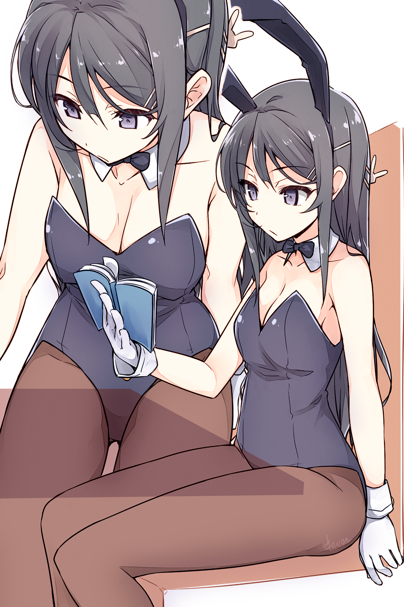
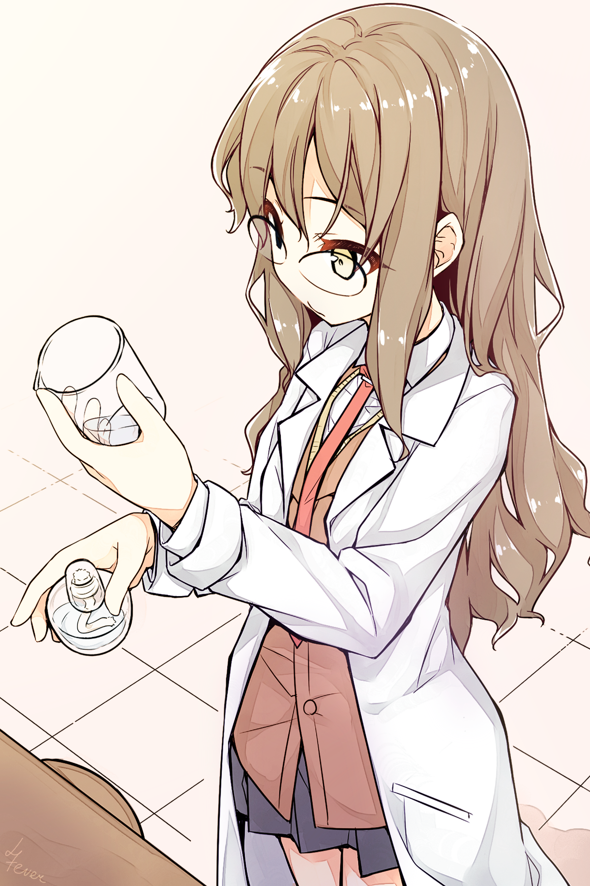
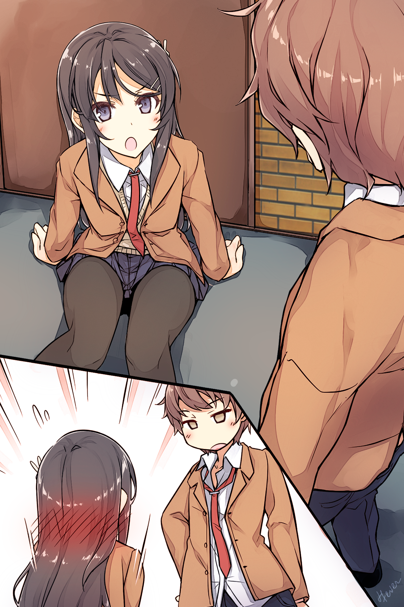
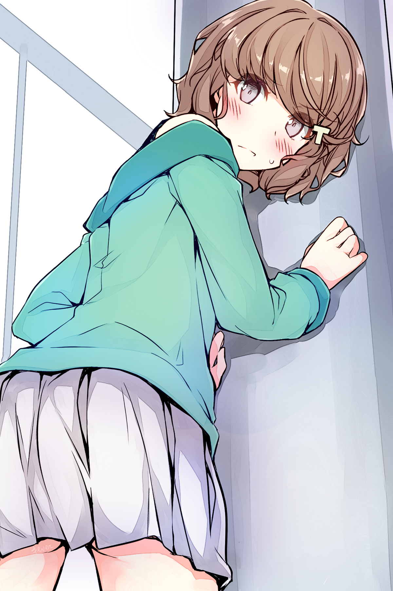
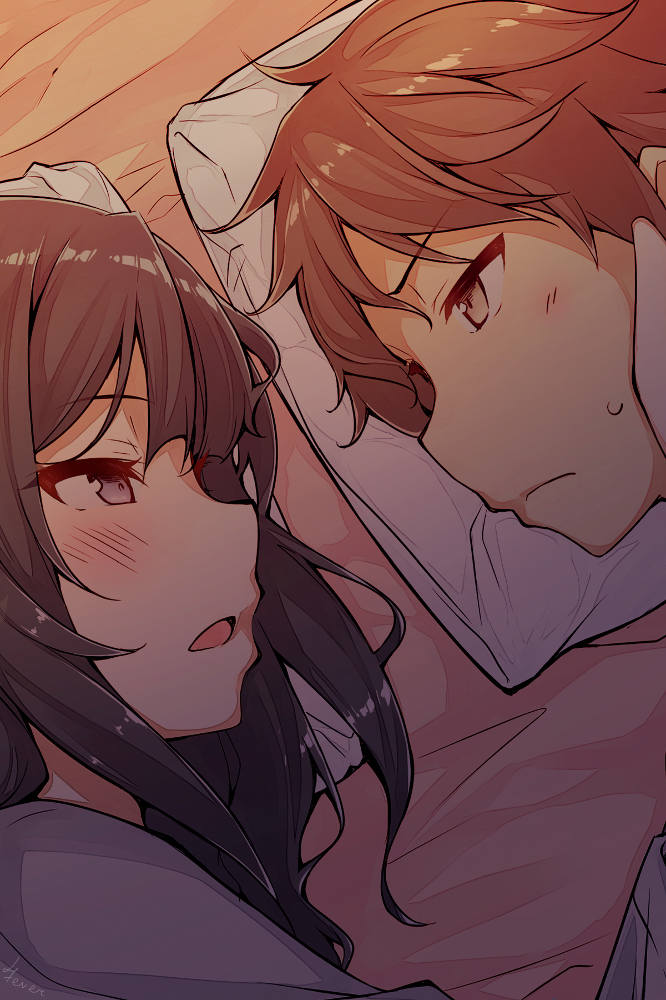
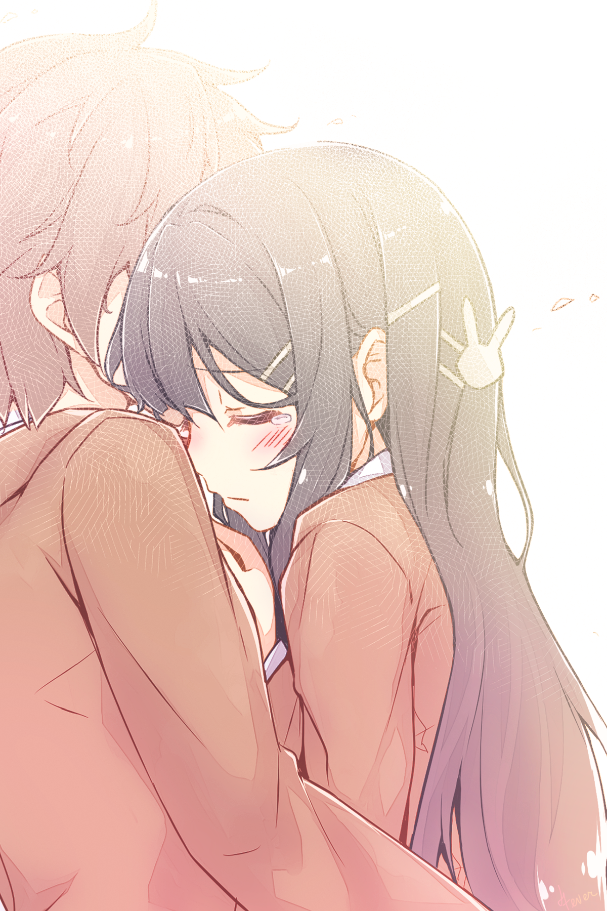

Том 1. Пролог
"Може, поцілуємося?" Вона завжди мене так дражнила. Але незабаром після цих слів, вона зникла. Можна сказати, що це найтиповіша любовна історія між мною, нею і ними... можливо. Можливо.
"Може, поцілуємося?" Вона завжди мене так дражнила. Але незабаром після цих слів, вона зникла. Можна сказати, що це найтиповіша любовна історія між мною, нею і ними... можливо. Можливо.
Частина 1
Одного разу Сакута Азусагава зустрів дику дівчину-кролика.
Це був останній день Золотого Тижня*.
[П/П: Японський "Золотий тиждень" - період з кінця квітня до перших чисел травня, на який припадає одразу кілька державних свят. У правильному поєднанні з вихідними днями "Золотий тиждень" перетворюється на один із найтриваліших відпускних сезонів у Японії].
Двадцятихвилинна поїздка на велосипеді привела його прямо з квартири до станції метро Сенандай, де перетинаються Лінія Еносіма, Сотецу Ізуміно та Йокогамський метрополітен. Станція була оточена спальними районами, а висоток було вкрай мало.
Перебуваючи ліворуч від станції, Сакута попрямував у бік світлофора. До місця його призначення - бібліотеки - залишалася всього хвилина.
Стійка для велосипедів була заповнена лише наполовину, тож він припаркувався і попрямував усередину.
Хлопець часто приходив сюди, але характерна тиша всередині завжди змушувала його злегка нервувати. Його тіло трохи напружилося, коли він увійшов усередину.
Бібліотека була найбільшою в окрузі й завжди мала велику кількість відвідувачів. Одразу за входом розташовувалася стійка з журналами та газетами. Сакута помітив знайомого літнього чоловіка, який похмуро вивчав спортивну газету. Його улюблена команда, мабуть, програла.
Пройшовши повз стійку, він помітив, що майже всі столи були зайняті. Старшокласники, студенти коледжів і навіть дорослі з ноутбуками.
Сакута лише глянув на них, а потім попрямував до полиць, заповнених примірниками сучасних романів у твердій палітурці. Його очі пройшлися по корінцях книг, розташованих в алфавітному порядку, коли він вивчав розділ, що починався з "Ю". Пошуки змусили його пригнутися. Його зріст становив п'ять футів вісім дюймів, і навіть найвищі полиці були йому по пояс.
Незабаром він знайшов книгу, про яку просила його молодша сестра. Автора звали Канна Юігахама. Вона називалася "Принц, який дав мені отруєне яблуко". Якщо хлопець правильно пам'ятав, ця книжка вийшла близько чотирьох чи п'яти років тому, але його сестрі сподобалася інша робота авторки, і вона була сповнена рішучості прочитати решту її творів.
Сакута потягнувся до трохи пошарпаного корінця і дістав книжку з полиці.
Озирнувшись назад, він мав намір попрямувати прямо до стійки реєстрації та видачі книг, але тут перед ним постала вона.
Там, між книжковими полицями, стояла дівчина-кролик.Він кілька разів моргнув. Очевидно, йому нічого не ввижалося. Вона явно була справжньою.
Блискучі чорні туфлі з високими підборами. Чорні панчохи на її довгих ногах були досить прозорі, щоб він міг розрізнити колір її шкіри під ними. Чорний леотард, що підкреслював її фігуру - струнку і спокусливу, створював помітну, але не надто зухвалу улоговинку на бюсті.
Білі манжети надавали сміливого акценту її зап'ястям, а на шиї красувалася чорна краватка-метелик.
За його припущеннями, зростом вона була не більше п'яти футів п'яти дюймів. Вольові риси обличчя плюс нудьгуючий вираз надавали їй зрілої чарівності та стриманості, які він знаходив дуже привабливими.
Спочатку Сакута припустив, що хтось, мабуть, знімає все це. Він озирнувся на всі боки, але ніде не побачив знімальної групи. Вона була тут зовсім одна. Загублена й самотня. Дивовижно. Справжня дика дівчина-кролик.
Звісно, її зовнішній вигляд одразу впадав у вічі, тим паче в такому місці, як бібліотека. Абсолютно недоречна... насправді, Сакута міг придумати тільки кілька місць, які можна було б вважати природним середовищем існування дівчини-кролика. Можливо, казино у Вегасі або магазини з поганою репутацією? У будь-якому разі, дівчата-кролики безумовно не мешкали в місцевій публічній бібліотеці.
Хто б міг подумати, але це ще не найдивовижніше, що тут відбувалося.
Ця дівчина була одягнена в найпривабливіше вбрання, яке тільки можна собі уявити, але ніхто не дивився на неї.
- Що за?.. - сказав він уголос.
Бібліотекар, що стояв поруч, кинув на нього погляд, який ясно говорив: "Тсс!". Хоча хлопець з повагою схилив голову у відповідь, він чудово розумів, що увагу слід звернути на зовсім іншу людину.
Здається, він почав розуміти, що до чого.
Нікому не було діла до дівчини-кролика. Вони не звертали на неї жодної уваги, не здіймали шуму і, здавалося, навіть не помічали її присутності.
Зазвичай, якби повз пройшла дівчина в такому привабливому вбранні кролика, то навіть та студентка, що бореться з шістьма кодексами японської правової системи, підняла б очі. Старий зі спортивною газетою зробив би вигляд, що продовжує читати, крадькома поглядаючи на неї. А бібліотекар підійшов би і ввічливо запропонував змінити одяг.
Щось було не так. Зовсім не так.Він відчув, як по спині побігли крапельки поту.
Поки він з жахом спостерігав, дівчина-кролик узяла том з однієї з книжкових полиць і попрямувала в дальній кут бібліотеки.
Дорогою вона грайливо показала язика одній зі студенток коледжу і спробувала закрити руками планшет одному бізнесменові, який так само, як і студентка, не виявив жодної уваги до її персони. Усвідомивши, що її так ніхто й не помітив, вона посміхнулася.
Потім вона зайняла місце в самому кінці залу.
Навпроти сидів студент, занурений у дослідження. Він так її й не помітив. Дівчина-кролик, побачивши, що її костюм сповз у ділянці грудей, швидко поправила його, але студент ніяк на це не відреагував. Навіть попри те, що його погляд був спрямований просто на неї.
Через деякий час хлопець закінчив свої дослідження і зібрався йти, нібито нічого незвичайного не сталося. Потім він пішов, знову ж таки, немов нічого не помічаючи, і навіть не намагаючись поглянути на її декольте.
- ...
Сакута на мить завагався, але потім сів на місце, яке звільнив студент, що пішов.
Він дивився прямо на дівчину-кролика, що сиділа навпроти, вивчаючи м'який вигин її оголених плечей. Вони слабо рухалися з кожним її зітханням, доволі незвичне видовище для бібліотеки - символу знань і культури. Сакуті здавалося, що він божеволіє.
Через кілька хвилин вона відірвала погляд від книги, і їхні очі зустрілися.
- ...
- ...
Вони обидва двічі моргнули.- Дивно, - почала вона пустотливим голосом, - ти все ще можеш бачити мене.
Це прозвучало так, ніби інші на це були не здатні.
Але на думку Сакути ці слова звучали правдиво. У цей самий момент, якою б дивною не була її присутність, здавалося, що жодна людина не змогла помітити її.
- Побачимося.
Дівчина закрила книгу і встала.
На цьому все мало закінчитися. Він міг би звести все, що трапилося, до жарту, а потім розповісти своїм друзям. Але Сакута не міг залишити все як є.
Тому що він знав її.
Вони разом навчаються в старшій школі Мінагахара. Вона - третьокурсниця, на рік старша, його семпай. Сакута навіть знав її повне ім'я.
Май Сакурадзіма.
Так звали дівчину-кролика.
- Гей.
Якраз перед тим, як її фігура почала зникати серед полиць, він крикнув їй услід.
Май зупинилася і кинула на нього питальний погляд через плече.
- Ти ж Сакурадзіма, вірно? - запитав він, намагаючись говорити якомога тихіше. - З третього року?На її обличчі промайнуло здивування.
- Якщо ти мене знаєш, ймовірно, ти зі старшої школи Мінагахара?
Вона знову сіла, оглядаючи його з ніг до голови.
- Сакута Азусагава, клас 2-1. Азусагава як "Зона відпочинку Азусагави". А Сакута - "Квітуче Таро".
- Мене звати Май Сакурадзіма. Май як у "Май Сакурадзіма" і Сакурадзіма як у "Май Сакурадзіма".
- Так, я знаю. Ти ж знаменитість.
- Саме так.
Здавалося, вона втратила до нього будь-який інтерес. Поклавши руку на щоку, вона перевела погляд на найближче вікно. Нахилившись, вона продемонструвала своє декольте. Саме на нього й дивився Сакута. Це було вартісне видовище.
- Сакута Азусагава.
- Так?
- Дозволь мені тебе попередити.
- Попередити?
- Забудь про те, що ти бачив сьогодні.
Він було відкрив рота, але перш, ніж він встиг щось сказати, вона знову заговорила:Це було правильно помічено.
- І ще, ніколи більше не розмовляй зі мною.
- ...
- Відповідай, якщо зрозумів.
- ...
Коли він промовчав, Май виглядала роздратованою. Потім її вираз обличчя повернувся до звичайного, нудьгуючого вигляду. Вставши і поклавши книгу назад на полицю, вона попрямувала до виходу.
Люди, повз яких вона проходила, продовжували ігнорувати її існування. Навіть коли вона проскочила повз стійку видачі книг, бібліотекарі продовжували працювати в цілковитій тиші. Тільки Сакута не міг відірвати очей від цієї пари чарівних ніжок, обтягнутих панчохами.
Щойно вона повністю зникла з поля зору, Сакута звалився на стіл.
- Забути? - пробурмотів він, - Як можна забути це вбрання?
Оголена шкіра від плечей до грудей. Коли вона притулила руку до щоки, вигини її грудей стали виразнішими. У ніс вдарив приємний запах. Її м'який голос був ледь вловимий, щоб його міг почути тільки Сакута. Ці ясні очі, що дивляться прямо на нього. Усе це сильно збуджувало.
Він не хотів вставати з місця, боячись, що оточуючі помітять його стан.
Схоже, він застряг за цим столом на якийсь час.
Йому потрібно було багато про що розпитати Май. Але він був змушений відкласти ці питання на інший день.
Частина 2
- Зрозумів! Мабуть, це були дівчата-кролики! - пробурчав він, намагаючись сісти. - Мм?
Але все пішло не так, як планувалося. На його лівому плечі відчувалася величезна тяжкість.
Відкинувши ковдру, він зрозумів у чому справа.
Поруч із ним згорнулася калачиком дівчина в піжамі, обхопивши його за ліву руку, вона спокійно спала. Мабуть, відкинувши ковдру, вона замерзла і, щоб зігрітися, довелося ще тісніше притиснутися до Сакути.
Це була його сестра, Каеде. Цього року їй виповниться п'ятнадцять.
- Прокинься, Каеде. Уже ранок.
- Але тут так холодно...
Вона, здавалося, не рухалася, тож він узяв її на руки й підвівся з ліжка.
- Чорт забирай, яка ж ти важка!
Каеде була зростом п'ять футів чотири дюйми, досить висока для свого віку, і останнім часом вона швидко зростала. Важкість у його руках ясно давала зрозуміти, що вона вже не маленька дівчинка.
- Половина мене складається з почуттів до братика! - запротестувала вона.
- Ти взагалі себе чуєш? Сподіваюся, друга половина - засіб від клопоту, який ти спричиняєш своїми почуттями. А, втім, якщо ти прокинулася, то вставай уже.
- Ах.
Бурчачи, вона дозволила опустити себе на землю. За останній рік її обличчя справді сильно подорослішало, і між тим, як вона виглядала, і тим, як поводилася, утворилася серйозна прірва. Те, що рік тому було б абсолютно нормальним рівнем фізичного контакту для братів і сестер, тепер безумовно викликало в Сакути дискомфорт.Напевно, їй також давно пора перестати носити піжаму з капюшоном, схожу на панду.
- Я прийшла розбудити тебе, але ти не встав, тож насправді це твоя вина.
Коли вона хмурилася, виглядала молодшою.
- Добре, але ти вже достатньо доросла, щоб займатися подібними речами.
- Проблема в тому, що я тебе збуджую?
- Та кого взагалі збудить рідна сестра?!
Він легенько стукнув її по лобі, а потім покинув кімнату.
- Гей! Зачекай на мене!
Після того як він приготував сніданок для них обох, вони разом поїли. Сакута доїв першим і почав збиратися до школи.
- Бережи себе! - сказала Каеде. Вона проводила його з посмішкою, коли той виходив з дому.
Він почав позіхати ще до того, як вийшов із житлового комплексу. Учорашній день був надто насиченим, і йому було дуже важко заснути. Дивні сни ніколи не були запорукою гарного початку дня.
Знову позіхнувши, він пішов через житловий квартал. Дорогою він мав перетнути один міст. У міру того як він наближався до станції, будівлі навколо нього ставали дедалі вищими. Люди починали товпитися, йдучи в одному напрямку.
Зрештою він дістався до головної дороги, дочекався світлофора і перейшов дорогу пішохідним переходом. Коли він проходив повз бізнес-готелі та магазини побутової електроніки, вдалині показався залізничний вокзал.
Загалом прогулянка зайняла близько десяти хвилин.На першому поверсі станції знаходилася Лінія Одавара. Потяги, що прибувають, прямують до Сіндзюку і зупиняються тут, щоб повернутися до Катасе-Еносіма. На другому поверсі були проходи до ліній Токайдо і Сенан-Сіндзюку.
Відвернувшись від турнікетів, Сакута приєднався до натовпу, що прямував угору сходами.
Він спустився проходом завдовжки під тридцять метрів, який вів до універмагу "Одавара". Не те, щоб він збирався йти за покупками. Так рано магазин усе ще був зачинений. Біля зачинених дверей він повернув ліворуч, на іншу станцію Фудзісави.
"Електрична Залізниця Еносіма". Еноден для стислості - "ден" - це перший звук у Японському слові, що позначає електричну залізницю. Це була одноколійна залізниця, що мала тринадцять станцій по дорозі в Камакуру, вся поїздка займала близько тридцяти хвилин.
Сакута доклав свою приміську перепустку і пройшов через турнікет, коли поїзд зупинився. Зелений поїзд, з кремовими віконними рамами, наче в ретро стилі. Потяги на цій лінії були короткими, лише чотири вагони завдовжки.
Хлопець пройшов платформою і сів у передній вагон.
Пасажири відрізнялися за зростом і були по-різному одягнені: хтось був у шкільній формі, хтось у робочому одязі, а хтось у діловому костюмі. До переїзду сюди Азусагава вважав, що це туристична лінія, але більшість місцевих жителів користувалася нею для щоденних поїздок на роботу.
Сакута вхопився за місце біля дверей.
У цей момент хтось заговорив із ним.
- Привіт.
Хлопець, який приєднався до нього, пригнічуючи позіхання, був доволі вродливий - якби він був представлений як особа відомого модельного агентства, у це б охоче вірилося.
У нього були різкі риси обличчя, і спочатку він міг здатися дещо відразливим, але в момент, коли він усміхався, це враження змінювалося дружелюбністю. Схоже, цей хлопець був популярний серед дівчат.
Його звали Юма Кунімі. Другорічник і новачок у баскетбольній команді. Зустрічається з дівчиною.
Зітхання...- Твоя задоволена посмішка - це останнє, що мені потрібно сьогодні рано вранці. Вганяєш у депресію.
- Так?
- Ага.
Вони базікали про те про се. Пролунав сигнал, і двері зачинилися.
Поїзд насилу набирав швидкість. Не встигнувши розігнатися, він почав пригальмовувати на підході до станції Ішигамі.
- Кунімі.
- Мм?
- Я хотів би поговорити про Сакурадзіму...
- Бідолаха.
Перш ніж він встиг договорити, Юма перервав його, заспокійливо поплескавши друга по спині.
- Чому ти мене жалієш?
- Я, звісно, радий, що ти цікавишся кимось окрім Секо Макінохари, але... Вона не твого рівня.
- Я не казав, що закоханий або збираюся почати з нею зустрічатися.
- Тоді в чому справа?- Хм... Ну, вона досить знаменита.
- Я в курсі.
Так, Май Сакурадзіма була справжньою знаменитістю. Кожен учень старшої школи Мінагахара знав, хто вона така. Цілком імовірно, що її знали від сімдесяти до вісімдесяти відсотків населення Японії. Вона була настільки знаменита, що ця цифра не здавалася перебільшеною.
- Свою акторську кар'єру вона почала в шість. Ранковий серіал за її участю отримав такий високий рейтинг, що це було схоже на золотий вік телебачення, перетворивши її на сенсацію.
Популярність різко зросла, що призвело до її появи у всіх видах фільмів, шоу і рекламних роликів. Вона була настільки затребувана, що не минало й дня без її появи на ТБ.
Звичайно, через два або три роки після її стрімкого злету, тенденція "Май Сакурадзіма повинна брати участь скрізь і в усьому" пройшла, але до цього моменту, завдяки її акторській майстерності, їй надходило море пропозицій.
У шоу-бізнесі, де не було нічого незвичайного в тому, що артисти забувалися протягом року, вона постійно працювала, коли навчалася в молодших класах середньої школи. Це саме по собі було досить вражаюче, але вона збиралася взяти ще одну велику перерву.
До чотирнадцяти років Май Сакурадзіма перетворилася на дівчинку, розумну не по роках. Головна роль у гучному фільмі викликала ще один сплеск уваги преси, настільки інтенсивний, що був час, коли здавалося, що її усміхнене обличчя було на обкладинці кожного журналу.
- Я закохався в неї ще в середній школі. Поєднання милоти і сексуальності від якого просто неможливо було встояти.
Юма був далеко не єдиним. Натовпи хлопчаків відчували те саме.
Щойно її популярність знову досягла піку - Май раптово оголосила, що бере перерву. Це було якраз перед тим, як вона закінчила середню школу. Жодної виразної причини так і не було названо і відтоді минуло трохи більше двох років.
Коли Сакута дізнався, що Май Сакурадзіма відвідує його школу, він був дуже здивований.
"Вау, знамениті люди дійсно існують", - подумав він.
- Чувак, я теж пам'ятаю всі ці чутки. Люди говорили, що в шоу-бізнес вона потрапила через "ліжко" або що вона спала з продюсером...- Ні, це було, принаймні, в середній. Насправді, найперші чутки, які потрапили на телебачення, були всі про її матір, за сумісництвом - її менеджера. Тепер вона має власну агенцію, а вона - президент компанії. Я почув про це в якійсь передачі минулого тижня.
- Хм, я цього не знав... звісно, такі чутки абсолютно безпідставні.
- Немає диму без вогню, вірно?
- Ми живемо в такі часи, коли цей "вогонь" розпалюють не самі люди.
Інформація поширюється інтернетом, як лісова пожежа. Люди в усьому світі можуть дізнатися про що-небудь в одну мить. Навіть якщо це брехня. Люди, які поширюють ту чи іншу інформацію, зазвичай не звертали уваги на факти. Їх турбувало тільки те, що вони могли пожартувати, привернути до себе увагу, розважитися або вказати на чиїсь недоліки. Нічого більше.
- Від тебе це звучить дуже переконливо...
Сакута залишив це зауваження без коментарів.
Поїзд повільно проїхав ще чотири станції: Янагікодзі, Кугенума, Шонанкайганкоен та Еносіма.
Сакута визирнув у вікно, помітивши, що вони зараз котяться тією частиною лінії, яка перетинала міську вулицю. Завжди було дивно бачити звичайні машини просто за вікнами. Але в нього ледь вистачило часу подумати про це, перш ніж вони повернулися на звичайну частину дороги.
На цій ділянці лінії будівлі були збудовані так близько до шляху руху поїзда, що здавалося, зіткнення може статися будь-якої миті. Здавалося, ніби можна висунутися з вікна і доторкнутися до стін чужих будинків, коли вони пролітають повз. Начебто гілки й листя дерев на задніх подвір'ях справді могли торкатися вікон.
Не зважаючи на подібні побоювання, потяг неквапливо прослизнув між будинками і врешті-решт сягнув станції Косігое.
- Але я ніколи не бачив її з ким-небудь у школі.
- Мм?
- Сакурадзіма. Ти ж почав говорити про неї, Сакута.— Она всегда сама по себе.
Она не вписывалась ни в свой класс, ни в школу. Такое же впечатление о ней сложилось и у Сакуты.
— Сэмпай из баскетбольной команды сказал, что после поступления, она пропустила большую часть учебного года.
— Почему?
— Работа. Она объявила о перерыве, но были контракты, которые она должна была соблюдать.
— Понятно.
Но зачем объявлять об этом публично, не закончив свою работу? Если и была какая-то причина, то ей нужно было рассказать об этом еще тогда…
— Сакурадзима начала регулярно посещать школу только после летних каникул.
— ...Кажется, ей нелегко пришлось.
Сакута мог себе представить, с чем столкнулась Май, когда приехала сюда той осенью. Ее одноклассники потратили целый семестр на формирование групп и изучение школьных иерархий.
— Об остальном ты можешь догадаться сам, — сказал Юма, явно думая о том же.
После того, как взаимоотношения в классе сформировались, было трудно их изменить или влиться в них. Все устроились поудобнее на своих местах и не хотели их уступать. Это было нормально для людей – защищать свои позиции.
Когда Май начала ходить во втором семестре, никто не знал, как с ней быть. К тому же она была знаменитостью. Всем было любопытно, но сближаться с ней было рискованно. Любой, кто попытался бы подружиться с ней, привлек бы к себе внимание. Это, в свою очередь, несло в себе высокий риск того, что люди будут говорить за их спиной такие вещи, как: «Это так раздражает...» или «Кем они себя возомнили?». Влиться в эту атмосферу для Май стало невозможно.
«Как только такое происходит... пути назад уже не будет. Такова была атмосфера в школе»Усі любили скаржитися про те, як усе нудно, бажаючи, щоб трапилося щось цікаве. Але ніхто насправді не хотів, щоб усе коли-небудь змінилося.
Сакута не був винятком. Якщо нічого цікавого не відбувалося, значить, усе було просто. Він міг розслабитися і почуватися комфортно. Немає потреби напружувати себе. Ура мирним дням!
Пролунав попереджувальний дзвінок, і двері зачинилися.
Поїзд знову почав рухатися, повільно проходячи через нові ряди будинків.
Прямо за вікном була стіна, яка незабаром змінилася іншою стіною. Стіна йшла за стіною, будинок за будинком, перериваючись лише рідкісними переходами. І саме тоді, коли здавалося, що це ніколи не закінчиться, без жодного попередження... відкрився вид.
Море. Блакитна вода виблискувала під ранковими променями сонця.
Небо. Чисте ранкове повітря і небо, що розстелялося аж до горизонту і переливалося біло-блакитними тонами.
Між ними була чітка лінія горизонту. Як за помахом чарівної палички, усі пасажири в поїзді звернули свій погляд до вікон.
Деякий час потяг ішов уздовж узбережжя Шичірігахама, звідки відкривався вид на затоку Сагамі. Видовище, що захоплювало дух, містило в собі все - від Еносіми до сліпучих пляжів Юігахами.
- Але чому ми раптом заговорили про Май Сакурадзіму?
- Кунімі, тобі подобаються дівчата-кролики? - запитав Сакута, не відриваючи погляду від виду, що відкрився.
- Не зовсім.
- Значить, ти їх любиш?
- Ага.- Гей, що за фігня? Давай викладай, - Юма ткнув його в бік.
- Якби ти зіткнувся в бібліотеці з привабливою дівчиною-кроликом, що б ти зробив?
- Поглянув би на неї ще разок.
- Зрозуміло.
- А після я б глянув ще раз, і ще, поки очі не заболять.
Це була природна людська реакція. Принаймні, природна чоловіча реакція.
- А до чого тут Май Сакурадзіма?
- Вони ніби як пов'язані, але... я не знаю.
- Я зовсім заплутався.
Юма явно вирішив, що питати про це не варто, коли Сакута так ухилявся від відповіді. Натомість він обмежився приємною посмішкою.
Потяг котився вздовж узбережжя і, нарешті, сягнув станції Шічірігагама, поруч із якою розташовувалася старша школа Мінагахара - місце, де навчається Сакута.
Коли двері поїзда відчинилися, вагон заполонив аромат морського бризу.
Натовпи студентів в однакових уніформах виходили з поїзда. Біля входу стояла самотня машина, схожа на пугало, і зчитувала квитки. Протягом дня там мав стояти черговий, але в той час, коли учні проходили повз, поблизу нікого не було.
Школа була через дорогу від станції.- Я не збираюся віддавати тобі свою сестру.
- Ну ж бо, будь чемнішим зі своїм братиком.
- У тебе вже є мила дівчина, Кунімі.
- Так, якщо вже ти про це заговорив.
- Вона б розлютилася, почувши щось подібне.
- Звісно. Камісато така мила, коли злиться. Га? Ти тільки поглянь.
Сакута простежив за поглядом Юми і побачив Май Сакурадзіму, що йшла за кілька метрів попереду. Довгі руки й ноги. Мініатюрне личко. Струнка, модельна фігура. Усі були одягнені в одну й ту саму уніформу, але на ній вона мала зовсім інший вигляд. Чорні колготки, які вона носила, спідниця, що приховує вигин її спини, піджак, що ідеально сидить, - все це здавалося абсолютно недоречним. Наче на ній був чужий одяг. Вона вчиться тут уже третій рік, але шкільна форма на Май здавалася якоюсь дивною.
Неподалік базікали три дівчини, і кожна з них виглядала набагато природніше у своїй шкільній уніформі. Першокласниця, яка з ентузіазмом вітала семпая зі свого клубу, виглядала в ній значно краще. Для порівняння, навіть той хлопець, що дружньо штовхав приятеля, порівняно з нею здавався сповненим життя.
Коротка дорога від станції до школи була заповнена учнями зі школи Мінагагара, які розмовляли і сміялися.
Але в центрі всього цього Май ішла одна, в повному мовчанні, абсолютно ізольована. Як інопланетянин, що забрів у звичайну старшу школу. Абсолютно недоречна. Гидке каченя. Цю ситуацію не можна було описати якось інакше.
Насправді, ніхто взагалі не дивився на неї. Май Сакурадзіма була просто тут, але вона не привертала жодної уваги. Ніхто, здавалося, не був схвильований, побачивши її мигцем. У школі Мінагахара це було чимось звичайним.
Май була просто тут, як повітря. Усі погодилися з цим. Це нагадало Сакуті те, що він бачив у бібліотеці, неподалік від станції Сенандай. Почуття занепокоєння виникло всередині нього.
- Кунімі...
- Так?- Так, ясно, як божий день. У мене гарний зір. Обидва ока по одиниці.
Відповідь Юми була саме такою, як він і очікував. То що ж саме бачив Сакута напередодні?
- Побачимося пізніше.
- Угу.
Цього року Юма навчався в іншому класі, тому на другому поверсі вони розділилися. Сакута попрямував до класу 2-1. Коли він дістався туди, половина учнів уже зібралася в класі.
Він сів у першому ряду біля вікна. З таким прізвищем, як Азусагава, він майже завжди сидів тут. Доти, доки не з'явиться хто-небудь із прізвищем Аікава або Аізава, він буде першим за списком. На жаль, але бути першим у цьому випадку не давало жодних переваг. Однак відтоді, як він вступив до школи Мінагахара, Сакута почав цінувати своє місце в класі.
Зрештою, з вікон школи відкривався приголомшливий вид на океан.
Він побачив кілька людей, які займалися віндсерфінгом, сподіваючись зловити ранній ранковий вітерець.
- Гей.
- ...
- Гей, я з тобою розмовляю.
Почувши поруч чийсь голос, Сакута підняв голову.
Перед його столом стояла дівчина і сердито дивилася на нього згори донизу. Найпопулярніша дівчина в класі. Її звали Сакі Камісато.
Великі, широко розкриті очі. Волосся до плечей, яке злегка завивалося всередину. Тонкий макіяж, помада з легким відтінком рожевого. Усі хлопці вважали її симпатичною.- Вибач. Я не думав, що в класі є ще хтось, хто дійсно заговорить зі мною.
- Слухай...
Пролунав дзвінок.
І в кімнату увійшов учитель.
- Ах! Нам потрібно поговорити. Чекатиму на тебе на даху школи.
Вона грюкнула долонею по його парті, а потім пробралася через клас назад на своє місце.
- У мене ж немає вибору, так? - пробурмотів він. Потім Сакута поклав підборіддя на руку і почав милуватися океаном.
Він усе ще виднівся вдалині й заповнював собою все поле зору.
- Як же це все дратує...
Те, що після школи його покликала якась дівчина, не давало Сакуті жодного проблиску надії. Щось подібне не могло змусити серце хлопця затріпотіти.
По-перше, Сакі Камісато зустрічалася з Юмою Кунімі.
Частина 3
Після школи Сакута зробив вигляд, що забув про зустріч і попрямував до шафок для взуття, але потім передумав і пішов на дах. Він вирішив, що ігнорувати її зараз не варто, це тільки погіршить ситуацію. Поспішиш - людей насмішиш... Хоча, можливо, це не зовсім підходить під цей випадок.
Як би там не було, перші слова, які Сакі Камісато сказала йому, були:Уже зла. Що з нею не так.
- Я був зайнятий прибиранням.
- Мені все одно.
- То чого ж ти хочеш?
- Перейду одразу до справи, - почала Сакі, дивлячись прямо в очі Сакуті. - Ти повний ізгой у класі, тож спілкування з тобою погіршує репутацію Юми.
- ...
Досить грубо, але, по суті.
- Незважаючи на те, що ми вперше розмовляємо, ти дуже багато знаєш про мене, Камісато, - сказав він рівним голосом.
- Усі знають про інцидент із госпіталізацією.
- А, ти про інцидент із госпіталізацією... - неуважно сказав Сакута, немов ця тема йому набридла.
- Якщо тобі хоч трохи шкода Юму, то ніколи більше з ним не розмовляй.
- За цією логікою, наразі проблеми саме в тебе. Поки ми тут розмовляємо, твоя репутація падає.
На даху були й інші учні, і відчутна напруга між ними привертала до себе багато уваги.
Дехто щось друкував на телефонах. Ймовірно, вони описували те, що відбувається, своїм друзям.- Забудь про мене. Це заради Юми.
- Я все розумію. Ти просто диво, Камісато.
- А? Чому ти раптом зробив мені комплімент?
Це був лише дурний жарт у її бік, але вона не зрозуміла його.
- Не хвилюйся. З Кунімі все буде гаразд. Його репутація не постраждає тільки тому, що хтось побачить, як він розмовляє зі мною. Усі знають, що він із тих хлопців, які їдять обід, приготований мамою, зі щирою вдячністю і завжди кажуть який він смачний. Вони знають, що він хороший хлопець, який піклується про людей.
Одного разу Юма розсміявся, сказавши, що будь-хто, кого виховує мати-одиначка, знає, як цінні матері, але навіть ідіот розуміє, що все не так просто. Мабуть, були діти зі схожих сімей, які поводилися набагато гірше.
- Тож не хвилюйся. Кунімі чудовий хлопець, чесно кажучи, він занадто хороший для тебе.
- Ти хочеш посваритися?
- Здається, саме ти нариваєшся на конфлікт.
Розмова почала дратувати хлопця, і це проявилося в його тоні.
- Ох, не нагадуй мені про це! Чому він називає тебе на ім'я, а мене - Камісато? Я ж його дівчина! То чому ж Юма називає мене на прізвище?
Він не особливо хотів говорити на цю тему. "Та яка різниця?" - подумав Сакута, але залишив цю фразу при собі. Йому не хотілося, щоб її особисте життя обтяжувало його ще більше, ніж зараз. Але те, що Азусагава вважав за краще сказати натомість, було, найімовірніше, ще гірше.
- Ти сьогодні справді на взводі. Невже в тебе "ці" дні?
- А?!- Пішов ти! Ідіот! Здохни!!!
Абсолютно втративши самовладання, Сакі вирішила повернутися всередину, вона вигукувала образи через плече, а потім грюкнула за собою дверима.
Все ще стоячи там, Сакута почухав потилицю, пробурмотівши з відтінком жалю: "Чорт, схоже, так і є".
Щоб випадково не наштовхнутися на Сакі Камісато в коридорах, Сакута провів деякий час на даху, насолоджуючись морським бризом, перш ніж вирушити додому.
На той час, як він дістався до шафок для взуття, небо почало забарвлюватися червоними тонами.
У школі було тихо. Зовсім нікого. Ця пора дня була схожа на затишшя між двома хвилями - учні, які пішли одразу після їхнього останнього заняття, вже давно були відсутні, але всі інші все ще були зайняті своїми клубами або тренуваннями. Перевзуваючись, Азусагава чув, як вдалині кричать спортивні команди. Цей звук лише змусив його зануритися у ще глибшу самотність.
Дорогою на станцію йому здавалося, що він узяв усю дорогу в оренду для особистого користування. Невдовзі він уже був на станції Шичірігахама, яка теж була порожньою. Зазвичай він ішов разом з усіма, коли заняття закінчувалися, приєднуючись до величезного натовпу студентів, які зібралися на крихітній платформі, але сьогодні навколо було лише кілька людей.
Його погляд одразу ж зупинився на знайомій персоні. Дівчина гордо стояла наприкінці платформи, немов відкидаючи будь-який контакт з оточуючими, дріт, що виходив з кишені її уніформи, вільно бовтався в повітрі.
Май Сакурадзіма.
Купаючись у променях призахідного сонця, вона випромінювала нещасну красу - просто стоячи тут, вона була прекрасна, як картина. Сакута відчував, що може дивитися на неї весь день... але цікавість взяла гору.
- Привіт, - сказав він, підходячи до неї.
- ...
Відповіді не було.
- Привееет? - сказав Азусагава трохи голосніше.Відповіді, як і раніше, не було.
Але він був майже впевнений, що вона його помітила.
Сакута і Май стояли на тихій платформі, чекаючи поїзда. Навколо перебували ще три учні зі школи Мінагахара. Потім увійшла пара студентського віку - напевно, туристи. Проходячи через двері, вони показали черговому денну перепустку "Норіоріорі-кун*".
[П/П: Це квиток, який дає змогу сідати й висаджуватися на будь-якій станції на всій лінії "Еноден" будь-яку кількість разів протягом одного дня.]
Вийшовши на середину платформи, вони майже одразу ж помітили Май.
- Гей...
- Хіба це не...
Він чув, як вони перешіптуються і вказують на неї. Май не зводила очей з рейок, ніби нічого не помічала.
- Ти ж знаєш, що не повинен цього робити! - грайливо прошепотіла дівчина, явно не намагаючись його зупинити. Їхнє кокетливе піддражнювання луною рознеслося притихлою станцією. Сакуту це дратувало.
Не в силах більше терпіти, він повернувся до них обличчям і побачив, що хлопець направив камеру свого телефону на Май.
Перш ніж він встиг натиснути на кнопку, у кадр увійшов Азусагава. Пролунало клацання, але все, що він встиг зняти - похмуре обличчя Сакути крупним планом.
Чоловік спочатку здивувався, а потім розсердився.
- К-хто ти такий, чорт забирай? - проричав він, роблячи крок уперед. Зрештою, він не міг дозволити якомусь старшокласнику принизити себе перед своєю дівчиною.
- Людина, - сказав Сакута з незворушним обличчям. Дуже буквально. Технічно це було правильно.- А ти фотограф - маніяк*.
[П/П: Creepshot - фотографія, на якій зображена дівчина/жінка, зроблена без її відома або згоди. Особлива увага на знімку приділяється сідницям, ногам або декольте].
- Що?! Н-ні!
- Ти вже достатньо дорослий, щоб усе чудово розуміти. Те, що ти робив, змушує мене соромитися того, що ми з тобою однієї статі.
- Я не хотів.
- Ти збирався запостити це фото, так?
"Що?!" - гнів і сором промайнули на обличчі чоловіка. Мабуть, Сакута влучив у точку.
- Якщо ти так сильно жадаєш уваги, я міг би запостити твою фотографію і позначити її як "Фотограф - Маніяк".
- ...
- Хіба тебе ніхто не вчив цього, коли ти був дитиною? "Стався до людей так, як хочеш, щоб вони ставилися до тебе".
- Заткнися, придурок! - хлопець не витримав. Потім він схопив свою подругу за руку і потягнув її до щойно прибулого поїзда, що прямував до Камакури. На станції був лише один шлях, тож незалежно від того, в який бік ішов поїзд, він зупинявся на одному й тому самому місці.
Сакута дивився, як від вокзалу від'їжджає поїзд, і раптом відчув, що хтось дивиться на нього.
Занервувавши, він обернувся і побачив, що Май роздратовано витягує навушники.
Її очі зустрілися з очима хлопця.- А?
Він очікував іншої реакції і не зміг приховати свого здивування.
- Ти думав, я на тебе накричу? Щось на кшталт: "Не лізь не у свою справу?"
- Е... так.
- Я так і хотіла, але стрималася.
- Тоді й розповідати не варто було.
Чесно кажучи, їй варто було сказати це ще на самому початку.
- Я звикла до таких речей.
- Навіть якщо так, це, напевно, вимотує тебе, вірно?
- ...
В її очах промайнуло здивування.
- Вимотує... ще й як, - зізналася вона.
На її губах з'явилася посмішка, нібито вона насолоджувалася тим, що відбувається.
Відчуваючи, що вона, можливо, захоче ще трохи поговорити, Сакута став поруч із нею.- Чому ти тут у таку пізню годину?
- Мене покликала на дах дівчина з класу.
- Визнання? Ти настільки популярний? Як несподівано.
- Визнання у вічній ненависті.
- Що?
- Вона сказала мені прямо в обличчя, що ненавидить мене до глибини душі.
- Ну, зараз це модно.
- Зі мною таке вперше. А що щодо тебе, Сакурадзіма? Чому ти тут так пізно?
- Я просто вбивала час, щоб не зіткнутися з тобою знову.
Він глянув на неї, але за профілем не міг зрозуміти, наскільки вона серйозна. Вирішивши, що йому краще не знати, чи серйозно вона, він залишив цю тему.
Замість цього він повернувся до розкладу поїздів, змінюючи тему розмови.
- Котра година?
- Саме час обзавестися годинником.
Він підняв догори зап'ястя. Обидва були голими.- У мене його немає.
- Навіть найпростішого?
- Складний він чи простий, але в мене його немає. У будь-якому разі, я точно не забув його вдома.
У нього не було ніякого телефону.
- ...У наш час, та й у такому-то віці?
Май явно було важко в це повірити.
- Я серйозно кажу. Раніше в мене був один, але я розлютився і викинув його в океан.
Він добре це пам'ятав. Саме цього дня він прийшов перевірити результати вступних іспитів до школи Мінагахара...
Ця маленька коробочка вагою у дві сотні грамів, зручне пристосування, що зв'язувало його з рештою світу, прокреслила в повітрі плавну дугу, коли випурхнула з його руки і впала в океан.
- Сміття потрібно викидати в сміттєвий бак.
Вона була абсолютно права.
- Я зроблю це наступного разу.
- Я так розумію, у тебе немає друзів?
Без телефону, як хтось може підтримувати зв'язок з іншими людьми? Таким був світ, у якому вони жили. Май мислила у правильному напрямку. Обмін номерами телефонів, адресами електронної пошти та ID був початком багатьох дружніх стосунків, і відсутність будь-якого з них виводила вас за межі сучасного суспільства. В екосистемі школи на кожного, хто не зумів утриматись усередині її підвалин, дивились із сильною недовірою. У Сакути було багато проблем із набуттям друзів на початку навчання.- Чому ти говориш так, ніби два - це багато?
- Двох більш ніж достатньо! Я збираюся дружити з ними все життя.
Кількість телефонних номерів, адрес електронної пошти та імен у його списку контактів не мала значення. Кількість узагалі не мала значення у філософії Сакути.
По-перше, що таке справжній друг? Початкова точка Азусагави була: "Хтось, хто неохоче мирився з тим, коли той дзвонив їм за порадою пізно вночі".
- Хм, - пробурмотіла Май, дістаючи свій власний телефон із кишені піджака. На ньому був червоний чохол із заячими вушками.
Вона показала йому екран. Час був 16:37. До наступного поїзда залишалося всього кілька хвилин. Але щойно Сакута нарешті дізнався, котра година, телефон Май завібрував. Вхідний дзвінок.
Він зміг розібрати слово "Менеджер" на її екрані.
Однак вона відхилила виклик.
- Ти впевнена?
- Поїзд підходить... до того ж я знаю, що вона хоче сказати.
Йому здалося, що в другій частині була нотка роздратування.
Поїзд, що прямував до Фудзісави, повільно в'їхав на станцію...
Сакута і Май разом зробили крок уперед, потім знайшли вільні місця поруч один з одним.
Двері зачинилися, і поїзд помчав уперед. Вагон був доволі повним. Майже всі місця були зайняті, а кілька людей залишилися стояти.- Мм, щодо вчорашнього дня.
- Забудь про це. Я ж попереджала тебе, вірно?
- Твоє вбрання дівчини-кролика було занадто сексуальним, щоб його можна було забути.
Позіхання, яке він намагався стримати, щойно вирвалося назовні.
- Це так схвилювало мене, що я не зміг зімкнути очей минулої ночі.
Він пильно подивився на Май.
- Е-ей! Ти ж не уявляєш, що я роблю щось дивне, правда?
Сакута очікував побачити презирство і, можливо, почути потік образ, але Май насправді почервоніла і почала заїкатися. Погляд, який вона кинула на нього, був явно спробою приховати своє збентеження. Це було досить мило.
Але незабаром вона прийшла до тями.
- Н-не те щоб мене турбував якийсь хлопець молодший за мене, який фантазує про мене, - сказала вона, намагаючись стримуватися. Але її щоки все ще горіли. Це був явний блеф. Можливо, вона й виглядала дорослою жінкою, але в глибині душі вона була звичайною, недосвідченою дівчиною.
- Не сідай так близько.
Вона штовхнула його плечем, немов намагаючись відсторонитися від чогось брудного.
- Ух ти. Як грубо!
- Я можу завагітніти.- Серйозно?.. - її погляд став крижаним.
Можливо, він зайшов занадто далеко.
- Я ж не тільки про своє вбрання просила тебе забути, - сказала вона.
- Тоді що ж це було? - якщо Май збиралася сама заговорити на цю тему, то Сакута збирався натиснути на неї. Це було те, про що він хотів запитати насамперед.
- Сакута Азусагава, - почала вона.
- Ти запам'ятала моє ім'я?
- Я намагаюся запам'ятати кожне ім'я після того, як почую його.
Таке гідне захоплення. Можливо, в цей момент у неї була перерва, але робота в шоу-бізнесі явно прищепила їй деякі звички на все життя.
- До мене дійшли деякі чутки про тебе.
- А... ці.
Він прекрасно розумів, про що йдеться. Та сама причина, через яку його самого сьогодні викликали на дах.
- Я вважаю, що краще побачити все на власні очі, ніж почути від когось, - сказала Май, знову витягуючи телефон. У браузері було відкрито сторінку на якомусь форумі.
- Ти навчався в середній школі в Йокогамі.
- Угу.- Ну, ти ж знаєш, я ж великий майстер бойових мистецтв.
- І саме тому ти пішов з Іокогамської середньої школи, яку спочатку планував відвідувати, твій новий вибір припав на школу Мінагахара. І ти переїхав сюди.
- ...
- Це ще не все. Мені продовжувати?
- ...
- Ну, як щойно сказала одна людина: "Стався до людей так, як хочеш, щоб вони ставилися до тебе".
- Я не заперечую, якщо ти запитаєш. Для мене велика честь, що ти виявляєш до мене інтерес.
- Інтернет дивовижна штука. Уся особиста інформація перебуває в загальному доступі.
- Що правда, то правда.
Ну а що тут ще можна було сказати?
- Звісно, немає жодної гарантії, що все там написане, відповідає дійсності.
- Що ти думаєш про ці чутки?
- Очевидно, що хтось, хто зробив щось подібне, не відвідуватиме школу, вдаючи, ніби нічого не сталося.
- Шкода, що мої однокласники не почують цього.- Чутки схожі на... повітря в кімнаті. Аура, настрій, або як ви там це називаєте. У наші дні ви маєте знати, як читати атмосферу.
- Зрозуміло.
- Той, хто не може цього усвідомити, уникається іншими. І люди, які створюють ці негласні правила, не здогадуються про це, тому, якщо ти вперто обстоюєш свою думку, всі просто скажуть: "У чому, чорт забирай, його проблема?"
Битва йшла не з самими людьми, і саме тому нічого зі сказаного Сакутою ні до чого доброго б не призвело. Усе, що він намагався зробити, могло обернутися йому найнесподіванішим чином.
- Боротися з атмосферою безглуздо.
- Отже, ти просто залишив усе так, як є? Здався без бою?
- Усе це - непідтверджені інтернет-плітки. Я не розумію, як я можу дружити з кимось настільки тупим, щоб він повірив у цю нісенітницю без жодної задньої думки.
- Здається, ти дуже злишся.
Май усміхалася. Схоже, вона згодна з цим.
- Твоя черга.
- ...
Вона кинула на нього сердитий погляд. Але тепер, вислухавши його розповідь, вона здалася.
- Я вперше помітила це, коли почалися канікули.
Іншими словами, чотири дні тому. 3 травня. День Пам'яті Конституції.- Одна?
- Що в цьому такого?
- Просто цікаво, чи є в тебе хлопець.
- У мене ніколи не було хлопця, - сказала Май, закочуючи очі.
- Та ну?
- Ти б вважав за краще, щоб я не була незайманою?
Вона скоса глянула на нього, наче дражнюючи.
- ...
- ...
Вони мовчки дивилися один на одного.
Май поступово почервоніла. Навіть шия в неї була червона. Вона сама заговорила про це, але слово "незаймана" виявилося набагато більш бентежним, ніж вона думала.
- Е-е, я б не змінив свого ставлення, - сказав він, намагаючись згладити незручність ситуації.
- Г-добре. В-у будь-якому разі! Я була в океанаріумі, оточена людьми з їхніми сім'ями, як раптом зрозуміла, що мене не помічають.
Вона трохи дулася, через що виглядала молодшою. Азусагава завжди бачив її дорослою, тож це було схоже на її новий бік. Але згадка про це, здавалося, знову засмутить Сакурадзіму, тож він стримався.Ее тон становился все более мрачным.
— Но по дороге домой я зашла в кафе, и осознала правду. Хозяйка заведения даже не поприветствовала меня. Никто так и не проводил меня к столу.
— Может быть, кафе было местом самообслуживания?
— Нет. Заведение в старом стиле. Ряд кресел у стойки и четыре маленьких столика сбоку.
— А может, ты уже бывала там раньше и сделала что-то такое, за что тебя внесли в черный список этого заведения?
— Конечно нет! — ее щека сердито дернулась, в то время как она наступила ему на ногу.
— Твоя нога, сэмпай.
— А что с ней?
Май была невозмутима. Как будто она действительно не понимала, о чем он говорит. Возможно, для профессиональной актрисы все это было пустяком.
— Я рад, что ты решила наступить на мою ногу.
Он хотел пошутить, но Май, казалось, была искренне возмущена. Мальчик, сидевший рядом с ней, только что вышел, и она воспользовалась случаем, пересев от него подальше.
— Я просто шучу.
— Ты был, по крайней мере, немного серьезен. Я сразу тебя раскусила.
— Естественно. Какой парень не захочет провести время с красивой девушкой?- Тебе внесли в чорний список тієї кав'ярні.
- Досить.
В її очах блиснув вогник. Вона явно сильно злилася на нього.
Щоб показати своє каяття, Сакута зобразив, що застібає блискавку на губах.
- Персонал кафе не розмовляв зі мною і не відповідав, - продовжила Май. Її настрій не покращився.
- І ніхто з клієнтів теж. Я так розхвилювалася, що вийшла і втекла.
- Куди?
- До станції Фудзісава. Але коли я дісталася туди, все було нормально. Усі мене бачили. Здивовані люди шепотіли: "Це Май Сакурадзіма!". Тому я вирішила, що мені просто привиділося те, що сталося в Еносімі. Але потім мені стало цікаво, чи станеться те саме десь іще. Я почала розслідування.
- Звідси і вбрання дівчини-кролика?
- У такому вбранні всі, хто можуть мене бачити, природно, будуть витріщатися. Я ніяк не можу переконати себе, що мені це тільки здається.
Чиста правда. Одна тільки реакція Сакути того дня була доказом її теорії.
- Значить... це почало відбуватися і в інших місцях? Принаймні, ти знову зіткнулася з цим у Сенандай.
- Так. Я вже почала сподіватися, що там не залишилося нікого, хто міг би мене бачити.
Вона кинула на Сакуту докірливий погляд, наче це була його вина.Май смикнула бровою в бік дверей, що ведуть у задню частину складу. Якісь хлопчаки в уніформі інших шкіл дістали свої телефони і направили їх на... ну, очевидно, не на Сакуту.
- Хоч як би дивно все це не було, звучить так, ніби тобі це подобається.
Сакута вирішив, що краще запитати прямо. Не схоже, що поточна ситуація завдавала їй якихось незручностей.
- Так, так воно і є.
- Серйозно? - запитав Сакута. Він не бачив у цьому нічого хорошого.
- Я все своє життя провела в центрі уваги, усвідомлюючи, що люди спостерігають за мною. У дитинстві я мріяла побувати у світі, де мене ніхто не знає.
Судячи з усього, Сакурадзіма нічого не вигадала. Усе, що вона розповіла, і те, що знав хлопець, звучало правдоподібно, навіть якщо це і був спектакль. Усе своє життя Май була знаменитою актрисою.
Поки вони розмовляли, Сакута помітив, що її увага переключилася на постер фільму, що висів на даху вагона. Це була реклама екранізації популярного роману. Головна акторка мала гучне ім'я і пройшла великий шлях до слави. Вона була приблизно ровесницею Май.
Невже Сакурадзіма все ще стежить за поточними подіями в шоу-бізнесі? Невже вона сумує за ним? Ні, ні те, ні інше не здавалося правильним. Наче вона дивилася на щось далеке, суперечливі емоції читалися в її погляді.
Наче Май просто не могла відпустити його.
- Ауу?
- ...
- Сакурадзіма?
- Я чую.— Мне нравится то, что сейчас происходит в моей жизни. Просто дай мне насладиться моментом.
— …
Поезд остановился на станции Фудзисава. Конечная остановка. Двери открылись. Май встала первой, и Сакута поспешил за ней.
— Теперь до тебя дошло? Понял наконец, насколько я странная?
— …
— Просто оставь меня в покое, — резко ответила Май. Затем она ускорила шаг, проходя через турникеты. Она отстранилась от Сакуты, как будто это было прощание.
Сакута некоторое время следовал за ней, но держась на некотором расстоянии, честно говоря, им было по пути. Они пересекли соединительный коридор, ведущий к железнодорожной станции.
Май остановилась перед камерой хранения в углу и вытащила из него бумажный пакет. Затем она снова зашагала, направляясь к прилавку с выпечкой.
— Одну булочку с кремом, — сказала девушка, обращаясь к женщине за стойкой.
Женщина, должно быть, не слышала ее. Она ничего не ответила.
— Одну булочку с кремом, — повторила Май.
Но женщина по-прежнему никак не реагировала, словно вообще не видела Май. Она приняла купюру в тысячу иен от бизнесмена, прибывшего после Сакурадзимы. Как будто она не слышала голоса девушки. Затем она передала несколько булочек с дыней среднекласснице.
— Можно мне взять булочку с кремом? — cпросил Сакута, вставая рядом с Май.
— Секундочку! — сказала женщина. Она протянула через прилавок бумажный пакет, и Сакута отдал ей 130 иен.Вона зніяковіло дивилася собі під ноги.
- Схоже, є й зворотний бік.
- Так. Не хотілося б позбавлятися можливості купувати ці кремові булочки.
- Зрозуміло.
- Але... чи віриш ти в мою божевільну історію?
- Я дещо знаю про подібні історії.
- ...
- Підлітковий синдром.
Брови Сакурадзіми сіпнулися.
Він ніколи не чув про випадки, коли люди ставали невидимими, але... "Я можу читати думки людей!" або "Я бачу майбутнє людей!" або "Ми помінялися тілами!" Було багато відомих історій про нібито надприродні явища. Перевірка будь-якого відповідного форуму призведе до того, що їх буде ціла гора.
Відповідальні психіатри відкинули його, посилаючись на сугестивний стан, спричинений емоційною нестійкістю. Самопроголошені експерти говорили про це, як про нову форму панічної атаки, спричиненої суворістю сучасного суспільства. Звичайні люди, насолоджуючись божевільними історіями, найімовірніше вважали, що це був свого роду масовий гіпноз.
Інша популярна теорія полягала в тому, що це було психічне захворювання, викликане стресом реальності, яка не відповідала ідеалам людини, яка страждає на це захворювання.
Єдине, що об'єднувало всі ці пояснення, це те, що ніхто не сприймав це захворювання всерйоз. Більшість дорослих були впевнені, що це все в дитячих головах.
Десь у потоці випадкових думок люди почали використовувати "Підлітковий синдром" як збірну назву для цих дивних явищ, подібних до того, що відбувається зараз із Май.Май мала рацію. Це була міська легенда. Ніхто б при здоровому глузді не повірив би в таке. Усі б відреагували так само, як Май. Навіть якби вони стали свідками чогось дивного, що відбувається просто в них на очах, більшість вирішила б, що їм це привиділося. Навіть якби це трапилося з ними особисто, звичайним людям було б важко це прийняти. Світ, у якому вони всі жили, був місцем, де такі фантастичні речі просто не могли існувати - це було здорове мислення.
Але в Сакути були вагомі причини думати інакше.
- Я хочу тобі дещо показати. Це має бути переконливою причиною, чому я тобі вірю.
- А що ти збираєшся мені показати? - Май із сумнівом подивилася на нього.
- Не заперечуєш піти зі мною? - запитав він.
Май задумалася.
- ...Гаразд, - сказала вона, киваючи, її голос був ледь голоснішим за шепіт.
Частина 4
Сакута привів Май у двір житлового району, приблизно за десять хвилин пішки від станції.
- Куди ми прийшли? - запитала вона, дивлячись на семиповерховий житловий комплекс.
- Це мій будинок.
- ...
Він відчув, як Май кинула підозріло-підозрілий погляд у його бік.
- Я не збираюся робити нічого дивного, - сказав Сакута і тихо додав собі під ніс:- І що ж це було?
- Якщо ти вирішиш спокусити мене, я не впевнений, що зможу встояти.
- ...
Май стиснула губи.
- А? Семпай, ти що, нервуєш?
- Н-нервую? Я-я?
- У твоєму голосі було чути легкий писк...
- Немає нічого такого в тому, щоб входити в спальню якогось молодшого хлопця.
Май голосно хмикнула і увійшла у вестибюль попереду нього. Сакута пішов за нею, намагаючись не сміятися.
Вони піднялися на ліфті на п'ятий поверх. Треті двері праворуч вели у квартиру Азусагави.
- Я вдома! - крикнув він, входячи всередину. Відповіді не було. Каеде зазвичай зустрічала його, але він прийшов занадто пізно, тож, можливо, вона просто образилася. Або вона спить? Можливо, вона була так захоплена книгою, що не помітила повернення брата...
- Заходь, - запросив він, помітивши, що Май усе ще стоїть біля входу, не роззуваючись.
Кімната Сакути була поруч із вхідними дверима.
Май поклала свою шкільну сумку, а поруч із нею паперовий пакет, який вона забрала з камери схову на станції, потім сіла на ліжко, склавши долоні поруч. Сакута крадькома заглянув у паперовий пакет і побачив вуха від костюма дівчини-кролика. Мабуть, вона збиралася зайнятися рутинними справами дівчини-кролика десь іще.- У мене просто нічого немає.
- Це й так помітно.
Ліжко, письмовий стіл і стілець - більше тут нічого не було.
- Семпай, - почав він.
- Стоп, - перебила вона.
- Що?
- Може перестанеш називати мене "семпай"? Мені якось не до душі від цього.
- Сакурадзіма?
- Моє прізвище занадто довге.
- Я можу скоротити його до Дзіма? Ауч!
Май схопила його за краватку і сильно смикнула.
- Ніяких дивних прізвиськ.
- Я думав, що це нас зблизить!
- Я ненавиджу невихованих людей, - проворчала вона. У повітрі відчувалася напруга, яка не дозволяла жартувати. Чи були ці суворі принципи також результатом її акторського минулого?- Ти не схожий на Азусагаву, тож я зватиму тебе просто Сакута.
Він задумався над тим, яким вона собі уявляє образ Азусагави.
- Ну то що? Що ти хочеш мені показати?
- По-перше... не могла б ти відпустити мене?
Май нарешті відпустила його. Сакута випростався, послабив краватку і розстебнув ґудзики на сорочці. Плавним рухом він зняв із себе футболку разом із сорочкою, залишившись роздягненим до пояса.
- Ч-чому ти роздягаєшся?! - взвизгнула Май, ніяково відводячи погляд.
- Ти ж сказав, що не робитимеш нічого такого! Огидно! Збоченець! Ексгібіціоніст!
Після цього потоку образ вона знову подивилася на нього тривожним поглядом.
- Ох.
А потім вона скрикнула від непідробного здивування.
На його грудях можна було помітити три моторошні шрами. Ніби їх висікли кігтями гігантського монстра. Вони тягнулися від правого плеча до лівого стегна.
Шрами були глибокі, немов надзвичайно великі рубці. Одного погляду було достатньо, щоб зрозуміти, що тут явно щось не так. На тебе може напасти ведмідь, і рани не будуть такими серйозними. Швидше можна було повірити в зіткнення з ковшем екскаватора. Але на жаль, Сакута ніколи не бився з екскаватором.
- На тебе напали мутанти?
- Я й гадки не мав, що ти фанатка американських коміксів.- ...
- ...
Май пильно дивилася на його шрами.
- Вони справжні? - нарешті запитала вона.
- Невже ти думаєш, що я настільки дурний, щоб зробити це за допомогою косметики?
- Можна мені їх помацати?
- Ну давай.
Май встала і простягнула руку, злегка торкнувшись кінчиками пальців шрамів на його плечі.
- Ох!
- Не видавай дивних звуків!
- Вони досить чутливі. Можна трохи ніжніше?
- Ось так?
Вона легенько провела пальцями по шрамах.
- Досить приємні відчуття.- Ай! Ай! Відпусти мене!
- Здається, ти насолоджуєшся цим.
- Це і справді боляче!
Май відпустила його, мабуть вирішивши, що в цій битві їй не перемогти.
- Отже? Звідки в тебе ці шрами?
- Не знаю.
- А? Що ти маєш на увазі? Ти ж сам хотів мені їх показати, вірно?
- Взагалі-то, ні. Це не має особливого значення. Забудь, що ти їх бачила.
- Як же я можу забути таке? Якщо вони нічого не значать, то навіщо знімати сорочку?!
- Я завжди переодягаюся, щойно приходжу додому, напевно... звичка?
Сакута відімкнув шухляду столу, дістав звідти фотографію і простягнув її Май.
- Ось що я хотів тобі показати.
- ...?!
У той момент, коли вона побачила фотографію, очі Май широко розкрилися від шоку. Потім, повернувши серйозний вираз обличчя, вона подивилася на Сакуту, вимагаючи пояснень.На фотографії була зображена дівчинка, яка навчалася на першому році в середній школі. Літня форма залишила її руки і ноги відкритими, завдяки чому видно, що вони були вкриті фіолетовими синцями і болючими на вигляд порізами.
- Моя сестра, Каеде.
Уніформа закривала її спину і живіт, але Сакута знав, що вони були вкриті такими ж ранами.
- ...На неї напали?
- Ні. Просто знущалися в інтернеті.
- ...Я збентежений.
Цілком природна реакція. Майже всі, хто стикався з цим інцидентом, реагували однаково.
- Вона не прочитала важливе повідомлення чи щось на кшталт того, і один зі старост класу розлютився на неї. Соціальні мережі, якими користувався весь клас, були переповнені образами. "Ти повний відстій", "Ти така моторошна", "Помри", "Ти така нікчемна", "Не обтяжуйся ходити до школи".
З цими словами Сакута розстебнув свій ремінь.
- І ось одного разу це сталося з її тілом.
- Справді?
- Спочатку навіть я припустив, що хтось зробив це з нею. Але на той час вона вже перестала ходити до школи. А раз вона не виходила з дому, як хтось міг напасти на неї? Ось чому я думав, що через посилення стресу, вона зробила це з собою сама.
Він зняв штани і повісив їх на спинку стільця, щоб вони не пом'ялися.
- Це правда, що деякі жертви доходять висновку, що знущання - це їхня вина, - сказала Май. З якоїсь причини вона дуже пильно дивилася в кут кімнати.- Перш ніж ти продовжиш...
- Що таке?
- Чому ти досі роздягаєшся?
Сакута глянув на себе в дзеркало. На ньому були тільки боксери. Хоча ні, ще на ньому були шкарпетки.
- Як я вже сказав, я завжди переодягаюся, щойно приходжу додому.
- Тоді одягни вже що-небудь!
Він відкрив свою шафу, щоб підібрати одяг. У процесі, продовжуючи говорити.
- На чому я зупинився?
- Ти пропускав школу, щоб залишитися з нею. Що ж було потім?
- У той момент, коли вона відкрила додаток на своєму телефоні, на тілі з'явилася нова рана. Рана на стегні розкрилася. Хлинула кров... і кожен пост у мережі, який вона бачила, спричиняв дедалі більше ран або синців.
Ніби біль у її серці відбивався на тілі.
- ...
Май, схоже, не знала, як реагувати на подібне.
- У всякому разі, саме тому я вважаю, що підлітковий синдром існує.Май повернула йому фото. Сакута поклав її назад у шухляду столу і замкнув на ключ.
- І тоді ж у тебе з'явилися порізи на грудях?
Він кивнув.
- Вони явно якісь не людські.
- І все одно я поняття не маю, звідки вони взялися. Пам'ятаю, що прокинувся весь у крові, і мене відразу ж відвезли в лікарню. Я всерйоз думав, що помру.
- І це та правда, що стоїть за так званим інцидентом із госпіталізацією?
- Так. Я був єдиним, кого госпіталізували.
- Це ж повна протилежність! Чуткам справді не можна вірити.
Май зітхнула і знову сіла.
Щойно вона це зробила, двері відчинилися, і в кімнату, нявкаючи, прослизнула кішка, з плямами чорного, білого і рудого кольорів.
Позаду нього пролунав голос...
- Братику, то ти вже вдома?
З-за дверей показалася Каеде, у своїй звичній піжамі з пандою.
- Е-е... - сказала вона, збентежена.- ...
- ...
- ...
Ніхто з них не вимовив ні слова. Їхні погляди металися з боку в бік. Тільки Насуно радісно терлася об ноги Сакути.
Каеде була першою, хто перервав мовчання.
- П-вибачте! - закричала вона, вибігаючи в коридор. Потім вона знову зазирнула в щілину дверей, і очі сестри кілька разів перескакували з неї на нього. Нарешті вона поманила до себе брата.
- Ну і що ж? - запитав він, піднімаючи на руки Насуно. Коли він підійшов до дверей, Каеде потягнулася, прикрила руками рот і прошепотіла йому на вухо: "Якщо ти збираєшся найняти професіоналку, попередь мене заздалегідь!".
- Ось тут ти дуже помиляєшся, Каеде.
- Що ще це може бути, крім того, що ти насолоджуєшся рольовими іграми з повією?!

- Звідки взагалі ти нахапалася цих слів?
- Минулого місяця я прочитала роман про даму, яка працює в цій сфері! Вона чудова жінка, яка доводила сумних чоловіків до Нірвани!
- Ну, всі бачать речі по-різному, але я думаю, що більшість людей припустили б, що я привів додому подругу.
Цей висновок здався Сакуті набагато природнішим.- Кошмар, так?
- Справжнісінький кошмар. Його можна порівняти зі знищенням самої землі.
- Ну, я вважаю, що кінець світу - справедлива ціна за дівчину.
- Ви ще не закінчили? - сказала Май.
Він повернувся в бік Сакурадзіми. Каеде притулилася до його спини, поклавши руки йому на праве плече, і ховаючись за його спиною, вона підозріло поглядала на Май. Однак Каеде була досить високою, тож ховалася вона не так уже й добре. Май, ймовірно, могла спокійно розгледіти її.
- Ця леді не змушувала тебе купувати вазу, чи не так?
- Ні.
- Ти обіцяв піти подивитися картини?
- Ні.
- Розмовники з англійської мови?
- Вона нічого не намагається продати. Не хвилюйся. Це не якась афера з побаченнями. Вона на рік старша за мене в школі.
- Мене звати Май Сакурадзіма. Приємно познайомитися.
Коли Май заговорила з нею, Каеде сховалася в тіні Сакути, як маленьке звірятко, що рятується від хижака. Її губи були досить близько до його спини, щоб він міг відчувати її дихання, коли вона говорила, навіть якщо голос був надто тихим, щоб правильно розібрати слова.
- Е-е, приємно познайомитися. Я Каеде Азусагава, - сказала вона.- А ось цю кішку звуть Насуно.
Він підняв кішку так, щоб Май могла її побачити. Насуно, потягуючись, знову мяукнула.
- Дякую, що розповіла мені про це, - сказала Май.
Каеде на секунду висунула голову, але тут же вихопила Насуно з рук Сакути і кинулася геть із кімнати. Двері за нею зачинилися.
Вона багато говорила, коли вони з Сакутою залишалися наодинці, але якщо поруч був хтось іще, то Каеде завжди поводилася так само. Коли Юма заходив до них, вони змогли поговорити тільки тоді, коли Сакута став між ними.
- Вибач, вона страшенно сором'язлива.
- Не хвилюйся, я зовсім не засмучена через це. Скажи їй це пізніше, добре? І я рада, що її рани загоїлися.
Як не дивно, жодна з її травм не залишила жодних шрамів. Сакута був дуже радий цьому. Зрештою, вона була дівчиною. Водночас це змусило його замислитися, чому його власні шрами збереглися. Це залишалося загадкою, але ... не тією, про яку варто думати просто зараз. Він зосередився на Сакурадзімі.
Май поклала руки за спину і відкинулася назад, схрестивши ноги.
- Дивно, що вона не знає, хто я така.
- Ну... вона майже не дивиться телевізор.
- Хмм.
Він не був упевнений, що дівчина визнала це пояснення переконливим.
- Повертаючись до теми... Май, коли ти йшла, ти сказала щось про бажання побувати у світі, де тебе ніхто не знає. Ти це серйозно?- Невже?
- ...Іноді. Але часом я боюся, що ніколи більше не зможу купити булочки з кремом.
Май дістала з сумки булочку з кремом і відкусила шматочок.
- Я питаю тому, що це дуже важливо.
- ...
Май продовжувала жувати.
Він почекав добрих десять секунд, перш ніж вона прожувала все і проковтнула.
- Я мала на увазі те, що сказала, - пояснила вона, - Те, що я відчуваю, змінюється час від часу.
- Так, але...
- Тоді дозволь мені запитати. А навіщо тобі це знати?
Сакута перевів погляд на двері. Він шукав Каеде, хоча вона вже давно пішла.
- У випадку з Каеде, її відсторонення від інтернету, схоже, вирішило проблему.
Вона більше не перевіряла соціальні мережі. Більше не читала пости на форумах, не брала участі в групових чатах свого класу. Вони розірвали контракт з оператором зв'язку Каеде, і Сакута викинув телефон в океан. У них навіть комп'ютера в будинку не було.
- Здається, і справді допомогло?Зрештою, він сприйняв оцінку доктора з часткою серйозності. Але деякі частини здавалися страшенно точними. Те, що її друзі відвернулися від неї, очевидно, було важко для Каеде. Біль, який розривав її серце на шматки, почав проявлятися на її тілі. Для Сакути, який спостерігав за всім цим на власні очі, це здавалося єдино можливим поясненням. Думка про те, що стан розуму впливає на стан тіла, теж здавалася йому цілком логічною. Якби хтось боявся чогось, то його тіло не залишалося б у відмінній формі. Одного лише вигляду ненависної їжі достатньо, щоб викликати нудоту. Люди, які ненавидять заняття з плавання, можуть виявити, що в них починається лихоманка, коли наближається час занять у басейні. Майже кожен відчував щось подібне.
За інших схожих умов, навіть якщо специфіка і масштаб були абсолютно різними, Сакута вважав, що теорія доктора була правильною.
- Ну і що?
- Я думаю, що рани Каеде були викликані силою її почуттів.
- Ну це і я зрозуміла. Але ти думаєш, щось таке саме стосується і мене?
- Я маю на увазі, подивися, як ти вчишся в школі. Ти поводишся так, немов ти частина атмосфери.
- ...
Вираз обличчя Май не змінився. Вона здавалася злегка зацікавленою в тому, що він хотів сказати, але її очі здебільшого говорили: "Ну і що?" і мовчки закликали його продовжувати. Це вразило його, немов вона здійснила подвиг, який був під силу тільки їй і нікому більше.
- Ну, як я й казав, - сказав він, розриваючи зоровий контакт, - Я думаю, що найкращий спосіб уникнути погіршення ситуації - повернутися в шоу-бізнес.
Він навмисно намагався говорити невимушено. Не було жодної причини вступати з нею в сутичку безпосередньо. Він ніколи не переможе на її території.
- Що ти маєш на увазі?
- Якщо ти будеш на всіх телеекранах, то хоч би як добре ти вдавала, що тебе там немає, люди, які тебе оточують, не дадуть тобі спокою. І твоє звичайне життя повернеться в колишнє русло.
- Хм.
- Крім того, Май... у тебе є власні цілі, - сказав він, уважно спостерігаючи за її реакцією.Її брови ледь помітно сіпнулися. Якби він не стежив за нею, Сакута, можливо, нічого б і не помітив.
- Які цілі? - її голос не видавав жодних емоцій.
- Ти хочеш повернутися до роботи.
- Коли це я таке говорила? - запитала вона, драматично зітхнувши. Сакута вирішив, що це чергова вистава.
- Якщо тобі не цікаво, тоді чому ти так заздрісно дивилася на той постер із фільмом у поїзді?
Він негайно перейшов у наступ.
- Мені сподобався роман, на якому він заснований! Тому мені цікаво, чим усе закінчилося.
- Ти впевнена, що не хочеш сама зіграти героїню?
- Який же ти впертий, Сакуто.
Вона впевнено посміхнулася. Було нелегко зняти з неї цю маску.
Але Сакута теж не збирався здаватися.
- Я думаю, ти повинна робити те, що хочеш, Май. У тебе є навички та резюме. Плюс менеджер, який хоче, щоб ти повернулася на роботу! То в чому ж проблема?
- ...До біса її.
Май навіть не підвищила голосу. Але емоції, що лежать в основі її слів, були просто вулканічними. Її брови насупилися, і вона пильно подивилася на нього.Він явно наступив на міну.
- ...
Май мовчки встала з ліжка.
- Туалет далі по коридору, праворуч.
- Я йду! - сердито сказала вона. Сакурадзіма схопила свою шкільну сумку і відчинила двері.
- А!
Каеде стояла прямо за дверима, тримаючи в руках тацю з чаєм. Вона також змінила піжаму на білу блузку і спідницю з підтяжками.
- Е-е, ух... я заварила чай, - пробурмотіла Каеде, явно збита з пантелику лютим виразом обличчя Май.
- Спасибі, - сказала Май, блиснувши їй посмішкою. Вона схопила чашку і осушила її одним ковтком, - Чудовий чай.
Вона ввічливо поставила чашку назад на тацю і попрямувала до вхідних дверей.
- Е-е, почекай, Май! - крикнув Сакута, намагаючись встигнути за нею.
- Чого тобі? - пирхнула дівчина, надягаючи туфлі.
- Ти забула своє вбрання! - сказав він, простягаючи їй сумку з костюмом дівчини-кролика.
- Залиш його собі!- Ні, - перервала його Май, явно роздратована, - Я живу поруч.
І з цими словами вона пішла.
Сакута вже збирався піти за нею, але...
- Не треба! Тебе ж заарештують! - скрикнула Каеде.
Вона вказала на його одяг або скоріше на відсутність такого, і він був змушений відмовитися від цієї ідеї.
Вони обидва ніяково стояли в коридорі.
- ...
- ...
Після кількох секунд мовчання вони обидва подивилися на сумку.
Ну й на вбрання дівчини-кролика всередині неї.
- А це ще навіщо? - запитала Каеде.
- Ну, поки що...
Він вийняв вуха і, оскільки Каеде все ще тримала тацю і не могла чинити опір, надів їй їх на голову.
- Я-я не ношу подібні речі!Він ніколи не став би примушувати її, тому на якийсь час залишив цю думку. Він прибрав одяг у шафу, з упевненістю, що настане день, коли він знову зможе насолоджуватися ним.
- Усе гаразд.
Справи з Май були не такі вже й хороші. Він справді вивів її з себе.
Частина 1
Настав новий день, але, на жаль, він минув так само швидко, як і настав, так і не давши Сакуті можливості вибачитися перед Май.
Він сподівався, що того ранку вони зустрінуться в поїзді, але не тут-то було. Не бажаючи гаяти час, щойно закінчився перший урок, він одразу ж пішов до класу 3-1 (клас, у якому вона навчається), але її ніде не було видно.
Він спробував розпитати дівчину, що стояла біля дверей її класу, але вона виглядала якоюсь роздратованою, - Сакурадзіма? Я не знаю, вона взагалі тут сьогодні? - сказала вона і тут же повернулася до своїх друзів, - Отже, вчора я пішла...
- ...
Він оглянув клас, у якому вчилася Май. Хлопчаки сміялися як ідіоти, дівчата верещали над розповідями одне одного - клас був сповнений галасу. Під час перерв усі учні, незалежно від їхнього року навчання, поводилися схожим чином. Він уявив собі Май, яка сидить на самоті, оточена цією метушнею, і відчув біль у грудях.
- А де вона сидить?
- Що? А, он там.
Дівчина вказала на дальню парту в другому ряду від вікна. Переконавшись, що на ньому висить шкільний портфель, Сакута повернувся до свого класу.
Після цього він відвідував її клас на кожній перерві, але йому так і не вдалося застати Май. Її сумка завжди була там, а підручник з наступного предмета лежав на столі, тож вона явно була тут, але його спроби знайти її були марними.
Його останній шанс знайти її був після школи. Сакута одразу ж попрямував до виходу, щойно закінчилася класна година. Він уважно озирався на всі боки, виглядаючи Сакурадзіму. Так він прочекав близько двадцяти хвилин.
Коли стало зрозуміло, що він розминувся з нею, Сакута пішов дорогою, що веде до станції, сподіваючись знайти її дорогою. Але не було жодних ознак її присутності. На платформі станції Шичірігахама її також не було.
Мало того, що він не зміг помиритися з нею, він навіть знайти її не зміг.
Якщо таке триває протягом трьох днів, то навіть ідіот зрозуміє, що вона навмисно уникає його.Так пролетіли два тижні. Май, як і раніше, уникала Сакуту.
Напередодні він цілу годину простояв на станції, сподіваючись зустрітися з нею, але й це не дало жодних плодів. Мабуть, вона пройшла весь шлях до наступної станції пішки.
Май справді все ускладнювала.
Можливо, вона опанувала ці прийоми, уникаючи папараці. Здавалося, вона й справді могла розчинитися немов туман.
- Та "міна" виявилася куди серйознішою, ніж я припускав.
Її цілеспрямованість із кожним днем дедалі більше прояснювала цей факт.
Вмовляння повернутися на роботу вочевидь розлютили її, але спусковим гачком майже напевно послугувало слово "менеджер".
Чи було це причиною її перерви і чому вона не наважувалася повернутися на роботу, незважаючи на явне бажання?
Сакута скористався шкільним комп'ютером, щоб з'ясувати, чому Май Сакурадзіма взяла перерву, але все, що він виявив, було дурними домислами та зловмисними чутками. "Втомилася від роботи?", "Мабуть, це якось пов'язано з її продюсером", "У неї, напевно, з'явився хлопець". Жодної вартісної інформації.
Йому залишалося тільки запитати її напряму, але це було неможливо доти, доки вона уникала його. Він опинився в безвихідній ситуації.
Упевнений, що гонитва за нею ні до чого не приведе, Сакута вирішив, що йому потрібно змінити тактику. Він був на чергуванні з прибирання, але щойно закінчив, одразу ж попрямував у наукову лабораторію.
Щоб побачитися зі ще одним другом.
Він постукав у двері й відчинив їх, не чекаючи відповіді.
- Сподіваюся, я не завадив, - сказав він, зачиняючи за собою двері.У доволі великій лабораторії перебувала лише одна учениця. Вона сиділа за столом, яким користувалася вчителька на уроках. На столі стояли спиртовий пальник і мензурка. Вона навіть не спромоглася поглянути в бік Сакути.
Мініатюрна дівчина зростом трохи більше п'яти футів з окулярами на очах. Білий лабораторний халат, одягнений поверх шкільної форми, сильно привертав увагу, а її надзвичайно пряма постава надавала образу якоїсь холоднокровності.
Її звали Ріо Футаба. Другорічка школи Мінагахара. Минулого року вона навчалася в одному класі з Сакутою і Юмою. Вона була єдиним членом наукового клубу. Експерименти, які вона проводила там, призвели до того, що в школі трапився перебій з подачею енергії і почалася невелика пожежа, тож вона мала репутацію досить дивної людини. Її відмітно білий лабораторний халат тільки погіршував ситуацію.
Сакута присунув до себе найближчий стілець і сів навпроти Ріо.
- Як життя?
- Нічого такого, про що б варто було тобі розповідати.
- Розкажи якусь веселу історію!
- Ти говориш, як типовий старшокласник, у якого купа вільного часу. Не витрачай мій час на цю нісенітницю.
Вона дивилася на нього досить довго. Мабуть, він і справді завадив.
- Ну так, старшокласник із купою вільного часу, тут ти влучила в точку.
Футаба проігнорувала його спробу підтримати розмову і запалила сірником спиртовий пальник. Потім вона наповнила мензурку водою і поставила її на вогонь. Якийсь експеримент?
- А в тебе як справи, Азусагава?
- Нічого особливого.Не було жодної потреби з'ясовувати, кого вона мала на увазі. Це могла бути тільки Май.
- Вона давним-давно позбулася цього ярлика. Тепер вона справжня актриса.
Але оскільки у Май зараз була перерва, то цей термін теж не зовсім підходить під цей випадок.
- І взагалі, хто тобі про це розповів?
- Дурне запитання.
- Зрозуміло, мабуть, Кунімі.
Тільки Юма знав, що відбувається в житті Сакути. А єдиними людьми в школі, які б могли поговорити з дивачкою в білому халаті, були Азусагава і Кунімі. Що й треба було довести.
- Він турбується про тебе. Ти знову вплутуєшся в неприємності.
- Гей, що ти маєш на увазі під словом "знову"?
- Навіть уявити собі не можу, як можна хвилюватися за когось на кшталт тебе. Кунімі занадто добрий.
- Якщо ти коли-небудь зрозумієш, як він може бути здатний на це, то тобі доведеться розповісти мені про це.
Фразу "видатна особистість" придумали спеціально для Юми. Азусагава щиро вірив у це.
Минулого року, коли розмови про інцидент із госпіталізацією заполонили школу, Юма був єдиним, хто продовжував ставитися до Сакути так само. Він не тільки не вірив чуткам, а й, коли їх поставили в пару на уроці фізкультури, прямо запитав, чи є вони правдивими.
- Звісно ні.- ...Ти повіриш мені на слово?
Сакута був вражений. Більша частина класу негайно повірила чуткам, відсторонившись подалі від нього, навіть не спромігшись запитати.
- Я маю на увазі, це ж неправда, так?
- Ні, але...
- Не важливо в який день, я повірю на слово людині, навіть якщо це анонім в інтернеті.
- Ти гірший за всіх, Кунімі.
- А? Чому це?
- Через твоє обличчя і характер ти ворог усіх хлопців.
- Агааа.
Це було близько року тому. Вони й донині залишалися нерозлий вода.
Поки Сакута неуважно дивився на полум'я пальника, думки в його голові не переставали метатися.
- Світ просто несправедливий, - сказала Ріо, і в її погляді, спрямованому на нього, читалася жалість, - Подумати тільки, що люди можуть виявитися такими різними.
- Я б вважав за краще, щоб мене не порівнювали з Кунімі.
- Я просто вирішила тебе позлити. Не звертай уваги.- Ти як завжди гірший за всіх, Азусагава, - зітхнула Ріо.
- З чого це раптом?
- У тебе є друг, який всерйоз турбується про тебе, а ти говориш за його спиною такі неприємні речі.
Він не міг із цим посперечатися.
- ...Прірва між мною і Кунімі іноді вганяє мене в депресію.
- Що ж... - Футаба зробила багатозначну паузу.
- А?
Вода в мензурці почала закипати.
- Ти нарешті перестав зациклюватися тільки на Макінохарі.
- ...Кунімі сказав те саме. Навіщо було її згадувати?
- Ти маєш знати відповідь на це запитання краще, ніж будь-хто інший.
Дівчина погасила вогонь у пальнику і налила гарячу воду в кухоль. Потім додала розчинної кави. Очевидно, вона не проводила жодного експерименту.
- А мені наллєш кави?
- Боюся, у мене тільки один кухоль. Не міг би ти скористатися цим змішувальним циліндром?- Якби я спробував випити кави з цієї штуки, то, найімовірніше, я б усе розлив та й обпікся б.
- Ми повинні провести експеримент, щоб перевірити, чи правильна твоя гіпотеза. У будь-якому разі тут немає нічого іншого, що можна було б використати.
- Чому б не скористатися мензуркою, в якій ти кип'ятила воду?
- Занадто очевидно, - проворчала вона. Але все ж вона додала трохи розчинної кави в воду, що залишилася в мензурці.
- А цукор є?
- Я ним не користуюся.
Ріо дістала з шухляди столу пластикову пляшку і поставила перед ним. На етикетці було написано: "Діоксид марганцю".
- Ти впевнена, що це безпечно?
- Ну, на вигляд він білий, тож не має бути якихось проблем.
- Існує незліченна безліч інших білих порошків. Навіть я це знаю.
Але він також знав, що діоксид марганцю був чорний.
- Спробуй трохи, щоб переконатися напевно, - запропонувала Футаба.
Сакута вважав за краще замість цього випити кави без цукру.
Ріо виглядала злегка розчарованою. Вона знову запалила спиртовий пальник. Він задався питанням, чи буде це якимось експериментом, але відповідь стала очевидною, коли вона накрила її решіткою для гриля і почала підсмажувати сушеного кальмара. Його щупальця згорнулися під дією жару.Хлопець не був упевнений, що кальмар підійде до кави, але ароматний запах викликав у нього відчуття голоду.
Ріо відірвала одну щупальцю і віддала йому.
Поки він його жував, Сакута нарешті заговорив на головну тему:
- Футаба... чи можливо перестати бачити людину?
- Якщо ти турбуєшся про свій зір, то звернися до окуліста.
- Я не про це... Наприклад, що, якщо він існує насправді, але ти його не помічаєш. Немов він невидимка.
У випадку з Май люди не тільки не бачили її, а й не могли чути її голосу, тож "невидимість" тут не пасувала... але з цього і слід було почати.
- Цікавишся, бо хочеш пробратися в жіночий туалет?
- Таке мене не цікавить. Наступного разу якщо зберешся наговорювати на мене, то уявляй більш пристойні ситуації, наприклад, із роздягальнею.
- Ти негідник і завжди ним будеш.
Ріо полізла в сумку і дістала свій телефон.
- Кому ти телефонуєш?
- У поліцію.
- Вони не можуть нічого вдіяти, поки не скоєно злочин.Вона прибрала телефон.
- Але що стосується твого початкового запитання, то процес зорового сприйняття описано в нашому підручнику з природознавства. Почитай розділи про світло і лінзи.
Вона дістала книгу, про яку йшлося, і передала йому.
- Я питаю тебе тому, що в мене немає бажання читати все це.
Сакута повернув книжку назад.
Ріо безтурботно відкусила шматочок кальмара.
- Світло - ключ до всього. Світло, потрапляючи на предмет, відбивається від нього, зі свого боку відбите світло потрапляє в наші очі, даючи нам змогу сприймати кольори та форми. У темряві, без світла, ми нічого не бачимо.
- Відбиті світлові хвилі...
- Якщо тобі це ні про що не говорить, то подумай про звук. Наприклад, як дельфіни спілкуються, використовуючи звукові хвилі.
- Ти маєш на увазі... яким чином вони вимірюють відстань, оцінюючи, як звукові хвилі відбиваються від об'єктів, що їх оточують?
- Так. Вони навіть можуть визначити їхню форму. Прямо як гідролокатор на кораблі. Важко уявити це зі світлом, тому що ми справді бачимо світло, що потрапляє в наші очі, тільки коли воно дуже яскраве.
- Хм.
- Але скло прозоре і не відбиває світло, тому його важче побачити.
- Ааа, зрозуміло.Сакута задався питанням, чи не слід йому розглянути варіант, за якого тіло Май, подібно до безбарвного прозорого скла, не відбиває світло. На жаль, навіть якби все було саме так, то багато речей все ще залишалися незрозумілими.
Наприклад, люди, які не чують її голосу. Або як одні могли бачити її, а інші ні. Її ситуація здавалася набагато складнішою.
- Мабуть, ти мені дуже допомогла.
- Невже? - запитала Ріо з великою підозрою.
- Футаба, ти вважаєш мене ідіотом, так?
- Ні.
- Значить, ти вважаєш мене мега-ідіотом?
- Ти прекрасно знаєш, що я намагаюся сказати, але все одно втрачаєш час на розпитування. Це огидно.
- Як грубо.
- Я думаю, що ти розумієш натяки, але ти надто огидний, і прикидаєшся, показуючи зворотне.
- Гаразд, вибач! Відтепер ніяких шпильок!
- Те, як ти викручуєшся в таких ситуаціях, ще гірше.
Ріо безпристрасно відсьорбнула кави.
Сакута вирішив, що буде краще повернутися до головної теми розмови.- Якщо я заплющу очі.
- Ну а якщо твої очі відкриті і дивляться прямо на мене?
- Цілком можливо.
Це було зовсім не те, що він очікував почути. Ба більше, вона не вагалася ні секунди.
- Я просто маю зосередитися на чомусь іншому або дуже сильно перевтомитися. Настільки, що я не помічаю твоєї присутності.
- Ні, я мав на увазі зовсім інше...
- Вислухай мене. Давай перестанемо дивитися на це з точки зору світла. Якщо ми говоримо про зір, то робота людського мозку може мати більший вплив, ніж фізичні явища.
Мабуть, у дівчини скінчилася кава, бо вона ще раз наповнила мензурку і поставила її над спиртовим пальником.
- Наприклад, для тебе я могла б здатися маленькою, але в очах дитини я виглядала б досить великою.
- Ти об'єктивно велика, Футаба. Просто ти намагаєшся приховати свою фігуру під лабораторним халатом, проте її все одно видно.
Його погляд зупинився на двох опуклостях її грудей.
- Т-ти, залиш мої груди в спокої!
Вона прикрила руками свої груди. Надто жіночно.
- Ой, вибач, делікатна тема?- Мабуть, я впустив їх десь поблизу.
Він оглянув кімнату в пошуках.
- Якщо ти не збираєшся слухати серйозно, йди геть. Лекцію закінчено! - Ріо встала зі свого місця.
- Вибач, я обіцяю, що вислухаю тебе. Навіть на груди не буду витріщатися.
- Тоді перестань її згадувати!
Чесно кажучи, він цілком міг дати обіцянку не дивитися, але він не був упевнений, що зможе до кінця стримати її. Погляд юнака на підсвідомому рівні тягнувся до них, і не стань він зараз дівчиною, наступне стане для нього серйозним випробуванням.
Він зробив ковток кави і змінив тему розмови.
- То ти хочеш сказати, що... те, що ми бачимо, суб'єктивне?
- Правильно. Ми просто не помічаємо того, що не хочемо бачити. Людський мозок цілком здатний на подібне.
Для того, щоб прикинутися, люди завжди говорили, ніби вони нічого не помічають: "з очей геть, із серця геть", "навіть не помітив", "це вислизнуло від моєї уваги". Було багато схожих виразів, тож фраза була знайомою.
Але те, про що говорила Футаба, здавалося, прямо спростовувало його туманні уявлення про те, що відбувається з Май.
Грубо кажучи, поточна теорія Сакути полягала в тому, що люди не могли її бачити, тому що Май грала роль "атмосфери". Він думав, що причина криється в ній.
Але Ріо говорила так, немов усі проблеми виходили від спостерігача. Згідно з її припущенням, думки або наміри того, за ким спостерігали, не мали значення.
- Ну, наприклад, існує "Ефект спостерігача", - сказала дівчина, вносячи нові поняття в діалог, перш ніж Сакута зміг повністю перетравити стару інформацію.- Говорячи простою мовою, все існуюче починає достовірно існувати тільки з приходом спостерігача. Спочатку звучить досить дико, чи не так? - запитала Футаба. Сама вона, схоже, не мала особливої думки з цього приводу, - Ти ж знаєш про кота в коробці? - Кіт Шредінгера.
- Принаймні, я чув це ім'я.
Ріо витягла порожню картонну коробку з-під столу і поставила її перед Сакутою.
- Припустимо, що в цій коробці перебуває кіт, - вона знайшла скарбничку у формі кота і поклала її в коробку. Учитель фізики використовував її для зберігання монет номіналом 500 єн. Скарбничка здавалася підозріло легкою. - Разом із радіоактивним елементом, атом якого розпадається щогодини, - вона поставила в коробку мензурку, повну окропу, - І, нарешті, контейнер із якимось отруйним газом, кришка якого відчиняться в разі розпаду цього атома. Якщо кришка відкриється, кіт вдихне отруйний газ. Будемо вважати, що це завжди фатально, - вона додала пластикову пляшку з написом: "Діоксид марганцю", - Закриваємо коробку і чекаємо тридцять хвилин, - сказала дівчина, закриваючи коробку кришкою, - Отже, ми маємо коробку, яка пролежала так тридцять хвилин.
- Ми що, перебуваємо на кулінарному шоу?
Ріо проігнорувала його коментар.
- Як ти думаєш, що сталося з котом?
- Хм... виходить, радіоактивний елемент може випускати радіацію в будь-який час протягом години? І якщо він це зробить, то отруйний газ заповнить коробку.
Ріо кивнула.
- Отже, якщо минуло лише тридцять хвилин, що є половиною години, тоді... шанси п'ятдесят на п'ятдесят?
- Я здивована! Ти справді зрозумів.
- Якби я навіть цього не зрозумів, значить, я або справді дурний, або взагалі не слухав.
- Так кіт живий чи мертвий?
- Ну, п'ятдесят на п'ятдесят, вірно? Ми могли б струсити коробку і з'ясувати це.Вона вказала на коробку, яка явно була картонною.
- Тоді я вірю, що він усе ще живий!
- У цій ситуації твоя думка не має жодного значення.
- Тоді навіщо питати?
- Єдиний спосіб визначити стан кота - подивитися на нього.
- Вау, занадто просто.
Футаба підняла кришку. Звісно, кіт-скарбничка, мензурка і пляшка з-під діоксиду марганцю, як і раніше, залишалися всередині.
- У момент, коли ми піднімаємо кришку, ми визначаємо стан кота. Іншими словами, поки ми не піднімемо кришку, кіт буде і живий, і мертвий одночасно. У всякому разі, згідно з квантовою механікою.
- Безглуздя якесь. Що, якщо він помер через десять хвилин після того, як ми закрили кришку? Немає необхідності чекати ще двадцять хвилин. Кіт, як і раніше, мертвий.
Для кота, принаймні, його життя закінчилося. Імовірно, їх дев'ять... але мертвий кіт - це мертвий кіт.
- Я ж казала, що це безглуздо, чи не так? Ну, навіть якщо ти ігноруєш квантову інтерпретацію, я думаю, що в уявному експерименті є частка правди.
- Яка правда? - Сакута подумав, що все це звучить досить підозріло.
- Люди бачать світ тільки таким, яким хочуть його бачити. Чутки про тебе - чудовий тому приклад, Азусагава. Люди вірять чуткам, але не правді. Переносячи цю аналогію на реальний світ - ти кіт у коробці, а решта студентів - спостерігачі.
Суб'єктивні враження спостерігачів мали пріоритет над реальним вмістом коробки... ось до чого, схоже, хилила дівчина. Точка зору хлопця не мала значення, важливо було тільки те, що про нього думали спостерігачі.Но это также не совсем соответствовало тому, что происходило с Май. Сакута мог видеть ее, другие – нет, и он понятия не имел, какие обстоятельства заставляют ее оставаться незамеченной.
Все это было довольно интересно, но все еще не укладывалось в голове.
Было сомнительно, сможет ли физика реального мира когда-нибудь объяснить такое сомнительное явление, как «Подростковый синдром». Крупицы информации, которые он только что узнал, казались потенциальными зацепками, но чем больше он говорил с Футабой, тем сложнее все казалось.
Может быть, то, что происходило с Май, нельзя было решить, просто вернувшись к работе. Сакута почувствовал, как в груди у него все сжалось. Все, о чем говорила Рио, было с точки зрения наблюдателей, так что… судя по всему, изменений со стороны Май будет недостаточно.
— Кроме всего прочего, было доказано, что в некоторых ситуациях наблюдение изменяет результаты, — сказала Рио.
— Неужели?
— Эксперимент с двумя щелями. Если говорить кратко… в зависимости от того, когда начинали наблюдение за экспериментом, результаты начинали разниться.
— Ну, к примеру, когда сборная Японии играет в футбол, и я вижу только окончательный счет в новостях, который гласит, что они выиграли, но если бы я пошел смотреть матч, то они проиграли бы?
— Я говорю строго о частицах в микромире. Положение частиц существует с точки зрения вероятности – не как материи, а в форме волн. Наблюдение за ними превращает их в материальную форму.
— Вся эта микро всячина, связанная вместе, формирует людей и вещи, верно?
Молекулы, атомы, электроны… даже Сакута знал, из чего сделаны люди и вещи.
— Если то, что я описала, может произойти в микромире, то твоя интерпретация верна. Кроме того, ради сборной Японии тебе лучше больше не смотреть футбол. Серьезно, не надо, никогда.
Хороший совет. Когда он одобрительно кивнул, из громкоговорителя раздался голос:
«Юма Куними, Класс 2-2. Пожалуйста, встретьтесь с консультантом баскетбольной команды, Мистером Сано, в кабинете учителя».- Він - не ти, Азусагава. Напевно, вирішили переглянути розклад тренувань команди.
Ріо не здавалася зацікавленою, але вона безумовно прикривала Юму.
Він повернувся, щоб подивитися на гучномовець, а це значить, що він також бачив годинник поруч із ним. Було трохи більше третьої.
- Ой, мені пора на роботу.
- Тоді йди.
- Дуже дякую. І за каву теж.
- Дякуй керівнику наукового клубу. Це не моя кава.
Дівчина показала йому ім'я, написане на кришці банки розчинної кави.
- Ну, хто помітить пропажу кількох ложок кави? - сказав Сакута.
Він встав, перекинув сумку через плече і попрямував до дверей.
Але коли він потягнувся до ручки дверей, його осінила думка, і він озирнувся. Ріо регулювала полум'я на пальнику Бунзена, імовірно, готуючись провести справжній експеримент.
- Футаба.
- Мм?
Її очі були прикуті до блакитного полум'я.- ...
Вона підняла на нього тремтячі очі.
- Я...
Вона швидко спробувала відповісти, але слова в неї в горлі встали колом. Вона навіть не могла сказати, що з нею все гаразд. Було чути легкий писк у її голосі, і він міг сказати, що вона напружилася, щоб це не відбилося на її обличчі.
- Я якось переживу, - сказала вона, слабо посміхаючись, відмовляючись від думки наполягати на тому, що з нею все гаразд.
Сакута не міг запропонувати будь-якої розради. Хлопець міг лише спостерігати за нерозділеним коханням Футаби з боку.
- Ти запізнишся на роботу, - сказала вона, смикнувши підборіддям, щоб він забрався.
І з цими словами Сакута покинув лабораторію.
Закриваючи за собою двері, він зловив себе на тому, що бурмоче: "Переживеш? Це ж просто означає, що ти не можеш змиритися з цим".
Частина 2
- Азусагава! - крикнув його менеджер, - Зроби перерву перед вечірнім напливом відвідувачів.
- Гаразд.
Сакута попрямував до зони відпочинку в задній частині ресторану, яка одночасно слугувала і чоловічою роздягальнею. Там він побачив Юму, що виходить з-за шафок і щойно закінчив переодягатися у свою форму. Він прийшов прямо з тренування, проте зовсім не виглядав втомленим.
- Йоу, - сказав Юма, помітивши Сакуту. Він одягав свій фартух.- Перерва?
- Інакше я б обслуговував клієнтів у залі.
- Справедливо... Гаразд, я готовий.
Він тугіше затягнув фартух і оглянув себе в дзеркалі.
- Ах так, Сакута, - сказав Юма, немов згадав щось.
- Мм?
Юма сів за стіл і налив собі чашку чаю з чайника. Він зробив ковток.
- Ти щось від мене приховуєш.
- Підбирай вирази. Ти що, моя дівчина? - усміхнувся Сакута, намагаючись приховати своє здивування. Перше, що спало на думку - розбите серце Ріо, але Юма швидко дав зрозуміти, що говорить зовсім про інше.
- Я не жартую. Я говорю про те, що трапилося з Камісато.
- Ох...
Трохи заспокоївшись, Сакута все ж відвів погляд. Йому теж не хотілося говорити про це. Але Юма явно дізнався про те, що Сакі Камісато викликала його на дах два тижні тому.
- Ти вибрав справжню милашку, Кунімі.
- Думаєш? Сакі чудова.- Вона хоче монополізувати мене! Її любов така сильна.
- За її словами, твоя репутація впаде, якщо будеш спілкуватися зі мною. Ти вже відчуваєш, як стаєш непопулярним?
- Мда, ну... вибач! - Юма плеснув у долоні та схилив голову.
- Ти - щось інше.
- Як це?
- Незважаючи на всі ці неприємні ситуації, я не можу змусити тебе хоч раз засумніватися в ній.
- Ну, я в неї закоханий. Іноді вона, звісно, може захопитися, але Сакі чесна зі своїми емоціями! Вона чудова дівчина.
Сакута подумав, що вона могла б бути трохи менш чесною...
- Ти говориш, немов дружина, яка перебуває у стосунках, де її б'є власний чоловік-тиран, - сказав він.
- Ти маєш на увазі ті сім'ї, в яких дружина каже: "Присягаюся, інколи він хороший"? Не сміши мене.
- Гаразд, не турбуйся про мене. Що б там не говорила Камісато, мене це не хвилює.
- Ти міг би хоч трохи потурбуватися, - розсміявся Юма.
- Думаю, я також маю вибачитися.
- За що?— Не парься.
— Камисато не оценила бы твоих слов.
— Определенно, — Юма снова ухмыльнулся, — Но это неважно. Сакута, не подумай неправильно. Если ты начнешь избегать меня «ради моего же блага» или что-то в этом роде, я серьезно разозлюсь.
— Не вини меня, если позже это приведет к ссоре между вами, влюбленные голубки.
— Мы решим это, если будет необходимо. Но я почти уверен, что весь ее гнев просто обрушится на тебя.
Это звучало куда хуже.
— Да ладно тебе, приятель. Это неправильно!
— Ты же сказал, что тебя не волнуют слова Камисато, верно? — Юма улыбнулся так, словно только что одержал победу, — Это лишь доказывает, что мужчина, способный спросить девушку, не начались ли у нее «эти» дни, сделан из более прочного материала. Ты уверен, что твое сердце не из твердой стали?
Юма от души рассмеялся. А затем взглянул на часы.
— Черт, уже пора, — заметил он, взяв свой табель учета рабочего времени.
Он направился прямо к выходу, убедившись, что управляющий его видит.
Но по какой-то причине он вернулся в комнату отдыха меньше чем через минуту. Неужели он что-то забыл? Да и что тут можно было забыть?
Однако Юма явно вернулся за Сакутой, и вид у него был такой, словно он хотел сказать что-то еще.
— Что?Хоча тон і вираз обличчя Юми залишалися незмінними, Сакута все ж міг прочитати занепокоєння, яке вони приховували. Кунімі прекрасно знав, що його друг не буде в захваті від цієї новини.
Не звертаючи уваги на свою перерву, Сакута повернувся до обідньої зали і попрямував прямо до столика. За ним сиділа на самоті жінка, якій ось-ось буде тридцять, вона сиділа на самоті в місці, розрахованому на чотирьох. На ній була блузка з короткими рукавами приємного весняного кольору і спідниця трохи нижче колін. Її природний макіяж не привертав до себе уваги. Загалом вона виглядала інтелігентною, прямо як телерепортер. Ким вона і була...
- Можу я прийняти ваше замовлення? - професійно запитав Сакута.
- Я теж рада знову тебе бачити.
- Ми вже зустрічалися?
- Значить ось так ти вирішив грати? Тоді дозволь мені представитися. Ось моя візитівка.
Зі звичною легкістю жінка простягнула йому візитну картку.
Логотип телевізійної станції. Відділ репортерів. У центрі красувалося ім'я - Фуміка Нандзе.
Звичайно, він знав, хто вона така. Уперше він зустрів Фуміку, коли його сестру цькували в школі. У той час вона працювала над статтею, присвяченою хуліганству в середній школі. До цього моменту вона протягом кількох років заглядала сюди.
- Що цього разу?
- Я приїхала в місто, щоб написати статтю про рибу, але в мене видався вільний вечір, тож я вирішила заскочити.
У її голосі прозвучала нотка фальшивої завзятості, але Сакута не дозволив їй зачепити себе. Фуміка хотіла тільки одного. Вона дізналася про "Підлітковий синдром", працюючи над статтею про знущання, яка викликала в неї особисту зацікавленість. Звісно, вона не збиралася одразу вірити міській легенді, проте дізналася достатньо, щоб не бути повним скептиком. І якби це випадково виявилося правдою, одна тільки новина була б величезною сенсацією, тож вона не могла просто залишити все як є. Одного разу вона зізналася йому в цьому.
- Може, замість цього варто було влаштувати собі романтичне побачення з бейсболістом.
- Заманливо, але посеред сезону найкращі гравці завжди гарують.- Тим паче я можу влаштувати собі побачення просто тут, - сказала вона, кинувши на Сакуту багатозначний погляд.
- Жінки у віці мене не цікавлять, вибачте.
- Яка ж ти ще дитина! Не можеш розпізнати моєї зрілої чарівності.
Вона підперла підборіддя долонею, дивлячись на нього знизу-вгору.
- Можу сказати, що ви набрали вагу за останні кілька місяців. Можливо, вам варто попрацювати над передпліччями.
- ..!
Її брови злетіли вгору від шоку. Він безумовно зачепив її. Вона відкинулася на спинку крісла.
- Ти такий грубий, - сказала вона.
- Я радше чарівний. Ваше замовлення?
- Одного Сакуту з собою.
- Ви, здається, збожеволіли, - безпристрасно відповів він, - Чи не хочете замість цього викликати швидку?
- Чізкейк і гаряча кава, - зажадала вона, навіть не глянувши на меню. Фуміка завжди замовляла тут одне й те саме. Це була звичка, яку Сакута зазвичай пов'язував із чоловіками.
- Що-небудь ще?
- Ти все ще не хочеш поговорити про це? - вона витягла з кишені телефон і перевірила електронну пошту, - Мені не завадила б фотографія шраму на твоїх грудях.- Ніколи? - вона провела пальцем, прокручуючи щось на своєму екрані.
- Ви дозволите мені сфотографувати вас голою натомість?
- Звичайно, чому б і ні?
- А ви напрочуд грайлива.
- Але тільки для особистого користування, добре? Якщо таке опиниться в мережі, я втрачу роботу.
Сакута вирішив, що йому не слід продовжувати розмову, він розвернувся, збираючись іти.
Але лише через кілька кроків його осяяло ідеєю.
- Ем... - почав він, обертаючись.
- Мм? - жінка не відривала погляду від телефону.
- Нандзе... - він трохи похитнувся, потім запитав:
- Ви знаєте Май Сакурадзіму?
- А хто її не знає?
Вона все ще не піднімала очей.
- Чи не знаєте ви, чому вона пішла з шоу-бізнесу?- ...
Вона дивилася на нього з подивом, явно приголомшена запитанням. Але це незабаром поступилося місцем цікавості. Тепер їй хотілося знати, чому він поставив це запитання.
Сакута зрозумів це по її обличчю, але вона не вимовила питання вголос.
- Я знаю дещо, що, принаймні, не було оприлюднено.
- Тоді...
- То що? Це прохання дитини? Чи рівний обмін між дорослими?
- Не поводьтеся зі мною як з дитиною.
- Гаразд. Тоді ти маєш розуміти, що за просто так я нічого не скажу.
- Якщо одного мого фото вистачить...
- Хе-хе. Вважай ми домовилися.
Фуміка прибрала телефон назад у сумочку і подивилася на крісло навпроти. Сакута сів. І ось уже двоє дорослих ділили стіл.
Азусагава працював до дев'ятої, а дорогою додому зайшов у цілодобовий магазин. Потім пройшов пустельними житловими вулицями, перш ніж нарешті дістався до своєї квартири після десятихвилинної прогулянки.
За допомогою ліфта він піднявся на п'ятий поверх, де хтось чекав його біля дверей квартири.
Май сиділа біля стіни у своїй шкільній формі. Руками вона обхопила свої ноги. Коліна і стегна щільно притиснуті одне до одного, тільки гомілки були розсунуті. Мабуть, вона прослизнула разом із кимось через автоматичні двері біля під'їзду.- Нарешті ти вдома.
- Я був на роботі.
- А де ти працюєш?
- Сімейний ресторанчик неподалік від станції.
- Охх...
- Май.
- Що?
Він плеснув у долоні. Потім підняв два пальці. Потім зробив велике коло, піднявши руки над головою. Нарешті він зробив окуляри з пальців і підніс їх до очей, намагаючись сказати: "Я бачу твої трусики", класичними японськими жестами.
- Шаради? - запитала вона, ніби він був ідіотом.
Очевидно, вона не зрозуміла, що Сакута бачить білі трусики крізь її чорні колготки. Як беззахисно!
Він здався і сказав це вголос.
- Я бачу твої трусики.
Май ахнула й оглянула себе.
- Мені... мені байдуже, якщо який-небудь молодший хлопець побачить мою спідню білизну! - вона ще щось пробурмотіла, проте все одно поспішно сунула руку між ніг, натягуючи спідницю. Сакута дивувався, чому він знаходить це більш сексуальним, бачачи, як вона намагається їх сховати, аніж коли вони виставлені на загальний огляд.- Я... я зараз дуже схвильована!
- Ух ти, сьогодні всі такі грайливі.
- Я зовсім не граюся!
Май обдарувала його довгим, важким поглядом.
- Тоді просто встань.
Він простягнув руку.
Май потягнулася до нього, але перш ніж доторкнутися, відсмикнула руку, немов згадала, що все ще злиться на Сакуту. Вона разок фиркнула, а потім встала без його допомоги.
- Я не збираюся торкатися руки хлопця, не знаючи, чого ще вона торкалася.
Вона обдарувала його тріумфальною посмішкою. Здавалося, вона насолоджувалася собою. Але цей момент був негайно підірваний гучним бурчанням з її живота.
- ...
- ...
- Боже, я так сильно зголодніла, - сказав він найбільш фальшивим голосом, на який тільки був здатний.
- Тобі обов'язково це обігравати?Сакута достал из сумки булочку с кремом.
Поколебавшись, она потянулась к ней. Он чувствовал себя так, словно кормит бродячую кошку.
Май разорвала упаковку и вгрызлась в булочку с кремом.
— Так, когда же ты стала вечно голодной?
— …
Она продолжала молча жевать.
Только когда она проглотила как следует, она сказала:
— Я не могу ничего купить в магазинах, — как будто в этом была вина Сакуты.
— Ох. Это все объясняет…
Если ее никто не видел, то Май, очевидно, не могла пробить товары на кассе. Он уже видел, как женщина в киоске на станции полностью игнорировала ее попытки купить булочку с кремом. На это было больно смотреть.
— За последние две недели появляется все больше и больше мест, где меня не могут увидеть. Теперь меня не замечают даже около станции Фудзисава. Даже если я закажу что-то через интернет, увидеть меня не смогут – поэтому я не смогу забрать посылку.
— Хочешь войти? — предложил Сакута, вытаскивая ключ и указывая на дверь, — Я сегодня щедрый.
— Звучит сомнительно, — проворчала Май, уставившись на него.
Ее явный гнев нисколько не пугал. На самом деле, это было довольно мило.- Ні. Якби я зайшла до хлопця в такий час, це було б все одно, що дати йому дозвіл робити все, що він захоче.
- Зрозуміло! Так ось як ви сигналізуєте про згоду. Буду знати.
- Забудь, що я сказала.
Вона вдарила його по голові.
- Ай.
- Перестань валяти дурня і допоможи мені з покупками.
- Гаразд, почекай хвилинку. Треба сказати сестрі, що я повернувся.
- Гаразд. Чекатиму на тебе внизу.
Коли Сакута вставив ключ у замок, Май повернулася до нього спиною і попрямувала до ліфтів.
Каеде чекала повернення Сакути, і їй знадобилося цілих п'ятнадцять хвилин, щоб заспокоїтися. Потім стільки ж часу знадобилося, щоб вгамувати Май, якій довелося так довго чекати. Продуктовий магазин був поруч зі станцією, за десять хвилин ходьби, тож, коли вони прибули, було вже більше десятої.
Цей магазин зачинявся об одинадцятій, тож там усе ще був пристойний натовп. Багато молодих людей у костюмах. Найімовірніше, холостяки заглядають сюди дорогою додому з роботи.
Сакута регулярно ходив сюди за покупками, але не часто приходив так пізно. Схоже, для нього це було в новинку.
І це відчуття тільки посилювалося від того, що він був не один. Його супутницею була сама Май Сакурадзіма.
Май йшла попереду нього, вибираючи продукти. Йому навіть подобалося штовхати візок за нею. Він не міг стримати посмішку на своєму обличчі.- Що ти сказав? - запитала Май, відірвавшись від моркви, яку тримала в руках.
- Нічого.
- Усе нормально. Тут мене ніхто не бачить.
Усе-таки почула.
- Ось так я ходжу в магазин уперше, та й ти погодилася приготувати мені вечерю.
- Що більше часу ти витрачаєш на дурні фантазії, то дурнішою стаєш.
Вона поклала морквину назад на полицю.
- Добре, ось серйозне питання.
- Невже, зараз? - схоже, вона вважала, що це було дуже сумнівно.
- Як для інших людей виглядає морква в твоїх руках? Вона літає в повітрі чи як?
- Вони просто не бачать її, - сказала вона. Зрозуміло, вона вже це перевірила.
Сакурадзіма продемонструвала це наочно, розмахуючи морквиною перед обличчям якогось бізнесмена. Але він ніяк не відреагував.
- Бачиш?
- Мабуть, ти маєш рацію.Це було правдою. Вочевидь, справа була не тільки в тому, що її тіло ставало невидимим.
- Можливо, все, до чого я торкаюся, стає невидимим.
- За цією логікою, вся земля має бути невидимою.
- Ти, звісно, мислиш масштабно.
- Я призначений для великих справ.
- Так, звісно, - сказала вона, відмахуючись.
- Але якщо ти доторкнешся до мене, що тоді станеться?
- Це ти так намагаєшся змусити мене взятися з тобою за руку?
- Ні, просто експеримент.
Якщо все, чого він хотів - доторкнутися, то це вже сталося. Коли вона прийшла в його кімнату, то торкнулася шрамів на грудях Сакути. Вона також штовхнула його плечем у поїзді, коли жартувала про вагітність.
Але ні те, ні інше не призвело до того, що Сакута став невидимим. Цілком імовірно, що інгредієнти, які вона поклала у візок і який він штовхав, стануть помітними, щойно він дійде до каси.
Усе чого він хотів - знати, що ж відбувається, коли вона торкається до нього.
- Якщо причина тільки в цьому, то я не буду цього робити.
Вона повернулася і пішла до м'ясного відділу.- Правду кажучи, я просто намагався приховати своє збентеження. Насправді я просто хочу потримати тебе за руку.
- Іііі? - сказала вона, посміхаючись через плече.
- Чи не надасте ви мені честь бути першою дівчиною, яка взяла мене за руку?
- Трохи моторошно... Але я згодна.
Май дозволила наздогнати себе, і потім вони йшли пліч-о-пліч. Сакута відчув, як щось тепле притулилося до нього. Вона обхопила його руку.
Здивований, він відчув, як сильно забилося його серце.
Май була досить висока, щоб її обличчя знаходилося на рівні його очей. Так близько, що він відчував, що може порахувати її вії.
- ...
Що довше вона трималася за нього, то сильніше він відчував притиснуті до своєї руки груди. Він добре познайомився з її струнким тілом, доки Май носила те вбрання дівчини-кролика, проте її груди були незвичними для когось із такою стрункою статурою, як у неї.
І від неї приємно пахло. У Сакути запаморочилося в голові.
- Зізнайся, твій розум полетів у світ сексуальних фантазій?
- Мої думки в сотню разів вульгарніші, ніж ти можеш собі уявити, - зізнався він.
Май відпустила його.
- Але ти вже досить доросла, тому таке не повинно тебе турбувати, - сказав він.Відчуваючи себе дещо впертою, Май знову схопила його за руку.
- Аххх!
Навіть він зрозумів, що виданий ним звук здавався дивним.
Бізнесмен, що стояв поруч, кинув на нього підозрілий погляд. Їхні очі зустрілися. Він безумовно бачив Сакуту. Але, схоже, він не бачив Май Сакурадзіму. Та, як і раніше, залишалася невидимою.
- Ем, Май?
- Тобі цього недостатньо?
- Вибач. Ти перемогла. Якщо ти продовжиш, то, з певних причин, мені буде важко ходити, тож, будь ласка, відпусти мене.
- Це твоя кара за те, що роздратував мене.
Май, здавалося, бавилася, піддражнюючи його, і не відпускала. Вона виробила імунітет до такого роду взаємодій.
Але тримати її за руку... навряд чи це було покаранням. Радше винагорода, чудові відчуття.
- Знаєш, я щойно згадав - хіба ми не посварилися?
- Ах так, вірно.
Її усмішка зникла, і вона відсторонилася від нього, виглядаючи при цьому розчарованою. Сакута був здивований тим, як швидко змінилася її поведінка. Він справді не міг сказати, чи було це насправді, чи вона просто гралася.
Частина його шкодувала про цей вибір, але він все ж зумів насолодитися рештою їхнього походу в магазин.Потім вони вийшли з магазину. Сакута ніс обидва пакети.
Вони з Май йшли пліч-о-пліч. Він поняття не мав, куди вони прямують.
- Де ти живеш, Май?
Якщо вона ходила за покупками поруч зі станцією Фудзісава, то мала б жити за кілька хвилин ходьби від неї.
- На Землі, - сказала вона.
У підсумку хлопець просто йшов у ногу з нею, дозволяючи їй вести себе. Наразі вони рухалися в тому ж напрямку, що і його квартира.
- Не можу дочекатися, коли побачу твій будинок, Май.
- Всередину я тебе не пущу, - різко відповіла дівчина. Вона чітко позначила це.
- Оууу.
- Не поводься як розпещена дитина. Ми ж посварилися, забув?
- Тільки тому, що ти не можеш визнати правду.
- Ах ось як? Це моя вина?
- Якщо хочеш знову грати, значить мусиш.
- Не треба більше про це, - сказала вона. Її тон був тихим, але виразно загрозливим. Це було сильніше за просту відмову. Вона холоднокровно відштовхувала його.- Так. Тож займайся своїми справами.
- Шкода! Адже я справді знаю, чому ти кинула шоу-бізнес.
- Звичайно ж, - усміхнулася вона.
- На третьому році середньої школи в тебе була якась фотосесія.
- А?!
Май після почутого виглядала явно стривоженою.
- Ти сказала, що ніколи не зніматимешся в купальнику, але твоя мама все одно підписала контракт, бо знала, що це підвищить продажі.
Вона позувала для багатьох журналів, але в купальнику - ніколи. І навіть так вона користувалася великим попитом. Насправді відсутність на знімках відкритих частин тіла виділяла її на тлі інших. Її природної краси було більш ніж достатньо.
- Але ти сильно посварилася з мамою через це і вирішила, що найкращий спосіб помститися їй - піти з шоу-бізнесу.
- ...
- Однак я вважаю, що ти поводишся безглуздо.
- Заткнися.
- Це не привід кидати те, що подобається.
- Заткнися!- Я боролася з цим щосили!
- ...
- У той час я ще вчилася в середній школі! Але я прийшла в студію, і вони начепили на мене купальник, а навколо одні дорослі. І моя мама сказала, що ми підписали контракт, незалежно від того, як сильно я цього не хочу, адже це моя робота, тож я маю її виконати! Мені довелося змушувати себе посміхатися!
Якби її життя було більш звичайним, можливо, вона змогла б протистояти цьому. Закатити істерику, відмовитися виконувати роботу. Але вона не звичайна дитина, а Май Сакурадзіма. Уже у віці шести років вона працювала професійною актрисою. Постійно в оточенні дорослих...
Закочувати сцену було поганим рішенням. Сакурадзіма мала прочитати атмосферу і зробити розумний вибір. Хоч вона і була дитиною, але поводилася як доросла.
- Вона просто використовувала мене. Для неї я була всього лише способом заробити побільше грошей.
Май розкидалася різкими словами, у цей момент її голос звучав досить похмуро.
І все ж Сакута був упевнений, що в цьому криється справжня причина. Сакурадзіма мстилася матері за те, що та поводилася з нею як із товаром.
Він міг тільки здогадуватися, як їй зараз. Хлопець ніколи не відчував нічого подібного. Сакута не міг стверджувати, що розуміє щось, але в одному він був точно впевнений.
- Я б сказав, що це ще одна причина повернутися до роботи.
- У сенсі?
- Як би все це не було жахливо, зараз ти все ще страждаєш від цього.
- А?..
- Немає причин стримувати себе, якщо хочеш зробити щось - роби, якщо вже я розумію це, то ти й поготів повинна, Май!Дівчина втупилася на землю, її гнів швидко випарувався.
- ...
Вона мовчала майже десять секунд.
- Вибач, що вдарила тебе, - тихо вибачилася вона.
Тільки тоді Сакута відчув пульсуючий біль у щоці.
- Мої руки зайняті, я навіть не можу захищатися, розумієш?
- Ось чому це був не удар, а ляпас.
- ...Велике тобі спасибі, - сказав він, ясно висловлюючи свої почуття.
- У твоєму голосі немає ні краплі вдячності.
- Так, але ж це мені дали ляпаса. Ой-ой.
- Ти драматизуєш.
- Мені так боляче! Я не думаю, що почуватимуся краще, доки моя добра, красива семпай не погладить мене...
- Так тобі і треба.
- Ех... Як же так?- Ти навмисне все так сформулював, щоб я розлютилася, - сердито сказала вона.
- Я? - трохи запізно було прикидатися дурнем, але й зізнатися в цьому він теж не міг.
- Ти сподівався, що під впливом емоцій я вибовкаю що-небудь, вірно?
- Господи, ні.
- Ти дуже хитрий хлопець.
Май простягнула руку і торкнулася щоки Сакути. Він думав, що вона збирається погладити його, але замість цього вона вщипнула його. Вона вщипнула і ту сторону, яку не вдарила, смикнувши за обидві щоки.
- Ауу.
- Забудь, Сакута, - сказала Май, знову повністю прийшовши до тями, - Хто тобі все це розповів?
- ...
Його погляд ковзнув угору.
- Не відвертайся.
Її хватка на його щоках стала ще міцнішою.
- Ай!
- Хто тобі сказав?- Я знаю одну репортерку. Вона брала в мене інтерв'ю, коли над Каеде знущалися в школі.
- Хто це?
- Фуміка Нандзе.
- Ах. Вона.
- Ти її знаєш?
- Колись вона працювала асистенткою в денних ток-шоу. Наші шляхи перетиналися і раніше.
Здається, разом вони провели не найкращі часи.
- Чому ви досі спілкуєтеся? Справа твоєї сестри була два роки тому.
- Ах, так...
- Викладай.
- Ну, вона зацікавилася "Підлітковим синдромом". Побачила мої шрами на грудях. Вона раз у раз заглядає до мене, намагаючись змусити мене попрацювати з нею над цим випадком.
Коли він запитав про Май, Фуміка кивнула і сказала: "Дещо з цього - здогадки, пам'ятай про це" і згадала, що цю інформацію ретельно приховували, щоб вона не вийшла на публіку.
- Отже, ти запропонував їй щось, щоб отримати інформацію про мене, - багатозначно сказала Май.
- Ні, - заперечив Сакута, намагаючись змусити своє серце перестати битися так швидко.Май безумовно знала про телевізійний бізнес більше, ніж він. Він не брехав, намагаючись виплутатися з цієї ситуації. І вона не збиралася дозволити йому відмовчатися. Він був змушений розповісти.
- Фото. Шрам на моїх грудях.
Він забув згадати, що вони ділили туалетну кабінку, коли робили знімок. А ще той факт, що її парфуми були трохи збудливими. Цю частину він забере із собою в могилу.
- Ідіот!
- Суворо.
- Ти справді ідіот. Про що, чорт забирай, ти думав?
Її голос був переривчастим. Він міг сказати, що вона була щиро розлючена.
- Ну, я хочу тобі допомогти.
- ...
- Я справді хочу допомогти.
Він був занадто наляканий, щоб дивитися їй в очі. Його погляд ковзнув убік.
Май зітхнула, опустивши свої руки. Щоки Сакути нарешті звільнилися, але все ще горіли.
- Ці шрами пробуджують у тобі болючі спогади. І це може вплинути на твою сестру.
Май виглядала дуже серйозною.- Але якщо вона робила цей репортаж лише два роки тому, є шанс, що хтось знайде зв'язок між її історією і твоєю.
- Напевно.
- Так і є.
Май простягнула руку. Не зовсім розуміючи, що вона має на увазі, він узяв обидва пакети і спробував передати їх їй.
Але вона відмахнулася від них.
- Я запитую номер тієї жінки.
- Ти могла б просто сказати, - він прокрутив їхній діалог у голові, підтвердивши, що вона, безумовно, цього не говорила.
- Це було зрозуміло з контексту.
- Так, Ваша Високість.
- Ти навіть не уявляєш, яким страшним може бути телебачення. Якщо ЗМІ щось пронюхають, ти опинишся залученим в одну мить! Я вже бачу камери, що стежать за твоїм будинком.
Сакута теж міг їх бачити. Він бачив людей, залучених до скандалу, що купаються в осудливих поглядах, здригаються від спалахів, постійні запитання... а потім він уявив себе в центрі цього виру.
- ...
Він судорожно ковтнув.
- ...Мене вже нудить, - сказав він, відчуваючи, як його обличчя зблідло.Дівчина завдала свого завершального удару. Сакута почав підозрювати, що він припустився фатальної помилки. Холодок пробіг по його спині.
- Наступного разу будь обережнішим. Зрозумів?
Май була роздратована, але не в неприємному сенсі. Вона вичитувала його, але з теплотою в голосі. Сакута зрозумів, що її гнів викликаний щирим занепокоєнням.
- Ну то що?
- Я все зрозумів. Буду обережним. Але вона вже...
- Так, і що? - Май знову простягнула руку, - Ти ж знаєш її номер, так?
Фуміка дала Сакуті свою візитку. Він дістав її з гаманця і простягнув дівчині.
Май прочитала лицьовий бік візитки, потім перевернула її.
- Написаний від руки номер стільникового? Підозріло.
Сакута відчув себе незручно.
- Мені подобаються старші жінки, але не настільки.
- Пфф.
Все ще незадоволена, Май набрала номер на своєму смартфоні.
- Май, що ти збираєшся робити?Вона піднесла трубку до вуха і повернулася до нього спиною. Фуміка тут же взяла слухавку.
- Вибачте за раптовий дзвінок, - почала Май, - Це Май Сакурадзіма. Раніше ми працювали разом. Повірте - це не розіграш. Будь ласка, не вішайте слухавку. Так, все вірно. Май Сакурадзіма. Я в порядку, дякую. Вам зручно говорити?
Май вирішувала проблеми зі звичною легкістю.
- Я дзвоню, щоб поговорити про Сакуту Азусагаву. Ми вчимося в одній школі. Так, це так.
Те, як спокійно вона поставилася до телефонного дзвінка, робило Май схожою на надійну, дорослу людину.
- Я б хотіла попросити вас не розголошувати фотографію його шрамів на грудях. Я також була б вдячна, якби ви скоротили кількість експертів, яким показуєте фотографію. Так, очевидно, не безкоштовно. Я надам вам рівноцінну інформацію.
- Почекай, Май!
Що вона збиралася їй запропонувати? Сакута не хотів, щоб вона жертвувала собою заради нього.
Май озирнулася через плече, приклавши палець до губ, немов заспокоювала дитину.
- Так, я знаю про це. Я впевнена, що інформації, яку я пропоную, буде достатньо.
Вона знову повернулася до нього спиною.
- Я збираюся закінчити свою перерву. Коли я це зроблю, я дам вам ексклюзивне інтерв'ю. Так, звісно, одного цього буде недостатньо. Але наступна частина має бути переконливою.
Вона на мить замовкла. Те, що було далі, прозвучало так, немов вона задумала це ще давним-давно.
- Я не повернуся в агентство своєї матері, а працюватиму з іншим.- Я впевнена, що ви розумієте - ця тема матиме сильніший ефект у масах, ніж новина про Азусагаву, зрештою, більшість людей навіть не повірять у цю історію. У будь-якому разі, подумайте про це.
Наступні кілька хвилин лунало тільки "Так", "Вірно" і "Згодна", оскільки Фуміка хотіла упевнитися в кількох речах.
- Отже, ми домовилися? Я з нетерпінням чекаю можливості знову попрацювати з вами.
Залишаючись ввічливою до самого кінця, Май повісила слухавку.
Вона знову повернулася до Сакути.
- Ось і все!
- Вибач.
- За що ти вибачаєшся?
- Дякую тобі.
- Зізнаюся, бачити тебе таким пригніченим - досить мило.
Цього разу Сакута не міг віджартуватися. Він справді був перед нею у боргу. Холодок, який він відчував, коли уявляв собі камери, що переслідують його, повністю зник. Він знову відчув себе в безпеці. І все це було справою рук Май.
- Але ти справді повертаєшся?
Причому з новим агентством.
- У цьому ти мав рацію, Сакута, - Май, схоже, просто не хотіла зізнаватися в цьому, - Мені подобалося зніматися у фільмах і телешоу. Це була важка робота, але така, що приносила задоволення. Я ніколи не хотіла зупинятися. І я не повинна була брехати собі про це. Тепер ти задоволений?- З-тепер той самий момент, де ти повинен пробачити мене!
- Ти цілих два тижні мене уникала.
- А тепер я просто допомогла тобі!
- Що є, те є.
- Уф... добре. Мені не слід було бути такою впертою. Вибач. Тепер у нас все добре?
Вона явно ненавиділа визнавати свою провину, але також знала, що зараз це було необхідно.
- Ще раз.
- Вибач мені! Я шкодую про все.
- Якби ти завжди дивилася на мене таким милим поглядом, це було б чудово.
- Не випробовуй долю.
Май схопила його за ніс.
- Ай! Не роби цього! - він завизгнув, його голос звучав приглушено.
Май голосно розсміялася.
- Ти так безглуздо звучиш!Май прийшла сказати йому, що повертається на роботу.
Вона прийняла рішення ще задовго до того, як він поділився з нею тим, що розповіла йому Фуміка.
Десь у глибині душі він відчував розчарування, але здебільшого був радий за неї.
- У підсумку, світ продовжує обертатися сам по собі.
- Що ти сказав?
- Просто розмовляю сам із собою.
Вони знову рушили в дорогу. Він відчував, що його настрій значно покращився. Якщо рішення Май вилікувало її "Підлітковий синдром", то все чудово.
Три хвилини потому...
- Ось ми й прийшли, - сказала Май, зупиняючись біля будинку Сакути.
- А?
- Я живу тут, - уточнила Май, вказуючи на будівлю через дорогу. Вона вже казала йому, що живе неподалік, але він не думав, що так близько. Це, безумовно, була найбільш шокуюча новина за сьогодні. Навіть більш шокуюча, ніж її повернення на роботу.
- Дякую, що доніс, - сказала вона, забираючи пакети з його рук.
На жаль, схоже, вона справді не збиралася запрошувати його до себе.
- А, точно, Сакута...- Давай прогуляємося на цих вихідних.
Він випадково назвав її "Ваша Величність", але її голос справді мав владні нотки, які, однак, їй справді пасували.
- Щойно я повернуся на роботу, у мене не буде багато вільного часу. Я живу тут уже два роки, але ніколи не бувала в Камакурі. Кумедно, так? Я обов'язково маю туди сходити.
- Невже так легко знайти роботу? - він кинув на неї недовірливий погляд.
- Я Май Сакурадзіма, - сказала вона.
Дивно було те, що це не було схоже на слова гордості. Це було просто переконливо. Як проста констатація факту. Він відчував, що розклад Май швидко заповниться.
- Ох, але в неділю...
- У тебе є щось важливіше, ніж я?
- У вихідні я працюю в першу зміну. Ранкова метушня і пік в обід.
- То попроси когось підмінити себе... хотіла б я це сказати, але... - спочатку вона явно мала це на увазі, - Таке відчуття, що ти дбаєш про роботу більше, ніж я, і це дратує.
- Я закінчую о другій, тож після цього...
- Агх, гаразд.
Вона наступила йому на ногу, натякаючи, що це справді її дратує. Проте все ж таки приймає це. Він не був упевнений, чи поводиться вона по-дитячому, чи по-дорослому. Можливо, десь між і тим, і іншим одразу. "У двох словах це Май Сакурадзіма" - подумав Сакута.
- Не смій мені посміхатися.- Ах, це не побачення.
Відмова.
- Оууу.
- Ти так сильно хочеш побачення?
- Ну звісно! - він твердо кивнув.
- Тоді ми можемо назвати його таким.
- Круто, - він змахнув кулаком.
- Ти так сильно радий?
- Ну, так.
- Добре. П'ять хвилин на третю біля воріт станції Фудзісава.
- Я працюю до двох, пам'ятаєш?
- Я дала тобі цілих п'ять хвилин.
- Якщо в ресторані буде багато відвідувачів, то я не зможу піти вчасно. Дай мені ще трохи часу, будь ласка.
- Гаразд. О другій тридцять. Якщо ти запізнишся хоч на секунду, я піду.Отже, найдивовижнішим чином Сакуті призначили його перше в житті побачення.
Частина 1
Це був прекрасний день. Неділя нарешті настала, і погода виявилася ідеальною для побачень.
Сакута зміг піти з роботи рівно о другій, тож у нього ще залишалося достатньо часу, тож він вирішив вирушити додому.
Трихвилинна поїздка на велосипеді, і він уже вдома.
Каеде вийшла йому назустріч, і він, прямуючи до ванної, погладив її по голові.
Дорогою додому Сакута неабияк спітнів, тому швидко прийняв душ і про всяк випадок переодягнувся. У процесі він помітив на собі питальний погляд сестри.
- Чоловіки мають бути готові до всього, - заявив він, - Ну, я пішов, Каеде!
- Ох, гаразд. Бувай.
Вона проводила його поглядом, притискаючи до себе Насуно. Було вже двадцять хвилин третьої. Він попрямував до станції Фудзісава пішки.
Його кроки були легкими. Він ішов нормально, але в душі весело скакав підстрибом. Наче в нього були крила на ногах.
Дороги, якими він їздив щодня, відчувалися зовсім по-новому. Сакута помічав квіти, що крадькома визирали з тріщин у тротуарі. І навіть чув ледь вловимі горобині крики на телефонних лініях.
І йому все це подобалося. У ньому жив дух всеосяжної любові.
На піку своєї наснаги він почув плач маленької дівчинки. Хлопець був неподалік від будинку, всього за три-чотири хвилини ходьби.
Прямо попереду був вхід у парк. Крихітка стояла перед ним і плакала ридма.
- Що сталося? - сказав він, підходячи до неї.
Вона підняла очі й на мить перестала плакати. Але ще за мить вона знову завила, - Ти не мама!
- Загубилася?
- Моєї мами ніде немає.
- Зрозуміло, то ти все-таки загубилася.
- Мама загубилася.
- І не посперечаєшся.
Схоже, на цю дівчинку чекає світле майбутнє.
- Ну-ну, не плач, - сказав він, опускаючись на коліна і кладучи руку їй на голову, - Я допоможу тобі знайти маму.
- Правда?
- Так, - юнак кивнув, усміхаючись. Він сподівався, що це змусить її посміхнутися у відповідь, але в її погляді читалася тільки розгубленість, - Просто підемо зі мною.
Він узяв її за руку, але перш ніж він встиг встати...
- Помри, проклятий педофіл! - крикнув хтось позаду нього.
Що? Він спробував повернутися і подивитися, але перш ніж він побачив її обличчя, гострий біль пронизав його п'яту точку.
Йому здалося, що кінчик жорсткого черевика влучив просто в куприк. Що майже напевно й сталося...
- Аааай! - заревів він, котячись по асфальту. Краєм ока він помітив дівчину приблизно свого віку. Підліток. Старшокласниця.
Пухнасте каре. Коротка спідниця. Босі ноги. Ненав'язливий макіяж - безумовно за останньою модою.
- Я вибила тобі шанс! Біжи! - наполягала вона з гранично серйозним виглядом.
Малятко тільки моргнуло, дивлячись на дівчину, - Ем? Навіщо? - запитала вона, повністю розгубившись.
- Це ж очевидно! Швидше!
Це не було очевидним, але вона все одно схопила дівчинку за руку і спробувала відтягнути подалі.
- Перш ніж цей педофіл підніметься!
- Я тобі не педофіл який-небудь! - сказав Сакута, насилу піднімаючись на ноги і хапаючись за свій зад. Було занадто боляче, а в ногах зовсім не залишилося сил. Його ноги тремтіли, він був схожий на новонароджене оленятко.
- Але ж він допомагає мені знайти маму.
- А? - дівчина втупилася на дитину, а потім на Сакуту, - Ти справді не педофіл?
- Мені подобаються старші жінки.
- То ти збоченець?!
Але її переконаність була підірвана. Тепер, уже коли він зміг придивитися, вона виявилася досить милою. Трохи дитяче личко, великі круглі очі. Легкий макіяж, який вона носила, мав приємний, м'який ефект. Він бачив чимало дівчат у школі, які були схиблені на косметиці, проте ця дівчина, як подумав Сакута, вміла нею користуватися.
- Я щойно знайшов цю дівчинку і намагався допомогти знайти її загублену маму.
- Стривай-но, хіба не ця дівчинка загубилася?
- Мама загубилася, - твердо сказала дівчинка.
З цими словами вона відсторонилася від незнайомки і підійшла до Сакути. Вона схопила його за рукав. Розклад змінився.
У цей момент дівчина змушена була визнати, що все зрозуміла неправильно. Вона ніяково посміхнулася.
- Ууух, як же болить моя дупа!
- П-п-пробач. А-ха-ха.
- Та ти мою дупу навпіл розколола!
- Що? Це звучить по... Зачекай-но, вона такою і була!
- Ой, оой, оой, оой.
- Г-добре! Г-добре! - дівчина закричала... а потім обернулася, нагнувшись і впершись руками в телефонний стовп, - Ну ж бо!
І з цим натхненним криком вона підмахнула своєю попкою в міні-спідниці в бік Сакути.
- Ну ж бо, що?
Вона явно хотіла, щоб він ударив її, але штовхати школярку серед білого дня було явно не в його стилі.
- Просто покінчимо з цим! Мене подружки чекають!
Сакута теж мав де з ким зустрітися. Дуже важливе побачення. І що більше часу він втрачав тут, то більше шансів було запізнитися. До того ж він усе ще мав допомогти маленькій дівчинці - він безумовно запізниться, враховуючи поточні обставини. Сакута не міг дозволити собі витрачати час на щось інше.
Можливо, буде швидше просто дати їй стусана під зад і поспішити.
- Гаразд, гаразд.
Він злегка вдарив її. Такого удару б цілком вистачило для неї.
- Сильніше! - крикнула вона, озираючись через плече.
- Упевнена?
Він штовхнув її трохи сильніше. Пролунав характерний хлопок.
- Ще сильніше!
Цього все одно було недостатньо.
- Добре, але не звинувачуй мене потім!
Вона не залишила йому вибору.
Справжні чоловіки зобов'язані виконувати бажання жінок.
Сакута опустив центр ваги і відтягнув ногу назад, набираючи силу. Потім він зафіксувався на круглій мішені, ретельно прицілився і завдав найсильнішого середнього удару, на який тільки був здатний.
Звук удару був тривожним.
Через мить...
- О-ооооооооооооооооооооооооооооооо! - вона завизгнула. На діалекті Хаката, - Аауа...
[П/П: Діалект Хаката (博多弁, はかたべん) використовується в місті Фукуока. Його іноді називають Діалектом Фукуоки (福岡弁, ふくおかべん), через густонаселеність Фукуоки, а також місцевих регіонів].
Вона зі стогоном упала на коліна. Обидві руки ніжно стискали місце удару. Біль був таким сильним, що вона не могла навіть говорити. Вона безпорадно хапала повітря ротом, немов рибка.
- Мій зад навпіл розколовся... - нарешті видавила вона.
- Не хвилюйся! Він такий і був.
- Е-е, що тут відбувається?
Вони обидва різко обернулися. Чоловік у поліцейській формі дивився на них із дуже розгубленим виглядом.
- Боюся, я не можу дозволити вам насолоджуватися дивними речами серед білого дня в громадському парку.
- Дивна тут тільки вона! - сказав Сакута, вказуючи на старшокласницю.
- Н-ні! Ні ж! На це є вагома причина! - в її голосі звучав відчай.
- Ви зможете пояснити цю причину у відділку.
Він схопив їх обох за руки. Від цього нікуди не дітися. Поліцейські знали, як поводитися з людьми. Цей, можливо, і був старий, але явно залишався досить сильним. Безпека району була в надійних руках.
- Я спізнююся і це дуже важливо! Будь ласка, відпустіть!
Допит був би катастрофою. Навіть якщо якимось дивом це триватиме лише п'ять чи десять хвилин, Май навряд чи чекатиме так довго. Зрештою, це була Май Сакурадзіма.
- Звісно, звісно. Не пручайтеся. Он туди. Ти теж, маленька загублена дівчинка. Твоя мама чекає на тебе у відділку.
- Правда? Ура!
Коли поліцейський повів їх, Сакута спробував утішити себе тим, що, принаймні, проблема із загубленою дівчинкою була вирішена.
Але навіть ця хвилинка розради була негайно зіпсована, коли офіцер пробурмотів: "Невже сучасним дітям подобаються такі примхи?"
Поліцейський відпустив їх через півтори години після того, як вони дісталися до поліцейської дільниці. Йдучи, Сакута глянув на годинник і з жахом зрозумів, що він показує четверту годину. Хто-небудь може, будь ласка, винайти машину часу?
- Фу, ось відстій, - пробурчала дівчина, виглядаючи досить змученою.
- Взагалі-то я мав сказати це, дурепо.
- Кого ти називав дурепою? Твоя підозрілість була ініціатором усього цього безладу!
- Ти все неправильно зрозуміла, тож основна вина на тобі.
- Виправдання - це не круто.
- Я не виправдовуюся, просто кажу правду. І це цілковито твоя провина, що лекція тривала так довго, Кога.
Її плечі сіпнулися.
- ...Звідки ти знаєш моє ім'я?!
- Томое Кога. Досить миле ім'я!
- Хах, тобі і повне ім'я відомо?!
Невже вона забула представитися поліцейському? Він навіть знав школу, в якій вона вчиться. Насправді вона вчилася в школі Мінагахара, як і Сакута. На рік молодша за нього. Формально він був її сэмпаем.
- Я знаю про тебе все.
- Маячня.
- Ти ж з Фукуоки, вірно?
- Як, чорт забирай?! - у неї знову з'явився акцент.
- ...
- Ой! - Томое Кога затиснула рот обома руками.
- Ти й раніше говорила зі своїм акцентом.
- Я-я цього не робила!
Вона відмовлялася дивитися на нього. Схоже, дівчина хотіла зберегти це в таємниці з якоїсь причини. Однак уже пізно приховувати це.
- У будь-якому разі, це твоя вина, Кога.
- Скажи мені своє ім'я! Нечесно, що тільки ти знаєш моє.
- Ічіро Сато.
Немає причин говорити їй правду, тому він почав з очевидної брехні, вважаючи, що, увімкнувши трішечки свої мізки, можна зрозуміти, що це фальшиве ім'я.
- Добре, Сато. З чого ти взяв, що в усьому винна я? - наполягала Томое, приймаючи псевдонім за чисту монету.
Очевидно, Кога не була схильна до підозр. Вона може бути справді милою. Розкриття того, що це було фальшиве ім'я, тепер, здавалося, могло викликати проблеми, тому Сакута вирішив, що йому краще промовчати.
- Якщо ти не розумієш, то я із задоволенням поясню. У перші тридцять хвилин нам вдалося переконати офіцера в тому, що все це було непорозумінням, але ти була так одержима своїм телефоном, що не відривала від нього очей і явно не слухала, про що він говорив.
Уся остання година лекції була присвячена тому, що не варто сидіти в телефоні, коли люди з тобою розмовляють. У Сакути його навіть не було, тож це здавалося абсолютно невиправданим.
- Це правда... але тобі не потрібно так про це говорити! - вона надулася.
- Невже ти не каєшся?
- Я хотіла сказати, що весь час отримувала повідомлення! У мене не було вибору.
- Ну і що? Не звертай на них уваги.
- Якщо я не відповім швидко, то відразу втрачу всіх своїх друзів, - зізналася Томое, опустивши голову.
- Ось чому ти так відчайдушно намагалася відповісти?
- Інакше, навіть я б залишила телефон у спокої, поки хтось робить мені догану.
Вона надула щоки, дивлячись на нього знизу-вгору.
- Ах-ха.
- Що це за ставлення? Ти знущаєшся, так?
- Анітрохи.
- Я знаю, ти думаєш: "Якщо ти так легко можеш їх втратити, то вони ніколи не були твоїми друзями".
Невже хтось говорив їй про це раніше? Це звучало так, наче вона скопіювала чиїсь слова.
- Ти й сама так думаєш, - сказав Сакута.
- З-заткнися!
Сакута поклав руку їй на голову, скуйовдивши волосся.
- Ай! Тупиця! Я витратила на неї багато часу!
Вона струсила його руку і поспішно почала її поправляти.
- Щасти тобі, дівчинко.
- Ти смієшся наді мною?
- А ти робиш усе можливе, щоб догодити псевдодрузям, підкоряючись цим даремним правилам, вірно? Тож ні, я не сміюся над тобою. Я просто вважаю, що це нерозумно.
Чи то електронна пошта, чи то СМС, він й гадки не мав, кому взагалі потрібні такі правила або кому вигідне їхнє створення. Можливо, вони спочатку були створені для демонстрації уважності, але перш, ніж хтось усвідомив це, вони стали якимись обмежувачами, які змушували всіх страждати.
Але щойно всі вирішили дотримуватися цих правил, вони одразу ж усталилися. Недотримання правил означало виключення з групи. Втратити друзів тепер простіше простого. І щойно хтось залишав групу, шляху назад уже не було. Сакута знав це занадто добре, адже саме з цієї причини страждала його сестра Каеде.
Подібні обмеження виснажливі. І все ж люди не можуть почуватися в безпеці, доки не вигадають правила, не зобов'яжуть їх, не створять середовище, де їм саме місце. Кожен надісланий лист чи повідомлення було способом перевірити одне одного. "Як ти?", "Я в порядку". Багатьом людям важко заявити про себе, тому вони чекають на визнання оточуючих. Цей обмін думками був спільним, синхронізованим. Саме так люди створювали для себе безпечну обстановку.
Середні та старші класи школи були спільнотами. Вони були цілими, окремими світами всередині. І всі старанно намагалися вписатися в них.
Сакута почав розуміти, як влаштовані ці світи, тільки коли вступив до старшої школи і отримав роботу, де проводив багато часу, спілкуючись зі студентами коледжу і дорослими співробітниками. Він почав розуміти, який вигляд мають школи з боку. Тільки тоді він зрозумів, що всі просто хочуть бути частиною цього світу.
- Значить, ти смієшся наді мною.
- Ти здаєшся хорошою, Кога, тож проїхали.
- Гарною?
- Треба мати мужність, щоб втрутитися і врятувати дитину від якогось збоченця. Я поважаю такі вчинки. Може, наступного разу просто покличеш на допомогу? Якби ти зіткнулася зі справжнім збоченцем, у тебе були б великі неприємності. Ти дуже миленька.
- Н-не називай мене милою!
Обличчя дівчини забарвилося в яскраво-червоні кольори. Здається, вона не звикла до такого роду компліментів.
- Бережи справедливість у своєму серці та продовжуй боротися за добру справу!
- Так, звісно. Дякую.
Він не очікував, що вона подякує йому за ці слова. Можливо, вона справді була щирою людиною. Або мала сліпуче чисте серце.
Задзвонив телефон. У Сакути його не було, тож він безумовно належав Томое.
- Відстій! Я ж обіцяла, що буду там! Бувай!
Томое помчала геть. На такій швидкості й у такій короткій спідниці, як у неї, Сакута, безумовно, помітив це видовище, але крик попередження тільки привернув би до неї увагу, тому він просто мовчки дивився, як вона йде.
- Білі, так? - зауважив він.
Щойно Кога повністю зникла з поля зору, Сакута повернувся, щоб піти додому.
Він зробив, можливо, три кроки, а потім зупинився.
Йому здавалося, що він забув щось важливе.
- ...Ах!
У його свідомості промайнуло обличчя Май. Природно, вона не надто приємно посміхалася. Або, якщо завгодно, чарівно дулася. Це безумовно було обличчя, яке вона зробила того єдиного разу, коли він справді розлютив її.
- Чеееерт...
Ледь не перечепившись об власні ноги, Сакута стрімко помчав до призначеного місця зустрічі.
Частина 2
Сакута вбіг на станцію Фудзісава. Те саме місце, через яке щодня проходила його дорога до школи. Він зупинився перед турнікетами.
Саме тут, як сказала Май, вони й мали зустрітися.
Намагаючись віддихатися, Сакута пробігся очима направо і наліво. Область перед турнікетами завширшки в п'ять-шість метрів. Ретельний огляд не зайняв багато часу.
- ...
На жаль, Май ніде не було видно.
- Н-ну звісно... - Май Сакурадзіма ніколи не стане чекати півтори години, - Чорт... я знову все зіпсував.
Хвиля жалю захлеснула його. Він ніяк би не зміг проігнорувати загублену маленьку дівчинку або передбачити, який безлад учинить школярка, у якої загострене почуття справедливості заграло в одному місці. Свій вибір він би не змінив.
У цей момент він по-справжньому шкодував, що не має телефону. Він міг би хоча б розповісти їй, що трапилося. Хоча навіть якби він розповів, вона, напевно, сказала б: "Отже, це важливіше, ніж побачення зі мною?" і скасувала б їхні плани, тож...
Йому просто потрібно зрозуміти, як же змусити її пробачити його. Усвідомивши, що той не прийде, Май розлютилася і пішла додому, або ж просто захотіла побути на самоті. Не так-то просто буде повернути її прихильність.
Коли він уже зовсім занепав духом, ззаду почулися кроки. Вони звучали знайомо. Однак у їхньому ритмі відчувалася виразна нотка роздратування.
- У тебе вистачило нахабства змусити мене чекати дев'яносто вісім хвилин.
- ...
Він обернувся, не вірячи своїм вухам. Перед ним стояла Май у своєму повсякденному, вуличному одязі.
- Чому ти виглядаєш так, ніби щойно побачив привида?
- Я ніколи не думав, що ти з тих дівчат, які чекатимуть хлопця до останнього! Ти, мабуть, її двійник!
Її очі звузилися. Він був упевнений, що температура повітря знизилася на кілька градусів.
- Ах ось якою ти мене уявляв.
В основному він вважав її сексуальною. Чи знала вона про це?!
- Ти сприйняла це як образу?
- А як би я інакше це сприйняла, дорогий?
Судячи з усього, Май збиралася підчепити його словом "дорогий", але для Сакути це було більше схоже на нагороду. Щоправда, скажи він їй про це, вона ніколи більше його б так не назвала, тож Азусагава вирішив тримати рота на замку.
- Чого посміхаєшся?
- Нічого.
Він змусив себе виглядати серйозним. Нарешті йому вдалося оцінити її вбрання. Блузка з довгими рукавами і симпатичний в'язаний жилет з капюшоном поверх нього. Спідниця доходила їй до колін, трохи розширюючись на подолі, дуже по-дорослому. Водночас її чоботи доходили трохи нижче колін. Усе це було стильно й елегантно, але не надто химерно - ідеальний баланс. Добре підходить для дорослого антуражу Май.
- ...
Одяг не залишав відкритих місць на її тілі. Можливо, тільки трохи на колінах.
У нього вирвався зітхання.
- Це було грубо!
- Май, ти впевнена в цьому?
- Ч-що? - запитала вона, збираючись із духом.
- Вбрання для побачень - це міні-спідниці та оголені ноги!
- Я тебе вдарю, - сказала Май, стискаючи кулак.
- ...
- Не дивись так розчаровано!
- Адже я з нетерпінням чекав цього.
- Як зухвало... не забувай, що ти запізнився.
- Ти завжди носиш шкільну форму з чорними колготками.
- Н-ну, я думала про це... - пробурмотіла вона, і очі її здригнулися.
- І ти маєш такий чарівний вигляд!
- ...
Май повернулася до нього, закликаючи продовжити.
- Ти дуже мила, Май!
- Уже краще.
- Моє серце б'ється так швидко, що я хочу забрати тебе до себе додому! Я б прикрасив усю квартиру твоїми портретами!
- Гаразд, тепер ти просто моторошно поводишся. Припини.
- Тоді підемо звідси, - Сакута вказав на вихід.
- Почекай. Ми не закінчили.
- А? Щось іще?
Він сподівався викрутитися, тому прикинувся дурником.
- Кинь прикидатися.
- Та я б ніколи не посмів, тим паче в твоїй присутності.
- Хочеться почути твоє виправдання. Чекаю не дочекаюся твоїх щирих вибачень.
Май, здавалося, насолоджувалася цим. На її обличчі читалася якась жвавість.
- Якщо того, що ти скажеш, буде недостатньо - я піду додому.
Невже Май чекала цілих дев'яносто вісім хвилин тільки для того, щоб познущатися над ним? Ця теорія починала звучати досить переконливо.
- Дорогою сюди я знайшов у парку загублену дитину.
- Бувай.
- Я знаю, схоже на брехню, але це чиста правда!
- Між твоєю роботою і цим місцем немає парків, - підмітила вона.
- Спочатку я пішов додому.
- Навіщо?
- У мене був вільний час, і я вирішив, що мені краще прийняти душ і змінити спідню білизну, про всяк випадок.
- ...Огидно.
Вона здавалася щиро враженою.
- Я припущу, що це була неусвідомлена, безглузда поведінка молодшого хлопця, тож забудемо про це.
- Дякую.
- Але не наближайся до мене ближче, ніж на три метри до кінця дня.
Це навряд чи можна назвати побаченням. Будь-хто припустив би, що Сакута просто переслідує її.
- Давай, закінчуй свою брехливу історію.
- Я справді відвів дитину, яка загубилася, до поліцейської дільниці.
- Ця дитина була дівчинкою?
- Так.
- І в тебе вистачає нахабства змушувати мене чекати, поки ти проводиш час з іншою дівчиною?
- Чотирирічки теж рахуються?!
- Так, - рішуче відповіла вона.
Розповідати все було занадто ризиковано. Якби він зізнався, що був із такою симпатичною старшокласницею, як Томое Кога, а вона була справді симпатичною, складно уявити, яке тоді презирство обрушилося б на нього.
- Але поліцейська дільниця он там.
Май вказала на невелику ділянку прямо за станцією Фудзісава.
- Ставши втягнутим у всю цю історію, мені довелося чекати доти, доки ми не знайшли її батьків. Адже вона плакала!
- Хм, - Май подивилася на нього з глибокою підозрою, - Ненавиджу брехню.
- Який збіг! Я теж.
- Якщо ти брешеш, я змушу тебе з'їсти соломку через ніс.
- Одну?
- Усю пачку.
Ця форма тортур здавалася цілком здійсненною, і яскраві образи, які вона викликала, безумовно, не несли нічого приємного.
- Я не думаю, що тобі варто гратися зі своєю їжею.
- Ти ж усе з'їси, тож не бачу жодних проблем.
- ...
- ...
Май підійшла ближче, вивчаючи його обличчя. Вона намагалася натиснути на нього, щоб він розповів їй усю історію. Хлопець відчував її дихання на своїй щоці, від неї дуже приємно пахло.
- Ти такий упертий.
- ...
Тепер він справді не міг сказати правду. Та й бажання їсти соломку через ніс у нього явно не виникало.
- Ну, добре. Раз вже ти не проговорився, то давай почнемо побачення.
Чи повинен Сакута бути щасливим у цей момент?
- Дякую, - сказав він із полегшенням.
- О! Це ж педофіл!
Цей голос здався знайомим...
Він подивився в бік коридору, що з'єднує станції JR і Одакю, і знову побачив Томое Когу. З нею були ще три дівчини, мабуть, подруги, з якими вона обіцяла зустрітися. Вони були милою компанією і здавалися досить близькими. Напевно, найпопулярніші дівчата у своєму класі.
- Дівчина Хаката! - сказав Сакута.
Томое поспішно підбігла до нього і затиснула йому рот долонями.
- Не називай мене так! - прошипіла вона.
- Дівчина Хаката? - луною відгукнулася одна з її подруг, збита з пантелику.
- Ну, ви знаєте, знаменитий сувенір із Фукуоки! Той самий, де в баумкухен кладуть пасту з червоної квасолі. На ньому зображена жінка, здається, все ж таки вона має називатися якось по-іншому.
- О, я пробувала його! Смачно!
- Гей, Томое! - інша подруга схопила її за руку і відтягла від Сакути.
- Ч-що?
- Це хлопець, який потрапив до шпиталю після того інциденту, - прошепотіла подруга. Однак Сакута чудово її чув.
- А? Але це ж Ічіро Сато? - розгублено сказала Томое.
- Що? З чого ти взяла? І ця дівчина... ну, ти знаєш.
Усі четверо подивилися на Май. Очевидно, вони всі могли бачити її.
- Ну ж бо, ходімо.
Друзі вивели її за турнікети. Незабаром компанія зникла з поля зору.
Дивлячись їм услід, Сакута зрозумів, що зробив жахливу помилку. Йому взагалі не слід було реагувати на голос Томое. Йому слід було б прикинутися, що він її не знає. Це було б найкращим результатом.
Він глянув на Май. Її обличчя було лякаюче безпристрасним.
- Сакута.
- Ти не так усе зрозуміла.
- Її звуть Томое?
- Д-думаю, так.
- Не хвилюйся, я нікуди не піду, - вона обійняла його за плечі, - Підемо купимо якоїсь смачної соломки!
- Може ти візьмеш соломки тонші?
- Не-а.
Він уже давно не насолоджувався пустощами в її голосі або тим, що відчував, притискаючись до її руки.
- Змилуєшся?
- Нізащо, педофіл.
Отже, перше побачення Сакути і Май почалося з відвідин найближчого цілодобового магазину.
Частина 3
Пролунало клацання і паличка соломки зламалася.
Сакута і Май їхали на Еноденському поїзді. Вони сиділи плече до плеча, милуючись океаном зі своїх сидінь.
Пролунало ще одне клацання. Май поїдала соломку за соломкою. Вигляд її прочинених губ був жахливо милим, і Сакута ніяк не міг надивитися цим видовищем. Май робила це неусвідомлено, але те, як вона ніжно покусувала кінчик, перш ніж відкусити - це було заворожуюче.
Однак він не міг повністю присвятити себе цьому неймовірному видовищу. Невідомо, коли вона спробує засунути паличку йому в ніс - потрібно було залишатися насторожі.
Момент настав навіть швидше, ніж він припускав.
Май простягнула йому одну паличку.
- Тримай, - сказала вона.
- Я вже наївся!
- Мені потрібно стежити за своєю вагою. Решту з'їж сам.
- І як же мені їх з'їсти?
- Можеш з'їсти їх по нормальному, - зітхнула вона, скоса глянувши на нього.
- Тоді спасибі.
Він узяв у неї пачку.
- Ти ж не думав, що я справді змушу тебе їсти їх через ніс?
- Мені здалося, що ти говорила цілком серйозно.
- Це називається акторською майстерністю.
- Звичайно, я вражений!
- Ти міг би спробувати з'їсти одну таким чином.
- Та ти демон!
- Я все ще не почула твого каяття, здається я передумала.
- Вибач! Я просто пожартував! Май Сакурадзіма, ти - прекрасна! Будь ласка, прояви милосердя!
- Звучить не дуже переконливо.
Май з нудьгуючим виглядом відвернулася до вікна. Вони були всього за три зупинки від станції Фудзісава, навіть до океану ще не дісталися. Майже в тому місці, де поїзд проходив між рядами будинків.
У цю пізню годину в поїзді було мало людей, безліч сидячих місць просто були вільні. Вони спостерігали за реакцією пасажирів поблизу, але ніхто з них, здавалося, не помічає Май - ймовірно, вони її не бачили.
- Гей.
- Хочеш, щоб я впав на коліна?
- Ні. Хочу знати, чому ти так піклуєшся про мене? Зізнайся. Можеш вважати це своїм покаранням.
- З чого ти це взяла?
- Через той дискомфорт, що я завдаю, більшість людей уже давно б припинили такі стосунки.
- Який відкритий самоаналіз.
- Не схоже, щоб люди, які мене оточують, намагалися це приховати.
Май ніколи не вписувалася ні у свій клас, ні в школу. Її просто вважали частиною "атмосфери", і ніхто добровільно з нею не спілкувався.
- Саме через цю норовливість ти і не можеш завести друзів, Май.
- Хто б казав.
Сакута проігнорував її уїдливий коментар. Він чудово розумів сказане. Юма і Ріо весь час говорили йому про те саме.
- Однак ти абсолютно безсоромний, Сакута.
- Я?
- Ти ніби як єдиний, хто не боїться говорити зі мною.
- Іноді ти нервуєш. Таке справді відлякує людей.
Одна тільки її краса заважала зав'язати з нею розмову, а статус знаменитості тільки погіршував ситуацію.
- Не починай, - сказала вона.
- Тобі подобається в школі?
- Якщо ти маєш на увазі: "Не дивлячись на повну відсутність друзів", то так було з початкової школи, тож нічого не змінилося. Я ніколи не думала про школу як про місце, яке може "подобатися".
Схоже, вона не намагалася якось це приховати чи уникнути відповіді, вона висловила свою справжню думку з цього приводу. У неї не було твердого наміру не вписуватися в школу. Різниця між нею і тими, хто її оточував, не здавалася їй дивною. Вона вже давно відмовилася від таких думок, і Сакуті здавалося, що Май досягла свого роду просвітлення в шкільному житті.
- До речі, ти відходиш від теми, - сказала вона, скоса глянувши на нього, - Я першою поставила запитання. А ти ще на нього не відповів!
- Яке запитання?
- Чому ти так вперто хочеш мені допомогти? Ти навіть дав тій репортерці інформацію, яка може спричинити величезні неприємності для твоєї родини. У тебе має бути якась причина, чому ти так далеко зайшов.
Тепер вона була ще наполегливішою.
- Я просто не можу ігнорувати людину, яка потрапила в біду.
- Я цілком серйозно запитую.
- Уф.
- Ти хороший, але не по-справжньому.
- Хіба?
- Ти не до всіх добре ставишся. Коли та парочка з коледжу спробувала сфотографувати мене на станції Шічірігахама, ти просто вийшов із себе.
- Я думаю, що будь-хто вчинив би так само.
- Я хочу сказати, що ти вибрав не дуже хороший спосіб їх покарати. Замість цього ти міг би натякнути їм, що так чинити негарно.
- Незважаючи на те, що я був розлючений?
- Міг би, якби захотів. Ти був досить холоднокровним, щоб вибрати правильний спосіб присоромити таких людей.
- Що більше ти говориш, то гірше я здаюся собі з боку...
- Ти думав, що є хорошою людиною? - здивовано перепитала Май.
- У всякому разі, ти-то вже точно гірший за мене.
- Неважливо. Просто скажи хоч одну причину.
Вона не дозволить йому викрутитися. І ніколи не дозволяла.
- Тоді я дам серйозну відповідь. Краще вислухай до кінця.
- Продовжуй.
- Я подумав, що це шанс справити враження на красуню...
- Я не просила тебе зізнаватися в грубій, неприкрашеній правді.
- Але ж ти зажадала серйозної відповіді!
- Мені потрібно знати справжню причину.
Хто завгодно міг би припустити, що Май і справді вирішила з'ясувати, що він насправді відчуває. Іноді Сакута справді не розумів її.
- Я знаю, наскільки це болісно, коли немає звідки чекати допомоги, - байдуже відповів хлопець.
- ...
Цього разу вона не перебила його. Мабуть, він переконав її.
- Коли в Каеде трапився "Підлітковий синдром", ніхто б не повірив, навіть якби це трапилося просто в них на очах, - Сакута відкусив шматочок від соломинки. Вважаючи, що Май посварить його за погані манери, виріши він заговорити з набитим ротом, він прожував, перш ніж продовжити, - Нас ніхто не став слухати. Усі просто відсторонилися. Ми говорили правду, але вони називали нас брехунами.
І він їх не звинувачував. Це була природна реакція. Якби це була не його власна сестра, Сакута теж ніколи б у це не повірив. Він би заплющив очі й вуха, прикинувшись, що нічого не бачив і не чув.
Це було б набагато простіше. Усі знали наскільки.
- Можу я запитати одну річ? - вимовила Май з деякою невпевненістю в голосі.
Хлопець кивнув, передчуваючи, що ж станеться далі.
- А твої батьки? - обережно запитала дівчина.
У Май були проблеми з власною матір'ю, тож їй, мабуть, коштувало великих труднощів ризикнути і запитати про щось настільки настирливе. Він вважав чимось хорошим її здатність поставити себе на його місце. Може, вона й вдавала з себе королеву, але цілком розуміла почуття звичайних людей.
- Вони не живуть із нами.
- Я знаю. Я була у твоїй квартирі, - звісно, побачивши те місце, це було легко зрозуміти. У ньому не було й натяку на дорослих. Тільки туфлі Сакути стояли біля дверей, а атмосфера в коридорі та його спальні була такою самою. Зазвичай житла людей відчувалися по-іншому, навіть якщо вони були сім'єю, - Я мала на увазі, як...
- Я знаю, - він із самого початку знав, що вона мала на увазі. Як вони впоралися з ситуацією Каеде? Він з'їв одразу три соломинки. Тепер пачка була порожня. Він зім'яв її і сунув у кишеню, - Мамо, ну... вона намагалася прийняти це. Зрештою вся ця ситуація стала для неї нестерпною, і вона злягла... Загалом, вона все ще в лікарні. Над її донькою серйозно знущалися, а тут ще й цей божевільний "Підлітковий синдром". Тато зараз доглядає за нею.
Сакута все ще не розумів, як із цим можна впоратися. Ще до того, як він щось зробив, усе навколо нього змінилося, і, не встиг він схаменутися, усе стало таким, як зараз.
Залишилося тільки те, що залишилося.
Тоді він нічого не зміг вдіяти, і тепер уже не було жодних варіантів.
- Каеде ледве змогла впоратися з тим, що мама відмовилася від неї, ситуацію ускладнював і той факт, що причина була саме в ній... тепер вона не підпускає до себе нікого, крім мене.
- Нагадай, скільки їй років?
- На два роки молодша за мене. Зараз вона має бути на третьому році в середній школі. Відтоді як усе пішло прахом, вона стала домосідкою і взагалі не ходила до школи.
Насправді вона просто не могла вийти з дому. Щойно Каеде одягала туфлі і вставала перед дверима, її ноги одразу ж відмовлялися йти. Потім вона починала плакати, ніби немовля, що закочує істерику.
Раз на місяць до неї приходив психолог, але поки що жодних ознак поліпшення не було.
- Твоя мама... ти її ненавидиш?
- Ненавидів, - зізнався Сакута, - Я думав, що це її обов'язок - допомагати нам, вірити Каеде і мені.
Але життя далеко від неї відкрило йому очі на деякі речі. Те, скільки роботи вона щодня робила по дому. Готування їжі, прання, прибирання ванної та туалету, вирішення всіляких причетних проблем. Адже, коли вони жили всі разом, Сакута вважав це само собою зрозумілим.
Щойно йому довелося робити все самому, він почав помічати деякі речі, які змінювалися. Зокрема, тепер він писав куди більш акуратно.
Сакута точно знав, що його мати багато з чим мирилася. Звісно, були речі, в яких, як вона хотіла б, решта членів сім'ї теж брали участь. Однак вона жодного разу не вимовила жодної скарги в присутності Сакути. Вона ніяк не показувала це на своєму обличчі, жодного разу не зажадала, щоб хто-небудь подякував їй за це.
І він почав відчувати, що не має права ображатися на неї з огляду на все, за що він має бути вдячний. За останній рік ці почуття тільки посилилися.
Те ж саме стосувалося і його батька. Вони з ним зустрічалися раз на місяць, щоб дізнатися, як ідуть справи одне в одного. Його батько доглядав за мамою, а також давав достатньо грошей, щоб Сакута і Каеде могли жити самостійно. Неважливо, скільки змін Сакута проводив у ресторані, він ніколи не заробляв достатньо грошей, щоб оплатити оренду їхньої нинішньої квартири. Сакута змушений був визнати, що він просто не в змозі підтримувати своє нинішнє повсякденне життя самостійно.
- З усієї цієї ситуації з Каеде я зрозумів, що я всього лише дитина, і те, що ти дорослий, не означає, що ти можеш вирішити всі проблеми. Досить очевидно, я знаю.
- Ух ти... яка проникливість.
- Ти точно думаєш, що я ідіот.
- Не зовсім. Більшість наших однокласників досі цього не зрозуміли.
- У них просто не було такої можливості. Усі усвідомлять це, коли доведеться поглянути фактам в обличчя.
- То до чого ми все це хилимо? - запитала Май, дивлячись у вікна. Скоро в полі зору з'явиться океан.
Хлопець згадав її початкове запитання.
Чому він так хотів їй допомогти?
Так і почалася ця розмова.
- Була одна людина, яка повірила в те, що трапилося з Каеде, - у "Підлітковий синдром"
Сакута був упевнений, якби не ця людина, йому б ніколи не вдалося подолати це все.
Життя дало йому кілька суворих уроків.
Самотність - не найгірше, що є на світі.
Коли немає нікого, хто допоможе у важку хвилину, ось що по-справжньому жахливо.
Такою була правда, яку в глибині душі знали всі. І глибоко вкорінений страх цього призвів до таких правил, як: "відповідайте на повідомлення якомога швидше" або "ніколи не залишайте повідомлення непрочитаним". Не усвідомлюючи своїх дій, люди не помітили, як усе це перетворилося на петлі на їхніх шиях, а потім і зовсім призвело до того, що їх постійно піддавали остракізму.
- Однак я знайшов того, хто мені повірив.
Думки про неї відгукувалися болем. Сакута зловив себе на тому, що кусає губи щоразу, коли згадує її ім'я.
- Якась дівчина? - поцікавилася Май.
- А? - Сакута сіпнувся. Вона мала рацію.
Холодний погляд Май абсолютно вибив його з колії.
- Я зрозуміла це по твоєму обличчю, - з невдоволенням на обличчі відповіла дівчина.
Поїзд зупинився на станції, де розташовувалася середня школа Камакура. Наступною зупинкою була Шичірігахама, де вони зазвичай виходили.
Щойно двері відчинилися, Май встала.
- Ходімо, - повелительним тоном сказала Сакурадзіма.
Метою їхнього побачення була остання зупинка на лінії. Їм належало їхати ще п'ятнадцять хвилин.
- А як же Камакура? - запитав Азусагава.
Май уже зійшла з поїзда.
- Гей, почекай, - він поспішив за нею.
За секунду двері зачинилися, і поїзд повільно рушив. Вони дивилися йому вслід, поки він не зник з поля зору, а потім Май перевела погляд на берег.
Цю станцію було побудовано просто на набережній. Технічно, на пагорбі біля неї. Ніщо не загороджувало огляд. Можна було просто стояти на платформі в очікуванні поїзда і милуватися чудовим краєвидом.
Здається, це місце частенько миготіло у фільмах. Сакута був майже впевнений, що тут справді щось знімали - він точно бачив знімальні групи на пляжі.
- Оскільки ти запізнився на дев'яносто вісім хвилин, то вже вечір, - пояснила Май.
Сонце висіло низько над Еносімою, і небо ставало червоним.
- Давай прогуляємося.
Вона вказала в бік води і пішла зі станції, не чекаючи відповіді.
Сакута розсміявся, і радісно пішов за нею.
За межами станції Сакута і Май, здавалося, цілу вічність чекали світлофора, щоб перетнути шосе номер 134. По той бік знаходилися сходи з двадцятьма сходинками, що ведуть до пляжу Шичірігахама.
Залишивши Еносіму позаду, вони попрямували в бік Камакури.
Ноги загрузли в піску, заважаючи їм іти.
- А ти знаєш, що, незважаючи на свою назву, Шічірігахама навіть не наближається до семи рі в довжину?
[П/П: Шичірігахама - "Пляж Семи Рі", де рі - стара японська одиниця виміру, еквівалентна 3,9 км. Відповідно довжина Шичірігахами має бути близько 27 км, але за фактом її довжина трохи більша за одну десяту цієї довжини].
- Один рі приблизно дорівнює чотирьом кілометрам, а цей пляж - навіть не три.
Хтось умів дуже добре перебільшувати.
- Як нудно, - сказала Май. Можливо, вона хотіла розповісти йому про це першою.
- Пляж Кудзюкурі в Чібі теж не дев'яносто дев'ять рі.
[П/П: У слові 九十九九里浜(Пляж Кудзюкурі) - 九十九 позначить 99.].
- Ти знаєш багато непотрібних фактів, - зауважила вона з нудьгуючим виглядом.
- Ти підняла цю тему!
- То якою ж вона була?
- Мм? - Сакута прикинувся, що не розуміє.
- Божевільна дівчина, яка повірила в твою нісенітницю.
- Ти ревнуєш?
- Як її звуть?
- Ревнуєш все-таки.
- Просто скажи!
Якби він продовжував дражнити її, Сакута б напевне вивів її з себе.
- Її звали Секо Макінохара, - сказав Сакута, насолоджуючись шумом прибою, - Зростанням метр шістдесят сантиметрів - менша за тебе за всіма параметрами. Скільки вона важила - я не знаю.
- Якщо ти все зрозумів, я б хотіла знати, чому.
- Вона уважно мене вислухала і не змінила свого ставлення до мене і, здавалося, не шкодувала мене.
- Хм.
Ці розпитування почала саме Май, але тепер ця тема їй здавалася байдужою.
- Ще однією відмінною рисою була її уніформа нашої школи.
- ...
Тільки тоді вона подивилася на нього.
- Ти вступив сюди, щоб знайти її?
- Після всього того, що трапилося з Каеде, залишатися на минулому місці проживання стало надто важко - це був вирішальний фактор. Ми хотіли виїхати ще далі, але інформація поширюється в інтернеті незалежно від того, де ти перебуваєш, тому ми вирішили, що відстань насправді не має значення. Але... причина, через яку я вибрав цю школу... Загалом, усе, як ти й сказала.
З таким самим успіхом він міг би просто визнати це одразу. Після того, як він усе розповів, приховувати це не мало жодного сенсу.
- Але вона відкинула тебе, - сказала Май, явно насолоджуючись його нещастям.
- Ну, результат - так, однак... мені так і не довелося їй зізнатися.
- Незважаючи на те, що ти вступив до тієї самої школи?
Вона дивилася зі звинувачувальним поглядом, нібито кажучи: "Тоді який був сенс вступати до цієї школи?".
- Її тут не було.
Сакута підібрав з берега камінь і жбурнув його в океан. Він відчував, наче це було те саме місце, де він позбувся свого телефона.
- Вона закінчила школу?
- Я був третьокласником середньої школи, коли ми познайомилися. Вона сказала, що вчиться на другому році в старшій школі, тож я сумніваюся, що це так.
- Отже, вона перевелася?
- Якби.
- Отже, сталося ще щось?
- Я обійшов усі класи третього курсу, розпитуючи про неї всіх підряд.
- І що ж?
Сакута похитав головою.
- Ніхто й ніколи не чув про дівчину на ім'я Секо Макінохара.
- ...
Май, здавалося, не знала, як до цього поставитися.
- Я перевірив усіх учнів у школі, подумав, чи не залишили її на другий рік... навіть переглянув випускні альбоми за останні три роки.
Він так і не знайшов жодних слідів її існування.
Не було жодних записів про те, що Секо Макінохара коли-небудь відвідувала школу Мінагахара.
- Я навіть не розумію, що все це означає. Знаю напевно тільки те, що я справді зустрів когось з ім'ям Секо Макінохара, і вона була поруч, коли я потребував її.
- Зрозуміло.
- І оскільки я не можу відплатити їй за це... можливо, натомість я спробую допомогти тобі, - сама по собі тривожність ніколи не мине. Просто мати когось поруч може бути цілком достатньо, щоб допомогти тобі подолати всі перепони. Так було з Сакутою два роки тому, - Дещо мене також турбує.
- Що саме?
- Чому виникає "Підлітковий синдром"? Якби я міг позбутися його...
Його рука ковзнула до грудей.
- Тебе турбують шрами?
- Трохи.
Наближалося літо, заняття плаванням обіцяли в такому разі бути відстійними. Якщо й існував якийсь спосіб, то Сакута неодмінно хотів би про нього дізнатися.
- І якщо ми зуміємо зрозуміти, як він влаштований, тоді, ймовірно, я зможу допомогти Каеде.
- Правильно.
Буде великою втратою, якщо вона так і не зможе ніколи вийти зі свого будинку, провівши залишок свого життя за читанням книжок та іграми з кішкою.
Сакута і сам хотів би одного разу привести на цей пляж Каеде. Але щоб втілити це бажання в реальність, йому для початку потрібно зрозуміти, що з себе представляє "Підлітковий синдром", а потім застосувати отримані знання до її випадку.
Не потрібно було слів, досить поглянути на її посмішку, як стало ясно, що вона все зрозуміла.
Сакута підняв черговий камінь і кинув його у воду. Той окреслив дугу в повітрі й плюхнувся з характерним хлопком.
- Гей.
- ...
Сакута мовчки чекав на її наступне запитання.
- Твої почуття... Ти все ще кохаєш її?
- ...
Він не міг дати чіткої відповіді на це запитання. Усе, що він зміг, так це видавити свою посмішку.
- Ти кохаєш Секо Макінохару? - перепитала Май.
Сакута знову прокрутив її слова у своїй голові.
Чи кохав він її, як і раніше?
Можливо, він весь час уникав цього питання.
Чи любив він Секо Макінохару?
У минулі дні одна тільки думка про неї викликала моторошний біль у грудях. Зациклився він на ній, і напруга всередині нього не дасть йому заснути.
З того моменту минув цілий рік. Тепер усе було інакше.
Можливо, він знайшов відповідь на це запитання ще дуже давно, але боявся передати свої почуття словами. Схоже, що зараз був найкращий час висловити все, що було на душі.
- Я справді кохав її.
Дивлячись на океан, він усе ж таки вимовив те, що відчував насправді. Відчуття було, немов важкий тягар звалився з його плечей.
Без будь-якої причини час перетворив його почуття на спогади. Шрам, що утворився на його розбитому серці, затягнувся перш, ніж він встиг зрозуміти це. Так і жили люди, продовжуючи рухатися далі.
- Якщо зібрався з духом висловити все, то варто говорити голосніше.
- Скажи я тобі все, до кінця життя дражнити мене будеш.
- Я допоможу тобі зняти твою полум'яну промову, - запропонувала Май, піднімаючи телефон, - Давай же! Повтори ще разок!
Здається, йому почулися нотки різкості в її голосі.
- Ти що, збожеволіла?
- А? З чого б це?
Вона явно була незадоволена, власне, це було очевидно, та настільки, що він тілом відчував її гострий, подібно до першокласної катани, погляд.
- Саме тому я й запитую...
- Яка б дівчина залишилася задоволеною, якби ти на побаченні зізнався в коханні зовсім іншій дівчині.
- Я використав минулий час! Важливе зауваження!
- Пфф.
Не схоже, що це переконало Май. Найімовірніше, знадобиться деякий час, щоб вона заспокоїлася. Поки Сакута обмірковував, що ж йому робити далі...
- Океан! - пролунав радісний голосок.
Вони подивилися нагору і побачили парочку, що стояла на сходах, які ведуть до пляжу.
У хлопця було кучеряве волосся і велика пара навушників на шиї.
Дівчина була меншою на зріст і на ній були окуляри. Трохи надувшись, вона дивилася на свого хлопця, коли той побіг прямо до води. Її ноги загрузли в піску, не дозволяючи нормально пересуватися.
На вигляд вони були на кілька років старші за Май і Сакуту. Мабуть, студенти з коледжу.
Побачивши, що їй важко ходити, хлопець одразу ж побіг назад до неї.
- Н-ні, не смій! - вона завизгнула, - хлопець підняв її і поніс прямо до води, - Не можу повірити! - поскаржилася дівчина. Він опустив її назад на землю. Дівчина вся розчервонілася, вона явно відчувала пильний погляд Сакути, - Як нахабно!
У той час, як дівчина бурчала, її хлопець стояв по коліно у воді й кричав: "Юхуууу! Хвилі!", зовсім не звертаючи на неї уваги. Дивна парочка.
- Холодно! Я йду, - сказала дівчина, обертаючись. Не встигла вона зробити й кроку, як хлопець зупинив її своїми обіймами.
Сакута видав здивоване "Вау".
На щастя, парочка була надто захоплена фліртом, щоб почути його.
- Ти така тепла!
- ...
Схоже дівчина лаялася собі під ніс, проте вона не намагалася струсити його з себе. Те, як вона уткнулася обличчям у його руки, виглядало дуже мило.
Сакута глянув на Май.
- Мені не холодно, - сказала вона, розтоптуючи його надії.
- Оу, а мені таааак холодно, - спробував Сакута, втупившись на воду. Май обдарувала його презирливим поглядом.
Парочка з коледжу йшла вздовж прибою, тримаючись за руки.
Як у фільмах.
- Вони добре виглядають, - сказав він.
- Так.
- Так?
- Н-неважливо.
Невже Май проговорилася? Здається, вона поспішно замітала за собою сліди.
- Я міг би взяти тебе за руку.
- Чому це звучить так, ніби ти робиш мені послугу? - запитала Май.
Але коли він простягнув руку, вона взяла її. Але не для того, щоб триматися за руки.
Коли Май прибрала свою руку, у його долонях залишився телефон у чохлі з червоними заячими вушками
- Це мені?
- Ні.
- А навіщо тоді...
Погляд ковзнув по екрану телефону, і він помітив дещо. Було відкрито повідомлення.
Сакута підняв очі, щоб подивитися, чи можна йому прочитати вміст, і Май кивнула, виглядаючи дещо напруженою.
"Приходьте на пляж Шічірігахама о 5 годині вечора 25 Травня (Неділя)".
Це ж сьогодні. Залишалося всього п'ять хвилин до зустрічі.
Він не знав, для чого Май показала йому повідомлення.
Поки не побачив, кому воно адресоване.
Її менеджер.
Май написала цього листа своїй матері. І на екрані було видно, що вона вже відправила його. Відправила того дня, коли вони домовилися про це побачення. Того дня, коли Май оголосила, що повертається на роботу. Одразу після того, як вони розійшлися.
Було вже майже п'ять.
- Ти й справді збираєшся зустрітися з нею? - запитав він, повертаючи телефон.
- Не особливо то й хочеться.
- Тоді не варто змушувати себе.
Він знав, що вона не спілкувалася з матір'ю відтоді, як вони посварилися через фотоальбом, який вона випустила на третьому році навчання середньої школи. Вона вже вирішила знайти нове керівництво, тож тепер не було жодної потреби зустрічатися з матір'ю особисто.
- Тобі заважає якийсь контракт?
- Я розірвала контракт з її агентством, коли пішла у відпустку. Не турбуйся.
Це означало, що зустріч, мабуть, відбувається з особистих причин. Таким чином, вона хотіла все владнати.
Май з нещасним виглядом втупилася на прибій. Вона прийняла рішення, але, очевидно, все ще не хотіла цього робити.
- Я великий прихильник того, щоб не робити того, чого ти не хочеш, - сказав Сакута, ніби розмірковував уголос.
- А є продовження?
- Це ніби йде пліч-о-пліч із "Якщо тобі потрібно щось зробити, то йди і зроби це".
Сакута простягнув руки до води.
Деяких речей краще уникати.
Деяких не варто.
Одне з двох.
Якщо можна уникнути чогось, то й робити це не має жодного сенсу. Але у світі є також речі, які не можна ігнорувати, уникаючи їх, ти не просунешся ні на крок.
І в цьому випадку Май, схоже, думала, що розмова з матір'ю була останньою.
- З тобою все гаразд? - запитав Сакута, вирішивши, що краще говорити прямо.
- Я сама цього захотіла, і... вона вже тут.
З епосімського кінця пляжу наближалася чиясь постать.
- Як завжди, пунктуальна.
Вона все ще була далеко, тож Сакута не зміг би її впізнати. Але Май була впевнена - зрештою, вони були сім'єю.
- Іди геть, - наполягала Май, махаючи рукою, немов проганяючи бродячого собаку.
- Я збирався познайомитися!
- ...
Пильний погляд Май змусив хлопця підняти руки.
- Ми продовжимо наше побачення, коли я закінчу. А до тих пір будь терплячим і чекай мене тут.
- Зрозумів.
Він відійшов від води і сів на шматок корча.
Фігура наблизилася. Тепер Сакута ясно бачив її.
Вона була красунею, прямо як Май. Хоча правильніше буде сказати, що Май була схожа на матір...
Струнка, висока, вона все ще здавалася доволі молодою - принаймні, не настільки, щоб мати доньку віку Май. Побачивши її, Сакута пригадав, як одного разу підслухав плітки однокласниці про те, що їй було всього двадцять, коли вона народила Май.
Якщо це правда, то їй за тридцять. Для Сакути вона здавалася застарою, але на матір вона явно не скидалася. Світлий костюм тільки посилював це враження.
Май стояла нерухомо, спостерігаючи за наближенням матері. Тепер їх розділяло всього кілька кроків.
Сакута побачив, як Май щось сказала. Якесь привітання. Вітер і шум хвиль заглушив її слова. З такої відстані він не міг нічого розчути.
Її мама трохи сповільнила крок, але не зупинилася. Вона ніяк не відреагувала на слова Май.
Май знову заговорила, нахилившись уперед із відчайдушним виглядом.
- ...
Саме тоді Сакута зрозумів, що щось не так.
Мати нишпорила очима. Вона дивилася праворуч і ліворуч, ніби шукала людину, з якою мала зустрітися.
Стоячи просто перед Май, вона жодного разу не подивилася в її бік
- ...Лайно, - пробурмотів він, відчуваючи, як стискаються його груди. "Будь ласка, тільки не це!" - закричав він про себе.
Мати, просто ігноруючи свою дочку, пройшла повз.
Наче вона взагалі не бачила Май.
Наче вона зовсім не чула голосу рідної дочки.
Просто пройшла повз неї.
Сакута вже знав, що відбувається. Холодок пробіг по його спині.
Він дивився з жахом, страх повністю опанував його.
Май знову постала перед мамою, розмахуючи руками і благаючи:
- Хіба ти не бачиш мене?
Так голосно, що навіть Сакута чув її голос.
Мати знову пройшла повз. Позаду неї можна було бачити, як Май опускає руки.
Сакута підхопився на ноги і попрямував прямо до них.
Коли він наблизився на десяток метрів, вона побачила його.
Будучи за п'ять метрів від неї, вона вже здавалася впевненою.
- Це був ти? - запитала вона, виглядаючи роздратованою. Це нагадало йому Май, заставши його зненацька, - Навіщо ти покликав мене в таке місце? Хто ти такий? Ти схожий на старшокласника, але я не думаю, що ми зустрічалися.
Запитання просто продовжувалися.
- Я Сакута Азусагава. Так, я вчуся в старшій школі. Ось у цій, - Він махнув рукою в бік старшої школи Мінагахара, вгору по шосе 134.
- Ну, і що тобі від мене потрібно, Сакута Азусагава? Знаєш, я дуже зайнята жінка.
- Мені від вас нічого не потрібно.
Він помітив, як Май дивиться на матір.
Дівчина на мить завагалася, але потім повільно кивнула. Він відчував, що вона знала, що це може трапитися, і взяла з собою Сакуту, щоб підготуватися до найгіршого. Використовуючи "побачення" як приманку.
- Тоді кому потрібно?
Він вважав це питання досить дивним.
- Май. Ви ж це вже знаєте, вірно?
Вона була тут тільки тому, що прочитала повідомлення. Цей факт не повинен був змінитися, навіть якби вона не могла бачити Май.
- ...
Вона оглянула його, немов оцінювала.
- Хто покликав мене сюди? Скажи це ще раз.
- Май.
- Точно?
- Так.
Вітер підхопив її волосся, і вона відкинула його назад.
- А хто це? - запитала вона.
- ?!. - Май широко розплющила очі. Шок і жах боролися за панування в них. Що за мати буде так говорити?
- Вона ж ваша донька! - закричав Сакута, дозволяючи емоціям узяти над собою гору.
Може, вони й не розмовляли, але мама так себе не поводила.
- У мене немає доньки. Думаєш, це смішно?
- Хіба?!
Що більше Сакута нервував, то більш холоднокровною вона ставала.
- Навіщо ж ти мене покликав? Ти хочеш, щоб я опікувалася тобою в агентстві або щось у цьому роді?
- Звісно, ні! Що ви?..
Їхні очі зустрілися, і слова завмерли на його губах. У них була якась жалість. І, нарешті, він зрозумів, що вона сказала: "Хто це?" - бо вона справді й гадки не мала, хто така Май Сакурадзіма.
Очі цієї жінки доводили, що вона не бреше.
- Точно, електронна пошта! Ви отримали повідомлення від Май, в якому йшлося, що вона зустріне вас тут?
- Якщо я покажу його, це покладе край твоєму фарсу?
Вона витягла з сумочки телефон і простягнула йому, щоб він побачив.
- ...Чому? - здивувалася Май, нахилившись, щоб подивитися.
Природно, мама її не бачила і не чула.
Текст листа був точно таким самим, як той, що Май показувала йому кілька хвилин тому.
"Приходьте на пляж Шічірігахама о 5 годині вечора 25 Травня (Неділя)".
А в полі відправника значилося: "Май". Як і повинно бути.
Однак її мати сказала:
- Відправник мені невідомий. І все ж, я виділила час, враховуючи мій забитий графік. Не можу зрозуміти, чому.
Сакута був геть збитий з пантелику. Там явно було написано "Май", але, схоже, її мати навіть не могла розгледіти її ім'я.
З того, що вона щойно сказала, було зрозуміло, що коли вона отримала лист три дні тому, то прекрасно знала, що він від її дочки. Ось чому вона знайшла час приїхати сюди.
Але ще до того дня, про який ішлося, вона зовсім забула про Май. Річ була не в тому, що вона не бачила і не чула її - вона взагалі не пам'ятала свою доньку.
У таке важко було повірити, але це було єдиним поясненням її поведінки.
- Як таке взагалі можливо?! - слова вилітали самі по собі. У його голосі чувся глухий скрегіт, який навіть для його вух звучав жахливо, - Я не можу просто прийняти це! - він обрушив весь свій словесний потік на маму Май.
- Звичайно, цікавий спосіб продемонструвати себе, але занадто божевільний для мене. Дізнайся що-небудь про світ шоу-бізнесу, перш ніж спробуєш знову.
Із цими словами вона повернулася на підборах і пішла назад тим самим шляхом, яким прийшла.
- Ви ж її мати!
- ...
Вона навіть не озирнулася. Її хода жодного разу не здригнулася.
- Як ви могли забути свою власну доньку?
- ...Досить, - тихо сказала Май.
- Але вона!..
- Досить.
- Ми ще не закінчили! - кричав Сакута, не в силах зупинитися.
- ...Будь ласка. Не треба більше, - благала Май, її голос звучав так, ніби вона ось-ось заплаче.
Його тілом пробігло тремтіння. До Сакути дійшло, що він тільки погіршує її становище.
- Вибач, - сказав він.
- ...
- Мені дуже шкода.
- ...Усе нормально.
- ...
Що, чорт забирай, відбувається з Май?
Весь цей час Сакута думав, що її тільки не бачать і не чують. Так він і припускав, і Май, найімовірніше, теж.
Але тепер здавалося, що вони були докорінно неправі.
Жоден із них не розумів усієї картини.
Мама не тільки не бачила її і не чула її голосу... вона зовсім забула про існування Май.
- ...
Що більше він думав про це, то гірше йому ставало.
- Сакута, - вимовила Май, і очі її тривожно здригнулися.
Він знав, що вона турбується про те саме.
Можливо, її мати була не єдиною. Усі інші, ймовірно, теж забули про неї.
Коли це почалося? Можливо, в той момент, коли вони перестали її бачити. А може й ні.
Якщо вона дійсно зникає з пам'яті людей...
На жаль, їм не знадобилося б багато часу, щоб підтвердити, що саме це і відбувалося.
Частина 4
Сакута і Май пройшли пішки решту пляжу до станції, яку перетинали дорогою до школи. Жоден із них не вимовив нічого вголос, вони просто йшли своїм звичним маршрутом додому
Дорогою Сакута розмовляв з туристами середнього віку, місцевими дітьми, бабусями і дідусями, розпитуючи їх про Май Сакурадзіму. Хлопець ставив одне й те саме запитання дюжину разів, і щоразу чув одну й ту саму відповідь.
- Ніколи про неї не чув.
Ніхто не знав, хто вона така. Ніхто з них не міг її бачити.
Якась частина Азусагави все ще сподівалася всупереч усьому. Йому хотілося вірити, що він розмовляв із людьми, які справді ніколи про неї не чули. Але й ця слабка надія незабаром згасла.
Коли вони дісталися до станції Фудзісава, Сакута скористався таксофоном, щоб зателефонувати репортерці Фуміці Нандзе. Він був радий, що зберіг її візитну картку в кишені.
- Так? - відповіла Фуміка професійним тоном.
- Це Сакута Азусагава.
- Нічого собі! - її тон одразу змінився, - Любовний дзвінок від тебе? Сьогодні особливий день.
- Тут немає ніякого кохання.
- Що ж ти, не зацікавлений у ризикованих стосунках із старшою жінкою? А я ж так люблю грати з вогнем.
- Ви трохи застарілі для мене.
- То чого ж ти хочеш?
Схоже, вона вміла ігнорувати абсолютно все, що було їй не вигідно.
- Йдеться про Май Сакурадзіму.
- З чого так раптово?
"Ох", - подумав Сакута.
Це звучало багатообіцяюче.
Але те, що вона сказала далі, повністю позбавило його будь-яких надій.
- І хто ж це така?
- ...
- Алло?
- Ви ніколи не чули про Май Сакурадзіму?
Ще одна спроба.
- Ніколи! Хто вона така?
- Тоді... ем, фотографія?..
Фотографія шрамів на його грудях була частиною їхньої угоди. Знімок, як і раніше, був у неї. І вона пообіцяла Май, що не публікуватиме його в обмін на ексклюзивні права на новину про повернення Май до роботи.
- Я ж обіцяла не використовувати його, вірно? Я пам'ятаю. Я дотримаю свого слова.
- А кому ви обіцяли?
- Тобі, очевидно. Що відбувається? З тобою все гаразд?
У її голосі звучали тривога і цікавість. Сакута вирішив, що краще не продовжувати розмову. Не хотів, щоб вона щось підозрювала.
- Я в порядку. Перепрошую. Я просто почав хвилюватися через знімок... здається даремно.
- Вір мені!
- Вибачте, якщо я вам завадив. Дякую.
Сакута повісив слухавку, поки його голос був ще досить спокійним.
Поклавши телефон на важіль, він ще довго тримався за нього.
Потім він повільно повернувся, зустрівся поглядом з Май і похитав головою.
Схоже, вона не мала жодних надій на зворотне. Вона тільки кивнула без будь-яких емоцій на обличчі.
- Дякую за сьогоднішній день, - сказала вона, повертаючись, щоб піти.
Жодних вагань. Жодної нерішучості. Вона просто пішла у напрямку до будинку.
Та ж упевнена хода, що й зазвичай.
Сакута дивився їй услід із болем у серці.
Його захлеснула хвиля паніки. Він боявся, що більше ніколи її не побачить.
Його тіло рухалося саме по собі.
- Май, почекай, - він побіг за нею і схопив її за зап'ястя. Дівчина зупинилася, але не обернулася. Вона просто дивилася в підлогу перед собою, - Пішли звідси.
- ... - Сакурадзіма злегка підняла голову, - Підемо куди?
- Можливо, ще залишилися люди, які пам'ятають тебе.
- Ти говориш так, ніби всі, крім тебе, забули мене, - сказала Май і натягнуто посміхнулася.
- ...
Він не заперечував цього. Це було єдине пояснення. І Май думала про те саме. Інакше вона ніколи б так не сказала.
Але йому хотілося вірити. Вірити, що якщо вони вирушать досить далеко звідси, то всі впізнають її, побачать, покажуть пальцем і скажуть: "Хіба це не Май Сакурадзіма?" Він хотів вірити, що ще є шанс.
- Давай упевнимося.
- У чому сенс? Що, якщо ми дізнаємося, що ти єдиний, хто мене пам'ятає? Яка від цього користь?
- Ну, принаймні, я буду з тобою, поки ми не дізнаємося.
- ...!?
Вона ніяк не могла не боятися. Таке просто було неможливим. Страх, мабуть, тиснув на неї. Вона ледь усвідомлювала, що з нею відбувається, і зовсім не розуміла, чому це відбувається. Ніхто не міг сказати, що принесе їй завтрашній день, тому йти додому наодинці, коли там на тебе ніхто не чекає, було б просто жахливо.
Він бачив, як тремтять її плечі. Цього було достатньо, щоб усе зрозуміти.
- ...Ти такий самовпевнений, - сказала вона.
- Ми ж на побаченні.
- Знаєш, я ж на рік старша за тебе.
- Вибач.
- У мене болить рука. Відпусти.
Він зрозумів, що досить сильно стискає її зап'ястя.
- Пробач.
- Твоє "прости" тут не допоможе.
- Пробач.
І з цими словами вони обидва замовкли.
Ціла хвилина пролетіла в тиші.
- ...Гаразд, - нарешті прошепотіла Май.
- Що?
- Раз уже ти так у мене вчепився і не хочеш відпускати додому, то я дозволю тобі продовжити це побачення.
Май подивилася вгору і з пустотливою посмішкою вщипнула ніс Сакути.
У якийсь момент вона перестала тремтіти.
Частина 1
Сакута і Май вирушили у свій шлях по лінії Токайдо зі станції Фудзісава, так вони проїхали близько години на захід - приблизно п'ятдесят кілометрів. Сріблясті вагони, пофарбовані зеленими й помаранчевими смужками з боків, везли їх прямо через префектуру Канагава в Атамі - місто, знамените своїми гарячими джерелами, у префектурі Сідзуока.
Була сьома година вечора.
Їм необхідно було з'ясувати.
Що ж сталося з Май?
Хто міг її бачити? Хто ще пам'ятав її?
Спочатку вони вірили, що симптоми "Підліткового синдрому" були зосереджені тільки на Май. Наразі питання було в масштабах цього феномена, що змушує Май страждати. Наскільки сильно він поширився?
Дорогою сюди вони сходили з поїзда на станціях Чігасакі та Одавара, але й там ніхто її не бачив.
Сакута розпитав кількох перехожих, чи знають вони, хто така Май: "Хм?", "Хто?", "Ніколи не чув про неї", "Не в курсі про нинішню молодь". Жодної позитивної відповіді. Коли вони досягли станції Атамі, він знову спробував розпитати людей, але так нічого й не змінилося.
Усі, мабуть, і справді забули про Май Сакурадзіму. Здавалося, що вони ніколи й не знали про її існування.
Май беземоційно спостерігала за ними. Її спокій був непохитним, не було й натяку на здивування, сум чи страх, вона чимось нагадувала безтурботне озеро.
Стоячи на платформі станції Атамі, Сакута глянув на електронну таблицю з розкладом поїздів.
Їм треба було пересісти на інший потяг, щоб поїхати далі, попри те, що вони, як і раніше, були на лінії Токайдо. Усе тому, що їхній поїзд здійснив на станції Атамі свою кінцеву зупинку.
Він знав, що було відправлення в бік Шімади об одинадцятій хвилині восьмої, проте він не мав ані найменшого поняття, де розташована ця станція і в якій префектурі. Але з карти стало зрозуміло, що станція розташовувалася на захід від Сідзуокі. Цього було цілком достатньо.
Шість хвилин до відбуття. У них ще було трохи часу.
- Я піду, зателефоную сестрі, - сказав Сакута.
Він підійшов до таксофона біля магазину на станції, вставив монетку і підніс трубку до вуха. Ввівши номер, він почув гудок.
Через хвилину йому довелося скористатися автовідповідачем.
- Каеде, це я.
Його сестра ніколи нікому не відповідала, крім Сакути, через це йому спочатку доводилося говорити через автовідповідач.
- Привіт, братику.
- Добре, що ти ще не заснула.
- Зараз же тільки сьома, - навіть не маючи змоги бачити її зараз, він міг сказати, що вона надула свої щічки, - Щось трапилося?
- Вибач, я не зможу сьогодні повернутися додому.
- А?
- З'явилися деякі справи, я зараз далеко від дому.
- Що ще за справи такі?
- Ну... - він зам'явся на секунду, але вирішив, що мусить запитати її, - Каеде, ти пам'ятаєш дівчину, що приходила до нас нещодавно? Май Сакурадзіма?
- Уперше чую, братику.
Вона впевнено відповіла йому, ніби це була якась дрібниця.
- ...
Наступні слова так і не були вимовлені. Він прикусив губи, чекаючи, поки його бурхливі почуття всередині не втихомиряться.
- А хто це? - ревниво запитала сестричка.
Сакута ледь міг її чути. Було нестерпно усвідомлювати, що дуже близька йому людина змусила поглянути правді в очі. Розмова з Фумікою Нандзе викликала схожі почуття. Навіть розмови з перехожими, які говорили, що не знають Май, відчувалися куди менш тяжко.
Їхні спільні спогади справді випаровувалися. Дедалі менше коло людей розділяло їх. Для нього все це ставало набагато серйознішим.
- Нічого страшного, якщо ти не пам'ятаєш, усе добре, - вичавив із себе Сакута, - На вечерю тобі доведеться заварити локшину швидкого приготування, вона в кухонній шафі, візьми будь-яку, яка тобі сподобається. Не забудь погодувати Насуно і почистити зуби перед сном. Я ще подзвоню, на добраніч.
- Е-е, чого? Почекай!..
Закинута в автомат монетка на десять єн закінчилася разом із її вереском і дзвінок обірвався.
До того ж підтискав час, поїзд зовсім скоро відходив.
- Ходімо, Май.
- Так, йдемо.
Сакута і Май сіли на поїзд, що стояв на другій платформі, і вирушили на станцію Шимада.
Частина 2
Поїзд залишив станцію Атамі, огинаючи Тихоокеанське узбережжя, прямуючи далі на захід. Вони знову пересіли на інший потяг на станції Шимада і Тойохаші, звідки вирушили з Сідзуокі в префектуру Аїчі. Вони проїхали сотні кілометрів, прямуючи до префектури Гіфу.
Дорогою Сакута розпитував людей з тих місць, де він колись не бував, про Май, але не знайшов жодної людини, яка знала б Май Сакурадзіму або хоча б бачила її.
Тепер вони перебували в поїзді, що прямував до Огакі.
Вони поїхали настільки далеко, наскільки дозволяв сьогоднішній день. На момент прибуття вже буде північ. З кожною зупинкою кількість пасажирів скорочувалася.
Колеса, рухаючись рейками, видавали скреготливий звук, а стики вагонів - легке постукування. У міру того, як шум натовпу зменшувався, навколишні звуки дедалі більше й більше скидалися на колискову.
Місце, розраховане на чотирьох, спорожніло, і Сакута з Май сіли поруч одне з одним.
- Друге місто в префектурі Гіфу, за чисельністю населення, розташоване відразу після міста Гіфу, - раптово сказала Май, дивлячись в екран телефону.
- Ти про що?
У вагоні ледь можна було нарахувати кілька пасажирів. Здавалося, що вони з Май були самі.
- Огакі.
- А, ясно.
- Кажуть, що там повно ґрунтових вод.
- Ну, я завжди радий чистій водичці.
- ...
- ...
Коли вони замовкли, звуки поїзда скрасили тишу. Зовні було настільки темно, що ні про яку насолоду гарними краєвидами й мови не йшлося, але Май все одно притулила лікоть до невеликого столика, що стояв біля віконної рами, спостерігаючи, як пролітають досі незнайомі місця.
Вони просиділи в тиші, не обмовившись ні словом, хвилин десять.
- Гей, Сакуто...
- Що таке?
- Чи бачиш ти мене?
Вона дивилася прямо на його відображення у вікні.
- Так, ясніше ясного.
- Можеш мене чути?
- Звичайно.
- А ти пам'ятаєш, хто я така?
- Ти - Май Сакурадзіма. Третій рік старшої школи Мінагахара в Канагаві. Знаменита дитяча актриса, яка отримала купу ролей.
- І що ж це має означати?
- Через те, що Май була дуже популярна в дитинстві, вона стала зіпсованою і нездатною ділитися своїми справжніми почуттями.
- Хто? Я?
- Ти боїшся, але приховуєш це.
З цими словами Сакута взяв її за руку.
Май здивовано підняла брови. Її погляд упав на їхні руки.
- Я начебто не казала тобі, що ти можеш триматися зі мною за руки.
- Але я хочу.
- ...
- Думаю, я все ж таки заслужив невелику нагороду.
- ...Тоді вперед.
Май знову відвернулася до вікна, а її пальці ковзнули між його пальців.
Прямо як парочка.
Трохи бентежить. Трохи розбурхує.
- Не звикай, - сказала дівчина.
Він був упевнений, що вона зараз дуже збентежена. Але вона також отримувала задоволення від виразу його обличчя.
Нарешті диктор повідомив, що наступна зупинка - Огакі. Кінцева зупинка.
Вони трималися за руки аж до зупинки поїзда.
Коли вони вийшли на платформу станції Огакі, було 00:40 ранку - настав новий день.
Він запитав співробітника станції про Май, отримав відповідь: "Ніколи про неї не чув", і потім вони вийшли через турнікети.
Навмання обравши південний вихід, вони дійшли до автобусної зупинки і зупинилися там. Сакута непокоївся, що навколо цієї станції не буде абсолютно нічого, але, схоже, вона знаходилася прямо в центрі міста. Всюди були будівлі та підприємства. Буде неважко знайти місце, де можна було б зупинитися.
Питання полягало тільки в тому, де провести ніч. Якби Сакута був сам, він би віддав перевагу манга-кафе замість готелю, але він не хотів приводити туди Май. Однак його думки про це пішли прахом, завдяки словам Май: "Мені потрібно прийняти душ", коли вони зійшли з поїзда.
Сакута відчував те саме.
Вони провели багато часу в солоному бризі на Шічірігахамі, і йому безумовно не завадило б прийняти душ. Його одяг був липким, і він був упевнений, що від них обох пахло сіллю.
Він розглянув кілька варіантів, але вирішив, що найзручнішим буде бізнес-готель навпроти станції.
Він запитав, чи були в них вільні кімнати, чоловік за стійкою обдарував його підозрілим поглядом. Цілком нормальна реакція, коли посеред ночі старшокласник без будь-якого багажу хоче орендувати кімнату. Але він успішно пройшов процедуру реєстрації. Хлопець заплатив за ніч наперед, щоб уникнути подальших підозр.
Оскільки її ніхто не бачив, то й реєструвати Май сенсу не було. Сакута повернувся, щоб переконатися, що вона не проти ділити з ним кімнату, але вона вже прямувала до ліфтів.
Ліфт чекав на них, тож вони швидко піднялися на шостий поверх.
Їхня кімната з номером 601 була в кінці коридору.
Коли Сакута в подиві намагався зрозуміти, як користуватися ключ-карткою, Май простягнула руку, вихопивши в нього картку, і відчинила для нього двері.
- Ти проштовхуєш її до самого кінця, а потім витягуєш.
Сакута спробував самостійно відчинити двері. Просто це відчувалося якось незвично. У нього не було відчуття, що він щось відкрив. Але, як і сказала Май, двері безперечно прочинилися.
Це була одномісна кімната з одним ліжком, маленьким затишним столиком із дзеркалом і стільцем. Там також був дев'ятнадцятидюймовий телевізор, крихітний холодильник і чайник.
Досить тісна кімната, ліжко займало близько сімдесяти відсотків кімнати.
- Занадто тісно.
- Вельми очікувано, - усміхнулася Май.
Дівчина сіла на ліжко, скориставшись пультом, вона ввімкнула телевізор, потім зняла свої чоботи. Хитаючи своїми ніжками, вона перемикала канали, перш ніж вимкнути телевізор.
Май звалилася на ліжко. Мабуть, вона дуже втомилася. Вони провели весь день сидячи, але цього було більш ніж достатньо, щоб вимотати Сакуту. Усе його тіло було виснажене.
- Я збираюся прийняти душ, - сказала Май, сидячи на ліжку.
- Ага, йди вже.
- Не підглядай.
- Не турбуйся. Мені одних тільки звуків рази на три вистачить.
- ...
Май вказала на двері, найочевидніший знак, що він має піти.
- А мені здавалося, таке не збентежить жодну дорослу дівчину. Хіба не приємно подражнити хлопця, який чекає зовні?
- Звісно. Ще б пак, - пирхнула Май, ніби планувала це від самого початку, - Тільки не роби нічого дивного.
- Дивного?
Він, звісно ж, знав, що вона має на увазі.
- Під "дивне" я маю на увазі дивне! Не змушуй мене вимовляти це вголос!
Вона розвернулася і зайшла у ванну. Двері за нею зачинилися. Він почув гучне клацання, коли вона зачинила двері на замок.
- Як-же це було милоооооо.
Зрештою, він почув, як увімкнувся душ.
Слухаючи ці звуки краєм вуха, Сакута виявив у кімнаті телефон. Здається, з нього можна було зателефонувати.
Взявши телефон до рук, він набрав номер свого друга - єдиний номер, який він пам'ятав напам'ять.
На середині третього гудка пролунав знайомий голос.
- Ти знаєш, котра година? - запитав Юма, голос якого здавався вельми сонним.
- Шістнадцять хвилин на другу.
Неподалік від телефону був годинник, вбудований у ліжко.
- Знаю!
- Ти спав?
- Міцним сном! Робота і тренування вичавили з мене всі соки.
- Тут надзвичайна ситуація. Потрібна твоя допомога.
- З чим же?
- Ну, по-перше - ти пам'ятаєш хто така Май Сакурадзіма?
Сакута особливо не сподівався, він запитав десятки... може навіть сотні... людей про Май, так і не отримавши бажаної відповіді.
- А? Звичайно.
- Так, звісно ж, ти не знаєш її, - рефлекторно відповів Сакута.
- Що? Я ж сказав, що пам'ятаю, - наполягав Юма, все ще перебуваючи в сонливому стані.
Думки в голові Сакути переплуталися. Що щойно сказав Юма?
- Кунімі!
- Гей, чого це ти розлютився?
- Ти пам'ятаєш Май Сакураджіму? Нашу Май Сакураджіму?
- А я не повинен? - Азусагава не розумів причину. У цьому не було жодного сенсу. Але Сакута нарешті знайшов хоча б одну людину, яка все ще пам'ятала Май, у момент, коли він найменше цього очікував. Захват і здивування змусили його серце битися так швидко, що стало боляче, - Ну що, це все? Я можу піти спати?
- Стій, скажи номер Футаби.
- Ех, гаразд...
Юма почав прокидатися. Бурчачи, він зачитав номер телефону Футаби. Сакута знайшов неподалік від телефону блокнот і записав його.
- Ти збираєшся зателефонувати їй посеред ночі?
- Тому я й запитав її номер.
- Знаєш, вона явно не зрадіє.
- Не турбуйся, мені б теж не сподобалося.
- Ну, гаразд. З тебе обід, мені і Футабе.
- Зрозумів, на добраніч.
- Так... спокійної...
Юма завершив дзвінок.
Сакута одразу ж набрав номер Ріо. Вона відповіла.
- Це я, Азусагава, - сказав хлопець.
- Ти взагалі знаєш, котра зараз година? - буркотливо поскаржилася Футаба. Вона говорила досить чітко - схоже, вона ще не лягала спати.
- Дев'ятнадцять хвилин на другу.
- Двадцять одна хвилина на другу. Твій годинник відстає.
- Ого, справді? Можна подумати, у бізнес-готелі за таким стежать, - Є хвилинка? Потрібна твоя порада щодо дечого.
- Знову назбирав собі проблем на одне місце, так?
- Не впевнений, чи можна це вважати проблемою.
- Я чую звуки душа. Це Сакурадзіма?
- ...Що, як ти дізналася?
Занадто точно сказано. І щось у цьому не давало йому спокою.
- Твоя чарівна сестра не стала б приймати душ так пізно. За номером, з якого ти телефонуєш, я можу сказати, що тебе немає вдома.
Слухаючи її пояснення, він зрозумів, у чому справа.
- Футаба, ти теж пам'ятаєш Сакурадзіму? Ти її знаєш?
Йому необхідно було знати напевно.
- Як я можу не знати таку знамениту особистість? Ти що, зовсім дурень?
- Відбувається щось абсурдне. Ось чому я дзвоню в такий безглуздий час.
Ріо зітхнула.
- Добре. Я вислухаю твою дурну розповідь.
Протягом наступних двадцяти хвилин Сакута розповідав про все, що відбувалося з Май. Він намагався розповідати тільки те, чому сам був свідком, залишаючи здогадки осторонь. Попутно Ріо ставила кілька запитань, але здебільшого вона просто слухала розповідь Сакути.
- Що ти думаєш з цього приводу? - запитав Сакута, закінчивши розповідь.
Настало довге мовчання.
- Зрозуміло, - сказала вона, нарешті. Пролунав задумливий зітхання, - Ти з Сакурадзімою набагато ближче, ніж я припускала.
- З усієї історії, що я тобі щойно розповів, ти тільки це зрозуміла?
- У мене не було бажання вислуховувати твою любовну історію.
- А я й не просив допомагати мені в цьому питанні.
- Ти щойно витратив двадцять хвилин, вихваляючись цим. Посеред ночі.
- Я не хвалився!
- Значить хвалився.
- Будь розсудливою.
- Усе це суща маячня, - проворчала Ріо.
- Я розумію, але... подумай про це. Те, що люди не бачать її і повністю забувають про її існування, здається цілком нормальним, якщо порівнювати з тим, що я і Май Сакурадзіма зараз разом.
- Можна і так сказати.
- Уфф...
Він пожартував, але Ріо охоче погодилася.
- Проте, як я і говорила раніше, я не вважаю, що "Підлітковий синдром" існує.
- Знаю, все тому, що він до жаху нелогічний?
- Правильно.
Але Футаба не стала звинувачувати Сакуту у брехні, тому що він показав їй шрами на своїх грудях, а також розповів про те, що трапилося з Каеде. Ріо тоді сказала: "Хоч це і може здатися нелогічним, але якщо я повірю в твою історію, то деякі речі стануть цілком зрозумілими".
Природно, Сакута говорив правду. "Підлітковий синдром" Каеде багато в чому пояснював, чому він переїхав від батьків і перевівся до школи Мінагахара. Інакше він би просто пішов у свою місцеву школу, ніколи б не зустрів Секо Макінохару, ніколи б не дізнався, що школа Мінагахара взагалі існує.
- То чого ти чекаєш від мене?
- Потрібно, щоб ти допомогла зрозуміти, чому це відбувається і як цього позбутися.
- Досить велике прохання, Азусагава.
- Усе тому, що я в розпачі.
- ...
- Ем, Футаба? Ти ще тут?
- Кунімі якось сказав...
- А?
Чому вона раптом згадала про Кунімі?
- Твоя найкраща риса в тому, що ти можеш сказати такі речі, як "спасибі", "вибач", і "допоможи мені".
- Це не означає, що я кажу їх будь-кому, крім вас двох.
Сакута зніяковів, а вона тільки зневажливо фиркнула.
- Гаразд, - сказала Ріо, - Я подумаю над цим, але не покладай на мене особливих надій.
- Уже покладаю.
- Знаєш...
- Дякую. Ти дуже сильно мене виручила.
Чесно кажучи, Сакута був наляканий, він не бачив виходу з цієї ситуації. Він не був так наляканий відтоді, як у його сестри з'явився "Підлітковий синдром". Він і гадки не мав, що можна зробити в такій ситуації. І це було жахливо.
Можливо, Сакута втратив би здатність бачити Май, чути її голос. Він може навіть забути про її існування. Це було б найгірше.
- Ти прийдеш завтра до школи?
- Ми зараз в Огакі, тож... вранці точно не вийде. А що таке?
Ріо б не стала питати про його плани без вагомої причини.
- По-моєму, школа - єдине, що пов'язує тебе, Кунімі і мене.
- Зрозуміло.
- Тому я подумала, що школа може бути причиною всього цього.
- ...Можливо, ти маєш рацію.
Сакута щойно згадав дещо. Сьогодні, формально вчора, невдовзі після того, як він зустрівся з Май, вони зіштовхнулися з Томое Когою, дівчиною, яку він зустрів, допомагаючи дівчинці, яка загубилася.
Але там, на станції, Томое прекрасно бачила Май. Як і її подружки.
- Можливо, приїзд сюди був марною тратою часу... - сказав він.
Він розповів Ріо про Томое та її друзів.
- Я б не сказала, що ти витратив час даремно, - сказала Футаба, - Інформація, яку ви зібрали, дає нам точніше уявлення про її ситуацію. І це допомогло нам встановити гіпотезу про те, що першопричина лежить у школі.
- Ох... ну, це добре. Я, найімовірніше, буду тільки до полудня, раніше не думаю, що встигну, але я точно буду там. Вибач, що дзвоню тобі посеред ночі.
- Тобі безумовно потрібно прийти.
Ріо позіхнула і повісила слухавку. Сакута поклав телефон назад.
Він зрозумів, що весь цей час стояв без причини і сів на ліжко.
Звук води, що ллється з ванної, різко зник. Він був так зосереджений на дзвінку, що не помітив.
- Ааа! Я все пропустив! - пробурмотів він.
Двері у ванну відчинилися. Май висунула голову, обгорнуту в рушник. Він мигцем побачив її плече, почервоніле від води, від якого піднімалася пара.
- Спідня білизна! - сказала вона.
- А?
- Я можу носити той самий одяг, але спідню білизну і шкарпетки? Фу!
- Мені їх випрати для тебе?
- Я краще помру.
- Якщо це твоя спідня білизна, то мені все одно, наскільки вона брудна.
- Вона не брудна!
- Шкода. Від цього вона могла б стати тільки ціннішою.
- Зав'язуй зі своїми збоченими фантазіями!
Май зняла рушник з голови і жбурнула його в Сакуту. Він прилетів йому просто в обличчя. Хлопець був занадто захоплений, розглядаючи її блискуче, мокре волосся, щоб ухилитися.
Але не ухилятися було правильним вибором. Разом із рушником у ніс ударив солодкий аромат - шампунь, напевно.
- Можу я припустити, що ти зараз абсолютно гола?
- На мені банний рушник!
- Ооооо!
- Досить уявляти вульгарності!
- Я вільний уявляти все, що мені подобається.
- Чому ти такий стурбований?!
- Як я міг не збудитися, коли я ділю номер у готелі з такою красивою дівчиною, як ти?
- Це що виходить, я винна?
- Тверезо оцінивши ситуацію, можна дійти висновку, що щонайменше половина провини лежить на тобі.
З цими словами він піднявся, вирішивши перевірити свій гаманець.
- Я сходжу в магазин і куплю спідню білизну нам обом, мені б теж не завадило її змінити.
- Упевнений?
- Грошей у мене достатньо.
Сакута показав їй мізерний вміст свого гаманця. Перед тим як покинути станцію Фудзісава, він зняв усі гроші, які заробив. Усього п'ятдесят тисяч єн або близько того, але цього було більш ніж достатньо, щоб купити спідню білизну за п'ятсот єн, яку продавали в магазинах.
- Ні, я маю на увазі... хіба хлопці не соромляться таких речей?
- Мм? А, думаю так. Я вже звик, тож усе гаразд.
- Звик? - моргнула Май, не зовсім розуміючи, що він під цим мав на увазі.
- Ну, мені доводилося багато чого купувати для сестри, особливо коли в неї були "ці" дні, тож я перестав турбуватися про такі дрібниці. Я навіть почав отримувати задоволення від реакції співробітників.
Оскільки Каеде була домосідкою і ніколи нікуди не виходила, йому доводилося купувати їй одяг і спідню білизну.
- Гіршого покупця годі й шукати.
- Скоро повернуся.
- Почекай, я піду з тобою.
Повернувшись у ванну, Май зачинила двері. Схоже, вона не довіряла йому.
- Я сам усе куплю.
- Боюся, ти вибереш щось не те.
- Не думаю, що там широкий асортимент.
У цілодобових магазинах продається тільки найнеобхідніше.
- Сама думка про те, щоб одягнути спідню білизну, яку купив мені хлопець, огидна.
Мабуть, вона одягалася в тій крихітній ванній. Він чув, як вона щось бурмоче між словами. Це теж було досить сексуально.
Через деякий час він почув, як увімкнувся фен.
Він прочекав близько десяти хвилин, перш ніж вона вийшла з ванної.
- Ходімо, - сказала Сакурадзіма.
- Ну нарешті.
Сакута і Май вийшли з готелю через чорний хід - здебільшого, щоб уникнути реєстраційної стійки. Старшокласник, який подорожує наодинці, виділявся, як біла ворона. Не було жодного сенсу привертати до себе ще більше уваги, Сакута й так викликав багато підозр під час реєстрації.
Той факт, що ніхто не міг бачити Май, безумовно, був плюсом у цій ситуації. Якби вони зареєструвалися як пара, то викликали б ще більше побоювань, що цілком могло призвести до втручання поліції. Звичайно, якби люди могли бачити її, вони б ніколи не приїхали сюди...
Сакута оглянув вулицю. У метрах сорока п'яти від станції виднілася яскраво освітлена, зелена вивіска - цілодобовий магазин.
Туди вони й попрямували.
У цей пізній вечір на вулиці було мало народу. Спочатку вони йшли, не розмовляючи одне з одним.
- Таке дивне відчуття, - сказала нарешті Май. Вона тримала руки за спиною і, здавалося, насолоджувалася видом сплячого міста навколо неї.
- Що таке?
- Перебувати в такому незнайомому місті, як це.
Май навмисно стукала підборами по тротуару, наче маршируючий солдат.
- Я думав, ти багато подорожуєш, знімаєшся?
- Я нікуди не їздила. Мене возили.
- Зрозуміло.
Одного разу він подорожував із сім'єю до Окінави, набагато далі, ніж Огакі. У середній школі в нього був потяг до Кіото - міста, що розташоване неподалік. А в початковій школі вони їздили в Нікко. Він побував у багатьох інших місцях у рамках шкільних екскурсій, але в жодному з цих випадків не відчував, що сам туди їздив.
Як сказала Май, його просто возили.
У якомусь сенсі Сакута насолоджувався цією поїздкою, як і Май. Ймовірно, він відчув купу нових вражень, коли вони стрибнули на лінію Токайдо зі станції Фудзісава.
Вони обрали поїзд без пункту призначення, просто намагаючись дістатися якомога далі. Намагаючись знайти когось, хто міг би побачити Май, когось, хто міг би пам'ятати її...
Вони самі прийшли сюди. Їм також доведеться повернутися самим. Це було не тільки напружено, а й весело.
Наче вони разом у пригоді. "Підлітковий синдром" відійшов убік, вони повністю залишили свій щоденний розпорядок дня. І ці нові відчуття були приємними.
- Щоразу, коли я не знімалася, я сиділа в готелі, ніби в якійсь клітці. Навіть якщо я ніколи не була там раніше, всі, хто там жив, знали мене, тож я не горіла особливим бажанням прогулюватися околицями.
- Ти що, хвалишся?
- Ти ж знаєш, що це не так, але все одно питаєш. Жадаєш уваги?
Її очі посміхалися. Май бачила його наскрізь.
-Так, так, ти мене розкусила, - зніяковіло зізнався він.
- Ти як маленька дитина, - фыркнула Май, - Але, напевно, найдивніше, що я ходжу цим незнайомим містом із хлопцем, молодшим за мене.
- Ніколи б не подумав, що піду кудись так далеко з Май Сакурадзімою.
- Для тебе це велика честь.
- Честь, яку я ніколи не забуду.
Сакута ретельно підбирав слова, повністю усвідомлюючи їхнє значення. Вони не могли уникнути цього. Май безумовно зникала з пам'яті людей.
- ...
Май не відповіла.
Це змусило Сакуту ще раз підкреслити суть своїх слів.
- Я ніколи цього не забуду.
- ...А якщо забудеш?
- Зніми соломку через ніс.
- Не грайся зі своєю їжею.
- Це була твоя ідея!
На губах Май з'явилася посмішка, але й тільки.
- Сакута.
- Що?
- Присягаєшся?
- ...
- Ти справді не забудеш мене?
Її очі здригнулися. Наче вона відчувала його.
- Образ твого костюма дівчини-кролика закарбований у моїй пам'яті на все життя.
Май глибоко зітхнула, - Вбрання все ще у тебе, вірно? - запитала вона. Схоже, вона була абсолютно впевнена в цьому. Це було правдою, тож...
- Звичайно.
- Значить, ти робив щось дивне з ним.
- Ще не встиг.
- Викинь його, коли прийдеш додому.
- Оуууу.
- Ніяких заперечень.
- А я сподівався знову побачити тебе в ньому.
- Не розумію, як ти можеш говорити це з таким серйозним обличчям.
Вона виглядала повністю шокованою.
Сакута не збирався так просто здаватися. Він продовжував дивитися на неї.
- Ну, може разок, - розгублено сказала дівчина. У її голосі чулося легке збентеження, - Як подяка за все.
- Дякую.
- Виконання сексуальних фантазій молодшого хлопця для мене дрібниця, - сказала вона, хоча й не дивилася на нього. Було досить темно, щоб розгледіти що-небудь, але її обличчя, здавалося, почервоніло.
- Для початку потрібно купити тобі спідню білизну.
- Ніушки, я не дозволю тобі вибирати.
Вони дійшли до магазину до того, як було вичерпано їхню суперечку.
Чоловік за стійкою привітав Сакуту без особливого ентузіазму. Інших покупців не було - магазин пустував. Був присутній ще один співробітник, який скористався шансом і поповнював запаси солодощів, поки не було напливу народу.
Те, що було потрібно Сакуті та Май, знайшлося на стійці, біля дверей. Хлопець схопив кошик і поспішив за Май.
Шкарпетки, футболки, рушники, панчохи, і, звісно ж, спідня білизна та камісолі, за якими вони й прийшли.
Раніше він ніколи не приділяв особливої уваги, але вибір виявився значно ширшим, ніж він очікував. Усе було складено в компактні пластикові футляри, які легко переносити.
Секція жіночої спідньої білизни складалася з трусиків і камісолей, що продавалися окремо. Вони поставлялися в чорних і рожевих кольорах з розмірами S і M.
Не замислюючись ні на секунду, Май схопила пару чорних трусиків і відповідну камісоль, кинувши їх у кошик. Потім вона додала пару шкарпеток.
- Рожевий би теж мав гарний вигляд.
- У будь-якому разі, я не збираюся красуватися в цьому перед тобою.
- Чееерт. А так хотілося.
- Продовжиш говорити дурниці - сам станеш дурним.
Май придушила позіхання і попрямувала до стенду з напоями.
Наполягати було безглуздо, тому Сакута взяв футболку, шкарпетки і пару боксерів для себе і пішов за нею.
- Чорні теж нічого.
- Що ти сказав?
- Нічого!
Повернувшись до готелю, вони переодягнулися і відкуштували рисовими кульками та бутербродами. У дорозі їм довелося з'їсти щось лише разок, але це було понад чотири години тому - відтоді обидва неабияк зголодніли.
Після швидкої вечері Сакута прийняв душ. Повернувшись, він сказав:
- Давай повернемося завтра вранці.
Май здивувалася, почувши це, - Турбуєшся про свою сестру? - запитала вона.
- І це теж. Але головна причина - я знайшов людей, які все ще пам'ятають тебе.
- ...Справді?
- Мої друзі зі школи Мінагахара.
- Коли ти встиг?
- Я дзвонив їм, поки ти приймала душ.
Він вказав поглядом на телефон.
- Можна розгубити всіх друзів, якщо дзвонитимеш їм у таку пізню годину.
- Я вибачився, все буде добре.
- Яка самовпевненість.
- Якби я був на їхньому місці, я б пробачив.
- Будемо сподіватися, що ти маєш рацію. Але... все ж, не тільки ти пам'ятаєш мене.
- Ймовірно, що вся справа в школі.
Він не міг стовідсотково стверджувати це. Але це була його єдина зачіпка. Їм залишалося покладати на неї надії і діяти відповідно.
- Гаразд, пішли спати.
- Мм... так де ж я маю лягти?
Май уже зайняла своє місце на ліжку. Замість піжами на ній був халат. Вона подивилася на нього, не відповідаючи.
- На підлозі? У ванні? Я не думаю, що працівники готелю схвалять те, що я спатиму в холі.
Пролетіла ще одна довга хвилина, поки Май дивилася на нього, потім вона перевела погляд на односпальне ліжко.
Надовго задумавшись, вона запитала:
- Обіцяєш нічого не робити?
- Присягаюся, - тут же відповів він.
- Брехун, - ні грама довіри, - Але, мені здається, я сама дозволила тобі заманити мене в готель.
- Не кажи так, ніби я тебе обдурив!
- Я дозволю тобі лягти поруч зі мною. Пам'ятай, тільки щоб поспати.
- Справді?
- Віддаєш перевагу холу?
- Я б вважав за краще спати з тобою.
З огляду на обставини, це звучало зовсім по-іншому.
- ...
Це безумовно викликало в неї підозру. Він поспішно перефразував.
- Я б із задоволенням поспав поруч із тобою.
- ...Добре.
Май посунулася і Сакута ліг на місце, що звільнилося, кілька миттєвостей тому вона сиділа тут, тож воно було нагрітим.
- ...
- ...
Він спробував заснути. Але...
- Сакута... - сказала Май.
- Так?
- Дуже тісно.
Односпальне ліжко безумовно не було розраховане на двох. Не схоже, щоб вони могли рухатися уві сні.
- Мені піти? - запитав він, повертаючись до неї.
Вона зробила те саме, і їхні очі зустрілися. Їхні обличчя перебували за кілька сантиметрів одне від одного. Навіть у тьмяному світлі він майже міг порахувати її вії.
- Розкажи що-небудь.
- Наприклад?
- Що-небудь веселе.
- Це важке завдання. Тобі подобається дражнити мене?
Сарказм був його рятівним механізмом.
- Можливо, - сказала вона, не змінюючи виразу обличчя.
- Якщо тобі не подобається, то чому продовжуєш?
- Тому що тобі подобається, як я дражню тебе.
- Граєшся зі мною, прекрасно знаючи про це! Ти природжена королева.
- Ти ж мазохіст, для тебе це схоже на нагороду.
- Жоден хлопець не залишиться байдужим, якщо їх дражнитиме така красуня-семпай.
- Це такий комплімент?
- Ще який.
- Пффф.
Розмова закінчилася.
У цій тихій атмосфері єдиними звуками були шум кондиціонера і витяжки у ванній кімнаті. Жодної машини на вулиці. Із сусідніх кімнат нічого не долинало.
Тільки вони вдвох.
Сакута був наодинці з Май у крихітній одномісній кімнаті.
Він не відводив погляду від неї.
Май не відводила погляду від нього.
- ...
- ...
Так вони пролежали якийсь час.
Час від часу вони моргали. Звук її дихання.
Без жодного попередження її губи прочинилися.
- Давай поцілуємося, - сказала вона.
Він був здивований. Але не злякався.
- Та ти на взводі, Май?
- Дурень.
Вона не розлютилася на його жарт. Вона також не була схвильована і не виглядала збентеженою. Її єдиною реакцією була посмішка, ніби жарт був смішним.
- Нам потрібно поспати. На добраніч.
Вона відвернулася від нього.
Її волосся сповзало на ліжко. Він бачив її потилицю. Продовжуючи витріщатися, йому дедалі сильніше хотілося її обійняти, тому він теж відвернувся, тепер вони лежали спина до спини.
- Сакута.
- Я думав, ми спимо.
- Якби я почала тремтіти як осиковий лист і крізь сльози казати: "Я не хочу зникати!", щоб ти зробив?
- Я б обійняв тебе ззаду і прошепотів: "Усе буде добре".
- Тоді точно не скажу.
- Ти не задоволена?
- Я думаю, що ти спробуєш "випадково" облапати мої груди.
- А як щодо попки?
- Очевидно, що це заборонено, - сказала Май, немов обтрушувалася від паразита, - ...Я вирішила повернутися до роботи. Мені не можна зникати.
Її голос був ледь голоснішим за шепіт.
- І то вірно.
- Я так хочу зніматися в телевізійних шоу і в кіно. Ще, я б хотіла спробувати зіграти в театрі. Хочу працювати з приголомшливими режисерами, костюмерами, персоналом. Викластися по максимуму. Відчути, що я знову по-справжньому жива.
- А потім вирушити до Голлівуду!
- Ха-ха, це було б чудово.
- Мені б варто було взяти в тебе автограф просто зараз.
- Знаєш, вони й так коштують не мало. Ну це так, до відома.
- Я так і думав.
- Я справді... не можу зникнути зараз.
- ...
- Тільки не зараз, коли я вже познайомилася з нахабним хлопчиськом, через якого я з нетерпінням чекаю на школу.
- Я не забуду тебе.
Вони все ще лежали спина до спини.
- ...
Май нічого не відповідала.
- Я обіцяю, що не забуду тебе, Май.
- Як ти можеш бути так упевнений?
Сакута проігнорував запитання.
- Ми можемо поцілуватися в будь-який час, не обов'язково зараз. Не потрібно квапити події. Та й на моєму місці може бути хтось інший. Я знаю, що ти зможеш потрапити в Голлівуд. Ти можеш зробити все, що тільки захочеш, я впевнений у цьому.
Май притихла на кілька миттєвостей.
- Ти маєш рацію, - сказала дівчина, - Шкода, ти втратив свій єдиний шанс вкрасти мій перший поцілунок.
- Тобі б варто було попередити мене про це заздалегідь.
- Уже все.
Він чув, як вона сміється.
Але незабаром усе стихло.
- Дякую, - сказала вона, - За те, що не кинув мене. Дякую.
- ...
Сакута не відповів. Він прикидався, що спить. Якби вони поговорили ще трохи, він би точно обійняв її.
Через деякий час її дихання сповільнилося. Май заснула.
Сакута й сам спробував заснути. Але від усвідомлення того, що вона лежить поруч із ним, заснути було вкрай важко.
Частина 3
Сакута так і не заснув. Весь час, аж до світанку, він прислухався до дихання Май, що лежала поруч із ним.
Він навіть встиг кілька разів збудитися, але скільки б він не дивився на обличчя Май, вона не прокидалася. Від того, що він почувався схвильовано і від того, що йому було самотньо, він відчував себе маленькою, дурною дитиною. В інших же випадках думка про те, що він був єдиним, хто переживав щодо цього, була б просто гнітючою.
Звісно, було б краще заснути, але через те, що вона лежала поруч із ним, і через втому через довгу мандрівку, його тіло було напруженим, тож він і очей не зімкнув. Десь глибоко всередині нього жевріло дивне, тепле почуття, яке всю ніч не давало йому спокою.
І після кількох годин, витрачених даремно, світ за фіранками став світлішим.
Май прокинулася о пів на сьому, і вони побажали одне одному доброго ранку. Потім почалася підготовка до від'їзду. Але, оскільки вони майже нічого з собою не взяли, Сакута вже був готовий.
Май не могла зібратися так швидко. Вона наполягла на тому, щоб спочатку прийняти ванну.
Це зайняло цілих тридцять хвилин.
Коли вона нарешті вийшла, то сказала, що їй ще потрібно зібратися, і він був змушений вийти в хол. Дуже несправедливо.
Аби вбити час, він пішов у магазин, щоб купити що-небудь на сніданок. Сакута зовсім не поспішав...
Коли він повернувся, вони з'їли по булочці з кремом і нарешті змогли виселитися. Було вже далеко за вісім.
Повернувшись на станцію Огакі, вони сіли в поїзд. Тепер їм залишалося проїхати всього кілька сотень кілометрів. Але на відміну від учорашнього дня, вони сіли на сінкансен* з Нагої, щоб швидше дістатися до станції Фудзісава.
[П/П: "Сінкансен" (新幹線) у буквальному перекладі з японської - "нова магістральна лінія" - загальна назва високошвидкісних залізниць, що з'єднують найважливіші міста Японії].
Сакута повернувся додому ще до полудня. Ура швидкісним потягам. Вони були неймовірно швидкі.
Обидва розійшлися по домівках і зустрілися на вулиці за півгодини.
Виходячи на вулицю, Сакута побачив Май, яка вже чекала на нього протягом якогось часу, у своїй шкільній формі.
- У тебе такий нездоровий вигляд, - сказала вона.
- Ти як завжди чудова!
- Твоя краватка криво зав'язана. Потримай трохи.
Вона передала йому свою шкільну сумку, а потім потягнулася до його коміра, поправляючи одяг.
- Ніколи б не подумав, що ми так скоро поводитимемося як молодята. Дякую.
- У тебе такий дурний вираз обличчя. Навіть прикидатися не потрібно.
Вона схопила свою сумку і покрокувала геть.
- Гей! Зачекай!
Він побіг за нею, і вони пішли поруч.
Вулиці, якими він ходив щодня, були йому як рідні. Якби він не знав їх так добре, то міг би заприсягтися, що був відсутній цілий тиждень.
Хоча вони поїхали тільки вчора і були відсутні всього день.
Навіть менше, бо він сильно запізнився на побачення. Тепер і це здавалося старим спогадом.
Думаючи про це, він зловив себе на тому, що позіхає. Перебування на ногах усю ніч давалося взнаки. Він відчував, що в будь-який момент може задрімати.
- А? Ти що, не спав? - запитала Май, заглядаючи йому в очі. Мабуть, вони сильно почервоніли.
- І хто ж у цьому винен, як ти думаєш?
- Я чи що?
- Ти не давала мені заснути.
- Був надто схвильований?
- Ще й як, ніколи в житті не був так схвильований, - зізнався він, знову позіхаючи.
- Навіть ти іноді можеш бути милим, - сказала Май.
- Зате тебе, здається, нічим не проб'єш! Ти миттєво заснула.
- Усе своє життя я тільки й робила, що знімалася. До того ж, раніше я завжди спала в кімнаті відпочинку між зйомками. И...
Вона замовкла, виглядаючи як пустотлива дитина, яка щойно придумала чудовий жарт.
- Спати поруч із тобою - зовсім не страшно.
- Чудово! Наступного разу я якось пожартую над тобою.
- У тебе сміливості не вистачить, щоб щось зробити.
Коли вони дісталися до школи, був уже обід.
Більшість учнів уже поїли і тепер відпочивали. Кілька хлопців грали на баскетбольному майданчику, і їхні крики лунали шкільним подвір'ям.
Школа завжди була такою, але, здавалося, минула ціла вічність відтоді, як вони були тут востаннє - нагадувало їхній перший день у школі після весняних чи зимових канікул.
Коли вони перевзулися у змінне взуття біля входу, Май сказала:
- Я збираюся прогулятися школою
- Я зайду до Футаби. Ах так, Футаба - одна з тих друзів, хто пам'ятає тебе...
- Це що, жіноче ім'я? Я вражена, - сказала Май, зупинившись.
- Взагалі-то її прізвище.
Але все-таки дівчина...
- Гаразд. Побачимося пізніше.
Май вийшла в коридор. Сакута проводив її поглядом. Вона пройшла повз кількох дівчат, які несли зошити, вчительку геометрії середніх років із прожектором у руці, а також групу дівчат, які захоплено пліткували про якогось сексуального хлопця з баскетбольної команди.
Ніхто з них не звернув своєї уваги на Май, вони навіть не глянули на неї.
Це не здалося Сакуті дивним.
Так було завжди.
Для Май усе було як завжди, так вона і проводила свої шкільні дні.
Природна реакція на проблему, в яку ніхто не хотів бути залученим. Усі вдавали, що не помічають її. Вона поводилася так, наче була частиною атмосфери.
У результаті такого ігнорування все було схоже на те, що люди взагалі не бачать її. Учні школи Мінагахара поводилися з нею подібним чином задовго до того, як це стало відбуватися всюди. Задовго до того, як Сакута почав відвідувати цю школу.
Май пройшла крізь натовп.
Точно так само, як вона проходила крізь натовпи людей, страждаючи на "Підлітковий синдром".
- ...
Здається, шматочки пазла почали збиратися воєдино.
Наче Сакута почав бачити першопричину.
Мабуть, теорія Ріо, яка полягала в тому, що суть проблеми лежить у школі, була правильною.
- Азусагава.
Сакута повернувся на голос і побачив, що Футаба стоїть позаду нього, засунувши руки в кишені білого халата.
Побачивши його, вона позіхнула. Через це Сакуті теж захотілося позіхнути.
- Погані новини, - сказала вона.
Взявши себе в руки, він приготувався вислухати її.
- Схоже, що всі, крім мене, забули Сакурадзіму.
- ?!.
Сакута насупився, новина була явно не з приємних.
- Ну, як мінімум Кунімі вже забув її.
- Серйозно?
Футаба не стала б вигадувати щось подібне. Це не було приводом для сміху і Азусагава знав, що вона не з тих, хто жартує про такі речі.
Але він не міг не запитати. Сакута не хотів приймати таку правду.
- Коли я згадала її ім'я, Кунімі, збитий з пантелику, запитав: "Ще разок, про кого ти говориш?". Щоправда, я ще не питала інших, але...
Хлопець озирнувся навкруги в пошуках когось, кого б він міг розпитати щодо Сакурадзіми, але невдовзі в цьому відпала потреба.
Май бігла назад у їхній бік. Захекана, схвильована і бліда від страху.
Перевівши подих, вона подивилася йому в очі.
- Ти все ще можеш бачити мене? - запитала Май.
- Так, ясно як божий день, - відповів хлопець, киваючи.
З її обличчя зникла напруга.
- Слава богу...
Вона зітхнула з полегшенням.
Але чому?
Чому тільки Сакута і Ріо могли бачити її, а решта ні? Чому всі забували Май?
Щонайменше вчора її пам'ятали не тільки вони вдвох. Юма, Томое Кога та її подружки могли бачити Сакурадзіму.
- Точно, Томое Кога!
Сакута побіг поодинці, прямуючи до класів першокласниць.
Він заглядав до кожного кабінету на першому поверсі і, нарешті, знайшов її в четвертому. Клас 1-4. Вона була з тими самими подружками, що й учора, обідаючи біля вікна, їхні столи були з'єднані.
Азусагава підійшов просто до неї.
Одна з її подруг помітила його першою і злякано скрикнула. Усі повернулися і втупилися на нього.
- Чорт, той хлопець із... - почала було Томое, але тут же замовкла.
Сакута сів поруч із ними і запитав:
- Ви знаєте Май Сакурадзіму?
Томое з подружками перезирнулися між собою і почали шепотітися.
- Ти її знаєш, Томое?
- Я-я не знаю!
- Сакура... хто?
- Хто це?..
- Ви бачилися з нею вчора на станції Фудзісава, - сказав Сакута.
Вони знову переглянулися між собою, а потім похитали головою.
- Як ви можете її не знати? Вона - знаменна актриса! - Сакута зробив крок уперед, - Подумай ще! З третього року, така милашка... Ти зустрічалася з нею!
Коли він зробив ще крок уперед, обличчя Томое змінилося переляком.
- Ти повинна пам'ятати її! - вимогливим тоном сказав хлопець, поклавши руки на її плечі.
- Я-я не знаю її! - крикнула Томое, сльози почали навертатися на її очах.
- Будь ласка!
- Ай!
Сакута усвідомив, що зараз стискає її плечі.
- Зупинись, Сакуто, - пролунав голос у його вусі. Май схопила його за зап'ястя.
Він повільно відпустив Томое.
- Вибач, - сказав він, - Не знаю, що на мене найшло.
- Х-добре...
- Мені дуже шкода, правда. Вибач.
Вибачившись ще раз, він попрямував до дверей, відчуваючи важкість у ногах.
- Азусагава, - сказала Ріо. Вона йшла позаду і вабила їх із коридору.
- Що?
Коли Ріо зупинилася, Сакута відійшов від Май і попрямував до неї.
- Можливо, я зрозуміла в чому річ, - тихо промовила Футаба так, щоб тільки він міг почути її.
Схоже, вона не наважувалася сказати решту.
- Розкажи мені.
- Азусагава... ти спав минулої ночі?
Це запитання поклало початок її поясненням.
Того дня, після школи, Сакута і Май разом повернулися на станцію Фудзісава і розійшлися там.
Навіть у такий час у Сакути була зміна в ресторані. Він не міг просто взяти і сказати, що захворів. Май сказала йому тоді: "Ти маєш піти".
Він працював до дев'ятої, потираючи свої втомлені очі. Дорогою додому він зайшов у цілодобовий магазин.
Сакута пройшовся магазином, розглядаючи полиці.
Він знайшов відділ з енергетиками біля каси, просто під желатиновими напоями.
Їхня ціна варіювалася від двохсот єн до вартості цілої тарілки яловичого м'яса. Він навіть примудрився знайти напій з ціною понад тисячу єн, не було до кінця зрозуміло, у чому їхня відмінність, і який вміст його чекає всередині.
Сакута схопив три випадкові енергетики, м'ятну жуйку з кофеїном і пігулки і пішов прямо на касу.
Вийшло трохи менше двох тисяч єн. Через поїздку в Огакі, а також після проведеної ночі в бізнес-готелі його гаманець знатно спорожнів, грошей практично не залишилося.
Але зараз не можна було економити.
Він згадав слова Футаби:
- Азусагава... ти спав минулої ночі?
- І очей не зімкнув, - відповів хлопець.
Саме те, що й очікувала Ріо.
- Я теж, - відповіла дівчина.
- ...
Не розуміючи, що вона має на увазі, він почав чекати подальших пояснень.
- Я всього лише відштовхуюся від висновків, але думаю, що причина саме в цьому. Я не була з Сакурадзімою або щось у цьому роді.
- ...Ні.
- Пам'ятаєш, як я розповідала тобі про "Ефект спостерігача"?
- Щось про кота Шредінгера?
- Тоді я думала, що це просто безглуздо, - сказала Ріо. Вона подивилася на Май, яка стояла в коридорі. Здається, вона не зовсім розуміла, як поводитися поруч із нею, і чи варто її взагалі втягувати в це. Май була сильно вражена всім, що відбувається. - Відчути все це на собі... це лякає.
- "Підлітковий синдром"?
- Ні, ще до того, як він з'явився... те, як до неї ставилася вся школа, вважаючи її частиною атмосфери.
- Так.
- І те, як я погодилася з цією атмосферою, приймаючи її такою, якою вона і має бути. Я жодного разу не засумнівалася в цьому.
- Так і відбувається, але тільки тому, що ніхто не ставить запитання. Якби люди замислювалися над своєю поведінкою, то, я сподіваюся, таких жахів би не відбувалося.
Знаючи, що це неправильно, розуміючи, наскільки це було жахливо, усвідомлюючи, як жалюгідно вони себе поводять, осмислюючи свою паршиву поведінку... не так уже й багато людей змогли б із гордістю сказати: "Ми ігноруємо нашого однокласника!". Так могли вчинити тільки зіпсовані діти.
Як і призвідниця, яка знущалася з Каеде. Вона просто сказала: "А що в цьому поганого?"
Якщо ж говорити про Май, то першопричина була в ній. Був момент, коли вона вирішила стати частиною атмосфери, і ті, хто оточував її, позитивно відреагували на це.
Її бажання стати частиною атмосфери
Бажання зникнути перетворило її на частину атмосфери, але тільки після того, як вона почала поводитися належним чином.
- Але саме тому школа - наш пріоритетний ключ до розгадки, - сказала Футаба, немов прочитавши його думки, - Для Сакурадзіми ця школа - коробка, а вона в ній - кіт.
- ...
Ніхто не дивився на Май. Ніхто не намагався подивитися на неї. Ніхто не спостерігав за нею, тому її існування було невизначеним... і, таким чином, вона зникала. Хоч вона й не зникла по-справжньому, але все виглядало якраз-таки навпаки. Раз її ніхто не міг побачити, то це було все одно, якби вона не існувала.
Холодок пробіг по його спині.
Він чудово розумів, що цим хотіла сказати Ріо.
Причина була тут, у школі, у колективній свідомості учнів. Самі того не помічаючи, вони стали поводитися байдуже щодо неї. Вона навіть не відбивалася в їхній свідомості. Ріо сказала, що ці почуття, якщо їх узагалі можна назвати почуттями, були спусковим гачком, який став причиною "Підліткового синдрому" Май.
Як можна змінити підсвідомі почуття людей? Вони навіть не підозрювали про існування проблеми, хоча й не вважали цю проблему проблемою. І в школі Мінагахара було близько тисячі учнів, які думали саме так.
Як він міг перетворити їхню байдужість на інтерес?
- ...
Здавалося, він дивиться в темряву, і вона ось-ось поглине його цілком.
Такою була справжня природа його страху. Справжній ворог, якого Сакута мав здолати. Атмосфера, якої він не бачив, але знав, що вона існує. Та сама атмосфера, проти якої, як нещодавно сказав Сакута, безглуздо навіть намагатися боротися.
- Але якщо все почалося через школу, то чому люди, непричетні до неї, теж не бачать її?
- Можливо, сама Сакурадзіма перенесла цю атмосферу зі школи у світ за її межами.
Він змушений був погодитися, що таке дуже навіть можливо, наприклад, коли він уперше зустрів її в бібліотеці біля станції Сенандай, або коли вона пішла одна до океанаріуму Еносіми. Май поводилася подібно до атмосфери, і він відчував, що вона сама винна в цьому.
Але зараз усе було інакше.
Май більше не хотіла зникати. У цьому вже він точно міг бути впевнений. Вона вирішила повернутися на роботу і незважаючи на те, що це прозвучало як жарт... вона запитала:
- Якби я почала тремтіти, як осиковий лист, і крізь сльози казати: "Я не хочу зникати!", що б ти зробив?
Вона ще тоді сказала:
- Тільки не зараз, коли я познайомилася з нахабним хлопчиськом, через якого я з нетерпінням чекаю на школу.
Такими були справжні бажання Май.
- Навіть якщо не вона накликала на себе це, така поведінка заразна, - сказала Ріо, - Від кожного очікують підпорядкування неписаним правилам, інформація може досягти іншого кінця землі за лічені секунди. Світ, у якому ми живемо, втілює все це в реальність.
Якби він спробував заперечити це, то, можливо, йому б вдалося щось з'ясувати. Ріо і сама розуміла, що в її поясненнях є безліч прогалин. Але частина його розуміла, що така природа часу, в якому вони живуть. Разом із перевагами... прийшли й недоліки.
- ...
Тому Сакута не міг знайти в собі сили сперечатися з цим. Чесно кажучи, в цей момент Сакута не бачив сенсу обговорювати, як саме поширилося це явище. Лише реальність перед ними мала значення.
Коли він замовк...
- Повертаючись до теми... - продовжила Футаба останню частину свого пояснення, - Якщо вся річ у сприйнятті та спостереженні, тоді я думаю, що сон, у момент, коли свідомість неактивна - тригер для втрати спогадів.
Поки він не спав, він все ще міг думати про неї, бачити її. Але в той момент, коли він засинав, він ніяк не міг сприймати її. Ця здатність була природним чином ослаблена. І поки його свідомість буде у відключці, Азусагава заразиться цією аномалією.
- ...
Сакута здригнувся, згадавши вчорашню ніч. Заснувши, він, швидше за все, вже забув би Май...
Він повернувся додому, жуючи кофеїнову жуйку. Хлопець також випив свій перший у житті енергетик. Дивна солодкість, яка явно відрізняється від інших солодких напоїв. Трохи лікарського післясмаку.
Насправді Сакута не мав великих надій з приводу таких засобів, але ефект відчув одразу. Він знову прокинувся, його розум був ясний.
- Братику, ти чого таке п'єш? - запитала Каеде, спостерігаючи за тим, як той викинув банку у відро для сміття. Уже була одинадцята година. Зазвичай, у такий час, Каеде вже лежала в ліжку, зараз вона виглядала дуже сонною. Її очі були напівзакриті. Він був майже впевнений, що єдина причина, через яку вона все ще не спала, полягала в тому, що він не прийшов додому минулої ночі.
- Я не засну, поки не надолужу згаяне за вчорашній день! - сказала вона.
Тож він провів деякий час, розмовляючи з нею. Здебільшого про книжки, які вона читала.
Каеде почала було наполягати на тому, що збирається не спати всю ніч, але врешті-решт вони з Насуно заснули на дивані ще до опівночі.
Сакута взяв її на руки й поніс до кімнати. Всередині все було завалено книжками. Полиці були забиті, їхній вміст вивалювався на підлогу, перетворюючись на купи. Йому довелося пробиратися крізь них до ліжка.
Він уклав її, сказав: "Спи міцно", накрив ковдрою і вимкнув світло, потім тихо прикрив за собою двері.
Сакута зайшов у свою кімнату, поклавши до рота жменьку м'ятних таблеток. У роті й носі відчувалася прохолода.
У нього було щось, про що він мав подбати, поки його розум міг ясно мислити.
Він сів за стіл і відкрив зошит. Це не було зумовлено бажанням позайматися. Завтра починалися проміжні іспити, тож йому, напевно, варто було б трохи, але його оцінки зараз не відігравали головної ролі.
Просто зараз він мав підготуватися до найгіршого.
Він двічі клацнув кінчиком механічного олівця і почав писати.
Усе, що відбувалося за останні три тижні. Усе, з моменту його першої зустрічі з Май.
Він писав протягом усієї ночі.
6 травня.
Я зустрів дику дівчину-кролика.
Вона - мій семпай зі старшої школи Мінагахара. Знаменита Май Сакурадзіма.
Це тільки початок. Початок нашого знайомства. Я ніколи не забуду цього.
Навіть якщо забудеш - згадай. Ти зобов'язаний згадати, майбутній я.
Частина 4
Проміжні іспити тривали три дні, а перший уже був катастрофою.
Мало того, що Сакута не займався минулої ночі, через те, що це була друга безсонна ніч поспіль, він був не в змозі зосередитися хоч на чомусь. Що сильніше він намагався думати, то сильніше його мозок цьому опирався. Розум затьмарився. Він просто сидів, втупившись у листок із відповідями. Його очі були в змозі бачити, але не більше того.
Коли тест закінчився, Сакута зазирнув у сусідній клас у пошуках Ріо Футаби. Навіть на заняття вона ходила в білому лабораторному халаті, тож її було легко знайти.
Ріо побачила Сакуту в дверях, зібрала свої речі і приєдналася до нього в коридорі.
- Ти пам'ятаєш? - запитав він, нервуючи.
- А? Пам'ятаю що? - спантеличено перепитала Ріо.
- Неважливо.
- Гаразд, я буду в лабораторії.
- Добре.
Він помахав рукою, і Ріо, лабораторний халат якої розвивався у повітрі, покрокувала геть. Він сподівався, що вона обернеться і скаже, що пожартувала, але цього не сталося. Вона зникла з поля зору на сходах.
- Усе ж твоя гіпотеза виявилася правильною, - вимовив він уголос.
Забувши про Май, Ріо довела це.
Тепер залишився тільки Сакута.
Лише він один пам'ятав Май. Тільки він міг чути її голос або бачити її.
- Який захопливий розвиток подій! - сказав він, відчайдушно намагаючись перетворити свої страхи на мотивацію.
Наступний день, 28 травня. Другий день проміжних іспитів, і знову його результати не вражали. Але Сакуту це вже давно не хвилювало.
Йому хотілося спати. Просто спати.
Щоразу, коли він моргав, у нього виникала спокуса просто залишити очі заплющеними.
Він не спав з їхнього побачення в неділю. А була вже середа. Четвертий день без сну.
Сакута вже давно подолав свої межі.
Його постійно нудило. Навіть двічі знудило. Відтоді йому здавалося, що в нього щось застрягло в горлі.
Він розвалювався на частини. Пульс був нерівним і занадто швидким. Колір обличчя став просто жахливий. Того ранку, в поїзді, Юма сильно хвилювався і сказав йому: "Ти прямо як мрець".
Єдиним порятунком було те, що він уже розчистив свій робочий графік для проміжних іспитів. У такому стані він ніяк не зміг би нормально працювати.
Повіки обважніли. Вони відмовлялися залишатися відкритими. Світло сонця було жорстоким. Сакута ніяк не міг розплющити очі, хоч би як сильно він щипав себе за стегна. Ніщо, крім поколювання самого себе олівцем, не підбадьорювало його.
- Ти виглядаєш втомленим, - сказала Май дорогою додому.
Вона все ще ходила до школи, хоча тільки Сакута міг бачити її. "Мені більше нема чим зайнятися", - сказала вона. Але він знав, що вона, швидше за все, налякана. Занадто страшно сидіти вдома самій весь день. Частина її, мабуть, сподівалася, що якщо вона продовжить ходити до школи, то все повернеться на круги своя.
- Я завжди такий під час тестів. Займаюся всю ніч безперервно.
- Сам винен, потрібно було займатися регулярно.
- Говориш, як учителька.
- Ну, якщо ти наполягаєш...
- Мм?
- Я могла б допомогти тобі з навчанням.
- Якби ми опинилися в одній кімнаті, то я думав би тільки про секс, тож не варто.
- ...
Май кинула на нього приголомшений погляд. Вона явно не очікувала, що він відмовиться.
- О-ось як. Тоді це навіть на краще, - сказала вона.
- Побачимося завтра.
Вони розлучилися біля дверей своїх апартаментів.
Сакута увійшов у ліфт і зітхнув із полегшенням. Він не розповів Май, що не спить, бо знав, що якщо зробить це, то вона наполягатиме, щоб він, нарешті, поспав.
Він не хотів турбувати Май, і бажав розібратися з усім сам - Сакута не смів і подумати про те, щоб вона почувалася винною за цю ситуацію.
Вдома Сакута сидів у вітальні, тримаючи перед собою розкриту книжку з фізики. Її він запозичив у Ріо того дня, коли вони повернулися з Огаки. Він сподівався, що знайде в ній ключ до розгадки.
Це була книга з квантової фізики початкового рівня. Але, навіть враховуючи це, рівень складності був настільки високий, що він просто не міг нічого зрозуміти. Сакута читав її весь день, замість того щоб готуватися до іспитів, але навряд чи міг змусити себе перегорнути сторінку.
Поєднання втомлених повік і книжки з фізики було смертельно небезпечним. Як сильне заспокійливе. Він підтримував свою мерехтливу свідомість лише зусиллям волі, змушуючи свої очі стежити за словами на сторінці.
Сакута хотів допомогти Май. Ось і все, що рухало ним.
Він провів так цілу годину. Каеде читала неподалік, і в животі в неї заурчало. Не кажучи ні слова, він встав і почав готувати вечерю. Вони разом поїли.
Сакута подивився через стіл і зрозумів, що Каеде щось говорила. Він бачив, але не зміг їй відповісти.
- ...
- Алло?
- А, що?
Він був занадто сонним, щоб ясно мислити.
- З тобою все гаразд?
- Проміжні іспити, - відповів Сакута, невпевнений, що це виправдовує його.
- Не перестарайся.
- Знаю.
Але, як би важко це не було, Сакута не міг спати.
Вчинивши так, він би забув Май.
Можливо, був шанс, що цього не станеться, але всі факти говорили про зворотне.
Сакута не міг дозволити собі заснути.
Вони з Каеде закінчили обідати, і він вирушив на прогулянку. Знову заскочивши в магазин.
Сидіти нерухомо після їжі було занадто небезпечно. Навіть стоячи, він клював носом. Він мало не заснув, стоячи в поїзді, вчепившись в одну з ручок, що бовталися. Ноги в нього підкосилися, і він, було, заснув, але прийшов до тями тільки тому, що коліна торкнулися бізнесмена, який сидів перед ним. Це було на межі.
У цілодобовому магазині він набрав ще енергетиків. Купуючи їх із великого цінового діапазону, стільки, скільки б вистачило дорослому бику. Він випив забагато, і ефект поступово зменшувався. Гірше того, відповідна реакція була величезною. Через дві-три години він хотів спати ще сильніше. Але все ж це було краще, ніж упасти без сил.
Він вийшов із магазину, сунувши гаманець у задню кишеню.
Вітер обдував його щоки. Сакута зупинився як укопаний.
Хтось чекав на нього.
Хвиля паніки пронизала його, ніби його спіймали під час розіграшу.
Неприємний, липкий піт виступив на лобі.
- Чого ти там накупив? - запитала Май. Вона була у вуличному одязі, ноги розставлені, руки складені на грудях.
Він спробував знайти виправдання у своїй затуманеній свідомості, але нічого не вийшло. Нестача сну сильно давалася взнаки, а сам Сакута мав просто безглуздий вигляд.
- А... ну...
Май підійшла ближче і вихопила в нього сумку. Вона зазирнула всередину, - Так і думала, що ти не спиш, - дорікнула вона.
- ...
Він думав, що це зійде йому з рук, але, мабуть, ні. Він знав, що має явно нездоровий вигляд. Юма і Каеде вказували на це. Було б дивно, якби Май цього не помітила.
- Ти думав, що здатен це приховати?
- Хотів.
- Ти просто ідіот! Ти не зможеш продовжувати це вічно.
- Я не можу думати ні про що інше.
Він говорив, як примхлива дитина.
Сакута знав, що так тривати не може. Людям потрібен сон, щоб жити. І це не вирішить проблему. Однак навіть знаючи, що це може бути марною тратою часу... ця марна трата часу була його єдиним варіантом.
Ця божевільна ситуація змушувала Май страждати. Вони все ще не знайшли способу зупинити це. Вони навіть не знали, чи є спосіб.
Але вони повинні були продовжувати пошуки. Сакута не міг заснути, поки не знайде рішення проблеми.
Навіть якщо він не знайде, він не збирався просто здаватися і засинати.
Він хотів пам'ятати Май якомога довше. Кожна хвилина мала значення. Кожна секунда його неспання зменшувала її проведення часу на самоті. Після всіх цих безсонних ночей його млявий мозок не міг думати ні про що інше.
- Подивися, який ти блідий! Ти просто ідіот.
- Повністю згоден.
- Ходімо, я відведу тебе додому.
Вона повернула йому сумку, і вони попрямували до будинку Сакути. Не в силах міркувати розсудливо, Сакута слухняно пішов за нею.
Було вже за вісім годин, коли він повернувся додому.
Каеде, мабуть, була у ванні. Він чув, як вона радісно наспівує за дверима. Це була мелодія з реклами магазину електроніки. Пісенька була коротка, тож вона повторювала її знову і знову.
Сакута попрямував до своєї спальні, але завмер у дверях.
Май сиділа на подушці в центрі кімнати, поруч із низьким складним столиком, який вона явно поставила сама.
- Я думав, що якщо ти прийдеш додому до молодшого хлопця в такий час доби, то це буде все одно, що дати йому дозвіл робити все, що він захоче.
- Вісім годин, не так уже й пізно.
- Гаразд. Але чому ти тут?
- Я вирішила скласти тобі компанію.
- Мова про романтику?
- Ні. І ти це знаєш! Я просто не дам тобі сьогодні заснути.
- Звучить заманливо.
- Якщо ти почнеш засинати, я дам тобі ляпаса і розбуджу.
- Ух ти, ми переходимо одразу до чогось жорсткішого.
Май, здавалося, була задоволена собою. Скільки ляпасів вона запланувала? Він сподівався, що це не стане новим фетишем.
- Давай, сідай! - наполягала Май, поплескуючи по місцю поруч із нею на килимі.
Він зробив, як вона його попросила.
- Де твій підручник? Нотатки?
- Для чого?
- У нас ще один день проміжних іспитів. Я допоможу тобі підготуватися.
- Уф... у мене все добре.
Він би нічого не запам'ятав, якби почав вивчати щось у такому стані. Від цього йому тільки захочеться спати сильніше.
- Ти раніше багато зубрила? - запитав він.
- Я була надто зайнята роботою більшу частину першого року, але з початку другого року я ніколи не набирала менше восьми балів.
У Мінагахарі використовувалася десятибальна шкала оцінок. Один - найнижчий бал, а десять - найвищий. Тож мати не нижче восьми балів з усіх предметів було гідно поваги.
- Яка несподівана академічна дисципліна.
- Я просто займаюся, коли в мене є час.
- Більшість людей валятимуть дурня за будь-якої зручної нагоди.
- Просто зосередься! Я - не все, що має хвилювати тебе.
- Зараз - усе.
Інакше, він ніколи б не робив нічого настільки виснажливого, як відмова від сну.
- Навіть якщо ти вирішиш мої проблеми, ця велетенська купа аркушів із відповідями так і залишиться невивченою.
- Чуючи щось настільки логічне, я просто засинаю.
- Ти будеш вчитися.
- У мене зовсім немає мотивації.
- Навіть якщо я буду твоїм особистим репетитором?
- Якщо ти одягнеш вбрання дівчини-кролика, то, можливо, це додасть мені мотивації.
- Ти з усіма так чиниш, Сакуто?
- Так я говорю тільки з тобою, Май.
- Не схоже на комплімент.
Він позіхнув. Сльози в куточках його очей обпалювали.
- А якщо я одягну вбрання дівчини-кролика, ти думатимеш тільки про секс. Тоді ти нічому не навчишся.
- Я про це не подумав.
Він узагалі ні про що не думав. Сакута просто говорив те, що першим спало йому на думку.
- А як тобі таке? - сказала Май, - Якщо ти отримаєш сто балів за іспит, то я винагороджу тебе.
Це була дуже приваблива пропозиція. Він зловив себе на тому, що почав схилятися над столом.
- Це те саме знамените "Я зроблю все, що забажаєш"?
- Так-так, "усе", - сказала Май, давши зрозуміти, що це неможливо.
- У мене завтра вища математика і сучасна японська, - сказав він, подивившись на розклад. Він відчув себе більш зосередженим, - Я можу отримати сто балів за вищу математику.
- Що? Ти що... розумний? - злякано запитала Май.
- Ні, просто математику я розумію краще.
Саме через це він мусив відмовитися від японської і сфокусуватися на математиці. На іспиті з японської є багато моментів, у яких можна випадково або через нерозуміння питання помилитися, що може коштувати пари балів. Отримати максимальний бал з японської дуже важко. Але на вищій математиці питання сформульовані точніше, використовуючи свої знання цілком можливо набрати сто балів, уникаючи метод тику.
Він відкрив зошит із вищої математики.
Але Май вихопила його.
- Але це ж ти запропонувала! Чому ти намагаєшся мене зупинити?
- Хоч я й сказала "все", проте я не робитиму все, що завгодно, - відповіла вона з похмурим виглядом.
- Я не проситиму чогось, що виходить за рамки розумного.
- Правда?
- Ну, наприклад, "Прийняти ванну разом зі мною".
- Це вже переходить усі межі.
- Ех...
- Е-це ж очевидно!
- Навіть якщо ми будемо в купальниках?
- Купальнику у ванні? Як тобі взагалі таке в голову прийшло?!
Її зневажливий погляд був гострим, немов ніж. Це безперечно трохи підбадьорило його.
- А як щодо того, щоб полежати на твоїх колінах, поки ти будеш у вбранні дівчини-кролика?
- Чому ти виглядаєш так, наче вважаєш це прийнятною пропозицією?
Тому що він саме так і вважав. Але, мабуть, Май не поділяла його точки зору.
- А як тобі ідея сходити на побачення в Камакуру, в яку нам так і не вдалося потрапити?
Ця пропозиція була настільки невинною, що здивувала Май.
- Добре, але... це справді все, чого ти хочеш?
- Хочеш чогось похлеще?
- Я не говорила цього!
Вона сильно вщипнула його за щоку.
- Ой! Я й так не сплю!
- Ти занадто самовпевнений, для своїх то років.
Протягом наступних двох годин вона сиділа з ним, допомагаючи вчитися.
Однак займалися вони сучасною японською. Вона не дозволила йому попрактикуватися у вищій математиці.
- Ніхто не поручиться за твоє майбутнє. Нікому забезпечити твою старість. Обидва слова читаються як hoshō але використовуються різні кандзі.
[П/П: В оригіналі обидва слова записані катаканою - ホショウ (читається як hoshō), для запису виділених слів використовуються кандзі - 保証/保障 (теж читається як hoshō)].
- Учителю, я відчуваю труднощі з цим завданням.
- Просто запиши їх! - зажадала Май, тикаючи в зошит, що лежав навпроти нього.
Сакута записав два кандзі - китайські символи, що використовуються в японській писемності.
- Який із них використовується для "Ніхто не поручиться за твоє майбутнє"?
- Э...
Він не знав, у чому різниця, тож просто показував спершу на один ієрогліф, потім на інший, спостерігаючи за реакцією Май, сподіваючись зрозуміти за її виразом обличчя, який із варіантів правильний.
Але Май вирішила підіграти йому.
Вона дивилася йому прямо в очі, приємно посміхаючись. Хоч вона і посміхалася очима, виглядало це моторошно.
- Можеш також написати "Ніхто не може забезпечити безпеку Сакути, якщо той продовжить хитрувати".
- Вибач. Мені потрібна підказка.
- Кандзі поручитися означає доказ, гарантувати, а забезпечити - перешкода, запевнити, захист.
- Тоді "Я можу поручитися за щасливе майбутнє Май" і "Ми можемо бути впевнені, що проживемо щасливе життя"
- Не змінюй речення! - вона скрутила зошит і вдарила його по голові, - Це не мило.
Як мінімум здавалося, що він відповів правильно. Якщо це буде на іспиті, то він, найімовірніше, зможе відповісти правильно. Відповідь і вираз обличчя Май перетнулися і запечаталися в його пам'яті.
Май продовжувала давати йому завдання, а Сакута продовжував вчити кандзі, відчуваючи, що грає в гру.
Але він не міг підтримувати свою бадьорість постійно.
Коли вони пройшли омоніми, Сакута встав.
- Я принесу що-небудь попити, - сказав він, - Кава, підійде? Правда вона розчинна.
- Мм.
Вона гортала книжку з кандзі, шукаючи, яке б ще завдання йому дати.
Хлопець вийшов із кімнати, зайшов на кухню і поставив чайник.
Поки він чекав, глянув у бік кімнати Каеде. Світло вже було вимкнене. Вона, мабуть, уже спить.
Він повернувся з двома кухлями розчинної кави, поставивши один навпроти Май.
- Молоко і цукор? - запитала вона.
Сакута хотів підбадьорити себе, тож вирішив нічого не класти в нього, а тому нічого й не прихопив із собою.
- Зараз принесу.
Він повернувся з пакетом цукру, молоком і ложкою.
Май усе ще гортала книжку з кандзі.
- Тримай, Май.
- Дякую.
Вона додала молоко і цукор у чашку, почавши їх розмішувати.
Йому здалося це дуже жіночним, а тому Сакута насолоджувався виглядом, після чого зробив ковток кави. Гірка, чорна рідина полилася йому просто в шлунок. Жар від неї відчувався як полегшення.
- А де твоя сестра?
- Уже спить.
Каеде лягла спати на годину раніше, побачивши, що Сакута займається, побажавши йому удачі.
- А ти єдина дитина в родині? - запитав він. Було схоже на це.
- Ні, - відповіла Май, тримаючи кухоль двома руками.
- А?
- Після того, як мій тато розлучився з мамою, він одружився ще раз. Потім у нього з'явилася дитина... зведена сестра.
- А вона мила?
- Не миліша за мене, - сказала Май так, ніби це було очевидно.
- Вау, так жорстоко.
Його розум почав мутніти.
Голова паморочилася, а повіки важчали.
- А тобі б сподобалася дівчина, яка знає, що вона мила, але все одно продовжує наполягати на тому, що інші дівчата теж милі.
- Звучить не дуже.
- Звучить жахливо.
- Але... це ж твоя сестра?
Він неусвідомлено припинив говорити. Друга половина слова просто не вимовлялася.
Відчуття, немов він відділявся від свого тіла.
"Чорт" - подумав він. Однак хлопець не міг нічого вдіяти.
Він обперся об край столу, щоб не впасти.
Його очі вже були наполовину заплющені.
- Чудово. Воно спрацювало.
Він підняв погляд і побачив обличчя Май. Вона ласкаво дивилася на нього, проте за її очима ховався страх, а краєчки очей були мокрими.
- Май... якого?..
Її тонкі, красиві пальці тримали щось.
Маленька баночка. "Снодійне" - свідчив напис на ній.
- Чому?.. - він ледве-ледве міг вичавити із себе шепіт.
- Дякую за старання, Сакуто.
- Я ще... можу...
У нього вже не виходило сидіти прямо.
- Ти зробив багато чого заради мене.
- ...Ні, я...
- Ти зробив достатньо.
Вона простягнула руку і поклала її на його щоку. Було тепло. Зручно. І лоскотно. Однак це відчуття швидко зникло.
- Ні... я не повинен...
Він не знав, чи сказав він узагалі це.
- Я завжди була сама. Навіть якщо ти мене забудеш, то все буде добре.
Май була розпливчаста. Її рука все ще лежала на його щоках, а пальці торкалися його вух.
- Дякую за все.
Він не зробив нічого, що могло б заслужити її подяку.
- І... вибач мені.
Вона не зробила нічого, щоб просити вибачення.
- Тепер можеш відпочити.
Після її слів очі Сакути заплющилися. Його свідомість впала в сон.
- На добраніч, Сакуто.
Глибокий, глибокий сон...
Не хвилюйся.
Прямо зараз, ти, можливо, відчуваєш смуток або розчарування...
Але зранку ти не згадаєш ні мене, ні ці почуття.
Тож розслабся і виспися гарненько.
Мені сподобалися останні кілька тижнів.
Прощавай, Сакуто.
Частина 1
Він трясся.
Хтось його тряс.
- ...айся.
Далекий голос.
- ...сипайся
Він ставав ближчим.
- ...Прокидайся!
Знайомий голос.
- Уже ранок!
Яскраве світло прорізало темряву.
- ...Мм?
Прокинувшись, Сакута розплющив очі.
Будучи млявим від сну, він міг розгледіти тільки обличчя Каеде. Вона нахилилася над ліжком і дивилася на нього. Сонячне світло, проникаючи через отвори в шторі, різало йому очі.
- Сьогодні ж останній день проміжних іспитів? Ти запізнишся!
Вона потрясла його ще раз.
- Ах, так, точно... проміжок...
Він придушив позіхання і сів.
Його тіло було важким, немов свинець. Можливо, він застудився. Або в нього був жар. Однак він не почувався хворим, просто... дуже, дуже втомленим. Цей опис підходить найкраще.
Борючись із бажанням віддатися обіймам сну, він змусив своє втомлене тіло встати на ноги. Запізнитися або зовсім не прийти на проміжні іспити було небажано. Перескладання - просто кошмар.
На годиннику була 7:45. Десятихвилинна прогулянка до станції Фудзісава, потім п'ятнадцять хвилин на поїзді. Близько п'яти хвилин від станції Шичірігахама до його класу. Весь похід зайняв близько півгодини.
Він мав вийти з дому наприкінці восьмої години. Тож у нього було не те щоб багато часу.
- Дякую, що розбудила, Каеде. Ти врятувала мене.
- Будити тебе - мій сенс життя!
Її усмішка була милою, проте не надавала мотивації хвалити її ще більше.
- Тобі треба знайти ще якісь захоплення в житті.
- Наприклад терти тобі спинку в душі?
- Щось, що не стосується мене.
- Тоді ні.
Досить-таки швидка відмова.
- Я хвилююся за твоє майбутнє, - сказав Сакута, відкриваючи гардероб, щоб переодягнутися.
Він зняв свою шкільну сорочку з плечей, але випадково впустив її з рук, і та впала на пакет, що стояв на підлозі.
- Що це? - поцікавився він, заглядаючи в пакет, з якого він щойно підняв сорочку.
Каеде також заглянула в нього.
Вони обидва побачили вміст пакета.
- ...
- ...
Над ними нависло мовчання.
- Ч-що це таке?! - запитала Каеде тремтячим голосом, вказуючи на пакет.
Сакута міг запитати те саме.
Чорний леотард із білою, пухнастою кулькою ззаду. Чорні панчохи та високі підбори. Краватка-метелик. Білі манжети. А також ободок із кролячими вушками. Разом вони нібито були цілим костюмом.
Це безперечно було вбрання дівчини-кролика.
- Можливо, я збирався вдягнути його на тебе? - це єдина відповідь, яка спадала йому на думку.
- Що? - шоковано відповіла Каеде.
Він одягнув їй ободок на голову.
- Непогано.
- Я-я не буду носити таке! Я ще не готова до чогось настільки сексуального!
Відчувши небезпеку, Каеде вибігла з кімнати.
Сакута не був готовий бігати за нею по всій квартирі так рано, тож він просто прибрав костюм назад до пакета, а сам пакет засунув у гардероб.
- І наскільки я був втомленим? - пробурмотів він собі під ніс.
Він накинув сорочку і застебнув її. Потім штани і краватку. Остання була зав'язана криво.
- ...
Зазвичай він би залишив усе як є, однак сьогодні вирішив спробувати зав'язати її знову. Він послабив краватку і спробував нормально зав'язати вузол. Цього разу вийшло нормально.
Перед тим, як вдягнути піджак, він закинув зошит у шкільну сумку. Закінчивши, він помітив записник, який лежав на столі, і взяв його.
- Що це?
Він погортав сторінки. Кожна сторінка була списана.
Зошит з японської мови? Придивившись, він зрозумів, що ні.
Записи починалися з попередження, а далі все було як у звичайному щоденнику.
У написане тут важко повірити, але це правда. Переконайся, що прочитав усе до кінця! Ти зобов'язаний!
6 травня.
Я зустрів дику дівчину-кролика.
Вона - мій семпай зі старшої школи Мінагахара. Знаменита ____.
Це тільки початок. Початок нашого знайомства. Я ніколи не забуду цього.
Навіть якщо забудеш - згадай. Ти зобов'язаний згадати, майбутній я.
Він не знав, як на це реагувати.
- Я що, записував свої найпотаємніші фантазії в цей зошит?
Можливо, це одна з ознак перехідного віку. Дивні записи, засновані на не менш дивних фантазіях. Він не міг пригадати, що писав щось подібне, проте почерк був точно його. Він упізнає його з тисячі. Виходить, Сакута сам усе це написав.
Але що далі він читав, то болючіше ставало.
Дійшло до уявної дівчини. Сторінка за сторінкою, заповнюючи всю записну книжку. Як вони розмовляли, чекаючи на поїзд, їздили по лінії Еноден. Як вони ходили на побачення, яке перетворилося на подорож аж до Огаки.
Сакута пам'ятав, що він був в Огакі кілька днів тому. Однак усе, що він міг пригадати, то це те, що в нього раптово з'явилося бажання поїхати кудись, аби подалі звідси, а потім він застрибнув на потяг. На жаль, весь той час він був один.
- ...
Дивні прогалини в пам'яті не давали йому спокою. З контексту було зрозуміло, що там мало бути чиєсь ім'я, однак воно було відсутнє. Там було достатньо місця для додаткових кількох літер.
- Можливо, я повинен буду заповнити ці прогалини, коли в мене з'явиться дівчина?
Такий результат був ще болючішим. Ці записи - безумовно те, що не можна нікому показувати. Він був упевнений, що їх потрібно знищити якомога швидше.
Безумовно, ганьба на яву.
Він і далі знаходив повідомлення для самого себе, і кожне було гіршим за попереднє. Почуття, вкладені в цей текст, змусили його зніяковіти.
Продзвенів будильник, повідомляючи, що вже восьма година, і Сакуті час поквапитися.
Хлопець кинув записник у смітник, накинув піджак, схопив сумку і крикнув Каеде: "Я пішов!".
Потім він пішов до школи.
Частина 2
Сакута добіг до станції трохи швидше, ніж зазвичай.
Він минув житловий район, перетнув міст, а потім вийшов на головну дорогу. Хоч він і застряг на кількох світлофорах, проте невдовзі вже був у торговому районі поруч зі станцією. Пройшовши через ігрові автомати та магазин електроніки, попереду він побачив станцію.
Станція Фудзісава виглядала як завжди. Потоки пасажирів, що вирушали або на роботу, або до школи, заповнювали собою все навколо. Дорослі, одягнені в робочий одяг, прямували до найближчих офісів. Люди, які міняли поїзди, щоб вирушити на потрібну платформу. Сакута пройшов через з'єднувальний коридор разом із потоком, що поспішав на станцію Фудзісава.
Коли він пройшов через турнікети на станції, він побачив, що його поїзд ще стояв. Віддихавшись, він зайшов у перший вагон.
Він зайняв місце біля дверей з дальнього боку, і хтось приєднався до нього.
- Йоу, - сказав Юма, піднявши руку як привітання.
- Привіт.
Поїзд рушив. Юма тримався за поручень двома руками і розглядав Сакуту.
- Маєш сьогодні кращий вигляд, - зазначив він.
- Хм?
- Чувак, учора ти був вилитий зомбі. Ти завжди до такої міри зубриш перед іспитами?
- Ні, зазвичай я швидко здаюся і йду спати.
- Я так само рахував.
Минулої ночі він ліг досить рано. Як мінімум він не пам'ятав нічого після дев'ятої чи десятої. Раніше, ніж зазвичай, попри тести.
Сакута оглянув вагон. У ньому також була пара хлопців в уніформі старшої школи Мінагахара. Багато хто читав записи в зошитах, щоб отримати максимальний бал.
Юма теж дістав зошит і почав перечитувати формули.
Поки Сакута час від часу відволікав Юму від навчання, вони проїхали станцію Косігое, і перед ними відкрився вид на океан.
У Сакути з'явилося відчуття того, що хтось уставився на нього.
- ...
Він озирнувся, намагаючись знайти джерело погляду.
- Що сталося? - запитав Юма. Мабуть, Кунімі помітив його дивну поведінку.
- Здалося, що на мене хтось дивиться, - сказавши це, він побачив дівчину, що стояла біля наступних дверей. Томое Кога. Її уніформа все ще виглядала новенькою.
- М? Вона? Першокласниця?
Томое так очевидно відвела погляд, що навіть Юма помітив це.
- Знаєш її?
- Вона з подругою іноді приходить подивитися на тренування баскетбольної команди.
Сакута теж згадав її.
- Мої товариші по команді вважають, що вони обидві милашки.
- Ох, так значить вона дивилася на тебе.
Він відчув себе ідіотом.
- Не думаю, - сказав Юма, знову втупившись у зошит.
- Чому ж?
- Коли вона приходить дивитися на тренування, то зазвичай дивиться на одного з третьогодок.
- Хах.
- Ти навіть не знаєш імен своїх однокласників, тож я здивований, що ти знайомий із першокласницею. Щось сталося?
- Щось на кшталт того.
- Ого. Розкажи-но і мені теж.
Юма прибрав свій зошит і з усмішкою підштовхнув Сакуту плечем.
- Ми просто штовхали один одного по дупі. Нічого особливого.
Минулої неділі він намагався допомогти загубленій дитині, однак дехто сприйняв усе на так, і справи пішли не в те русло.
- Ну не спроста ж штовхають по дупі.
- Таке іноді трапляється.
- Але не зі мною. До чого ти хилиш?
- Ні до чого.
- Лааадно...
Сакута втупився у вікно, давши знати, що він не налаштований продовжувати розмову.
Щось безумовно не давало йому спокою.
І це була не зустріч із Томое Когою. Чомусь він не міг пригадати причину, через яку прийшов тоді в парк.
Коли потяг прибув на станцію Шічірігахама, всі у формі школи Мінагахара вийшли, заповнивши і так маленьку платформу.
Сакута в тому числі.
Насолоджуючись бризом, він і Юма пройшли невелику відстань до шкільних воріт.
Навколо них розмовляли учні: "Ще тести. Мені кінець", "Я взагалі нічого не вчила", "Я теж!", "Зазвичай ті, хто так каже, якраз-таки все і вчили".
Проміжні іспити - проблема, з якою стикаються всі учні. Однак цей ранок, попри все, був звичайнісіньким.
Звичайна денна рутина.
Усе те, що вони зазвичай робили дорогою до школи.
Нічого особливо веселого чи гнітючого.
Усі проходять через це.
Усе навколо Сакути було як завжди.
Дві першокласниці пройшли повз Сакуту і Юму. Томое Кога та її подруга. Вони говорили про свої плани після іспитів - про караоке і таке інше.
- А ти плануєш що-небудь після іспитів, Сакуто?
- Працювати. А ти?
- Тільки тренування. Скоро буде турнір.
- Ох. Ну, добре тоді.
- М? Чому ж?
- Якби в тебе було побачення, то я б образився.
- Це я приберіг на вихідні.
- Іноді я просто ненавиджу тебе, Кунімі.
- Кажеш мені це прямо в обличчя?
- Ну, це вже явно краще, ніж приховувати це.
Обмінявшись шпильками, вони дісталися до входу в школу.
Сакута дістав змінне взуття зі своєї шафки і перевзувся, а потім піднявся сходами до класу для друголіток.
Юма був в іншому класі, а тому вони розділилися в коридорі, і Сакута пішов у клас 2-1 сам.
Його місце було навпроти вікна.
Першим іспитом була вища математика, потім сучасна японська мова.
Деякі учні відчайдушно зубрили, інші спокійно вивчали свої записи й готувалися до іспитів. І лише деякі спали на партах, заздалегідь здавшись. Сакі Камісато сиділа за своїм місцем, що було по діагоналі навпроти нього, жуючи соломку. Зарано їсти солодощі. Хоча, можливо, вона сподівається на те, що цукор змусить її мізки ворушитися.
Сакута теж дістав свій зошит. Його ніс дико свербів.
- Сподіваюся, що я не застудився.
Він протер ніс хусткою і почав розглядати приклади рівнянь вищого порядку.
У нього була дивна жага отримати гарний бал.
Після того, як він побіжно пробігся по всьому, на його книгу впала тінь.
Хтось стояв навпроти нього.
Йому навіть не треба було дивитися хто це, він і так знав. Не відриваючись від книжки, він бачив край її білого лабораторного халата, що звисав з-під спідниці.
- Не часто ти мене відвідуєш, Футаба.
- Ось.
Ріо роздратовано простягнула йому конверт у західному стилі.
- Любовний лист?
- Ні.
- Зрозуміло.
Сакута знав, кому належало серце Ріо.
Він узяв і зазирнув у конверт. Не дивно, але в ньому був лист. Він глянув на Ріо, щоб зрозуміти, чи варто йому це читати.
- ...
Вона мовчки кивнула. Сакута розкрив лист і пробігся по вмісту очима:
Це сміховинна псевдонаукова екстраполяція Ефекту Спостерігача, але давайте припустімо, що все у світі має форму тільки тоді, коли за цим чимось хтось спостерігає. У такому разі, якщо причина зникнення ___ полягає в несвідомому ігноруванні її учнями, тоді якщо Азусагава створить причину помічати її існування, то він зможе врятувати ___. Виходить, змусивши їх дивитися на те, чого вони колись не хотіли помічати, дасть змогу ___ повернути свою форму... іншими словами, її форма стане такою самою, якою й була до того, як її було забуто. Несвідоме ігнорування її учнями може бути замінено любов'ю Азусагави.
Дивний лист із купою підозрілих прогалин. Зміст не мав жодного сенсу. Однак він був написаний Ріо і саме для нього.
Він подивився на неї в очікуванні пояснень.
- Я теж не знаю. Знайшла минулої ночі в зошиті з вищої математики.
- Якого біса?
Ріо поклала перед ним ще один ідентичний минулому конверт.
- Разом із ним був ще цей.
Розгубившись ще сильніше, Сакута прочитав другий лист:
Не питай. Просто передай це Азусагаві.
Це безумовно був лист, який Ріо залишила для самої себе.
Це нагадало Сакуті про дивну записну книжку, яку він виявив на столі у своїй кімнаті цього ранку.
У глибині його розуму щось не давало йому спокою, але він ніяк не міг згадати. Звичайнісіньке відчуття того, що ти щось забув.
- Тож ось, тримай, - сказавши це Ріо розвернулася і пішла.
- Ем, зачекай, - сказав він їй услід, проте продзвенів дзвінок, що змусив його сісти назад на місце.
Зайшов учитель, і почалася класна година.
- Сьогодні останній день проміжних іспитів, проте не божеволійте після його закінчення, - попередив він.
Сакута ще раз прочитав повідомлення Ріо.
Це сміховинна псевдонаукова екстраполяція Ефекту Спостерігача, але давайте припустімо, що все у світі має форму лише тоді, коли за цим чимось хтось спостерігає. У такому разі, якщо причина зникнення ___ полягає в несвідомому ігноруванні її учнями, тоді якщо Азусагава створить причину помічати її існування, то він зможе врятувати ___. Виходить, змусивши їх дивитися на те, чого вони колись не хотіли помічати, дасть змогу ___ повернути свою форму... іншими словами, її форма стане такою самою, якою й була до того, як її було забуто. Несвідоме ігнорування її учнями може бути замінено любов'ю Азусагави.
- Моєю любов'ю, так?
У нього не було ні найменшого поняття, що це могло означати.
Частина 3
Вища математика пройшла спокійно.
Він відповів на всі запитання і ретельно перевірив написане. Він відчував, що ця перевірка, чомусь, дуже важлива.
Сакуту зазвичай не хвилювала перевірка своєї роботи, проте цього разу він хотів її перевірити. Він націлився на гарний бал.
Наступною була сучасна японська.
Коли продзвенів дзвоник, увесь клас відкрив свої екзаменаційні книжки. Кімната наповнилася звуком скрипу олівця.
Сакута написав своє ім'я, номер класу, а також місце, де він сидить. Тоді він перейшов до першого завдання. Розуміння прочитаного. Він прочитав завдання, а потім почав читати уривок.
Це зайняло близько двадцяти хвилин, але врешті-решт він виконав його.
Далі був довший уривок. Цього не було в його зошиті.
Схоже, це зайняло б певний час, тож Сакута вирішив повернутися до питань із кандзі в самому кінці.
Жахливий розділ з омонімами.
1. Я можу ____, що він заплатить.
2. Я можу ____ вас, що країна залишиться стабільною.
І там і там було hoshō на катакані, і треба було написати це використовуючи кандзі.
[П/П: На катакане hoshō буде - ホショウ, кандзі (докладніше в 4-му розділі) - 保証/保障.].
Він без роздумів написав поручитися в першому і запевнити в другому.
- ...
Закінчивши, він зупинився, відчуваючи, як тремтить його олівець.
Сумніви, жодним чином не пов'язані з іспитом, стали наповнювати його голову.
Він знав відповідь на це запитання тому, що вчив цю тему минулої ночі.
Але він не міг згадати детальніше.
Щось було не так. Почуття, що заповнювали його голову, поширилися по всьому тілу. Це було неприємно, немов він намагався згадати щось, що відмовлялося згадуватися. Немов якесь слово крутилося на язиці.
Що більше він думав про це, то неприємніше ставало. Він відчував, немов щось зсередини кричало на нього.
- ...Що це?
Він не міг цього пояснити. Немов...
Немов промінчик радості в його серці.
Немов гірко-солодкий спогад.
Немов спогад про кращі часи.
Але також і печаль разом із ними.
Одна емоція за іншою розривали його, а потім зникали і з'являлися знову. Хвиля за хвилею, пробираючи його до кісток.
А потім щось упало на його бланк відповідей.
Він злякався, що в нього потекло з носа, бо відчував озноб протягом дня, але все було зовсім не так.
Щось капнуло з його ока.
Сльоза.
Він швидко озирнувся. Він не міг просто так почати плакати посеред іспиту.
Він глибоко вдихнув, намагаючись заспокоїти самого себе, проте чийсь голос пронісся в його голові.
- Який із них використовується для "Ніхто не поручиться за твоє майбутнє"?
Це був знайомий голос.
- Можеш також написати "Ніхто не може забезпечити безпеку Сакути, якщо той продовжить хитрувати".
Туман у його голові розвіявся.
- Кандзі поручитися означає доказ, гарантувати, а забезпечити - перешкода, запевнити, захист.
Він відповів на запитання точно так, як вона сказала йому.
Ручка випала з його руки.
Він не повинен сидіти тут і складати іспит. Не зараз.
- Воу!
Однокласник, що сидів позаду нього, сіпнувся від несподіванки. Дівчина, що сиділа поруч, взвизгнула.
Усі відвели свій погляд від аркуша і втупилися на нього.
Учитель, що стежив за проведенням іспитів, ошелешено запитав: "Що сталося, Азусагава?".
- Мені потрібно в туалет, по великому, - відповів Сакута.
У класі пролунав сміх.
- Усі заспокоїлися!
Поки вчитель відволікся, Сакута вибіг у коридор.
Він пробіг повз туалети і спустився вниз сходами.
Вихід був далеко в іншому боці, тож він виліз через вікно на першому поверсі.
Він згадав щось важливе.
Згадав когось важливого.
Він мав дещо зробити для неї.
- Чорт, це буде жахливо... - сказав він, уже засоромившись.
Перед ним був майданчик школи Мінагахара. Він ішов до його середини, водночас кожен крок ставав важчим за попередній.
- Це дуже дурна затія.
Лист Ріо подав йому ідею.
Останнє речення.
Несвідоме ігнорування її учнями може бути замінено коханням Азусагави.
Не випробувавши, він не міг дізнатися, чи правильно чинить, чи ні.
Насправді, він не знав, чи є в нього шанси. Як ніяк він збирався кинути виклик самій атмосфері.
Штовхни, потягни або вдар її, атмосфері буде наплювати. Атмосфері в школі. Тій самій атмосфері, з якою він весь час відмовлявся боротися.
Люди, відповідальні за її появу, навіть не підозрювали про своє причастя.
І якщо вони про це не знали, байдуже, як би він із ними не сперечався, його думки й почуття ніколи б не досягли їх.
Вони б просто сміялися над його відчайдушними потугами.
Що сильніше б він намагався, то холоднішими б їхні погляди ставали.
Йому б просто натякнули, не вимовляючи нічого вголос, про те, що потрібно читати атмосферу.
У такому ось світі жив Сакута, і він прекрасно знав своє місце в ньому.
Простіше дотримуватися чиєїсь думки. Вирішувати, що правильно, а що ні, особисто занадто важко, і що обґрунтованіша твоя думка, то болючіше, коли її хтось не підтримує. Набагато безпечніше дотримуватися тієї ж думки, що й усі. У рази безпечніше. Ніколи не дивись на те, на що не хочеш дивитися. Ніколи не думай про те, про що не хочеш думати. Залиш це іншим.
Світ безсердечний.
Настільки безсердечний, що, сам того не усвідомлюючи, повертається до когось спиною, а потім уникає його, адже він вигнанець. Щоб захистити атмосферу навколо себе і себе самого, краще прикидатися, що ти чогось не помітив. І неважливо, кого ти раниш цим.
Світ настільки безсердечний, що може промовчати, не відчувши нічого, і не важливо, хто від цього постраждає.
Але "Всі так роблять, значить і я буду" - не причина для того, щоб хтось страждав. "Раз всі так роблять, значить так правильно" - не завжди правда. Хто взагалі вирішив, що ці "всі" роблять правильно?
Не зустрінь він тоді її в бібліотеці Сенандай, Сакута б і надалі був частиною цих "усіх". Він, як і багато хто, був би ще однією причиною її страждань.
Але тепер, коли він знайшов відповідь, йому треба було розв'язати цю проблему.
Навіть якщо вся школа обернеться проти нього.
Усі учні будуть проти нього.
Атмосфера, з якою він відмовлявся боротися, буде проти нього... Сакута більше не міг закривати очі на цю проблему.
Адже він знайшов те, що було набагато важливішим, ніж збереження свого статусу.
Він насолоджувався тим часом, що провів із нею.
Тим, як вона дражнила його за те, що він молодший за неї. Як вона вульгарно жартувала і бентежила саму себе, після чого заливалася багрянцем. І як вона намагалася приховати це, наполегливо стоячи на своєму.
Тим, як вона по-дитячому ображалася, коли Сакута не робив того, чого вона хотіла.
Вона була трохи егоїстичною, владною і запальною. Але незважаючи на те, що вона була старша за нього, її недосвідченість іноді давала про себе знати. Вона наступала на нього ногою, щипала за щоку, і навіть давала йому ляпаса.
Те, що частенько вона його підколювала, було прекрасно. Коли вона заперечувала, обурювалася або називала його нахабою, він був невимовно радий.
Тільки вона могла змусити Сакуту почуватися так.
Лише вона, одна єдина така в усьому світі.
І тепер, відчувши ту радість, яку вона принесла в його життя, без неї все стало безглуздим.
Будь-яким способом він хотів повернути ту радість назад.
Чого б це не коштувало.
Може він і втратив Секо Макінохару, не сказавши їй і слова, проте він не дозволить цьому трапиться двічі.
Він не хотів знову відчувати те почуття.
- До біса цю вашу атмосферу, набридла!
Посеред майданчика, Сакута повільно розвернувся обличчям до будівлі школи.
Перед ним було три поверхи.
Тисяча учнів у стінах цієї будівлі.
Розмір і кількість просто бентежили. І якщо всі проігнорують його зусилля, то всьому прийде кінець.
У нього не було плану.
Але він знав, що робити.
Пора перестати хвилюватися про чиюсь думку.
Він має зробити те, що вважає правильним.
Що він відчуває правильним.
До біса всі причини і вибачення.
Сакута твердо встав на місці.
Він зробив глибокий вдих, зібравши всю свою хоробрість.
А потім зробив перший видих, випустивши трохи повітря з легень.
- Послухайте, всі!
Усі були сфокусовані на проміжних іспитах. У школі було тихо. Його крик пронісся далеко.
- Мене звуть Сакута Азусагава!
Він роздирав собі горло до такої міри, що воно вже почало боліти. Однак він не відступить.
Перша реакція надійшла з боку вчительської. Відчинилося вікно і троє вчителів почали показувати, щоб він повертався, але Сакута проігнорував їх.
- З класу 2-1! З першої парти!
У всій школі піднявся переполох.
- Я б хотів донести до вас дещо!..
Він відчував, що люди перешіптуються: "Зовні!"
Одна пара очей за іншою починали дивитися у вікна.
- Для Май Сакурадзіми, з класу 3-1!
Коли він вимовив її ім'я, по його тілу пробігли мурашки. Усе його тіло переповнювали емоції. Тепер він відчував, немов усі шматочки пазла склалися разом. Просто зараз він знав, що його почуття до Май справжні.
Сакута видихнув, випускаючи решту повітря з легень. Потім він знову зробив глибокий вдих. Він подивився на школу, на шкільні вікна і на учнів, які зібралися біля них. Усі вони дивилися на нього.
Ловлячи на собі тисячі поглядів, Сакута дозволив почуттям вирватися з нього.
- Я люблю тебе, Май Сакурадзіма!
Він ударив по шкільній атмосфері всім чим міг.
- Я люблю тебе, Май!
Ніби намагаючись розірвати рот, він викрикував свої почуття. Він хотів, щоб усі в місті та поза ним почули це.
Тоді ніхто не зможе проігнорувати.
Ніхто не зможе прикинутися, що не чув.
Він вклав у це все, що тільки міг.
Повітря було не вічне, і незабаром його крик перетворився на кашель.
Нависло довге незручне мовчання.
І тоді шквал запитань, поставлених пошепки, струснув повітря.
Усі учні дивилися на майданчик, прямо на Сакуту. Їхній спільний погляд немов гігантським молотом ударив по ньому. Але замість одного вбивчого удару, цей був нерішучим, середньої сили, що давить на нього. Повільний, хворий, жахливо важкий.
Він хотів розвернутися і втекти. Прямо через шкільні ворота, до себе додому.
Його пристрасне зізнання в коханні далося йому важко.
- Прокляття! Я ж знав, що так і буде. Я просто зганьбився і все. Чорт.
Розчарування так і перло з нього.
- Тому я й не хотів боротися з атмосферою.
Потопаючи в їхніх поглядах, Сакута запустив пальці у волосся.
- Це жахливо...
І знову бажання втекти пробралося в його голову. Він подивився в бік воріт.
- ...
Але він ніколи не зробить крок у той бік.
- Я зайшов так далеко. І якщо я не отримаю нагороду від Май, то тоді який сенс від усього цього?
Частково від злості, Сакута розвернувся обличчям до школи і почав кричати знову.
- Я хочу триматися з тобою за руки під час прогулянки пляжем Шичірігахама!
Він навіть не звертав увагу на те, що говорить.
- Я хочу знову побачити тебе в костюмі дівчини-кролика!
Сакута просто пішов на поводу у почуттів.
- Я хочу тримати тебе на руках і цілувати!
Він і сам не знав, які слова вилітають з його рота.
- Я хочу сказати... Я кохаю тебе, Мааааааааай!
Його крик пронісся по всьому небу. Кожен учень, кожен учитель у школі втупився на нього, що відчувалося неймовірно жахливо... але в той момент його переповнювали емоції, і йому було байдуже.
Над школою повисло мовчання.
Немов усі домовилися про це заздалегідь. Так він і подумав, зковтнувши.
Сакута не знав чому.
Учень, якого він не знав, вказував на нього через вікно пальцем.
Він не знав чому. Спочатку він подумав, що вони сміються з нього.
Тільки потім він зрозумів, коли помітив, що той показував на когось, хто був позаду Сакути.
Він почув кроки по землі. Хтось стояв позаду нього.
Сакута видихнув... і її голос досяг його.
- Я прекрасно тебе чую. Нема чого так кричати.
Нібито минули століття з моменту, коли він востаннє чув її голос. Немов він чекав цілий рік, щоб почути її знову.
Сакута розвернувся.
Морський бриз пронісся повз її ноги.
Край її спідниці піднявся.
Її звичайні чорні колготки виднілися з-під неї. Ноги були розставлені на ширині плечей. Одна рука була на її талії, а друга притримувала волосся від вітру. Її погляд надавав їй більш дорослого вигляду, а відтінок злості на обличчі давав їй змогу виглядати молодшою.
Хвиля емоцій пронеслася тілом Сакути.
Май стояла перед ним, менш ніж за десять метрів.
- Ти потривожиш сусідів.
- Я хочу, щоб усі у світі це знали.
- Не всі говорять японською.
- Точно! Про це я не подумав.
- Ти такий дурень, - сказала вона, опустивши голову, немов стримуючи злість.
- Ну вже краще, ніж хтось, хто прикидається розумним.
- Це ще дурніше, - її плечі затремтіли, - Такий вчинок породить тільки більше чуток про тебе.
- Якщо ці чутки будуть про нас, то я тільки за.
- Я не це мала на увазі... Дурень.
- ...
- Дурень, Сакуто! - закричала вона і підняла голову. Сльози стікали по її щоках.
Перші кроки в його бік вона робила повільно.
А потім побігла.
Сакута розвів руками, готовий обійняти її.
Вона була за три кроки від нього. Двох. Одному. А потім тріск пролунав по всьому майданчику. Цей звук пролунав у небесах над ними.
Шокований, Сакута втупився на неї.
За мить його щока почала горіти.
Тільки потім він усвідомив, що Май дала йому ляпаса.
- Що? За що? - здивовано запитав він.
- Ти збрехав мені!
На її очах усе ще були сльози. Вона втупилася на нього, немов її почуття ось-ось виплеснуться назовні.
- Ти сказав, що не забудеш мене!
Тепер він зрозумів. Вона мала право злитися на нього. Адже він збрехав їй.
- Пробач, - сказав він, підтягуючи її тремтяче тіло до себе.
Він обережно поклав її у свої обійми. Май зарила своє обличчя в його плечі.
- Це непробачно.
Її голос був тихим.
- Пробач.
- Я ніколи тебе не пробачу.
Май, схлипуючи, потерлася об його плече.
- Тоді я не відпущу тебе, поки не пробачиш.
- Тоді тобі доведеться тримати мене так усе життя.
Її голос усе ще тремтів.
- Е-е-е...
- Це проблема?
Вона припинила плакати і взяла свої емоції під контроль.
- Жоден хлопець не став би заперечувати, якщо мила семпай скаже... Ай! Май, моя нога!
- Ти змусив мене сказати все це, а тепер ховаєшся за узагальненнями? Та як ти посмів!
- Ау, моя нога...
- Ти ж любиш, коли на тебе наступають, так?
- Пробач. Пробач! Мені шкода! Прошу, пробач мені!
Вона покрутила каблуком. Це було дуже боляче.
- Скажеш що-небудь на своє виправдання?
- Якщо ти була так сильно налякана, то не слід було давати мені те снодійне!
- Ці сльози - показуха, щоб запудрити тобі мізки.
- Тоді дякую, що перервала цю нісенітницю з безсонними ночами.
- Завжди будь ласка. Однак зараз мені потрібні не твої подяки.
Її каблук впився в його ногу ще раз.
- Ти знаєш, чого я хочу.
Вона доклала ще трохи зусиль.
Сакута здався і сказав те, що вона хотіла почути.
- Я кохаю тебе.
- О, справді?
- Вибач, збрехав. Я шалено кохаю тебе.
- ...
Нависла тиша. Май зробила крок назад. Сльози вже зникли, проте сліди на щоках залишилися.
- Сакута.
- Що?
- Скажи мені це ще разок через місяць.
- Навіщо? - перепитав він, не зовсім упевнений у тому, що вона має на увазі.
- Якщо я відповім зараз, то вважатиму, що піддалася почуттям.
- А я ж сподівався, що це дійде до поцілунку.
- Зараз у мене шалено б'ється серце... але, думаю, це через ситуацію, що склалася, - сказала Май. Вона відвернула голову і почервоніла. М'який рум'янець на її щоках був дуже навіть милим.
- Здивований, що ти така спокійна.
Вона не закохалася через ефект підвісного мосту*.
[П/П: Ефект підвісного мосту - цікаве психологічне явище, що виражається в тому, що спільне переживання стресових ситуацій сприяє виникненню більш сильних почуттів щодо людей, з якими ці ситуації були пережиті. Підвищене серцебиття, викликане страхом, помилково розцінюється, як почуття любові, що зароджується].
- Хочу, щоб ти теж про це подумав.
- Про що?
Він знав, що він відчуває. І думати не було про що.
- Я старша за тебе.
- Так це ж чудово!
- Я трохи боюся зустрічатися з хлопцем, який молодший за мене.
- Ти не довіряєш мені?
- Ні... не те, щоб... - її голос став тихим, - Просто таке відчуття, що я спокушаю тебе.
- Так і є, тож...
- Ні, це не так!
- Але ж ти завжди починаєш першою!
Тільки почавши згадувати, йому на думку спадало кілька інтимних контактів. Якщо скласти їх із тим, скільки разів вона щипала його за щоку і наступала на ногу, то вийде неабияка кількість.
- Я-я все ясно пояснила?
- Не знаю...
- Жодних скарг.
- Я не можу чекати цілий місяць! Може, я буду говорити тобі це щодня?
Май подивилася на нього зі здивуванням, але також і з радістю. Вона посміхнулася.
- Добре, але ти повинен будеш говорити це протягом усього місяця. Якщо пропустиш хоч один день, то я вирішу, що ти мене більше не любиш.
Вона ткнула Сакуту в ніс і грайливо посміхнулася. Він хотів, щоб вона була такою лише для нього. Однак цього разу він дозволить побачити це всім.
Усі учні школи Мінагахара здивовано, з розкритими ротами, дивилися на них. Ніхто не знав, як на це відреагувати. Усі безумовно дивилися і чекали, поки вона скаже відповідь.
- Усім безумовно подобається плисти за течією, - сказала Май з часткою сарказму. Вона глянула на вікна школи і зробила глибокий здох. Потім крикнула:
- Пам'ятаєте ту історію про те, що Сакута відправив однокласників до лікарні? Це не більше, ніж чутки!
Нависло мовчання.
Потім вона повернулася до Сакути з гордим виглядом.
- Ти ж хотів, щоб усі це знали, так?
До речі про це, вони вже говорили якось на цю тему в поїзді.
За мить хвиля здивування пронеслася по всіх учнях. Уся школа схвилювалася. Усі вичікувально втупилися на них.
- ...Не та реакція, якої я очікувала, - сказала Май.
Справді. Однак вона була викликана не тим, що вона сказала.
- Май, ти назвала мене на ім'я. Думаю, це їх і здивувало.
Щойно вони, переставши хвилюватися про те, що думають інші, влаштували справжнісінький скандал перед усіма, охоплені своїми інстинктами, які глибоко ховаються. Вже справді чудеса юності.
- Через тебе ми привернули багато уваги.
- Всього-то тисяча людей. Не так уже й багато. Ти така чутлива, - у тих, хто мав уже якийсь досвід із популярністю, має бути інший погляд на це. - Може тут і бракує три-чотири нулики, Май, однак...
Однак їхню розмову вирішили перервати. Класний керівник Сакути, директор школи та чоловік у спортивній формі - вчитель фізкультури - підбігли до них.
- Уфф. Здається, на мене чекає довга лекція, так?
- Не хвилюйся.
- Чому ж?
- Я теж прийду, щоб на нас накричали разом.
- Ох. Ну, це звучить набагато краще.
Як мінімум він буде з нею.
Май і Сакута пішли в бік школи.
Рука об руку.
Таким чином, Май Сакурадзіма знову повернулася в цей світ.
Після Травня, що минув у боротьбі з "Підлітковим синдромом", Сакута провів Червень відносно мирно.
Як він і обіцяв, щодня він говорив Май про те, що любить її.
Той крик про те, що він любить її, посеред шкільного майданчика, все змінив.
Ніхто більше не згадував інцидент із госпіталізацією. Тепер його цуралися або через те, що він був дивним, або через його погану славу. При одному тільки проході коридором можна було почути хихикання з різних боків. Перебувати в школі стало ще неприємніше, ніж було.
"Наплювати" - ось що він говорив собі, адже головне те, що він повернув Май. Без такого ставлення до себе він не зміг би подолати все це.
- Я знав, що твоє серце зроблене зі сталі! - згинаючись від сміху, сказав Юма.
- Я б згоріла від сорому, - сказала Ріо, - Ти справді той ще негідник, Азусаґава.
- Що це взагалі означає?
- Коли почали поширюватися чутки про госпіталізацію, хто сказав: "Боротися з атмосферою марно"?
- Точно, це був Сакута! Я точно пам'ятаю, як він це сказав!
Сакута теж згадав це. І його думка анітрохи не змінилася.
- Свої проблеми ти навіть не намагаєшся вирішувати, але коли справа стосується вродливої семпай, то ти відкидаєш навіть почуття сорому. Немає більш відповідного слова, ніж негідник, щоб описати тебе.
Він навіть не знав, як це парирувати.
- ...
Як і сказала Ріо, він жодного разу не спробував змінити атмосферу навколо себе, однак, коли Май опинилася в біді, він вирішив допомогти їй за всяку ціну. У підсумку це призвело до того, що він освідчився їй у коханні посеред шкільного майданчика.
- Тепер я постійно жартуватиму над тобою з цього приводу.
- Мені доведеться вислуховувати це навіть у свої похилі роки?
Звучить не так уже й погано... твердив він сам собі.
Через кілька днів Сакута зайшов у наукову лабораторію.
- Футаба.
- Що?
- Чи означає це, що твоя теорія була правильною?
- Поняття не маю. Якщо "Підлітковий синдром" справді спричинений нестійкою психікою підлітків і впливом помилкових суджень, то тоді наукове підтвердження тут неможливе.
- Мабуть, ні...
Однак він думав, що вона була на вірному шляху до розгадки.
Май поводилася так, наче її не існувало, а тому й учні почали ставитися до неї так, ніби її не існує. Оскільки всі ці розумові процеси відбувалися несвідомо, то незабаром межа між нею і атмосферою стала стиратися. З метафори все перетворилося на реальність.
І Сакута був упевнений, що таке трапляється і в інших школах. У будь-якому місці скупчення великої кількості людей хтось, та й стане поводитися так, немов його немає...
У випадку з Май її непомітність у школі поширилася на весь світ через "Підлітковий синдром". Ось що сталося.
Як і сказала Ріо, сенсу далі зациклюватися на цьому немає.
Щойно він зібрався вийти з лабораторії, Ріо, не відволікаючись від свого експерименту, гукнула його.
- Знаєш, якщо наш світ можна змінити простим освідченням у коханні, то він занадто простий. Ти довів це, Азусагава.
Він чув багато чого від неї, але це звучало як єдина і велика правда.
- Можливо, - відповів він.
Щонайменше звичайне зізнання змінило його життя на краще.
Май повернулася до свого повсякденного життя і наполегливо стала рухатися вперед.
А почала вона з того, що оголосила про своє повернення.
І масштаб тієї пресконференції був безумовно рівня "Май Сакурадзіми". Мета програми полягала в тому, щоб зустріти її матір і поговорити з нею. Однак з огляду на те, що після цього Май прийшла до Сакути на роботу і виплеснула увесь стрес на нього, показує, що не особливо-то вони й помирилися.
І все ж, таким було їхнє уявлення сім'ї - вічні суперечки і таке інше... До речі, Сакута відчув полегшення, коли дізнався, що мати Май у принципі її пам'ятає.
І так минув якийсь час.
Через місяць, 27 червня. П'ятниця.
Каеде розбудила Сакуту, і той почав збиратися до школи, слухаючи новини по телевізору.
- Важлива перемога для збірної Японії!
Японський футбол, очевидно, процвітав.
- Усім доброго ранку. Сьогодні п'ятниця, двадцять сьоме червня. Найбільш обговорювана тема зараз - результати вчорашньої важливої гри.
Сакута не знав, проти кого вчора збірна Японії грала, однак, за радістю ведучого, можна було зрозуміти, що з кимось вартісним.
Повтор найяскравіших моментів почався зі штрафного, який стався під кінець першого тайму. Воротар стрибнув не в той бік, дозволивши м'ячу влетіти в сітку з іншого боку.
Сакута подивився, а потім сказав сестрі: "Я пішов", після чого вийшов з дому.
Він пішов на станцію Фудзісава. Потім п'ятнадцятихвилинна поїздка звичною лінією Еноден, після чого він зійшов на станції Шічірігахама, приєднавшись до потоку учнів в однаковій уніформі, які проходять через шкільні ворота.
Нічого цікавого не відбувалося. Він був вдячний за те, що все було, як завжди.
Сакута їв свій обід із Май у порожньому класі, на третьому поверсі. Навколо нікого не було. Тільки вони вдвох.
Вони сиділи навпроти один одного за партою біля вікна, з якого відкривався вид на океан.
Май приготувала обіди, які були просто чудові.
Це сталося через учорашній діалог:
- Май, ти вмієш готувати?
- Так. Я досить-таки довго жила сама.
- Ого. Справді?
- Що, не віриш мені?
- Ну, ти постійно купуєш собі обіди.
- Тоді я приготую для нас обіди на завтра.
Ось і все, що знадобилося для того, щоб змусити Май приготувати обід.
Вона зняла кришку з коробки для обіду. Скільки всього. Смажена курка, солодкий омлет, який зазвичай називають тамагоякі*, картопляний салат, помідори чері, а збоку були хідзікі* і соєві боби.
[П/П: Тамагоякі, тамаго-які (卵焼きабо 玉子焼き, "смажене яйце", також називається атсуякі-тамаго) - страва японської кухні, солодкий або пряний омлет. Готується тонкими шарами, які один за одним за допомогою паличок згортають у рулет. Хідзікі (ヒジキ, 鹿尾菜 або 羊栖菜) - вид далекосхідних бурих морських водоростей з легкою анісовою ноткою, які дуже популярні в кухні Японії. Їх широко використовують у супах, салатах та інших стравах традиційної кухні].
Відчуваючи на собі пильний погляд Май, Сакута почав куштувати все по черзі. Усе було смачно. Не сильно приправлено, але тонкий аромат був справді прекрасний.
- А тепер ти вибачишся за свою вчорашню грубість і почнеш просити вибачення, - урочисто сказала Май. Очевидно, що вона прийняла його вираз обличчя за знак своєї перемоги.
- Вибач. Мені не слід було цього говорити. Це було дуже негарно! Прошу вибачення.
Він схилив свою голову. Не велика ціна. Для Сакути поїсти їжу, яку приготувала Май - уже перемога.
- Рада, що ти зрозумів.
Май теж була рада, що змогла довести свої навички. Це була двостороння перемога.
- Слухай, Май, - сказав він, дивлячись їй прямо в очі.
- Що?
- Я кохаю тебе. Давай зустрічатися.
- ...
Май відвернулася вбік. Вона взяла кілька яєць зі свого обіду і з'їла їх.
- ...
Вона довго розжовувала.
- ...
Він чекав, поки вона проковтне, однак вона все ще не відповідала.
- Ти просто будеш ігнорувати?!
- Я вже не відчуваю нічого від твоїх слів, - із втомленим зітханням сказала вона. - Якщо говорити одне й те саме щодня протягом місяця, то колишні емоції від цього зникають.
- Але ж це ти запропонувала!
- Я сказала, щоб ти через місяць мені це сказав. Ти сам вирішив робити це щодня.
- Справедливо.
- До речі, я отримала роль у серіалі, який покажуть у липні.
- Гей! Ти вирішила змінити тему?!
До такої ситуації коли-небудь ставилися так недбало?
Ігноруючи його невдоволення, Май дістала сценарій зі шкільної сумки. Він був надрукований на жовтому папері, а на обкладинці красувався напис: "Шостий епізод".
- Це лише епізод, який показуватимуть пізно вночі, але все ж...
Можливо, це і дрібниця для Май, яка займала раніше головні ролі, проте він точно міг сказати, що на її обличчі була радість від повернення на роботу. У нього було відчуття, що він ніколи ще не бачив її такою щасливою.
Однак це не скасовує той факт, що вона проігнорувала його запитання про те, чи буде вона зустрічатися з ним.
- Ех, і що стало з моїм життям?
Він повернувся і втупився на океан. Зараз була середина сезону дощів, проте сьогодні було напрочуд чисте небо.
- Що? Ти не радий тому, що я повернулася на роботу?
- Я в захваті!
- А ще там буде сцена з поцілунком.
- ...Повтори це ще раз.
Йому здалося, що вона сказала щось небезпечне.
- Там буде сцена з поцілунком.
- Будь ласка, відмовся.
- Ой, та годі тобі. Це ж не перший мій поцілунок.
- ...
Чи уявляв він це? Чи вона сказала щось, що не можна було пропустити повз вуха?
- Почекай-но, Май.
- Що?
- Ти ж сказала, що ти незаймана.
- А ти сказав, що не зміниш свого ставлення.
- Так, але поцілунок - зовсім інше.
- Я тебе не розумію. Ти й далі будеш ображатися, якщо я скажу тобі, що мій перший поцілунок був із тобою?
- ...
Цього разу він узагалі не розумів, про що вона говорить.
- Чого? - здивовано промовив він.
- Я віддала тобі свій перший поцілунок. Як ти можеш цього не пам'ятати?!
- Е... але... що?
Він почав розмірковувати над тим, що вона могла мати на увазі, але... на думку нічого не приходило. Він ніяк не міг зрозуміти. Але, схоже, вона не брехала. Єдиний варіант, який він міг уявити - що це було тоді, коли він її забув.
- Х-хочеш сказати...
- Як у казці не вийшло. Я думала, що якщо поцілую тебе, то ти згадаєш мене.
Розчарування на її обличчі було боляче бачити.
- Я згадаю, тож скажи точне місце і час.
- Ні.
- Ну хоча б дай підказку!
- Не дочекаєшся.
- Прошу! - він склав руки.
- Може спробуємо знову?
Сакута не був до такого готовий. Вона спокусливо дивилася на нього зверху вниз. Май часто жартувала над ним, тож це могло бути черговою пасткою... Через те, що вона не поводилася мило чи щось таке, здавалося, ніби вона не відмовиться від цього.
- Безумовно.
- Тоді заплющ очі.
- Що? Прямо зараз?
Він думав, що вони повністю відновлять ту сцену першого поцілунку, але, мабуть, ні.
- Не хочеш?
- Хочу!
Він заплющив очі і став чекати. Його серце шалено калатало. Він безумовно нервував.
- Зараз, - зніяковіло сказала вона.
Він відчув її дихання на своїх щоках, її тепло було близько. Він знав, що вона тягнулася через стіл.
Секунду потому його губи відчули щось м'яке. Її губи були холоднішими, ніж він думав. А на смак вони були як рибний бульйон. Той самий запах, що й від яйця, яке він їв раніше... Стоп, це й було яйце.
Він розплющив очі й побачив, що Май своїми паличками притискала тамагоякі до його губ, намагаючись не засміятися.
- Ти справді подумав, що я тебе поцілую?
На її обличчі сяяла зла посмішка.
Замість відповіді Сакута з'їв тамагоякі. Його губи доторкнулися прямо до паличок.
- Непрямий поцілунок! Так! - глухо сказав він, сподіваючись, що вона засмутиться.
- ...
Однак її погляд був спрямований прямо на її палички для їжі. Вона вже з'їла половину свого обіду. Найімовірніше, вона думала, як парирувати це.
- Але ти ж уже доросла, Май, - сказав він, відрізаючи будь-яку надію на удар у відповідь, - Ти б не хвилювалася через простий непрямий поцілунок із хлопцем, молодшим за тебе.
- В-вірно...
На мить вона завагалася, але все ж змирилася. Вона взяла ще шматочок своїми паличками і поклала його до рота. Дівчина закінчила їсти свій обід у тиші. Весь цей час вона була трохи почервоніла, що було дуже мило.
- Уточню, що він буде не зі мною, - сказала вона, загортаючи коробку з обідом у хустку.
- Мм?
- Поцілунок. Він буде в головної героїні.
Сакута відчув полегшення й одночасно з цим невдоволення.
- А я ж майже повірив.
- Але ж ти все одно кохаєш мене, так?
- Не знаю. Думаю, моя любов почне згасати такими темпами...
- Ч-що?! - скрикнула вона, раптово здивувавшись.
- Здається, що ти не особливо й зацікавлена. Сама сказала, що не відчуваєш колишніх емоцій. Я відчуваю себе безнадійним.
- ...Я не казала ні.
Вона стиснула губи, надулася і... відкрила сценарій.
- Значить так?
- Ну... мм... - вона почервоніла і прикрила своє обличчя сторінками.
- Згодна? - запитав він знову
Вона виглянула з-за сценарію.
- ...Так. Згодна, - здалася Май.
Сакута забув про те, що було протягом решти дня. Він був надто радий тому, що вони з Май офіційно зустрічаються, тож не міг думати про будь-що інше.
Наступного ранку в нього був такий самий настрій.
Коли він зібрався до школи, то ввімкнув телевізор, наспівуючи собі під ніс. Він глянув на новини.
- Важлива перемога для збірної Японії! - радісно сказав ведучий новин.
- ...
Дивно. Він похмуро подивився на екран. Звучало дуже знайомо.
- Усім доброго ранку. Сьогодні п'ятниця, двадцять сьоме червня. Найбільш обговорювана тема зараз - результати вчорашньої важливої гри.
Що він щойно сказав?
27 червня?
Він безумовно так і сказав.
Повтор найяскравіших моментів теж був знайомий. Штрафний під кінець першого тайму. М'яч, що влетів у сітку з іншого боку від воротаря.
Він забіг у свою кімнату і перевірив цифровий будильник, який будив його вранці. На ньому була написана дата.
- Якого?..
На ньому також було написано "27 червня".
Сакута Азусагава прокинувся у вчорашньому дні.
Вечірнє сонце опускалося за Еносіму - острів, що був розташований у затоці Саґамі, і Сакута дивився на випалене червоне небо та океан із вікон поїзда, що йшов лінією Еноден. Поруч із ним стояла його семпай, вони разом трималися за висячі ремені... Сакурадзіма Май, справжня красуня, що не могла не привертати уваги на вулиці, і популярна акторка, що почала свою кар'єру ще в дитинстві.
Сакута, який був усього лише старшокласником, несподівано познайомився з нею, і вони зблизилися.
Її профіль, освітлений вечірнім сонцем, скидався на картину і привертав увагу сильніше, ніж ретро-стиль цього потяга та його ностальгічні вікна.
- Що, моя краса настільки зачаровує?
Май пустотливо посміхнулася, а її тріумфальна усмішка була надзвичайно чарівна.
Перш ніж Сакута встиг відповісти, з переднього сидіння пролунав голос:
- Е-е, він еволюціонував.
Там сидів учень початкової школи і двоє його друзів, що стояли з боків від нього, дивилися на ігрову приставку в його руках.
- Ваааааау, круто.
- Нечесно, я теж хочу зіграти.
Вони були вельми задоволені собою.
- А ти грала в дитинстві?
Очі Май були спрямовані на приставку.
- Грала.
- Мм, навіть уявити таке не можу.
Май уважно оглянула його.
- Я думаю, що це більше хлоп'яча забава.
До речі, Сакута належав до тих, хто перед еволюцією спочатку навчав їх різних здібностей.
[П/Р: Йдеться, вочевидь, про ПІКАПІКА☆ ЧУ... Покемонів.]
- Не можу уявити тебе в початковій школі.
- Я був досить милим.
- Не говори дурниць. Я безумовно була симпатичнішою.
Хоч Май і була на той час маленькою дівчинкою, але вона була акторкою, відомою на всю країну, тож це було очевидно, але якби відступив він одразу, то втратив би всі веселощі.
- Тоді не хочеш подивитися мій випускний альбом?
- І що ти збираєшся робити, коли приведеш мене до своєї кімнати?
- Якщо все піде добре, то запитаю, чи не хочеш ти зайнятися чимось непристойним.
- Тоді я точно не прийду, - Май усім серцем відкинула його, - Хоча, мені цікаво, наскільки ти зіпсований, тож я прийду.
Май подивилася на нього дещо сором'язливо, піднявши очі.
- Май, ти виросла такою апетитненькою.
Ці слова стали для нього смертним вироком, і того дня Май не прийшла до Сакути.
Дивні події відбуваються в найщасливіший момент.
Новий "Підлітковий синдром"?
Можливо, Сакута задрімав? Чи прокинувся він?
Або...
Що цього разу приготує йому доля?
Сподіваюся, ви з нетерпінням чекаєте на другий том "Негідник, якому не снилася XXXX".
Наразі назву для частини XXXX ще не придумано. Можливо, вона просто називатиметься "Негідник, якому не снилася дівчина-кролик 2".
Я сподіваюся закінчити її до кінця літа, але що чекає на мене попереду...
Я - Хадзіме Камосіда.
Для тих, хто тільки почав читати мої роботи, здрастуйте!
Для тих, хто вже давно знайомий з моїми роботами, ласкаво просимо назад!
Для постійних читачів, будь ласка, продовжуйте в тому ж дусі!
Досить дивно, що ми ніколи не відвідуємо наші місцеві, популярні туристичні точки.
Місце, яке я вибрав для цієї історії, ідеально відповідає цьому почуттю. Я провів більшу частину свого життя в Канагаві, однак, хоч і можу відвідати будь-яку пам'ятку, ніяк не можу знайти для цього причини.
Я маю на увазі, що до редакції "Dengeki Bunko" їхати набагато далі.
У всякому разі, це тільки початок історії, дія якої відбувається в місті з видом на океан. Я був би радий, якби ви продовжили стежити за цією історією.
Ілюстратор Кедзі Мідзогуті та мій редактор Араґі були разом зі мною, у моїй попередній серії: "Кішечка з Сакурасо". Я з нетерпінням чекаю нашої подальшої спільної роботи над наступною книжкою.
І я вірю, що ми знову зустрінемося в другому томі.
Сакута Азусагава прокинувся вранці вчорашнього дня.
Частина 1
- Важлива перемога для збірної Японії!
У голосі ведучого чулися нотки ентузіазму.
- Усім доброго ранку. Сьогодні п'ятниця, двадцять сьоме червня. Найбільш обговорювана тема зараз - результати вчорашньої важливої гри.
Телевізор, що знаходиться у вітальні кімнаті, показував найяскравіші моменти чемпіонату світу, який наразі проходив на іншому кінці світу. Другий матч групового етапу було зіграно посеред ночі, за японським часом.
Збірна Японії відставала на одне очко, коли перший тайм добігав кінця. Японський гравець (під номером 10) робив шикарний дриблінг, але агресивний захист супротивників не дозволив йому пробитися. Стадіоном рознеслися свистки. Команда супротивників отримала штрафний удар.
Номер чотири поставив м'яч і зробив два кроки назад для розбігу.
Напруга була відчутною.
Сакута Азусагава дивився в приголомшеному жаху.
- Я ж уже бачив це... - пробурмотів він.
І не в прямому ефірі вночі. Він уже бачив цю добірку найкращих моментів... учора вранці. Він знав, що японець під номером 4 ось-ось ударить по м'ячу, воротар іншої команди стрибне не в той бік, і м'яч полетить просто у ворота.
Спостерігаючи за цим дійством, Сакута зковтнув. Удар четвертого номера, який приніс команді гол, був точнісінько таким самим, яким він його запам'ятав.
Обличчя їхніх супротивників спотворилися, вони в розпачі кусали губи, коли їхня перевага в рахунку зникла. Позаду них четвертий номер святкував свій успішний штрафний удар. Японська команда оточила його, всі були дуже раді.
Цей гол додав їм сил, завдяки чому вони змогли забити ще один м'яч у другому таймі. Зберігши перевагу в одне очко, вони забезпечили собі перемогу.
Сакута похмуро спостерігав за тим, як розігрується такий самий результат, і повернувся у свою кімнату, намагаючись позбутися запитань, що нахлинули на нього. Він подивився на будильник біля ліжка. На дисплеї висвітилася дата.
27 червня.
Таку саму дату оголосив ведучий новин.
- Але як?..
Сакута був упевнений, що сьогодні має бути 28 червня. Напередодні і телевізор, і годинник чітко показували 27 червня. Це означало, що сьогодні - це вчора, а вчора - це сьогодні.
- ...Ааа, зрозуміло. Мабуть, це сон.
Сакута ліг на ліжко, накрився ковдрою і заснув.
Якщо сьогодні - вчора, то він міг просто проспати до завтра.
Але не встиг він заплющити очі, як двері відчинилися.
- Я думала, ти вже встав! - сказала Каеде. Його молодша сестричка.
Вона підійшла ближче.
- Ну вже ні, ти не можеш знову заснути! Вставай!
Вона почала трясти його.
- Я збираюся проспати до завтрашнього дня.
- А школа тебе не хвилює?
- Не-а.
- Тоді я спатиму разом із тобою!
Схопивши ковдру, Каеде спробувала сховатися нею.
- Гаразд, час вставати, - сказав Сакута, сідаючи.
- А? Уже?
Побачивши піжаму з пандами, він одразу ж встав. Тікати від реальності - не вихід. Хлопець повернувся у вітальню кімнату.
Каеде поспішила за ним.
- Каеде, послухай...
- Що таке?
- Напевно, прозвучить дивно.
- Мм... щось вульгарне?
- Ні.
- Ніяких розпусних думок, братику! - сказала Каеде. Вона закрила обличчя обома руками, звиваючись і відмовляючись слухати.
- Ми ж уже бачили ці новини вчора, так?
- ...Про футбол? - запитала Каеде, поглядаючи крізь пальці.
- Так.
- Хм... я вперше їх бачу.
Схоже, вона не зрозуміла, що він мав на увазі. Вона насупилася.
- Цього я й боявся... у такому разі просто забудь.
Щось неприємне відчув Сакута всередині свого тіла. Таке відчуваєш, коли розумієш, що потрапив у неприємності.
Разом із цим неспокійним відчуттям, він поснідав із Каеде. Оскільки в голову не приходило якихось пояснень того, що сталося, Сакута вирішив, що йому краще піти до школи.
Можливо, він дізнається більше за межами свого будинку.
- Побачимося! - крикнула йому вслід Каеде, посміхаючись.
Він вийшов з ліфта на першому поверсі, глибоко зітхнув і попрямував до станції.
Сьогодні Сакута приділяв набагато більше уваги своєму оточенню. Він пройшов через житловий район, який був сповнений багатоквартирних і житлових будинків. Він минув парк, перетнув міст і вийшов на головну вулицю міста. У міру наближення до станції стали з'являтися високі будівлі: бізнес-готелі, магазини побутової електроніки тощо.
Нічого не здавалося незвичайним. Люди прямували на станцію, дорогою зустрічалися домогосподарки, які виносили сміття. Чоловік із квіткового магазину підмітав тротуар перед будинком.
Дорога до станції Фудзісава зайняла десять хвилин, вона розташовувалася в самому серці міста Фудзісава в префектурі Канагава. Звичні натовпи офісних працівників і студентів, які щодня їдуть на роботу і навчання. Бізнесмени, які переходять на лінію Токайдо. Студенти, що поспішають через турнікети до лінії Одакю. Безліч людей, включно з Сакутою, проходять через з'єднувальний коридор до станції електричної залізниці Еносіма (Еноден).
Ніхто не виглядав спантеличеним або розгубленим. Усі просто йшли за своїми звичними маршрутами. У поведінці оточуючих не було нічого дивного або підозрілого. Сакута був єдиним, хто озирався на всі боки, спостерігаючи за натовпом.
- Може це тільки мені здається?..
На той час, як він перетнув турнікети станції Фудзісава, ймовірність цього вже здавалася доволі лякаючою.
Поїзд під'їхав за кілька хвилин, він був досить коротким і складався з чотирьох вагонів, виконаних у ретро стилі. Пролунав дзвінок, двері зачинилися, і поїзд рушив.
П'ятнадцять хвилин тряски у вагоні, і він прибув на станцію Шичірігахама, розташовану на узбережжі. Звідси дорога до школи займала всього кілька хвилин.
Група студентів в однотипній формі лінивою ходою вийшла зі станції. Вийшовши за її межі, вони одразу ж відчули запах океану. Ось-ось настане літо, і через десять днів будуть відкриті пляжі для всіх охочих. Там точно буде повнісінько пляжників.
Сакута глянув на воду і побачив натовп серферів, які скористалися чудовою погодою, адже сьогодні видався на рідкість ясний день, з огляду на те, що зараз триває сезон дощів.
Усе було так, як і має бути. Нічого не здавалося незвичним чи недоречним.
Коротка прогулянка від станції постійно супроводжувалася шумом учнів, які базікали. Кілька хлопців-першокласників валяють дурня. Третьегодка, що зубряє якийсь підручник. А також група дівчат, які захоплено обговорюють свій учорашній похід у караоке.
Усе точно так, як було завжди.
Ніхто не говорив нічого на кшталт:
- Хіба ми не робили цього сьогодні?
- Так! Я ж казав, казав.
- Серйозно? Мені якось не по собі від цього.
Сакута був єдиною людиною, яка відчувала, що потрапила в пастку сну, зовсім спантеличена другим двадцять сьомим червнем.
Він пройшов через шкільні ворота. Коли він дійшов до входу, до нього підійшов один із його друзів - Юма Кунімі.
- Йоу, Сакуто. Твоя "ранкова" зачіска просто вогонь!
Юма повертався з ранкового тренування з баскетболу, вдягнений у спортивні шорти до колін і футболку. Багато учнів сиділи на уроках у такому одязі, не переодягаючись у форму до кінця навчального дня. Юма був одним із таких учнів.
- Така зачіска зараз дуже популярна.
- Та ти на піку моди.
Юма розсміявся, як завжди, але Сакута пам'ятав цю розмову. Точно така ж була у спогадах Сакути про вчорашній день.
- ...
- Щось сталося, Сакуто?
- ...Ні.
- Серйозно, що з тобою?
- Твоє прекрасне личко просто дратує мене.
- А? Ти знову за своє?
Не в силах визнати, що цей день повторюється для нього, Сакута злегка підколов Юму і попрямував до свого класу.
Сьогоднішніми уроками були: математика, фізика, англійська та сучасна японська. Уся інформація на цих уроках була точно такою ж, як і вчора. Вчитель математики, який сказав: "Хлопці, це буде на тесті", вчитель з фізики, який видав дурний жарт, вчитель англійської мови: "Азусагава, слухайте уважно!", і навіть пляма від губної помади на комірі вчителя сучасної японської була такою ж самою, як і вчора в дні Сакути.
Що більше минало часу, то більше підозри Сакути перетворювалися на впевненість.
Я впевнений, що зараз вчорашній день... але його пам'ятаю тільки я.
Одне це перетворювало звичайний шкільний день на кошмар.
Невже світ збожеволів? Чи тільки Сакута?
- Ні-а... вже точно не я.
Усі його почуття працювали нормально. Усе здавалося реальним. Він не міг знайти жодних доказів того, що це був сон.
А потім настав час обіду.
- Якщо сьогодні - це вчора, тоді...
Сакута обіцяв де з ким зустрітися, варто було туди сходити. Він піднявся і пішов до виходу.
За десять хвилин Сакута вже сидів у порожньому класі на третьому поверсі. З вікон відкривався вид на океан. За столом навпроти нього сиділа третьорічка Май Сакурадзіма.
Витончені, рівні риси обличчя. За красою вона не поступалася жодній іншій знаменитості, хоча, вона і сама знаменитість. Ще з дитинства Май почала працювати актрисою, тим самим прославившись на всю країну. Останні два роки у неї була перерва, і тільки нещодавно вона знову почала приймати пропозиції щодо роботи.
Але зараз вона сиділа навпроти нього з бенто, який приготувала сама і розклала між ними. Абсолютно та сама їжа, що була вчора.
Смажена курка, омлети, гарнір із хідзікі та соєвих бобів, картопляний салат і помідори чері.
Сакута почав пробувати все по черзі, використовуючи палички для їжі. Усе було смачно. Не сильно приправлено, але тонкий аромат був справді прекрасний. Усе виглядало і мало той самий смак, що запам'ятався Сакуті з учорашнього дня.
- ...
Що, чорт забирай, відбувається? Він нічого не розумів.
- Вийшло не дуже?
- Мм?
Він підняв очі й побачив, що вона виглядає засмученою. Вона навіть не намагалася це приховати.
Він так сильно занурився у свої думки, що забув сказати, що думає про її сніданок. Сакута похвалив її вчора, але сьогодні забув.
- Усе дуже смачно, правда!
- А з вигляду й не скажеш.
- Присягаюся, це так! Із задоволенням би їв це щодня.
- Спроба перетворити це на пропозицію руки і серця епохи Сева* не врятує тебе. Ти думав про щось інше весь час, поки їв мій обід.
[П/П: Період Сева - період в історії Японії з 25 грудня 1926 року по 7 січня 1989 року. В епоху Сева цінувалася опосередкованість мови, тому зізнання були часто завуальовані приблизно таким чином: "Чи будеш ти готувати мені місо-суп щодня?"].
Часом Май могла бути дуже проникливою, прямо як зараз.
- Я розмірковував над тим, як сильно мені пощастило, адже я можу їсти їжу, яку ти сама приготувала, Май.
Він відчував, що поки не повинен вплутувати її в цю справу. Не було сенсу щось пояснювати, оскільки він і сам не до кінця розумів, що відбувається.
- Пфф.
По голосу можна було зрозуміти, що це зовсім не переконало Май, і вона ясно дала йому зрозуміти про це.
- Май, можна я запитаю дещо дивне?
- Це щось вульгарне? - Каеде відреагувала точно так само. Чим же він заслужив таку репутацію? - Я не скажу тобі якого кольору моя спідня білизна.
- Не хвилюйся, уявляти подібне самому приносить куди більше задоволення.
- Вау. Огидно.
Він пожартував, але це викликало в неї огиду.
- То що ж ти хотів запитати?
- Хто я для тебе?
- Просто нахабний кохай, - сказала вона, навіть не замислюючись ні на секунду. Вона також подбала про те, щоб підкреслити частину зі словом "просто", щоб він обов'язково помітив.
- ...Ах. Тоді хто ти для мене по-твоєму?
- Твоє нерозділене кохання. Красуня, завжди готова підтримати - така семпай, якою всі захоплюються.
- У точку, - сказав він, підносячи до рота шматок омлету. Деякий час він жував.
Це був воістину жахливий стан речей, але його стосунки з Май безумовно повернулися до колишнього стану. Навіть незважаючи на те, що напередодні вона погодилася почати зустрічатися з ним.
Тепер вони мають стати парою! Пониження до нахабного кохая було воістину гнітючим.
Але якщо цей загадковий феномен збирався зруйнувати його стосунки, то йому просто потрібно було боротися з ним. Змусити Май знову погодиться з ним зустрічатися.
Він не міг дозволити такому збити його з пантелику. Здаватися було не можна.
- То до чого це дивне запитання? - запитала вона, насупившись.
- Хотів з'ясувати наші нинішні стосунки, перш ніж продовжити.
Це була відмовка, але він відчував, що вона була переконливою. Він не збрехав. Хлопець справді хотів дізнатися трохи більше про своє скрутне становище.
- Звучить підозріло.
Очі Май звузилися, і вона допитливо подивилася на нього.
- Що ще важливіше, Май...
- Не змінюй тему розмови.
Сакута продовжив, немов не чуючи її:
- Я кохаю тебе. Ти будеш зі мною зустрічатися?
Він подивився їй прямо в очі.
- Я сказала, не змінюй тему.
- Я б і справді хотів, щоб ти не ігнорувала щось настільки важливе.
- Я все це вже чула, - пробурмотіла вона нудьгуючим голосом.
- Ех... відмова? Значить мені доведеться знайти нове кохання.
- Що, почекай?
- Дякую тобі за все.
Він схилив голову і глибоко зітхнув.
- Я-я не сказала ні! Чому ти здаєшся? - запитала Май, кинувши на нього докірливий погляд.
- Тоді ти згодна?
- Е-е... який же ти нахабний.
- Згодна?
Сакута не здавався. Він спробував ще разок.
- ...Мм, - промовила вона, киваючи. Її голос був ледь голоснішим за шепіт. - Я згодна.
Немов намагаючись приховати збентеження, Май швидко взялася за омлет. Зараз вона була дуже милою. Від такого в Сакути мурашки пробігли по тілу.
- Май!
- Ч-що?
- Можна я тебе обійму?
- Навіщо?
Вона насторожено подивилася на нього.
- Ти щойно була такою милашкою.
- Тоді ні. Безумовно ні.
- Ахх.
- Я відчуваю, що це не закінчиться просто обіймами. Ніхто при здоровому глузді не погодиться на таке.
Залишок вечері Май провела бурчачи.
Пролунав дзвінок, який знаменував про те, що їхній обід-побачення добіг кінця. Сакута і Май вирушили до своїх класів.
Дорогою він побачив знайому фігуру на сходовому майданчику. У неї була досить модна, коротка стрижка. На щоках легкий макіяж, невеликої кількості рум'янцю було цілком достатньо, щоб пом'якшити вираз її обличчя.
Томое Кога.
Вона першорічка - його кохай, місяць тому прийняла його за викрадача дітей. Безумовно, це була незабутня перша зустріч, тому він запам'ятав її ім'я. Сакута намагався допомогти маленькій дівчинці, що загубилася, знайти свою маму. Акт чистої, нічим не прикрашеної доброти. А Томое вдарила його ногою в куприк із криком: "Помри, проклятий педофіл!".
Ну а тепер та сама Томое смиренно опустила голову. Коли Сакута придивився, він побачив, що вона не одна. Високий хлопець стояв поруч. У нього була гарна статура - найімовірніше, спортсмен. Каштанове волосся, п'яти мнуть задню частину його туфель. Судячи зі зношеної форми, він був третьокласником, причому досить привабливим.
- Маесава... в-у чому справа? - нервово запитала Томое.
Мабуть, хлопця звали Маесава.
- Слухай, ем... не хотіла б ти зустрічатися зі мною?
- А?!
- Це означає ні?
- Н-ну... е, м-м... мені потрібен час подумати, добре? - голос Томое звучав досить відчайдушно.
- Звичайно. Дай знати, коли вирішиш! - безтурботно відповів Маесава. Він попрямував угору сходами.
Не бажаючи виглядати з боку, ніби він підслуховує, Сакута просто продовжив іти коридором.
- Знав же, що вона популярна... Вона до жаху миленька.
У будь-якій іншій ситуації він би проклинав її ім'я, але сьогодні йому більше хотілося відсвяткувати загальний подарунок долі. Зрештою, він усе-таки зміг отримати від Май позитивну відповідь.
- А тепер... мені просто потрібно, щоб настало завтра.
Саме це найбільше турбувало Сакуту.
Не в змозі винести думки про те, що цей день може повторитися, Сакута вирішив діяти навмання...
...і не спати всю ніч.
Оскільки він прокинувся і виявив, що прокинувся у вчорашньому дні, то що станеться, якщо він не ляже спати? На даний момент найкраще рішення - уникати сну аж до завтрашнього дня.
О другій годині ночі Сакута позіхнув і ввімкнув телевізор, щоб убити час. На екрані йшов футбольний матч. Темно-синя уніформа. Сині самураї*. Це грала збірна Японії. Група А.
[П/П: Сині самураї - національна футбольна збірна, яка представляє Японію на міжнародних матчах і турнірах із футболу.]
- Серйозно? Два дні поспіль?
Навіть за щільного графіку в них зазвичай було три вихідних дні між іграми.
- Мм?
Щось не давало йому спокою.
Коли матч закінчився, Сакута все усвідомив.
- Я вже бачив це...
Був майже кінець першого тайму. Десятий номер перебував у центрі поля, отримавши пас від товариша по команді, він швидко довів м'яч до території суперника. Він ухилився від двох захисників, але хтось ударив його ззаду. Пролунали свистки. Команда супротивників отримала штрафний удар.
Те саме він бачив, коли показували добірку найкращих моментів у ранкових новинах. Але цього разу у верхньому кутку екрана був напис: "Прямий ефір". Просто зараз він дивився супутникову трансляцію, а сам матч відбувався на іншому кінці світу.
- ...Вау, ха-ха, гарний жарт.
Він побіг у свою кімнату і подивився на годинник. 02:10. А поруч... 27 червня.
- ...
Сакута вже думав, що настало завтра... але це знову був учорашній день.
Повернувшись у вітальню, він почав дивитися трансляцію. Суддя свиснув, і гравець номер чотири підбіг до м'яча.
М'яч влучив у сітку... чи, ні, м'яч відскочив від поперечини. Високий захисник із протилежної команди забрав м'яч, і Японія так і не змогла забити гол.
- А? Що?
Не на цей результат очікував Сакута. Він згадав розмову зі своєю подругою - Ріо Футабою.
- Ну, приміром, коли збірна Японії грає у футбол, і я бачу тільки остаточний рахунок у новинах, який свідчить, що вони виграли, але якби я пішов дивитися матч, то вони програли б?
- Заради збірної Японії тобі краще більше не дивитися футбол. Серйозно, не треба, ніколи.
Він був майже впевнений, що це згадувалося в їхній розмові про те, як спостереження може вплинути на результат.
- Ніііі. Цього не може бути...
Те, що Сакута спостерігав за матчем, вже точно не могло призвести до поразки збірної Японії.
Сакута мало не молився, підбадьорюючи збірну Японії доти, доки гра не закінчилася. Але вони так і не змогли забити гол у першому таймі і в підсумку програли з рахунком 1:0.
Спортивні коментатори зробили повтор кількох моментів, коли рахунок гри міг змінитися на користь синіх самураїв, але врешті-решт вказали на добре знайому слабкість збірної Японії - нездатність прорватися крізь супротивників у справді важливий момент.
Якщо вони хочуть вийти з групового етапу, то Японія повинна за всяку ціну виграти наступну гру. Коментатор дуже ясно дав зрозуміти, наскільки погана ситуація.
- Завтра... - сказав Сакута. - Ні, сьогодні... чи, напевно, вчора? Загалом, мені терміново потрібно поговорити з Футабою.
Усе ще була ніч, і зараз він на самоті сидів у вітальні, схопившись за голову.
Частина 2
Тепер, дізнавшись, що не спати безглуздо, Сакута ліг на ліжко, а наступного ранку, не втрачаючи надії, увімкнув телевізор. Але всі новини тільки й були про жахливу поразку Японії.
- Невже це й справді моя вина?
Немов намагаючись позбутися почуття провини, Сакута вийшов з дому на тридцять хвилин раніше.
Додаткові півгодини самотності змусили все виглядати по-іншому. Повітря здавалося трохи свіжішим, потік людей, що йшли на станцію Фудзісава, трохи відрізнявся. Здавалося, що тут було більше ділових людей. Зазвичай, коли він виходив, переважали лише учні у своїх уніформах.
На "Еносімі" це враження було ще сильнішим - пасажирів майже не було.
Дорога від станції Шичірігахама до школи, звісно, була майже порожньою. Крім Сакути було ще кілька учнів. Ближче до початку занять ця дорога буде повністю забита учнями Мінагагари.
Здавалося, зараз він перебував у зовсім іншому місці.
У порожньому холі він переодягнувся в туфлі. Тут більше нікого не було, і саме повітря відчувалося інакше. Було так тихо. Або, радше, спокійно.
Помічаючи такі різкі відмінності, Сакута пройшов повз сходи прямо в наукову лабораторію.
- Футаба, ти тут? - крикнув він, відчиняючи двері.
Людина, яку він шукав, стояла біля дошки. Учениця невеликого зросту в білому лабораторному халаті поверх уніформи. Подруга Сакути - Ріо Футаба.
Навіть не глянувши в його бік, вона роздратовано зітхнула.
Не звертаючи на це уваги, він сів за стіл навпроти неї.
Між ними була плоска вимірювальна посудина*, в якій лежала скибочка тосту, а поруч стояв кухоль із кавою, від якої здіймалася пара. Тост був добре просмажений. Мабуть, це був її сніданок.
[П/П: Щось схоже на кристалізатор (лабораторний посуд), хоча більше нагадує деко, таке саме плоске із загнутими краями з боків].
Оскільки Ріо була єдиним членом наукового клубу, вона могла займатися чим тільки забажає.
Взявши тост обома руками, вона відкусила шматочок. Запах був приємним.
- Слухай, - почав Сакута.
- Не треба.
- Я ще нічого не сказав.
- Якщо ти спромігся прийти сюди в таку ранню годину, то це може означати тільки одне - у тебе неприємності.
Розумно. Ні, будь-хто зміг би зрозуміти, в чому справа.
- Я прийшов розповісти про дивовижне явище.
- Саме це я й мала на увазі, говорячи про неприємності.
Ріо спробувала відмахнутися від нього.
Не збираючись із ним люб'язничати, вона сказала:
- Іди геть!
Футаба сердито відкусила ще один шматочок тосту.
Зазвичай Ріо була досить безтурботною, але сьогодні вона безумовно здавалася на взводі. Мабуть, вона встала не з тієї ноги.
- Що з тобою сталося? - запитав Сакута.
- З чого ти взяв? - їхні погляди нарешті зустрілися. Крізь оправу її окулярів він бачив, що вона насторожилася.
- Ти сьогодні не в настрої.
- Я не... - почала вона, а потім вирішила не приховувати цього і просто заспокоїлася, зробивши довгий зітхання. Ріо повернулася до вікна, милуючись краєвидом, і, наче розмовляючи сама з собою, сказала, - ну, мабуть, мені варто розповісти тобі, заодно й посміюся з цього. Це вже краще, ніж турбуватися про це на самоті.
- Так? - відповів Сакута. Було не зрозуміло, чи є це позитивною подією, чи ні.
- Сьогодні вранці ми з Кунімі їхали в одному поїзді. Він прямував на ранкове тренування.
- Він чіплявся до тебе?
Сакута перевів погляд на груди Ріо.
- Кунімі б ніколи так не вчинив.
- Судячи з твого погляду, ти вважаєш, що я б так і зробив. Я в шоці.
- Тоді не витріщайся.
Ріо відвернулася, немов вирішила сховати груди. Вона явно не оцінила те, як він на неї витріщався, тому Сакута вирішив зробити все можливе, щоб не подивитися на неї знову.
- Так що? Що з ним сталося?
- Нічого особливого, - відповіла Ріо із самоіронічною посмішкою. - Просто я ненавиджу себе за те, що була така щаслива через просту розмову з хлопцем, у якого до того ж є дівчина.
- Ох уже ці ваші дівчачі проблеми!
- Якби ти заговорив зі мною в поїзді, я б відчула огиду.
- А це й справді було необхідно згадувати?
Він, звісно ж, розумів, що це не так, але якщо це допоможе підняти її настрій хоча б на трохи, то він готовий стерпіти.
- У мене таке відчуття, що моє життя котиться по низхідній спіралі, - сказала дівчина. Вона доїла свій тост, зробила ковток кави і знову зітхнула.
- Може просто розкажеш йому?
- Розповім що?
Вона прекрасно розуміла, що він має на увазі.
- Що ти його любиш?
- ...Люблю кого?
Вона явно вагалася, боячись, що він вимовить його ім'я, якщо вона продовжить це заперечувати.
- Кунімі, звісно ж.
- Послухай, Азусагава...
- Просто розкажи йому про свої почуття.
Сакута дивився їй в очі, не даючи піти від відповіді.
- ...
Зустрівшись поглядами, Ріо стиснула губи. Сівши на стілець, вона підняла коліна й почала дивитися кудись убік.
- Не потрібні мені сьогодні поради, - похмуро сказала вона.
- Мені шкода.
- Дуже сподіваюся на це.
- Але ти справді хочеш залишити все як є? Те, що твоє життя пішло під укіс, не відмовка, час почати робити хоч щось.
Він чудово розумів, що єдина причина, через яку вона так рано приходить до наукового клубу, полягає в тому, що дорогою до школи вона може натрапити на Юму, який іде на ранкове тренування. Але зіткнувшись із ним, сталося те, що сталося.
- Як я вже сказала, обійдуся без твоїх порад, - вона знову зітхнула. Здавалося, ніби вона випускає повітря з повітряної кульки. Зараз Ріо виглядала дуже похмурою. - Розповідати зараз не найкраще рішення, це зайвий раз потривожить Кунімі, та й годі.
- Будь-який привабливий хлопець заслуговує на те, щоб йому кілька разів потріпали нерви.
- Якби я тільки була такою ж нетактовною, як і ти.
- Вау, ти похвалила мене! Я прям збентежений.
- Ти щойно виправдав мою точку зору.
- Хлопці люблять, коли дівчата їх підколюють.
- Тільки негідники на кшталт тебе, Азусагава.
- Дівчина Кунімі взагалі-то така сама.
Вона якось сказала Сакуті, що він не вписується в клас, і їй було шкода Юму щоразу, коли вона бачила їх разом. З огляду на кількість образ у його бік, Сакута відчував, що він набагато більше заслуговує на співчуття, ніж Кунімі. Цю дівчину звати Сакі Камісато, вчиться в одному класі з Сакутою, 2-1. Вона не в його смаку, але доволі популярна серед хлопців, адже вони всі визнали її симпатичною. Камісато - найпопулярніша дівчина у своєму класі.
Повна протилежність Ріо, що проводить експерименти в науковому клубі, будучи в повній самоті.
- Азусагава.
- Що?
- Приписувати її сюди дуже нетактовно навіть для тебе.
- Потрібні рішучі заходи. Якщо тобі щось не подобається, то просто прийми свою поразку.
- Ненавиджу, коли ти маєш рацію.
Футаба чудово усвідомлювала, що це єдиний спосіб покінчити з цією ситуацією, але водночас не могла змусити себе так вчинити, адже це був би кінець.
- Тільки я можу сказати тобі таку жорстоку правду.
- Визнаючи це, ти підтверджуєш наскільки жахлива ти людина.
Ріо розсміялася. Здається, її настрій трохи покращився.
- То що ж у тебе сталося? - запитала вона.
- Завтра не настає, - сказав він, переходячи одразу до справи.
- І яке ж це має значення? У тебе, знаєш, і не передбачалося щасливого майбутнього.
Її відповідь була просто грубою.
- Велике! У мене дуже багатообіцяюче завтра!
Сьогодні, під час обіду, Май погодилася зустрічатися з ним. Буде зовсім не перебільшенням назвати це райдужним майбутнім.
- Проблема в тому, що сьогодні - це вчора, а вчора було сьогодні.
- Перефразуй так, щоб людина могла зрозуміти.
- Я людина!
- А хіба не негідник?
- Послухай... Ай ладно, неважливо. Загалом. Ем...
Вирішивши припинити цю безглузду словесну перепалку, Сакута коротко розповів Ріо про всі дивацтва, що відбуваються з ним.
Через п'ять хвилин, вислухавши його, Ріо сонно позіхнула.
- Ну то що? Як думаєш, у чому справа, Футаба?
Він глянув на неї з похмурим виразом обличчя.
- Азусагава... та у тебе синдром восьмикласника.
- Мені сімнадцять.
- Значить синдром одинадцятикласника.
- Зрозуміло, значить, ти не знаєш, у чому справа.
Здається, його ситуація зовсім не турбувала Футабу. Вона приготувала ще одну чашечку кави і потім почала її пити.
- Єдиний варіант, що залишився, - твій улюблений "Підлітковий синдром".
Вона, як і раніше, поставилася до цього з байдужістю.
- Не люблю я його, - проворчав він у відповідь.
"Підлітковий синдром".
Збірний термін для позначення дивних явищ, які активно обговорювалися в інтернеті: "Я можу читати думки людей" або "Я бачу минуле різних об'єктів", тощо. Безліч незвичайних історій про надприродні події.
Ніхто не вірив у ці історії.
Проте Сакута вже стикався з деякими з цих явищ. Ймовірно, зараз відбувалося щось схоже. Іншого пояснення у хлопця просто не було.
- Ну так що, ти допоможеш мені?
- Тобі доведеться самому вирішити цю проблему.
- Чи можна поцікавитися чому?
- Судячи з усього, ні я, ні інші учні, ні сім мільярдів людей на Землі не знають, що сьогоднішній день повторюється вже втретє.
Ріо спостерігала за бейсбольною командою, яка навертала кола шкільним подвір'ям. Ніхто в житті не став би так завзято бігати, якби це був їхній третій раз. Вони б зайнялися куди важливішими справами, ніж ранковим тренуванням.
- Якби все було так, як ти кажеш, то почалася б масова паніка, - сказала Ріо. Вона щось набрала в телефоні, а потім показала Сакуті результати пошуку. У запиті були слова "27 червня", "Третій раз" і "Повторюється". Нічого схожого не було знайдено. - Що наводить мене на єдиний висновок, ти - є ні що інше, як причина "Підліткового синдрому", - оголосила Ріо.
Жахливий висновок.
- Але в мене немає жодної психічної нестабільності, яка могла б бути пов'язана з "Підлітковим синдромом", та й стресу останнім часом я не відчував.
В інтернеті вважали, що саме ці симптоми ставали причиною "Підліткового синдрому". У найпопулярнішій теорії йшлося про те, що вищезгадані симптоми - галюцинації, викликані стресом реального життя, яке може сильно відрізнятися від очікувань людини. Таким чином, люди тікали від реальності.
- Ну, найімовірніше, ти й сам про це не підозрюєш, - Ріо була майже впевнена, що в усьому винен Сакута. - Утім, якою б не була причина, дозволь мені запропонувати трохи іншу інтерпретацію того, що відбувається.
- Іншу?
- З огляду на те, що ти сказав раніше, ти віриш, що потрапив у часову петлю.
- Ну, мені й справді так здається.
Ця тема дуже популярна в науково-фантастичних романах.
- Я б не радила тобі зациклюватися на цій ідеї.
- І чому ж?
- Провернути подорож у минуле - дуже проблематично.
Футаба не сказала, що це неможливо, мабуть, на цей рахунок існує теорія.
- Найімовірніше, ти кілька разів пережив двадцять сьоме червня, тому що заглянув у майбутнє з більш ранньої дати.
Ця теорія звучала дуже безглуздо.
Сакуті було важко повірити, що вона була тією самою людиною, яка щойно говорила, як важко подорожувати в минуле.
- Говориш так, ніби зазирнути в майбутнє - дрібниця.
- Тим не менш, це більш реально, ніж подорож у минуле.
- Невже?
- Однак ми говоримо про класичну фізику. У той час, коли з'явилася ця теорія, ще не існувало квантової механіки.
- Вау.
- Чув коли-небудь про демона Лапласа?
- Ніколи не зустрічав жодних демонів.
- Не чув значить. Загалом, уся матерія у всесвіті підпорядковується одним і тим самим законам. Зрозумів?
- Звісно. Ти ж говориш про основи фізики?
- Так. Якщо ми перетворимо ці закони на формули і зробимо обчислення, то за ними ми зможемо передбачити майбутнє.
Звучить дуже просто. Сакута схилив голову набік, не розуміючи, до чого вона хилить.
- Так до чого ти ведеш?
- Якщо нам відоме місце розташування та імпульс (добуток маси на швидкість) кожного атома у всесвіті, то рівняння класичної фізики дадуть нам змогу розрахувати, що станеться в майбутньому. Це якраз входить до шкільної програми старших класів.
Для хлопця почуте стало справжньою трагедією, адже, попри те, що він сам був старшокласником, Сакута й гадки не мав, про що йому розповідає Ріо. Зараз у нього була купа запитань.
- Усі атоми... забагато буде.
Їх же нескінченно багато, так? - подумав Сакута.
- Так.
- Хіба можливо визначити місце розташування та імпульс кожного атома?
Порахувати скільки зерен рису у звичайному онігірі - вже досить важко.
[П/П: Онігірі (яп. おにぎり, 御握り) - страва японської кухні з прісного рису, зліпленого у вигляді трикутника або кулі. Зазвичай в онігірі кладуть начинку і загортають у лист сушених водоростей норі].
- Принаймні, фізики того часу, а ми говоримо про дев'ятнадцяте століття, не могли цього зробити. Та навіть якби вони якимось чином змогли дізнатися положення й імпульс усіх атомів, то обчислення для такого гігантського масиву даних зайняли б величезну кількість часу. А якщо прорахунок майбутнього на секунду вперед займе більше за неї саму, то все втрачає сенс.
- Зрозуміло.
Очевидно, що навіть сучасним комп'ютерам таке не під силу.
- Тому фізик Лаплас придумав вигадану розумну істоту, яка може впоратися з цим непосильним для людини завданням.
- І ця істота - Демон Лапласа?
Ріо повільно кивнула.
- Цей демон має здатність миттєво дізнаватися положення та імпульс кожного атома у всесвіті і використовувати отримані дані для того, щоб миттєво розрахувати майбутнє. Іншими словами, демон Лапласа знає все, що станеться.
- Хмм.
- Здається, тебе це не переконало?
- Ну, навіть якщо він може передбачити майбутнє, це ж не поширюється на наші наміри, чи не так? То як тоді це може вважатися ясновидінням?
- А, так ось ти про що.
- Він уже точно не може передбачати емоції.
- Може, - твердо відповіла Футаба.
- Чого? - Сакута, здивовано втупившись на неї, грюкнув віями.
- Людські тіла також складаються з атомів. Дізнавшись їхнє положення та імпульс, можна розрахувати процеси, що протікають у головному мозку, а також емоції.
- Ясно... але краще б я цього не чув.
- Ти думатимеш інакше, коли я закінчу.
- Справді? Просто з того, що ти сказала раніше, оскільки емоції вже входять у розрахунок, виходить, якщо в якийсь певний момент часу взяти положення й імпульс усіх атомів, то можна розрахувати повну історію всесвіту до кінця віків.
- Саме так.
- Хіба це не свідчить про те, що наше майбутнє визначено наперед?
Якщо ми знаємо початкове положення й імпульс, то нам усього лише залишається змінити змінну, що відповідає за перебіг часу. Возитися з іншими значеннями немає необхідності. Іншими словами, нічого не змінюється, крім часу. Подальша доля всього іншого визначається математичними та фізичними законами.
- Так ти здогадався, Азусаґава? Ну хіба ти не молодець, - сказала Ріо, ніби хвалила маленьку дитину. - Ти все правильно зрозумів, якщо судити з нашої розмови.
- Зачекай-но... Чи буду я займатися перед іспитом, чи ні, не має значення, адже результати випускних іспитів, що відбудуться наступного тижня, уже вирішено?
- Не зовсім. Твої оцінки визначені наперед, але ти чомусь припускаєш, що та частина, де ти обираєш, займатися чи не займатися - ні. Насправді, твій вибір також вирішено.
- Хмм, зрозуміло.
Ось що значить мати вже визначене майбутнє.
- Після почутого ти, напевно, подумав: "Якщо майбутнє вже визначене, то немає сенсу наполегливо вчитися", - так?
- То ти хочеш сказати, що демон Лапласа вже знав, як я відреагую на твою розповідь?
- Саме так.
Попри всю заплутаність, Сакута, здається, розумів, що відбувається.
Але це означало...
- Наші долі вже вирішені.
Якось похмуро.
- Ти вже забув, про що я тобі говорила?
- Про те, як ти зранку зустрілася з Кунімі і була супер-щаслива від того, що змогла поговорити з ним?
- Здохни.
- Гаразд... щось про "до появи квантової механіки"?
- Якщо ти пам'ятаєш, то не прикидайся дурником.
Ріо сердито подивилася на нього. Вельми незвично спостерігати за її дитячим виразом обличчя, адже зазвичай вона була сама міс безпристрасність.
- Адже я вже пояснювала тобі про кота Шредінгера, вірно?
- Теорія, згідно з якою ми не можемо напевно сказати, живий кіт чи мертвий, поки не зазирнемо в коробку?
Ця розмова відбулася місяць тому, коли Сакута прийшов до Ріо і намагався дізнатися, як боротися із симптомами "Підліткового синдрому", з якими зіткнулася Май.
- Я здивована, що ти так багато пам'ятаєш.
- Можеш похвалити мене ще, не соромся.
Ріо проігнорувала його.
- У світі квантової механіки положення частинок існує тільки з точки зору ймовірності. Я вже пояснювала, якщо ти пам'ятаєш.
- Звучить знайомо. Єдиний спосіб визначити точне положення - спостереження, чи не так?
- Так. Спостереження - ключовий аспект, але крім цього ще потрібне світло, щоб можна було побачити частинки.
Ріо витягла з шухляди ліхтарик і направила його на бейсбольний м'яч, який вона поклала на стіл.
- І тепер ми знаємо де знаходиться атом?
- Так. Але атоми надзвичайно малі, тому, якщо атом зіштовхнеться з фотоном, його швидкість і напрямок зміняться. - Ріо підштовхнула м'ячик. Він упав зі столу, двічі підстрибнув, ударився об ніжку стільця і зупинився. - Іншими словами, визначення положення частинок змінює їхню швидкість. Коли ми визначаємо точний імпульс частинки (який включає її швидкість) її положення стає імовірнісним. Ніяким чином не вийде дізнатися обидві величини одночасно.
- Звучить не дуже обнадійливо.
- На щастя, квантова механіка довела, що демон Лапласа не може існувати і те, що майбутнє не визначено наперед. Ну хіба це не гарна новина?
Чесно кажучи, не дуже. Сакута все ще нічого не розумів у квантовій механіці. А раз він нічого не розумів, то й допомогти це йому ніяк не могло.
- Але ж квантова механіка розглядає все з точки зору людини?
- Звичайно.
- Тоді...
Ріо випередила його.
- Я знаю, про що ти думаєш, Азусагава. Якщо демон Лапласа - надістота, можливо, він може одночасно виміряти й імпульс, і положення.
Вона глянула на нього, перевіряючи, чи правильно вона помітила.
- Так, саме це я й хотів сказати.
- Ну, наскільки сильний демон залежить тільки від тебе.
Футаба продовжувала наполягати на тому, що Сакута і є демон Лапласа.
- Вибач, але я зовсім не демон.
- Дивись, щоб тебе на досліди ніхто не викрав.
- Зі мною все буде гаразд, поки ти не повідомиш про мене в якусь моторошну лабораторію.
- Можливо, ми більше не побачимося. - Ріо глянула на свій телефон. - Якщо ти впевнений, що не є ним, тоді тобі доведеться знайти справжнього демона Лапласа.
- І де ж мені його шукати?
На жаль, на уроках не розповідали, як знаходити демонів.
- Як і ти, демон пам'ятатиме, що двадцять сьоме червня повторюється. А раз він пам'ятає про це, то досить імовірно, що цього разу він вчинить інакше.
- Аааа... зрозуміло.
Ріо мала рацію. Той, хто міг знати про те, що відбувається, спробував би змінити щось. Найімовірніше, він намагався б змінити результат дня, або, як мінімум, був би вражений тим, що відбувається.
Але зараз у нього не було жодних зачіпок. З чого йому взагалі починати?
Перш ніж він встиг поставити запитання, пролунав дзвінок. Перший урок починався за п'ять хвилин. Було б нерозумно спізнюватися, прийшовши до школи так рано.
Перекинувши сумку через плече і вставши, він спробував допомогти Ріо прибратися, але вона тільки сказала:
- Іди вже.
- Добре. Тоді... дякую за все!
Коли він уже збирався вийти з наукової лабораторії, йому на думку спала ідея. Він зупинився в дверному отворі.
- А, точно... Футаба.
- Що?
- Якщо сьогоднішній день повториться ще раз, чи повинен я спробувати перешкодити тобі зустрітися з Кунімі сьогодні вранці?
Якби він вчинив так, і, можливо, її настрій із самого ранку не був би таким пригніченим.
- ...
Ріо на секунду задумалася. Потім...
- Не лізь не у свою справу, - сказала вона з усмішкою. - Я якось самостійно розберуся з цією ситуацією.
- Просто дай знати, коли тобі буде надто важко.
- Добре. Ти вже й так мені багато чим зобов'язаний, тож я змушу тебе повернути боржок.
- Не хвилюйся, поверну з відсотками.
Поглянувши востаннє на її уїдливу усмішку, Сакута залишив лабораторію.
Частина 3
"Знайти справжнього демона Лапласа".
Ріо поставила перед ним це завдання, але з чого варто почати?
Він поняття не мав, хто може бути демоном. До того ж не було жодних гарантій, що демон - не один із близьких йому людей. Найгірший сценарій у цьому випадку - демон перебуває на іншому кінці світу.
- Якщо це виявиться правдою, я приречений.
Сакута - звичайний старшокласник, у нього немає коштів, щоб подорожувати в настільки віддалені місця, та й паспорта теж. Перспективи його були похмурі. Ні... у нього їх узагалі не було.
Через такі подробиці він уже впав у зневіру.
Але, незважаючи на це, в обід він покинув свій клас і попрямував на третій поверх. Він обіцяв пообідати з Май наодинці в порожньому класі.
Найбільше Сакута хвилювався за його стосунки з Май. Але з кожним відкатом дня все йшло коту під хвіст, проте він знову збирався з'їсти нею приготований обід і почати з нею зустрічатися. Єдиним порятунком було те, що він отримував від цього величезне задоволення.
З нетерпінням чекаючи зустрічі з нею, він відчинив двері в порожній клас.
Або... не зовсім порожній. Ззаду почувся якийсь звук. Розвернувшись, він побачив чийсь поділ спідниці, що стирчав з-під учительського столу. Хто б це не був, він, схоже, думав, що повністю сховався.
- ...
Щось явно було не так.
Нічого подібного не відбувалося ні вперше, ні вдруге. Він прийшов сюди, коли почався обід, і чекав, коли прийде Май, а потім вони удвох щасливо провели час. Ось і все. Ніхто більше не втручався, і Сакута нікого не зустрічав у цій кімнаті, крім Май.
Це означало, що зараз відбувається щось нове. Те, чого не було в перші два рази. Випадкова зустріч із кимось, хто зробив інший вибір.
Сакута згадав ранкову бесіду з Ріо.
- Як і ти, демон пам'ятатиме, що двадцять сьоме червня повторюється. А раз він пам'ятає про це, то досить імовірно, що цього разу він вчинить інакше.
Саме це він зараз і спостерігав.
- Ось ти й попався, демон Лапласа! - прокричав Сакута.
Дівчина, що була під столом, повільно висунула голову, нагадуючи гризуна, який виліз зі своєї нори.
Сакута одразу ж упізнав її.
Досить модна, коротка стрижка. Великі круглі очі. На щоках легкий макіяж. Виглядає дуже по-шкільному, прямо вилита сучасна "старшокласниця".
В одній руці вона тримала телефон із чохлом світло-рожевого кольору.
- Ой, - сказала вона.
Це була першокурсниця Томое Кога.
Порівняно з іншими дівчатами її віку, вона була маленького зросту. Досить худа. Навряд чи її можна називати демоном. Можливо, міні-демон або маленька дияволиця.
Порив океанського бризу увірвався в класну кімнату крізь вікно, розвіваючи її волосся і поділ спідниці. Вона перша порушила мовчання.
- Ічіро Сато.
- Це фальшиве ім'я.
Він був здивований, що вона запам'ятала його несправжнє ім'я, яке він сказав їй при першій зустрічі. Сакута досить погано запам'ятовував імена, на відміну від Томое.
- Азусагава, вірно? - менш упевнено запитала дівчина.
- Сакута Азусагава. Другорічка.
- Томое Кога. Першорічка...
Вона вагалася кілька секунд, а потім вирішила представитися офіційно, що було не особливо їй властиво.
- Не треба так напружуватися, - сказав Сакута, - ми ж, зрештою, шльопали одне одного по дупі.
- Забудь ти вже про це! - взвизгнула вона. Здається, це було перше враження Сакути про неї.
Вона поклала обидві руки на свою попу, наче згадуючи біль. Від цього Сакута відчув себе трохи ніяково.
- Кога, немає сенсу ходити довкола та навколо.
- Що?
- Скільки разів ти пережила сьогоднішній день?
- ?! - її очі широко відкрилися. Потім шок поступився місцем тривозі.
- Для мене це вже втретє, - сказав хлопець.
Томое кивнула, а потім сказала:
- Для мене теж, - вона підняла три пальці.
Але потім її обличчя зморщилося, ніби вона ось-ось заплаче.
Перш ніж Сакута встиг здивуватися, вона заволала:
- Значить таке відбувається не тільки зі мною!
Сльози котилися по її щоках, вона впала на підлогу з почуттям полегшення.
- Що це за чортівня?! - зажадала вона відповіді.
- Поняття не маю.
- Чому день повторюється раз за разом?!
- Не знаю.
- Чому ти не знаєш?!
- Я не можу знати того, чого не знаю.
Її почуття полегшення наче вітром здуло і назад змінилося тривогою.
- Я думала, що врятована! Поверни мені мої сльози!
- Випий трохи води, і ти відновиш втрачену рідину.
- Ну і що ми будемо робити? - Сакута і сам би хотів це знати. - Ну і що ми будемо робити? - повторила Томое, її акцент дав про себе знати.
Схоже, вона й не здогадується, що причина криється саме в ній.
- Чому ти такий спокійний?! - закричала Томое, схопивши його за сорочку і почавши його трясти.
- А сенс панікувати?
- Не знаю, але це ж природно!
- Серйозно?
- Ага, тобі просто не зрозуміти! Ти ж той самий псих, який зізнався в коханні перед усією школою!
- Знаєш, як на мене, називати людину божевільною просто в обличчя - якось занадто.
- Заткнися.
- Хочу знати напевно, ти знаєш чому це відбувається?
- Ні краплі.
- Краплі?
- Я не знаю, не знаю!
- Так, допомоги від тебе не дочекаєшся.
- Від тебе теж!
- Може з тобою сталося щось неприємне? Щось, що могло засмутити тебе?
- З чого б я стала тобі про це розповідати? Ой, повідомлення.
Увага Томое переключилася на екран телефону.
- Я майже впевнений, що це "Підлітковий синдром", - сказав Сакута. - Якщо цей феномен спричинений твоєю психічною нестабільністю, то нам необхідно виявити й усунути причину.
- "Підлітковий синдром"? Ти що, з'їхав з глузду? - усміхнулася Кога, не відриваючись від телефону. Вона друкувала повідомлення своїм подругам. - Це ж дурні плітки в інтернеті, в них ніхто не вірить.
Сакута вірив у "Підлітковий синдром" тільки тому, що сам зіткнувся з ним.
Його сестра, Каеде, перша зіткнулася з синдромом. Азусагава був свідком того, як у Каеде стали з'являтися синці та рани щоразу, коли вона читала безсердечні повідомлення своїх однокласників.
А близько місяця тому навколишні люди почали забувати про існування Май Сакурадзіми.
Їхню нинішню ситуацію можна було б приписати до цієї ж категорії.
- Я розумію твої почуття, але сьогоднішній день повторюється втретє, мимоволі починаєш вірити в те, що "Підлітковий синдром" - зовсім не вигадка.
- Так уже... і то вірно...
Є межа тому, наскільки довго ви зможете переконувати себе, що це все сон. Зустрівши Томое, яка потрапила в таку саму ситуацію, все стало куди більш очевидним. Ріо вже говорила, що вони, можливо, просто бачать майбутнє, але як би він на це не дивився, відчувалося все дуже навіть реальним.
- Може відволічешся від свого телефону? - наполіг хлопець, вихоплюючи телефон у неї з рук.
- Гей! Поверни його назад!
Він високо підняв телефон. Зріст Томое не дозволяв дотягнутися до нього. Вона зробила кілька спроб дострибнути до нього, але це не увінчалося успіхом.
- Так і бути, я не буду чатитися під час розмови.
Вона шкодувала про скоєне, тому Сакута повернув їй телефон.
- Тримай.
Кога миттєво накинулася на телефон, як дикунка. І знову почала мовчки тикати по екрану телефону.
- ...
- ...
- Ти вже забула, що обіцяла не чатитися?
- Відволікаєш. Помовчи трохи.
- Школярки в наші дні просто щось.
Сакуті довелося чекати цілих двадцять секунд.
- То про що ти говорив? - запитала Томое, нарешті піднявши очі.
- З тобою трапилося щось? Тебе що-небудь турбує? Мені потрібна хоч якась підказка, яка допоможе нам вибратися з цього проклятого 27 червня.
- ...Хм... - насупившись, Томое задумалася.
Минуло ще десять секунд.
- Трохи погладшала? - припустила вона, злегка почервонівши.
Судячи з голосу, вона говорила серйозно.
- ...
Кога виглядала худою, та й зріст у неї маленький. Усе в ній було струнким.
- Ч-чого витріщаєшся?
- Із цим немає жодних проблем, Кога. Ти та ще худенька. І так, кілька зайвих кілограмів справді можуть допомогти такій плоскогрудій, як ти.
- Усе йде в стегна і живіт, - зітхнула дівчина.
Тепер, коли вона згадала про це, її стегна і зад справді здавалися... повненькими.
- Я чув, що вони стають більшими, якщо їх масажувати.
- Я вже намагалася! - тужливо відповіла Томое. Вона знову стиснула свої груди, не звертаючи увагу на пильний погляд Сакути.
- Що ж, нічого не залишається, окрім як здатися. Хлопці все одно не закохуються в дівчат через розмір грудей. Можливо, тебе ще щось турбує? Не пов'язане з підлітковими проблемами?
- Скоро заняття з плавання почнуться! Дуже серйозна проблема! Без грудей і підтягнутої талії, літо - справжнє пекло.
Томое раптово замовкла, її очі широко розплющилися.
- А!
Її погляд був спрямований на коридор, що позаду Сакути.
- П-ховайся! - прошепотіла вона, хапаючи його за руку і затягуючи під стіл.
- Навіщо?
- Просто залізь уже!
Томое заштовхала Сакуту під стіл, а сама сховалася за ним. За такої пози йому довелося лягти, а вона сіла на нього.
Чи було таке проведення часу популярним серед первісток? Сакута не розумів нинішню молодь.
Збентежений, він визирнув назовні і через щілину в дверях побачив хлопця. Третьокурсника, який запропонував зустрічатися Томое днем раніше. Сакута чув, як Томое кликала його Маесава.
- Не висовуйся! - дівчина схопила Сакуту за обличчя і затягла його назад.
- Хіба він не тебе шукає?
- Швидше за все, але... я надіслала йому повідомлення, що, можливо, буду зайнята під час обіду.
- Справді? Щось не схоже.
- Я сказала "можливо"!
Інакше кажучи, вона збрехала Маесаві.
- Що за нісенітниця. Просто йди і прийми його пропозицію зустрічатися.
- А, як ти дізнався?
- Я проходив повз і побачив вас.
Їхні обличчя знаходилися за кілька сантиметрів одне від одного. Блискучі рожеві губи. Її дихання лоскотало його щоки. Він обережно посунувся, намагаючись не доторкнутися до чогось, чого не слід було торкатися...
- Ой!
Але Томое все одно підскочила. Сакута боявся, що торкнувся її чутливого місця, але причина була не в цьому. Телефон у її руці завібрував. Світло екрана впало на її обличчя, і вона почала друкувати повідомлення.
- Це новий фетиш якийсь?
- ...
Томое була занадто зосереджена на листуванні, щоб відповісти.
Чекаючи, поки вона закінчить, він випадково опустив погляд і побачив, як задерлася її спідниця. Там чітко виднівся клаптик білої тканини.
- Мм, Кога.
- Я зайнята.
- Я бачу твої трусики.
- Зараз у мене немає на це часу.
Зауваження Сакути було тут же відкинуто.
- Мені ніколи не зрозуміти старшокласниць.
Виявляється, що відправити комусь повідомлення було чимось важливішим, ніж власна скромність. У Сакути не було вибору, йому довелося самому поправити їй спідницю. Тепер він бачив тільки стегно.
Поки він був зайнятий цим, Томое відправила повідомлення.
- То навіщо ховатися? - запитав хлопець.
І навіщо йому ховатися разом із нею?
- Розумієш... Рена небайдужа до Маесави, - прошепотіла Томое, ніби це все прояснило.
- А? - сказав Сакута. Це взагалі нічого не прояснювало.
- А? - луною відгукнулася вона, чомусь ще більш спантеличена, ніж він. - І чого ж ти не зрозумів?
- Ти нічого не пояснила толком.
- Ну... Я часто ходжу з Реною дивитися баскетбольні тренування.
- Хто така Рена?
Вже точно не загальновідома актриса.
- Подруга з мого класу. Рена Касіба. Вона постійно говорить про те, наскільки крутий Маесава... а я просто ходила з нею за компанію.
Решту, здавалося, Томое вирішила не договорювати.
- Але вийшло, що замість неї Маесава зацікавився тобою?
- Угу, - вона кивнула.
- Тобі він теж подобається?
- Не-а... мене такий тип не особливо приваблює.
- І в чому ж тоді проблема? Просто відмов йому, коли він запропонує зустрічатися.
У чому сенс ховатися? Спокійно відкинь його, ось і всі справи. Він прямо як той красунчик, що намагається знайти пару перед культурним фестивалем, цей хлопець точно заслуговує бути відкинутим.
- Якби я так вчинила, то одразу стала б ізгоєм! Маесава подобається Рене - моїй подрузі!
- І що? Нічого не зрозуміло. Якщо ти не зустрічаєшся з ним...
- Те, що він мені запропонував зустрічатися, вже велика проблема.
- Нічого не розумію.
- Я обіцяла Рене, що допоможу і підтримаю її! Але якщо я почну зустрічатися з ним... то всі вважатимуть, що я не вмію читати атмосферу.
Голос Томое став похмурим.
- Що ж мені робити?..
Вона зблідла. Для неї це було величезною проблемою. Принаймні, Томое щиро в це вірила.
- Ти ж не спокушала його, вірно?
- Ще чого, ні, звісно!
- Ш-ш-ш-ш, він тебе почує, - Томое затиснула рот обома руками. - У-в будь-якому разі, ось яка в мене біда. Тепер то зрозумів?
Принаймні, він зрозумів слова. Але не систему цінностей, що стоїть за ними.
- Ні на йоту.
- Аааа, мені потрібен перекладач!
Томое була так засмучена, що спробувала схопитися на ноги, але вони були під столом, а зверху...
- Гей! Почекай! - вигукнув Сакута. Але вже було надто пізно.
Томое сильно вдарилася головою. Так сильно, що стіл піднявся... і перекинувся.
Вона спробувала схопити його, але не встигла. Стіл із гуркотом звалився на підлогу.
І сама Томое спіткнулася об Сакуту, втративши рівновагу.
- Ааа!
З криком вона впала на нього. Сакута інстинктивно виставив обидві руки в спробі схопити її. На подив, вона виявилася легкою як пір'їнка. Їй безумовно не потрібно хвилюватися про зайву вагу.
- Боже...
Азусагава хотів спробувати заспокоїти її, але не зміг. На півслові він краєм ока помітив чужу фігуру.
У дверях стояв учень і пильно дивився на нього. Людина, про яку йдеться, - третьогодка, Маесава, з баскетбольної команди.
Маесава виглядав так, наче не знав, що й думати. Це було безперечно ніяково. З його точки зору, Сакута і Томое валялися на підлозі в обіймах.
- Так ось чим ви були зайняті? - запитав він. - У тебе паршивий смак.
Вочевидь, він зробив неправильні висновки, до того ж був дуже грубий.
- Ні, це не... - Сакута спробував поправити його, але перш ніж він встиг це зробити, інші двері відчинилися.
Серце Сакути мало не вистрибнуло з грудей.
На нього нахлинула мимовільна хвиля паніки. Усі його інстинкти кричали про небезпеку.
Він зрозумів, хто це, ще до того, як побачив її, болісно усвідомлюючи, що ж станеться далі.
Сакута повільно перевів погляд на задні двері.
Так. Це була Май.
В одній руці вона тримала паперовий пакет. Обід, який вона приготувала для нього своїми руками. Він напам'ять знав усе меню. Смажена курка, омлети, гарнір із хідзікі та соєвих бобів, картопляний салат і помідори чері.
Він прекрасно знав, який вона приготувала обід, але в той момент, коли їхні очі зустрілися, Сакута зрозумів, що сьогодні він не з'їсть жодного шматочка.
Май нерухомо стояла в дверях, холодно дивлячись на нього зверху вниз. Руки Сакути все ще обіймали Томое, дівчина дивилася на нього зі щирим, нудьгуючим виразом на обличчі.
- Це все непорозуміння, - сказав Сакута, спокійно викладаючи факти. У важкій ситуації людська природа піддається різним випробуванням. Йому тільки залишалося спокійно пояснити свою невинність тут і зараз без паніки чи метушні.
- ...
Він подивився Май прямо в очі, клянучись, що не винен.
- ...
Але Май мовчки обернулася.
- Чорт! Почекай, Маааай!
Він відштовхнув Томое і схопився на ноги. Томое перекинулася, вдарилася головою об стіл і взвизгнула: "Ой!", але Сакута не звернув на це уваги.
- Дозволь мені все пояснити!
- Не говори зі мною. Раптом педофілія заразна.
І з цими словами Май пішла.
- Здається... вона серйозно розлютилася.
Це точно не було схоже на: "давай пообідаємо разом". Навіть якби він запропонував їй зустрічатися, шансів на позитивну відповідь зараз було не так уже й багато.
- Ох...
Йому нічого не залишалося, крім як зітхнути.
Поглянувши на двері, де стояв Маесава, він побачив, що той теж пішов.
Томое все ще лежала на підлозі, і він допоміг їй піднятися.
- Спасибі...
Сакута поклав руку їй на голову і щосили скуйовдив волосся.
- Ай! Досить!
Томое швидко відсторонилася. Вона пригладила волосся обома руками, потім злобно подивилася на нього.
- Я встаю о 6-й годині ранку, щоб зробити зачіску!
У стильних школярок ранок починався досить рано.
Сакута проігнорував її і глибоко зітхнув.
Паніка ні до чого його не приведе. Що було, те було.
Йому залишалося тільки змиритися з ситуацією і шукати вихід.
- Гараздненько. Найімовірніше, сьогоднішній день повториться знову.
Томое явно була демоном Лапласа, але він усе ще не розумів усю картину того, що відбувається, що вже казати про вирішення цієї проблеми. Що стосується Май, то завтра, 27 червня, йому просто потрібно бути обережнішим. Головне - не обійняти випадково Томое.
Це здавалося ідеальним рішенням.
Але наступного ранку Сакута гірко пошкодує про це припущення...
Частина 1
Наступного ранку приголомшений Сакута стояв у вітальні.
Чекаючи, поки тостер закінчить смажити хлібчик, він увімкнув телевізор. За секунду...
Він був упевнений у тому, що там покажуть результати вчорашнього футбольного матчу, проте показали там дивовижну історію про те, як хтось знайшов кілька пачок купюр у своєму саду на загальну суму в десять мільйонів єн.
- З добрим ранком. Сьогодні субота, двадцять восьме червня. На початок дня у нас для вас неймовірна історія!
Звичайнісінький ведучий новин. Чоловік сорока років. Спокійний, рівний голос. Сакута не міг цього заперечувати. Зрозуміти, що він говорить, дуже легко.
Але, як би природно не звучали його слова, сьогодні розум Сакути просто відмовлявся їх сприймати.
- ...Він щойно сказав "двадцять восьме червня"?
- Саме так!
Каеде стояла навпроти нього в піжамі у вигляді панди. Вона спантеличено подивилася на Сакуту.
- Він сказав "субота"?
- Саме так.
- ...
- А що таке?
- Каеде, вщипни мене.
- Потім не скаржся! - Каеде дотягнулася до нього і гарненько вщипнула.
- Боляче.
- П-пробач.
- Усе гаразд.
Насправді все було зовсім не в порядку. Якщо це не сон, то все відбувається наяву. А раз він відчув біль, то це точно реальність.
Роздумувати над цим і далі сенсу не має. Двадцять восьме червня настало. І не просто якесь двадцять восьме червня. Він уже мав отримати омріяне "так" від Май і почати з нею офіційно зустрічатися. Але все це зруйнувалося на очах, адже Май зрозуміла дещо неправильно і вийшла з класу, залишивши його в найгіршій версії двадцять восьмого червня.
- Це не смішно...
Немов його опустили з небес на землю.
Сакута, похитуючись, підійшов до телефону і зняв слухавку.
- Щось не так? - запитала Каеде.
- Ні, все нормально, - пробурмотів він, набираючи номер подруги.
Вона відповіла тільки після третього гудка.
- Це Азусагава.
- Сьогодні ж субота, чому ти дзвониш так рано? - запитала Ріо. З її голосу можна було зрозуміти, що вона вже давно прокинулася.
- Зроби мені машину часу, - сказав він, одразу перейшовши до суті.
- ...
Без жодного слова дзвінок припинився.
Поганий зв'язок? Дзвінки на мобільні іноді скидаються.
Він швидко передзвонив.
- ...
Гудок пролунав кілька разів, але вона так і не відповіла.
Здається, вона навмисне ігнорує його.
Він наполегливо продовжував надзвонювати їй, і, нарешті, вона відповіла на десятому гудку.
- Якщо ти знову скажеш що-небудь дурне, то я знову скину.
- Я абсолютно серйозний.
- Не заважай, я одягаюся!
- А можна детальніше?
- Залишилися шкарпетки.
- Ти одягаєшся в дивному порядку.
- Неправда.
- Я починаю зі шкарпеток!
- Ось це вже дивно.
- Навряд чи.
- Ну то чого дзвониш?
- Пам'ятаєш, про що ми з тобою вчора говорили? Про те, що я переживав один і той самий день.
- Вітаю! Ти пережив учорашній день.
- Найгіршим чином.
- Ти ж знайшов демона Лапласа?
- Так, але... Я думаю, що це першокласник із нашої школи Мінагахара.
Хоч як би йому не було сумно визнавати, але йому потрібно було прийняти реальність і продовжувати рухатися далі. Принаймні, треба було дізнатися, чому він зміг вибратися з пастки повторюваного дня
Він би не виніс ще одного застрягання в тому самому дні.
Було три головні відмінності між третім циклом і першими двома.
Перша і найочевидніша - Сакута і Май перестали зустрічатися. Жахливе непорозуміння, що вбило весь настрій для цього.
Друге теж пов'язане з романтикою - до Томое більше не чіплятиметься Маесава.
І третє - результат Японської збірної з футболу. Вони виграли перші два рази, а в третій програли. Сакута дуже сподівався, що програш не пов'язаний із тим, що він дивився матч у прямому ефірі, проте все одно відчував відповідальність за це.
Якщо шукати демона Лапласа, відштовхуючись від цих відомостей, то можна дійти лише одного висновку...
Томое Кога і є демон.
Коли він сказав Ріо про це, вона запитала:
- Чому ти так думаєш?
- Винуватець завжди отримує найбільше вигоди від скоєного.
До того ж вона була єдиною, чиє двадцять сьоме червня повторювалося.
- Тепер зрозуміло, - підтвердила Ріо.
Хоч те, що трапилося з Сакутою, і результати Японської збірної були жахливі, Томое змогла переплюнути їх. Здається, вона відчайдушно намагалася уникнути зізнання Маесави. Кога ще тоді розповіла, що її подруга закохана в нього, і те, що він запропонував зустрічатися їй - велика проблема. Прийми вона це зізнання, і всі подумають, що вона "не вміє читати атмосферу".
Але раз їй ніхто не зізнався, то проблему вирішено. Найімовірніше саме через це вони змогли пережити двадцять сьоме червня, і двадцять восьме нарешті настало.
Для нього вже все здавалося очевидним. Принаймні, він не міг придумати кращого пояснення.
Однак причина, через яку він і далі хвилювався, полягала в тому, що корінь проблеми не було вирішено.
Маесава неправильно зрозумів ситуацію, що сталася. Але варто йому дізнатися правду, він, найімовірніше, спробує зізнатися Томое знову. І якщо це запустить цикл, то вони можуть знову застрягти в одному дні.
У Маесави не займе багато часу, щоб зрозуміти, що Сакута і Томое не пара. Як-не-як Азусагава зізнався в коханні Май перед усією школою минулого місяця, та й не треба глибоко копати, щоб дізнатися про те, що вони з Когою ніколи не були разом.
Та ж проблема буде, якщо Сакута знову попросить Май зустрічатися, і вона погодиться. У такому разі стане зрозуміло, що між ним і Томое нічого немає.
І в цей момент у Сакути потьмянів розум.
- ...
Він щойно усвідомив, у яку халепу потрапив.
- Азусагава, знаєш, як кажуть про такі ситуації?
- Шах і мат?
- Удачі! Мені ще шкарпетки вдягнути треба.
Вона повісила слухавку.
- Їй шкарпетки важливіші за мене?
Частина 2
Він із Каеде з'їв свій сніданок, одягнув шкільну форму і зібрався виходити. Існувало негласне розуміння, що всі мають приходити на додаткові заняття. Не щосуботи, але хоча б кожної другої. Це були звичайні уроки, що тривали весь ранок. На них вони проходили те, що не встигали пройти протягом тижня.
Те, що уряд вважав нормальним темпом, розходилося з тим, що вчителі встигали розповісти учням на ділі, через що і з'явилися ці дивні додаткові заняття.
- Гаразд, я пішов, Каеде!
- Удачі!
Стоячи в дверному отворі, вона помахала йому, і він, позіхаючи, попрямував до школи.
Весь світ здавався спокійним. Ніхто не був здивований тим, що двадцять восьме червня настало. Єдиною відмінністю від звичайного ранку була відсутність офісних працівників. А це означає, що натовп на станції не буде великим.
Він сів у поїзд на станції Фудзісава. Нічого не змінилося. Ніхто не говорив: "Нарешті настало двадцять восьме!" або "Перше 27-ме червня мені сподобалося більше" чи "Цікаво, а двадцять дев'яте червня настане?".
Нічого нового чи дивного в класі 2-1 не сталося.
Наскільки він міг судити зі свого місця біля вікна, усі поводилися як зазвичай.
Оскільки спостерігати за однокласниками й далі сенсу не було, Сакута перевів погляд на пляж Шичірігахама.
Сонце виблискувало у відображенні океану. Небо красиво переливалося від блакитного до білого. Океан і небо розділяла пряма лінія горизонту.
Це був прекрасний краєвид.
- Гей.
Йому варто потім вибачитися перед Май. Випросити в неї вибачення буде непросто, але це єдиний спосіб вийти із ситуації, що склалася.
- Ти мене слухаєш?
Мабуть, із ним хтось говорив.
Він підняв погляд і побачив дівчину, що стояла навпроти його парти.
Його однокласниця Сакі Камісато. Вона поставила руки на боки і дивилася вниз на нього. Вольовий погляд. Гарний макіяж. Верхній ґудзик на костюмі був розстебнутий. Усі в класі її знали, адже вона була центральною фігурою в колі популярних дівчат. А також вона була дівчиною Юми.
- Як ти смієш ігнорувати мене!
- Я й не думав, що ти знову зі мною заговориш, Камісато.
- Який же ти придурок.
І що Юма в ній знайшов? Його смак вражав уяву.
- Після уроків чекаю тебе на даху, нам треба поговорити.
Оголосивши це, вона сіла назад на своє місце. Решта чотири дівчини з її групи зібралися навколо неї.
- Що накоїв Азусагава?
- Сакі! Бідолаха!
Дивне бачення ситуації.
Він нічого їй не зробив, проте згадували його як винуватця. Невже ніхто не стане на його бік?
- Це щодо Юми. Не хвилюйтеся.
- Ох... О, подивися, що я знайшла вчора.
Тема швидко змінилася на телефонний додаток.
- Забавно!
- Круто, давайте зіграємо!
- Я з вами!
Їхні голоси пронеслися по всьому класу.
Інша група дівчат роздратовано дивилася за цим на відстані. Вони не говорили нічого. Завжди, коли погляди цих груп перетиналися, члени другої швидко відводили очі й намагалися сфокусуватися на власній бесіді.
Мабуть, між дівочими кліками більш напружені стосунки, ніж між чоловічими.
Обдумуючи це, Сакута дещо помітив.
Йому здалося, що оточення Сакі за останні кілька днів змінилося. Намагаючись зрозуміти, що змінилося, Сакута оглянув клас. Одна дівчина сиділа на самоті позаду них і ні з ким не спілкувалася. Ще кілька днів тому вона була частиною групи Сакі.
Посварилися? Іноді таке відбувається в школах.
Зазвичай він би не звернув на це увагу, але сьогодні це не давало йому спокою.
- ...
Можливо, вона просто нагадала йому Томое.
Коли закінчилася англійська (за сумісництвом його найненависніший предмет), Сакута влетів у клас Май, 3-1. Але її в ньому не було, як і її шкільної сумки на парті.
Після наступних трьох уроків, коли вже треба було йти додому, він знову підійшов до її класу. Однак і духу її там не було. Він вирішив розпитати дівчину, що сиділа поруч із нею.
- Її сьогодні не було, - хихикнула вона, придушуючи сміх. Мабуть, це наслідки того, що Сакута зізнався в коханні перед усією школою.
- Дякую, - сказав Азусагава і пішов униз сходами. Переодягаючи свої туфлі, він зрозумів, що щось забув. - А, точно.
Сакі Камісато покликала його на дах знову.
- Ти запізнився!
Вона розлютилася ще до його приходу.
- Ну? Чого хотіла?
Він проігнорував її настрій, переходячи одразу до справи. Йому треба було йти на роботу. Оскільки в нього не було часу ходити навкруги, найкращим рішенням було одразу вирішити проблему.
- Я ж сказала тобі, щоб ти тримався подалі від Юми.
- А по-моєму ти сказала мені не розмовляти з ним.
- Невелика різниця.
- Справедливо. Одне й те саме, я не забув про це. Заберу знання про це з собою в могилу.
Це була подія, що запам'ятовується. Не часто йому доводиться мати справу з такою відкритою ворожістю. Можливо, саме цей бік Сакі й приваблює Юму. Викликати Сакуту на дах, не маючи за спиною підтримку з її послідовниць - дуже самовпевнений вчинок.
- А що з тією одиначкою? - запитав він.
- Що?
- Тією, що більше не у вашій групі.
- Не твоя справа, - огризнулася вона.
Вона виглядала до біса злою. Але не на Сакуту, а на когось іншого. Імовірно на ту дівчину, про яку він запитав.
- Вона забрала хлопця?
- Ага.
Він лише хотів пожартувати, не очікуючи такого повороту подій. Але Сакі зустрічалася з Юмою. Його не так просто відвести.
- Не в мене, - уточнила вона.
Значить, у когось із її групи.
- Вона зустрічалася з ним у нас за спиною.
Сакута міг додумати решту і сам.
- Що важливіше, що з цією дівчиною з лабораторії?
- У сенсі?
- Які стосунки між нею і Юмою? Вони часто базікають.
Вона точно говорила про Ріо. Осине гніздо краще залишити недоторканим, однак найгірша для цього людина вирішила його розбуркати. І що він має відповісти?
- А ти питала в Кунімі?
- Ви ж із нею теж друзі.
- Не думаю, що вона б погодилася з цим висловлюванням.
- Просто відповідай на питання!
- Боже, ти якась нервова сьогодні...
Він хотів запитати її, чи не той у неї період місяця знову, але стримався в останній момент.
- У тебе що, запор? - замість цього запитав він.
- Чег?!!.
- Там, мабуть, усе стислося вже?
- Здохни! Здохни просто тут і зараз!
Сакі почервоніла і пішла з даху, зачинивши за собою двері.
- Їж побільше клітковини!
На жаль, вона, як йому здалося, не почула його поради.
Цього разу Сакута спокійно перевзувся і покинув школу.
Він попрямував на станцію і там сів на потяг, що прибув і йшов у бік Фудзісави. Поїздка по лінії Еноден зайняла п'ятнадцять хвилин.
Станція Фудзісава була кінцевою зупинкою. Він вийшов і купив булочку з карі в магазинчику, що знаходиться неподалік від турнікетів. Сакута з'їв її по дорозі на роботу.
- З добрим ранком! - сказав він, заходячи в ресторан. Його менеджер стояв біля каси.
- Ранку. Постараємося зробити його добрим!
- Так, сер.
Сакута вирішив не позіхати навпроти цієї людини і швидко пройшов через зал до кімнати відпочинку. У ній був ряд шафок, а за ними місце, де можна було переодягнутися. Дівчата ж отримали для цього окрему кімнату... Світ такий несправедливий.
- Дароу, - привітав його Юма Кунімі, виходячи з-за шафок.
- Дароу, - відповів Сакута, займаючи його місце. Він почав переодягатися. - Кунімі, - почав говорити Азусагава, одягаючи форму офіціанта.
- Так?
- Знаєш, потім може стати тільки гірше, тож скажу зараз. Твоя дівчина знову приходила по мене.
- Яка трагедія, - засміявся Юма, ніби його це не стосувалося.
- Саме час обрати одного з нас. Вона або я!
- Який простий вибір. Гаразд, я зателефоную їй сьогодні ввечері.
- Прошу.
Сакута вдягнув штани.
- Ах так, ще...
- Трапилося ще щось?
- У твоїй команді ж є хлопець на ім'я Маесава?
- А? Ти про Йоске?
Значить його повне ім'я Йоске Маесава.
- Який він?
- Ну... він найкращий гравець у нашій школі.
Сакута зробив крок у кімнату відпочинку, затягуючи фартух.
- І він популярний серед дівчат, - додав Кунімі.
- Чудово, продовжуй підкидати мені причини, щоб ненавидіти його.
- Трохи грубувато, - сміючись, насміхаючись, насварив його Юма. - Ви посварилися?
- Довга історія... але якщо він насправді нормальний хлопець, то це може лягти на мою совість.
Хоч це й була випадковість, але все ж таки він створив хибне враження з приводу його стосунків із Томое. Саме через це той не зміг сказати їй те, що хотів.
Він був упевнений, що до Маесави рано чи пізно дійде правда, проте Сакута однаково почувався трохи винуватим. Навіть якщо той наговорив усякого про нього.
- Я не з тих, хто говорить про когось у нього за спиною... - сказав Юма і тут же замовк. Він відповідає за свої слова.
- Зрозуміло! Значить, він той ще збоченець?
- Щодо цього не знаю, але вчора дорогою додому з тренування я чув, як він сказав, що кине свою дівчину тому, що та відмовилася переспати з ним. Та й узагалі Маесава наговорив багато поганого про своїх колишніх. Постійно думаю... що я не хочу бути схожим на нього.
Якщо Юма так каже, значить цей хлопець справді той ще покидьок. Популярність губить у людині особистість.
- То в нього є дівчина?
- Так, третьокласниця з іншої школи. Вона досить мила.
- Але Камісато миліша?
- Звісно ж.
Дівчата хочуть, щоб їхній хлопець говорив саме так. У розумі Сакути одразу спливла Ріо, і йому стало шкода її.
- Корисна інформація. Дякую.
Тепер Сакута без докорів сумління міг зневажати Маесаву. У його голові ніяк не вкладалося те, що Маесава, будучи у стосунках, хотів запропонувати Козі зустрічатися.
Але настав час приступати до роботи, тож Сакута і Юма взяли свої табелі обліку робочого часу. Дорогою до зали менеджер покликав їх:
- Кунімі, Азусагава, підійдіть.
- Так? - вони розвернулися і побачили, що він стояв біля дівчини. З першого погляду здавалося, що вона нервує. Ще не звикла до форми офіціантки.
- Це Кога. Сьогодні її перший робочий день. Розкажіть їй що тут та як, добре?
Сакута відразу впізнав її.
Томое, здається, теж здивувалася, побачивши його.
- Ти ж із нашої школи, так? - запитав Юма.
- Точно! Хлопці, ви ж обидва ходите в Мінагахару. Значить вона двічі ваш кохай! Нагляньте за нею!
Менеджер пішов у свій кабінет, ніби його робота на цьому була закінчена. Пізніше вони чули, як він комусь телефонував по роботі.
- М-меня звати Томое Кога. Приємно познайомитися.
- Мене звати Юма Кунімі, а це Сакута Азусагава. Ми обидва другорічки... але ви двоє вже знаєте одне одного, так?
Сакута глянув на Когу.
- Так, адже я вже розповідав, як ми штовхали один одного по дупі?
Руки Томое відразу ж стиснулися в неї за спиною.
- Навіщо ти це розповів? - зніяковіло скрикнула вона мало не до сліз.
- Я не міг не розповісти про щось настільки кумедне.
- Повірити не можу, що ти все розбовтав!
Томое глянула на нього.
- Ми можемо не порозумітися, - сказав Сакута, - Тож я залишу її на тебе, Кунімі!
- Гей, зачекай! Сакута!
Але він проігнорував його і пішов у зал.
Змусивши Кунімі навчати Томое, Сакута повинен був працювати старанніше, обслуговуючи столики. Він проводжав відвідувачів до своїх місць і брав замовлення. Потім, коли їжа була готова, відносив її клієнтам, і, якщо хтось із них йшов, йому доводилося вставати за касу. А коли видавалася вільна хвилинка, він наповнював склянки і кавові кухлі біля стійки з напоями.
На обід усі місця були зайняті, а біля входу стояла черга, яка чекала вільних місць.
Це був перший день Томое, але через те, що зараз був обідній наплив, вона працювала щосили.
У неї було два завдання. Перше - мити посуд, друге - прибирати сміття зі столиків і готувати їх до нових клієнтів.
Побачивши, як Кога витягується, щоб протерти далекі краї столу, у Сакути з'являлася посмішка на обличчі. Однак вона була повільною, і щоразу спостерігаючи за тим, як вона несе стопку посуду, що трясеться, він починав нервувати. До того ж тарілки вже двічі вислизали з рук, але їх рятувала швидка реакція Юми. Якби Сакута навчав її, то цьому посуду був би вже кінець.
Обідній наплив був уже не таким сильним, і кількість відвідувачів зменшувалася. Столики звільнялися. Зовні ставало темніше, і стрілки годинника перевалили за вісім.
Сакута повертався із замовленням, коли побачив Юму й Томое за кухонним столом. Він пояснював їй, як треба мити виделки й ножі, між тим перекидаючись кількома словами.
- Чому ти вирішила влаштуватися на підробіток, Кога?
- Мені потрібен телефон, одяг, і купа всього іншого... А ти чому, Кунімі?
- Приблизно з такої самої причини.
Хоч вони й розмовляли, їхні руки все одно були зайняті роботою. Кінчики столових приборів опускалися під гарячу воду, нагріваючись, а потім їх протирали м'якою ганчіркою, тим самим надаючи їм блискучого вигляду. Томое виглядала здивованою, побачивши їх настільки чистими і сяючими.
Сакута спостерігав за цим на відстані, а потім продзвенів дзвіночок - прийшли нові відвідувачі. Він поспішив назад до зали.
На нього чекали троє юних дівчат. Вони поглянули на Сакуту і здивовано скрикнули.
Звісно ж він упізнав їхню форму. Це була літня форма школи Мінагахара. У всіх у них був розстебнутий верхній ґудзик на комірі - вони були подружками Томое і за сумісництвом її однокласницями. Він уже бачив їх разом раніше.
У дівчини навпроти було довге волосся і рішучий погляд. Дівчина за нею була низького зросту в окулярах із фальшивими лінзами.
- Томое сказала, що працює тут! - сказала та, що була в окулярах. Вона розмовляла з третьою дівчиною, високого зросту з коротким волоссям, що стояла позаду інших.
- Саме так, - сказала дівчина, що стоїть попереду.
- Столик на трьох?
- Ага.
Дівчина попереду явно говорила від імені всієї групи. Так Сакута зрозумів, що це, мабуть, Рена. Її поведінка нагадала йому дівчину з його класу - дівчину Юми, Сакі Камісато. Цю неймовірну самовпевненість дівчата отримують, коли усвідомлюють, що вони найкрасивіші у своєму класі.
На ній вдягнена коротка спідниця, комір розстебнутий, а краватка зав'язана химерним чином. Дівчата навколо неї копіювали цей стиль.
Правда була за красою. Некруті й нестильні речі були злом. Це правила кожного класу, а вона була їхньою королевою.
- Ось цей підійде? - сказала вона, вказуючи на чотиримісний столик.
- Так, - знову відповіла Рена від імені групи. Спостерігаючи за тим, як вони сідають, Сакута пригадав, чому Томое уникала зізнання Маесави.
Через те, якою самовпевненою здавалася Рена, Томое могла бути права щодо наслідків. Людей часто виганяють із кліку. Сакута бачив таке навіть у своєму власному класі.
Решта осіб сиділи навпроти Рени. Вони й не замислювалися, хто де сяде. Мабуть, вони постійно так сидять. Можливо, у них є певне постійне розсадження, яке включає в себе і Томое. А це означає, що вона мала сидіти поруч із Реною.
- Коли будете готові зробити замовлення, то натисніть на кнопку.
- Ой, зачекай.
- Ви вже готові замовити? - Сакута дістав цифровий планшет для замовлень.
- У вас із Томое все серйозно?
- Вибачте, але в нас у меню немає нічого подібного.
- Я тебе серйозно питаю.
Вона намагалася говорити ввічливо, але виходило в неї досить погано. І навіть незважаючи на це, Сакута не звернув уваги на подібну грубість. Від них виходила дивна атмосфера, що межує з цікавістю, змішаною з передчуттям.
- Тебе ж кинула Сакурадзіма, тож я вирішила, що тобі ще не можна довіряти.
- Про що ви? - запитав він, не розуміючи, про що йдеться.
- Томое, звісно, милашка, але що тобі в ній подобається крім зовнішності? - перебила дівчина в окулярах.
Сакута все ще нічого не розумів.
- Мені здається, що сталося непорозуміння.
- Та не приховуй нічого! Ми й так уже все знаємо! - дівчина в окулярах хихикнула.
- О! Томое! Ось ти де! - закричала висока дівчина на весь ресторан.
Усі четверо повернулися в її бік. Томое, мабуть, відчула це, тож повернулася і побачила, що вони втупилися на неї.
Вона трохи сіпнулася і нервово відвела погляд. На секунду здалася, що вона готова втекти, але, поміркувавши кілька миттєвостей, усе ж підбігла до них.
- П-привіт! Ви справді прийшли?
- Ми ж обіцяли.
- У тебе така мила форма.
- Супер-мила.
За лічені секунди весь ресторан став обителлю школярок. І варто було цьому милому галасу початися, як Сакута одразу ж перестав бути його частиною. Юність, чарівність та ігнорування всього, що знаходиться за їхнім маленьким маленьким маленьким маленьким світом, - через усе це йому хотілося забратися звідси якомога скоріше.
- Семпай, тобі не варто гратися з почуттями Томое, - попередила Рена, потягуючи згадану дівчину за руку. Вона, здавалося, думала, що це було лякаюче, але було важко бачити в ній якусь загрозу. Після того, скільки його тріпала Май своїм штормовим поглядом, це здавалося лише легким вітерцем.
- Р-Рена! Не треба!
У Томое був такий вигляд, ніби вона потрапила в біду. Вона раз у раз поглядала на Сакуту в пошуках допомоги.
До цього часу він уже почав розуміти, що відбувається. Схоже, що Рена дійшла того самого висновку, що й Маесава. Томое навіть не спромоглася нічого їм пояснити, що вже там, вона взагалі не хотіла цього робити.
- Початок стосунків дуже важливий етап! Ти маєш узяти на себе ініціативу!
- І-саме.
Вона знову подивилася на нього, шукаючи допомоги. А потім прийшов новий відвідувач.
- Кога, можеш провести його? - сказав він, а потім повернувся назад до столика, - Коли будете готові зробити замовлення, то натисніть на кнопку.
З цим неймовірним професіоналізмом Сакута відійшов до іншого столика, щоб взяти замовлення.
Томое склала руки в якості вибачень і кулею вирушила до відвідувача, що стояв біля вхідних дверей.
Поки Сакута обслуговував сім'ю з чотирьох людей, він відчував, як його спину свердлять три пари очей. Намагаючись втекти від них, він вирішив сховатися в кімнаті відпочинку. Незабаром же там з'явилася і Томое.
- Ем, думаю, мені варто порозумітися?
- Ти ж до дев'ятої?
- Що?
- Можемо поговорити після роботи.
- Але... Якщо я не поясню... - вона вагалася, не знаючи, куди прилаштувати свої руки.
- Я нічого не скажу твоїм подругам, поки не почую від тебе пояснень.
- Гаразд.
Юма покликав Томое, і вона повернулася до роботи. Сакута дивився їй услід, похмуро усвідомлюючи те, що без його відома ситуація стала ще гіршою.
Частина 3
Сакута закінчив роботу о 21:20. Відвідувачі, що затрималися, завадили піти йому рівно о дев'ятій.
Це стосувалося і Томое. У неї був важкий перший робочий день, а тому вона виглядала дуже втомленою.
Сакута переодягнувся, вийшов на вулицю і попрямував до велосипеда, припаркованого позаду будівлі. Він належав йому. Минулого разу Сакута залишив його тут, коли під час зміни пішов дощ. Принаймні, сьогодні йому гарантована швидка поїздка до дому.
Сакута хотів почекати хвилину і піти, якщо Томое так і не з'явиться, однак і десяти секунд не минуло, як вона вийшла, втупившись у телефон.
Побачивши, як він чекає, вона підбігла, все ще тримаючи телефон.
- У мене є прохання... - почала говорити вона.
- Ні.
- Але ж я навіть не договорила! - роздратовано скрикнула Томое.
- Усе одно ні.
- Ну хоча б вислухай мене!
- Ні-а, не збираюся.
- Чомуууу?
- Тому що ти безумовно проситимеш мене прикидатися, щоб усі думали, що ми зустрічаємося, - відповів хлопець, зітхаючи.
Якби вона страждала від "Підліткового синдрому", то він міг би допомогти, однак це було зовсім інше.
- Ти чо, думки читати вмієш?! - вона поклала руки на груди, показуючи тим самим те, наскільки вона шокована. Вона знову заговорила з акцентом, але йому здалося, що вона навіть не помітила цього.
- Ти ж мені ще вчора сказала, що скоріше помреш, ніж будеш зустрічатися з хлопцем, якого кохає твоя подруга.
- Я не заходила так далеко!
- Точно, ти сказала, що якщо він запропонує тобі зустрічатися, то це означатиме, що ти "не вмієш читати атмосферу".
- Ну так...
- Саме тому я й кажу тобі ні.
- Якась нісенітниця!
- Думаю, у тебе є більш серйозна причина для занепокоєння.
Наприклад, чому двадцять сьоме червня перестало зациклюватися? Чому двадцять восьме настало? Як взагалі вийшло так, що двадцять сьоме червня почало зациклюватися? Поточна теорія Сакути могла бути неточною.
- Наприклад?
- "Підлітковий синдром".
- Ну сьогодні ж настало, тож яка різниця! - Томое явно перестала про це хвилюватися. - Зараз це не має жодного значення! У мене справді проблеми!
Збереження стосунків із друзями точно було пріоритетом номер один для неї, перевершуючи в кілька разів усі інші. Настільки, що вона навіть не сприймала "Підлітковий синдром" всерйоз.
А це означало, що подальше обговорення питання було марною тратою часу.
Сакута був змушений зосередитися на її проханні.
- Не важливо, яка в тебе на те причина, брехати - погано.
- Ух... - ця очевидна річ змусила Томое здригнутися.
- А уяви, як себе зараз почуває Маесава!
Зі сказаного Юмою раніше, не можна було точно зрозуміти, чи правда тому сподобалася Томое. Він усе ще не порвав зі своєю теперішньою, тож є вірогідність, що він просто думав про Томое, як про легкодоступну. Бо справляє вона враження досить безтурботної людини.
- У чомусь ти маєш рацію... - пробурмотіла Томое, схиливши голову.
- Найголовніше - у мене немає жодного бажання прикидатися.
- Як же ти дратуєш!
- А ти подумала над тим, скільки нам доведеться прикидатися? Аж до третього року? Та нізащо. Одного разу розкриється правда, і нам від цього стане тільки гірше.
- Я вже все спланувала!
- Чого? - це було несподівано.
- Ти мені не віриш!
- Навіть якщо й так, це не має значення...
- Уххх, який же ти противний!
- Хах, ну вибач, якщо ти мене так сильно ненавидиш, то я піду з твого життя назавжди!
Він протиснув педалі, проте далеко не поїхав.
Обернувшись назад, Сакута побачив, що Томое вчепилася в сидіння велосипеда щосили.
- Нам треба прикидатися тільки до кінця семестру!
- Мене не хвилює твій план, Кога.
- Щойно почнуться літні канікули, ми одразу ж розійдемося! А наступного семестру ми поводитимемося як зазвичай.
- Навмисна брехня? А я й не думав, що ти настільки підступна.
- Я просто в розпачі!
- Помітно.
І це було справді помітно, з огляду на те, з якою силою вона утримувала велосипед.
Але в її плані було повно дірок. А найбільша з них - сам Сакута.
- Ненавиджу порушувати цю тему, але з моєю-то репутацією ти справді хочеш, щоб люди вважали нас парою?
- Серед першокласників твій рівень зріс до "можна зустрічатися", тож усе буде добре.
- Я... що?!
Зріс назад? Як? Він мав дізнатися про це більше! Ні, це була брехня.
- Жодна нормальна людина не стане кричати про своє кохання посеред шкільного майданчика.
- Так, саме через це наді мною всі й сміються.
Хоча подруги Томое ставилися до нього нормально. Друголітки ж продовжували його здебільшого ігнорувати, але от Рена та решта дві дівчини заговорили з ним з власної волі.
Дивний статус Сакути був зумовлений чутками про те, що він у середній школі відправив своїх однокласників до шпиталю, проте вони ходили минулого року. Томое та решта першокласників не дізналися про цю історію з перших рук, а це означає, що тавро, можливо, закарбувалося не так уже й глибоко. Це було просто щось, про що говорили їхні семпаї.
І коли перший семестр закінчився, першокласники стали формувати свої групи, тому учні з різних років особливо не спілкувалися один з одним.
- Особисто я думаю, що це романтично.
- Заради тебе такого робити не буду.
- А я б здивувалася, якби ти погодився.
Він узагалі не розумів, як працює мозок школярок.
- Ну гаразд, якщо для парочки ще рано, то ми можемо бути десь на шляху до цього.
- Ти занадто квапиш події.
- Більше, ніж семпай, але менше, ніж хлопець.
- Прикидатися таким розмитим описом буде важче, ніж просто "парочкою". Ти з глузду з'їхала?
- Чому?
- Ти хочеш, щоб я прикидався кимось на кшталт хлопця?
Він глянув на неї ще раз. На Томое була звичайна літня форма школи Мінагахара. Біла блузка з короткою спідницею. Темно-сині шкарпетки і туфлі. Усе було маленьким, компактним, ідеально збалансованим.
- Ну, я впевнений, що ти вже з кимось зустрічалася, - сказав він.
У наш час дівчата, ймовірно, хоча б раз зустрічалися з кимось.
- Д-так... Але, знаєш, стосунки тривали недовго... - Томое відводила погляд.
- Хм...
- Че-чого?
- Ти вже така доросла.
- А ти тепер ти поводишся моторошно. Пам'ятай, що ти маєш поводитися так, ніби кохаєш мене!
Томое вже вирішила думати, що він у справі, хоч Сакута ні на що й не погоджувався.
- Ти взагалі уявляєш, що збираєшся провернути?
Головною метою цієї брехні був Маесава, але, щоб правда не вирвалася назовні, треба буде обманювати і їхнє оточення. Томое вже обманювала своїх подруг, і від них це тільки поширюватиметься далі.
Інформація про те, що хтось зустрічається з кимось, розлітається з неймовірною швидкістю, навіть без допомоги тих, хто до цього залучений. Навіть у тому разі, якщо це неправда.
Особливо, якщо це пов'язано з кимось непопулярним, на кшталт Сакути.
Щоб Маесава повівся, Азусагаві й Томое треба обдурити всю школу.
- Ми говоримо про обман тисячі учнів.
Це не було якоюсь дрібною аферою.
- Я знаю!
Томое стояла на своєму.
- Серйозно?
- Серйозно.
У неї сталеві нерви? Чи вона була настільки чиста серцем, що говорила щиро? Він не розумів.
- У будь-якому разі, прошу тебе! - вона склала руки і схилила голову.
- Слухай... А яка мені вигода від цього?
Йому на думку спадали тільки мінуси. Особливо ті, що стосувалися Май. Здається, ніби день початку їхніх стосунків відходить усе далі й далі. Якби не було повторів, то вони офіційно стали б парою, і він зміг би щасливо фліртувати з нею де-небудь...
- Якщо допоможеш, то я зроблю що завгодно, але лише раз.
- Мені від тебе все одно нічого не потрібно, - сказав Сакута.
- Я... я маю на увазі все що завгодно! - підкреслила вона, дивлячись на нього знизу-вгору.
Вона виглядала не дуже впевненою. Це зачіпає за живе.
- Дівчата у твоєму віці не повинні пропонувати таке будь-кому
Це було занадто ефективно.
- Н-ні, якщо я нічого не зроблю, то втрачу своє місце в класі! - Томое склала руки, видихаючи. - Я буду сама на перервах, на обідній перерві й навіть у туалеті. Я не винесу такого!
- А в останньому ти й так маєш бути сама!
Не може ж бути, що вони ходять у кабінки разом? Чи ходять, просто Сакута не знав про це? Дівчата вражають уяву.
- Мабуть, ти й так уже здогадався, тож нічого не зміниться, якщо я розповім тобі. До минулого року я жила в місті Фукуока. Єдині друзі, які в мене тут є - ті, яких я встигла завести в старшій школі. Рена, Хінако та Айя.
- Ця сьогоднішня трійця?
- Угу, - кивнула Томое, дивлячись у землю.
- Знаєш, бути одному може бути простіше. Не треба ні до кого пристосовуватися, а щойно звикнеш, уже не буде так самотньо.
У випадку з Сакутою, у нього були Юма, Ріо, потім з'явилася і Май. Завдяки їм Сакута не почувався самотнім.
- Я не хвилююся через те, що буду самотня.
- Тоді через що?
- Бути самотньою... соромно.
Останнє слово вона прошепотіла.
Однак для Сакути тепер усе стало зрозуміло.
- Не хочу, щоб хтось тикав у мене й казав: "Дивіться, вона ж одиначка".
- Ось воно як.
Це було напрочуд переконливо. Настільки, що він зліз із велосипеда.
Вона не боялася залишитися одна. Їй просто не хотілося, щоб інші бачили в ній ізгоя. Кога не бажала, щоб усі шепотілися про неї. І найбільше вона не хотіла, щоб усі насміхалися з неї.
Для незрілого розуму шрами від сорому будуть глибшими, ніж від самотності. Почуваєшся жалюгідним, ні на що не придатним, ніби нічого не вартий у цьому житті... і щойно пропаде самовпевненість, ваше серце для решти зачиниться назавжди.
- ...
Томое мовчки дивилася в підлогу доти, доки Сакута не поклав свою руку їй на голову.
- Семпай? - глянула вона на нього стривожено.
Каеде говорила те саме, коли її задирали в школі.
"Ходити до школи... соромно"
Страх того, що хтось побачить, як її задирають, був настільки великий, що Каеде більше не могла виходити з дому. Вона стала боятися людських поглядів.
І зараз Томое нагадувала йому сестру.
Причина відсторонення від інших неважлива. Ніхто не міг сказати, чим вона викликана. Навіть найменша річ може створити атмосферу, яка пошириться як хвороба. І коли це станеться, то буде вже пізно. Її буде практично неможливо вилікувати.
Особливо в дівчат, чиї групи абсолютно відрізнялися від груп хлопців. Хоч би якою була офіційна позиція, збоку буде ясно, що справи кепські. І якщо в одній групі справи не складалися, то ймовірність переходу в іншу буде вкрай маленькою.
- Ти ж у головній групі, Кога?
- Що?
- Ти "наймиліша дівчинка класу".
- Із цим... важко погодитися.
Вона стиснула губи, однак це все, що йому потрібно було.
Якщо лідер головної групи відвернеться від тебе, то це явно поганий знак. У неї найбільший авторитет. Ніхто не піде проти неї. Ніхто не зможе. Якщо ти розсердиш її, то будеш засланий на острів самотності. А тому доводиться завжди з нею погоджуватися. Якщо вона сказала, що це мило, то це мило. Якщо вона сказала, що це бридко, то це бридко.
А в цьому випадку тією, хто тримав цю посаду, була Рена Касіба, і саме той, у кого була закохана Рена, запропонував зустрічатися Томое.
Сакута нарешті зрозумів, чому вона вважала це такою проблемою.
Він зробив глибокий вдих і видихнув.
- Гаразд, - сказав він.
- Що?
- Давай будемо обманювати тисячу учнів.
- Правда?
- Але за однієї умови.
- Х-хочеш моє тіло? - Томое заїкнулася, обхопивши себе руками.
- Нікому не цікавий твій худий зад. Не будь грубою.
- Ти куди грубіше!
- Просто вислухай.
- Гаразд.
Вона нервово кивнула. Він навіть почув, як та зковтнула.
Сакута ще раз глибоко зітхнув.
- Ти повинна вболівати за збірну Японії з футболу в третьому матчі групового етапу, - похмуро вимовив Сакута.
- Чого? - Томое здивовано втупилася на нього.
- Якщо вони програють, то все скасовується.
- Яке це має відношення?!
Він відмовився пояснювати що-небудь.
- Просто зроби, що сказав, - наполіг він і застрибнув на велосипед.
- Гей! Почекай!
- Розмова закінчена!
- Я вболіватиму за збірну з футболу! Але в мене є ще одне прохання.
Він обернувся і подивився на Томое, яка совалася.
- Щодо завтра...
- Так?
- Ти ж працюєш до другої?
- Ага.
- Після цього, д-д-да?..
- Дати ляпаса?
- Ні! - вигукнула Томое, піднявши руки й захищаючи своє чоло.
Парочка дорослих, що проходила повз, посміялася над ними. "Любовна сварка?" - запитали вони.
Почервонівши ще сильніше, Кога, нарешті, закінчила.
- Давай сходимо на побачення.
Коли вони закінчив розмову, Сакута йшов із Томое доти, доки вони не дійшли до її будинку, а потім він сів на свій велосипед і поїхав до себе. Вона жила напрочуд близько.
Наприкінці червня, коли починала накочувати літня спека, підвищувалася вологість, тож покататися з вітерцем було дуже навіть непогано.
Білі хмари перетиналися з небом, що темніло. Починали показуватися зірки. Навіть Сакута знав про літньо-осінній трикутник. Вега із сузір'я Ліри. Альтаїр з Орла. Також відомі як Оріхіме і Хікобосі - коханці з японської легенди, розділені Чумацьким Шляхом, здатні зустрітися тільки раз на рік, 7 липня, на зоряному фестивалі.
[П/П: Танабата (Ткачиха, Вега) - традиційне японське свято, друга назва - "зоряний фестиваль", відзначається 7 липня. Згідно з легендою, прекрасна Оріхіме (прядильна принцеса, ткаля) і Хікобосі (пасовик корів, волопас) зустрілися і покохали один одного. Незадоволений тим, що робота була залишена, батько Оріхіме розлучив закоханих, розділивши їх по обидва боки річки (Чумацький Шлях), і заборонив їм зустрічатися частіше ніж один раз на рік. Щороку в сьому ніч сьомого місяця їм дозволено зустрітися. Ткачихою, або Танабатацуме, називають яскраву зірку Вегу в сузір'ї Ліри, а Волопасом, або Кенгю, називають зірку Альтаїр у сузір'ї Орла].
Він подумав хвилину, перш ніж згадати останню зірку. Денеб із сузір'я Лебедя. Дівчина, яка розповіла йому про це, була його першим коханням. Старшокласниця на ім'я Секо Макінохара, яку він зустрів на третьому році середньої школи.
Він не знає, де вона зараз і що робить. І зв'язатися з нею він ніяк не може. Можливо, вони більше ніколи не зустрінуться.
Коли він спробував згадати її обличчя, то зрозумів, що його спогади розмиті. Сакута не міг уявити її. Замість цього в голові спливло сердите обличчя Май.
А потім він згадав, що сказала Томое перед тим, як вони розійшлися:
- Давай сходимо на побачення.
- Навіщо? - запитав Сакута. Гарне запитання.
- Рена запитала про те, що ми плануємо на побаченні, тож... ось.
- Що ось?
- Побачення на вихідних!
- Ти справді відчуваєш удачу.
- У тебе страшний погляд!
- Може все-таки щигля?
Томое знову прикрила свій лоб.
- Хіба ти не можеш просто сказати: "Вау, ми стільки всього зробили за ці вихідні!", уникаючи подробиць?
- Мені потрібен фото-доказ про всяк випадок.
- ...А ти справді все продумуєш.
Він розумів, про що вона. "У нас було побачення на вихідних" може дійти до "А є фоточки?", "Покажи нам!", і що тоді робити? Це буде дивно, що вона не сфотографувала нічого. У наші дні в усіх є мобільні телефони, і на кожному є камера. Це його дратувало.
Тепер йому треба було йти на побачення з Томое.
Усе це вкрай погано.
Як йому потім пояснюватися перед Май? Вона й так уже досить засмучена після того, як побачила, що він обійняв Томое. Якщо він вирішить їй розповісти ще якісь новини, пов'язані з Когою, то вивільнить повну міць її люті.
Вона безумовно зробить щось зловтішне, прикриваючись тим, що Сакута засмутив її. І раз він частково був винен у тому, що вона злиться, він не міг відмовити їй. А коли його муки досягнуть свого піку, вона буде радіти так, як не раділа ще ніколи раніше.
І це буде...
- Чорт, я починаю хотіти цього.
Що більше він думав про це, то більше він цього хотів. Частину дороги, що залишилася до будинку, він крутив педалі з величезною посмішкою на обличчі.
Частина 4
Він прийняв розслаблюючу ванну, щоб зняти втому після тривалої зміни, і вийшов у спідній білизні, а потім виявив Каеде, яка сиділа на дивані і дивилася телевізор. Це було вельми незвично.
Це була передача про тварин... ні, радше документальний фільм від імені доглядача зоопарку. Доглядання за новонародженою пандою здавалося важкою роботою.
Каеде притискала до грудей Насуно, і вся її увага була зосереджена на перших кроках панди.
Лише частково звернувши на це увагу, Сакута дістав з холодильника пляшку спортивного напою і налив трохи в кухоль, після чого випив усе до дна.
Його тіло все ще було теплим після ванни, а тому охолоджений напій здавався прекрасним. Він знову відкрив холодильник, щоб налити ще одну склянку.
- О! - крикнула Каеде, - Поглянь, це ж вона!
Сестра Сакути несамовито тикала пальцем у телевізор.
- Хтось знайомий?
- Так!
- М?
Він жартував, а тому її відповідь дуже здивувала її. Збитий з пантелику, Сакута відійшов від холодильника, і глянув на екран.
- ...
Він справді був знайомий із цією дівчиною.
Це була реклама спортивного напою. Того самого напою з синьою етикеткою, який він зараз тримав у руці. Вона простягала його до екрана, пустотливо посміхаючись.
"Хочеш ковточок? Хе-хе. Не отримаєш!" - вона відбігла від камери, а під її ногами розлітався білий пісок.
Це була Май.
- Ти ж її нещодавно приводив до нас у гості, так?
- Ага.
Це точно була Май. Май Сакурадзіма, популярна актриса.
Але Сакута вперше почув про те, що вона знімається в рекламі.
Оскільки це була реклама, вона скоро закінчилася.
І разом із її завершенням задзвонив домофон.
- Що? У такий час?
Було вже більше десятої.
Здивований, він зняв слухавку.
- Так? - сказав Сакута.
- Це я.
Коротка відповідь. Той самий голос, який він щойно чув по телевізору.
Через три хвилини Сакута впустив Май і сидів перед нею на колінах, на ньому, як і раніше, була лише спідня білизна. Дівчина сиділа на ліжку, схрестивши ноги і дивлячись на нього спопеляючим поглядом.
- Чому ти не прийшов вибачитися?
- Насмілюся сказати, що я зробив кілька спроб знайти тебе, але так і не зміг - тебе ніде не було.
Насправді він двічі заходив до неї в клас під час перерви і дорогою додому, але Май ніде не було видно.
- Ти звинувачуєш мене за це?
- Я безумовно старався недостатньо сильно.
- Що можеш сказати на своє виправдання?
- Мм... Май, ти виглядаєш дуже мило.
Він одразу помітив це, щойно відчинив двері. Вона мала не такий вигляд, як зазвичай. Її макіяж був на висоті, а зачіска професійно укладена. Краї волосся чудово завивалися всередину. Незвичайний стиль для Май.
- У мене була зйомка для модного журналу. Адже я роблю це для тебе!
Ось чому її не було в школі.
- Ти виглядаєш неймовірно мило.
- Я знаю.
- Я кохаю тебе.
- Якщо спробуєш пожартувати на цю тему, то я на тебе наступлю.
Вона підняла свою ногу в обтислих колготках і поставила її йому на коліно.
Крізь гладкі за відчуттями колготки він міг відчувати її тепло.
Досить цінна нагорода.
Він щосили намагався, щоб його обличчя не видавало те, як він насолоджується цим.
- Не дивись із таким щасливим виглядом.
Він явно зазнав невдачі, судячи з того, що Май прибрала ногу.
- Я щойно бачив тебе в рекламі.
- Ох.
Май з нудьгуючим виглядом втупилася у вікно.
- Ти про це ніколи не говорила.
- Я знала, коли її пустять в ефір, тож хотіла здивувати тебе і сказати це прямо перед її показом. Але дехто почав ошиватися з першокласницею... У тебе є, що сказати на своє виправдання?
- Мені дуже шкода.
- Ти справді шкодуєш про це?
- Так.
- А мені так не здається.
- Я дуже шкодую! Однак... може, це й не на часі, але...
- Але що?
- Мені потрібна допомога з цією першокурсницею.
Сакута повинен буде підтримувати зв'язок із Томое протягом усього семестру. Грати на два фронти, не сказавши Май про це - безумство. Його б розкрили. Тож найкраще буде ввести її в курс справи.
Але, враховуючи нинішній настрій Май, це буде непросто.
- Сакута.
- Так? Що?
- Може вдягнеш що-небудь?
Сакута все ще був у спідній білизні.
Після того, як Сакута одягнув футболку і шорти, він знову сів на коліна, спостерігаючи за виразом обличчя Май, поки розповідав про ситуацію з Томое. Чому Томое була того дня в порожньому класі. Як вона опинилася в його обіймах. Як семпай з баскетбольного клубу на ім'я Йоске Маесава своїм зізнанням поставив її в складну ситуацію. Він пояснив абсолютно все. І як вона влаштувалася на підробіток у той самий ресторан, і як попросила стати його "більше, ніж семпай, але менше, ніж хлопець" до кінця семестру. Він розповів усе, нічого не упустивши.
Крім "Підліткового Синдрому"... Сакута не наважився розповісти їй про те, як вони з Томое тричі переживали двадцять сьоме червня, або як Май двічі погодилася з ним зустрічатися.
Май повернулася до роботи і справлялася добре. Він не хотів хвилювати її через дрібниці, та й розповідати, що вона робила в іншій реальності, те ж саме, що порушити правила.
Коли він закінчив, Май сказала:
- Старшокласницям доводиться нелегко, - промовила дівчина, немов узагалі не була цим здивована.
Вона й сама була старшокласницею, але, схоже, її це не хвилювало.
- Я все розумію.
Вона прийняла це спокійно. Він очікував, що вона буде сильно лаятися.
- І все?
- Якби я почала лаятися на тебе, то ти б тільки насолоджувався.
Вона добре його знала.
- Найкращий спосіб покарати тебе - не карати зовсім.
- Ну ти ж повинна щось зробити зі мною.
- Ні.
- Оууу.
- Не дуйся.
Може він повинен намагатися насолодитися хоча б цим? Ні, він відчував, що вона повинна була посварити його.
- Однак я дечого не розумію, - сказала Май.
- Що саме?
- Брехати про те, що ви зустрічаєтеся - ти ж ненавидиш таке.
- Ми не будемо прикидатися, що зустрічаємося! Ми... просто будемо більше, ніж друзі.
- Не велика різниця.
- Не думаю, що взагалі хтось любить брехати про таке.
- Щось явно не сходиться. Ти точно щось приховуєш від мене.
Вона підсунулася ближче і втупилася на нього.
- Дивлячись на твої ніжки, я дуже заводжуся.
- Я-я знаю це.
Притримуючи спідницю, Май схрестила ноги.
- Н-не пялься ти так!
- Це нічому не заважає.
- Припини мене відволікати від теми і зізнавайся!
Її очі були ясними. Вона говорила серйозно.
- Кога... сказала те саме, що й Каеде.
- Що?
Сакута говорив з обережністю, підбираючи слова.
- Якщо її подруги дізнаються, що Маесава зізнався їй, то вони виженуть її з групи, і вона втратить своє місце в класі... їй буде за себе соромно.
Соромно.
Якби Томое не сказала це, то він би нізащо не погодився на "більше, ніж семпай, але менше, ніж хлопець".
- Одного разу вже така жахлива подія сталася з Каеде, тому...
Це нагадало йому про ті дні.
Відмовляючись ходити до школи, вона відсиджувалася у своїй кімнаті, і страждала від "Підліткового Синдрому". Каеде була вся в синцях і порізах.
Мати не змогла прийняти реальність, її психічний стан погіршувався з кожним днем, і її госпіталізували. Відтоді вони живуть окремо.
А причина була дріб'язковою. Каеде просто не відповіла на повідомлення іншої дівчини.
Настільки незначна помилка принесла купу неприємностей, і навіть через два роки вона все ще позначається на житті Каеди і Сакути.
Навіть дрібниця здатна зруйнувати все. А тому...
- Цього разу я хотів би чимось допомогти.
Не те що б він вважав це правильним рішенням. Це було більше схоже на спробу загладити помилки минулого. Можливо, він хотів використати ситуацію з Томое, щоб перебороти свої власні проблеми. Адже вина за те, що трапилося з Каеде, все ще переслідує його.
- Сакута.
- Що?
- Це так нудно.
- І ось що я отримую за те, що був серйозний?
- Я ж не можу скаржитися, якщо це пов'язано з твоєю сестрою.
Це точно була скарга, Май усім своїм виглядом випромінювала розчарування.
- І я знаю, що ти це знаєш, Сакуто.
- Що ти маєш на увазі?
- Прибери потім увесь безлад, який буде викликаний вашою брехнею.
- Запевняю тебе, що нас не розкриють, і що я віднесу цей секрет із собою в могилу.
- Якщо ти знаєш, як важко зберігати мовчання, тоді добре.
- Маесава має дівчину, проте він вирішив зізнатися і Козі, а ще до того він порвав стосунки з іще однією дівчиною через те, що вона відмовилася переспати з ним. Я не збираюся витрачати свої нерви на таких покидьків.
- Ех, чоловіки.
З незрозумілих причин презирство Май було націлене і на Сакуту.
- Я відданий лише тобі, Май.
- Ти можеш закохатися в цю першокласницю, поки будеш прикидатися кимось більшим, ніж семпай.
- Хіба я не заслужив хоча б крапельки довіри?
- Гаразд, тільки семестр і не секундою більше.
- Чи означає це, що ми справді будемо зустрічатися, коли все закінчиться?
- Ну...
Май відвела погляд.
- Залежить від того, що я відчуватиму в той момент.
- Ех...
- Чому ти так засмучено зітхнув?
- Якби я знав, що після всього на мене чекає нагорода, то мені було б простіше пройти через усе це.
- Занадто зухвало для людини, яка сама нажила собі цю проблему.
Схоже, Май щось згадала. Вона сказала: "Ах так", а потім додала: "Ти завтра працюєш?"
- Так.
- До скількох?
- До двох.
- Хм...
Вона почала радісно розгойдувати ноги. У неї був вичікувальний вигляд.
- Завтра після обіду я буду вільна.
Вона таким чином хотіла запросити його на побачення?
- Гортензії в Камакурі ще цвітуть.
Вона вже навіть вибрала місце.
На кону стояло надто багато, тому подальші дії для нього були болючими.
- Ем... - ніяково промичав він.
Май одразу зрозуміла, чому він так зволікав, і занудьгувала.
- Ти вже пообіцяв сходити тій першокласниці на побачення?
- Не на побачення як таке... на щось схоже.
- ...
- Травень?
Вона засмучено видихнула:
- Гаразд.
- ...
- ...
Він чекав подальших скарг, але їх не було.
- Жодних "Значить вона тобі дорожча за мене"?
- З чого б мені ревнувати?
- Оууу.
- Я ж і так знаю, що ти без розуму від мене.
- Що правда, то правда.
- Ця першокласниця мені не рівня.
- Ого, яка самовпевненість.
Саме такою Май Сакурадзіма і має бути.
- Цього разу я буду поблажлива.
- Дякую.
- Але... знаєш...
Май зробила вигляд, що задумалася. Через дві секунди на її обличчі блиснула злісна посмішка.
- Просто так прощати тебе було б погано, тож продемонструй мені свою відданість.
- Як саме?
- Придумай сам.
- Хм...
Сакута нахилився вперед, ставши на карачки, при цьому скорочуючи відстань між собою і ліжком, на якому вона сиділа.
- Чт-що ти робиш?
Май, схвильовано почала задкувати назад, але вперлася в стіну.
Сакута продовжував наближатися.
- Тримайся подалі! - попередила Май, її нога прилетіла йому в обличчя.
- Ай! - сказав він, а його ніс почервонів від удару. Сакута впав на ліжко обличчям догори.
- Ти чого надумав таке?
- Я демонстрував свою відданість.
- Тобою рухала лише хіть!
- Ну... можливо.
- Такі речі мають відбуватися в належному порядку! А ми ще навіть не зустрічаємося!
- Зараз якраз ідеальний момент їх почати!
- Ні!
- Як гнітюче.
- І хто в цьому винен?
Вона опустила погляд на нього.
- Тільки я.
- Тоді покажи каяття!
Сакута втретє став на коліна.
- Ну, якщо вже ми заговорили про побачення, ти вільна наступної неділі?
- Наступного тижня я буду в Кагосімі зніматися в телешоу.
- Ех...
- ...
Май сіла назад, з підозрою подивившись на Сакуту.
- Не схоже на те, що ти здивований.
Це було тому, що вона вже розповідала йому про свою роль у ТВ шоу. Щоправда, це було в його перше 27 червня.
- Ну, ми ж говоримо про тебе. Я анітрохи не сумнівався, що ти швидко отримаєш роль на телебаченні.
- Звісно, - відповіла Май, однак це все одно її турбувало. Вона примружилася.
- Кагосіма звучить весело.
- Я туди не заради розваг їду.
Май посунулася назад до краю ліжка, а її нога випадково штовхнула пакет. Вона принесла його з собою. Сакурадзіма підняла його: "Ось" і передала Сакуті.
- Мм?
- Тримай.
Він узяв пакет.
Всередині була мила сукня. Безумовно дівочий одяг.
- Це має замінити тебе, поки ти будеш у Кагосімі?
- Сукня для твоєї сестри, - з огидою відповіла йому Май.
- А? - Сакута не розумів, що вона має на увазі.
- Я ж сказала, що сьогодні знімалася для модного журналу. Вони дозволили забрати мені вбрання.
Значить, вона носила його сьогодні. Воно дійсно добре пахне.
- Але як мені здається, він занадто дівочий.
Май дістала його. На рукавах і спідниці були оборки.
- І ти подумала про Каеде?
- Вона трохи нижча за мене, тож їй має підійти.
- Я не про це...
Просто трохи дивно почати раптово віддавати речі Каеде.
- Це, свого роду, спроба змусити тебе звертати більше уваги на зовнішній вигляд своєї сестри.
- Значить, цього разу наступ у лоб?
- Нічого страшного в тому, що їй подобається піжама з пандами. Але ж їй скоро вже п'ятнадцять?
- Так.
- Може, якщо вона одягнеться, їй захочеться кудись сходити.
- Оооо...
Тоді зрозуміло. Май хвилювалася про Каеде. Вона думала, що тій не можна й далі ось так сидіти вдома.
Вона не висловлювала жалість і не казала "бідолаха", ні, Май допомагала ділом.
- ...
Не встиг він отямитися, як почав на неї витріщатися.
- Ч-що не так?
- Я просто радий, що ти піклуєшся про неї.
- Ну звісно!
Май поводилася так, ніби нічого не сталося. Якою б дитиною вона не виглядала, коли дражнила його в такі моменти, як цей, вона раптом поводилася дуже по-дорослому. Він ніяк не міг намилуватися цим. І через це йому завжди здавалося, що він не заслуговує на неї.
- Я приведу її, - сказав він, встаючи.
- Упевнений?
- Просто не лякай її своїм поглядом.
- Не буду! - огризнулася вона з ображеним виглядом.
Його погляд впився в неї: "Виглядай, скажімо, як просто зараз."
- А хіба з моїм виглядом щось не так? - роздратовано сказала вона. Потім її грізне обличчя змінилося приємною посмішкою.
Швидкість цієї зміни настрою сама по собі жахлива. Але якщо він скаже їй про це, вона може справді розлютитися, а тому він вирішив промовчати.
Він узявся за ручку дверей і відчинив їх, однак вони вдарилися об щось і відчинилися лише на кілька сантиметрів.
- Ауч... - почувся приглушений стогін зовні.
Він повільно відчинив двері знову, і цього разу вони повністю відчинилися.
За ними стояла Каеде, потираючи свій лоб.
- Що ти робиш?
Вона глянула на нього, і їхні погляди зустрілися. Здригнувшись, вона закричала: "Я не!.."
Він навіть ще нічого не сказав.
- Я не прикидалася якимось ніндзя або щось подібне!
- Я... уже зрозумів, що ти підслуховувала.
Однак Каеде грала на вищому рівні. Нещодавно вона читала історичні романи, можливо, вони вплинули на неї.
- У будь-якому разі ти дуже вчасно.
- У якому сенсі? - здивовано запитала Каеде.
Він завів її до своєї кімнати.
Варто було їй побачити Май, як вона тут же сховалася за спиною Сакути.
- Привіт, - сказала Май.
Каеде трохи висунула голову:
- П-привіт, - пошепки відповіла Каеде.
- Каеде, це подарунок від Май, - Сакута передав їй милу сукню з оборками. Вагаючись, вона взяла її і нарешті вийшла з-за спини Сакути.
- Справді? - запитала Каеде, тримаючи сукню. Її погляд впився в неї. Це точно було джерело її здивування. - Така мила!
- Хочеш приміряти? - запитала Май.
Каеде глянула на Сакуту, немов питаючи його дозволу.
Він кивнув, і вона вилетіла з кімнати так, немов не могла більше чекати.
Сакута ніколи раніше не бачив, щоб його сестра так поводилася.
Зрештою, дівчат розуміють найкраще саме дівчата.
За кілька хвилин Каеде повернулася назад, але висунула з-за дверей тільки голову. Мабуть, вона ніяковіла.
- Пообіцяй, що не сміятимешся, - сказала вона, дивлячись на Сакуту.
- Я посміюся, якщо це буде смішно.
Вона зникла.
- Не хвилюйся, - крикнула їй Май, - Обіцяю, воно матиме чудовий на тобі вигляд.
Після цієї похвали Каеде нарешті зайшла в кімнату.
- Н-ну як?
Літня біла сукня елегантно доходила їй до колін. Ідеально підходить для стрункої статури Каеде.
- Так! Неймовірно миле.
- Я ніколи не носила нічого подібного! Почуваюся ніяково.
Каеде почервоніла. Вона продовжувала дивитися на своє відображення у вікні, безумовно насолоджуючись своїм виглядом. Вона повернулася і правим, і лівим боком, навіть спиною, і подивилася через плече.
- Що думаєш? - запитала вона, глянувши на Сакуту.
- Взагалі не смішно.
- Чому просто не погодитися, що це мило? - пустотливо посміхнулася Май.
Йому краще змінити тему.
- Подякуй Май, - підказав Сакута.
Погляд Каеде перетнувся з поглядом Май, і вона знову сховалася за своїм братом, але зуміла пробурмотіти: "Спа-спасибі".
- Завжди будь ласка.
- Ну... ем... - Каеде подивилася на Май нерішучим поглядом.
- Що таке? - м'яко запитала Май
- Можна мені теж звати тебе Май?
- Звичайно. Тоді я теж зватиму тебе Каеде.
- Добре. - відповіла Каеде. - Тоді, ем...
- Так?
- Май, які стосунки між тобою і моїм братом?
- Ну... - Май задумалася і глянула на Сакуту. Це явно не до добра, -Більше ніж семпай, але менше ніж дівчина, - проголосила вона з ноткою злоби.
- Виходить, ти збираєшся стати його дівчиною?
- Залежить від Сакути. Схоже, він близький не тільки зі мною, а й з іншими дівчатами.
- Серйозно?!
- Май, не давай їй неправдиву інформацію.
Він збирався поправити її, однак електронне пікання наповнило кімнату. Сигнал, який означав, що вже одинадцята година вечора.
- Уже пізно, мені час іти, - сказала Май і встала, - Хто знає, що зробить Сакута, якщо я ще трохи затримаюся.
- Ч-що ти зробиш? - Каеде, глянувши на нього, запитала.
- Що-небудь непристойне, - відповів він. Це була чиста правда.
Потім він провів Май до виходу: "Я проводжу тебе" - сказав він.
Вони взули взуття.
- Каеде, я скоро повернуся.
- Д-да!
Їй усе ще було страшно підходити близько, а тому вона просто висунула свою голову з кімнати Сакути в дверний отвір, махаючи рукою.
Сакута і Май мовчки увійшли в ліфт.
Двері зачинилися, і вони поїхали вниз. Відчуття, немов їхні ноги відірвалися від землі.
- Дякую за сьогодні.
- Занадто формально.
- Каеде вже довгий час ні з ким не розмовляла, крім мене. Я радий, що сьогодні видався такий шанс.
- Ну і як над тобою пожартувати, коли ти такий щирий.
Поки вона говорила, ліфт досяг першого поверху.
Вони відчинили самоблокувальні скляні двері на вході й вийшли на вулицю. Їх огорнула літня спека.
- Можна сказати, що літо офіційно настало.
Хоч сонце вже й пішло, на вулиці не було прохолодно. Якийсь час буде важко засинати.
- Тобі не подобається літо, Май?
- Важко уникати засмаги, - проворчала вона. Але було ясно, що вона вже звикла.
- Так ось чому ти носиш чорні колготки.
- Н-ну, врешті-решт я працюю моделлю... А як щодо тебе?
- А?
- Тобі подобається літо?
- Якщо я не зможу подивитися влітку на твої голі ніжки, то воно нічого не варте.
Влітку було спекотно і він пітнів. Якщо він вирішить поплавати, то йому доведеться оголити своє тіло зі шрамами. Нічого хорошого в ньому немає.
Розмовляючи, вони дійшли до місця призначення. Це були апартаменти на протилежному боці дороги, тому прогулянка не зайняла багато часу.
- Не дозволь вдаванню стати реальністю, - попередила Май після хвилинного мовчання.
- Що?
- Я про ту першокласницю.
- Моє серце належить лише тобі, Май. Як я і сказав раніше.
- ...
Вона подивилася на нього так, ніби хотіла щось сказати, але замість цього вони розділилися зі словами Май: "Рада, що ти зрозумів", а потім вона увійшла всередину.
- Май?
- На добраніч! - сказала Май, повернувшись до нього в дверях і помахавши рукою.
- На добраніч, - сказав він, піднявши руку у відповідь.
Двері зачинилися за нею, і він дивився їй слідом, поки вона не зникла з поля зору.
Сакута розвернувся і вирушив назад додому до сестри, яка чекала на його повернення.
Завтра рано вранці йому треба бути на роботі. Тож краще лягти спати раніше. Якщо йому пощастить, то він засне. Але оскільки день уже закінчувався, у нього в голові було тільки одне:
- Чи настане завтра? - пробубнив він, поки їхав ліфтом.
Але ніхто не може відповісти на його запитання.
Частина 1
У підсумку двадцять дев'яте червня настало, як і повинно було.
Сакута прокинувся від того, що його трясла молодша сестра. Сказавши: "Доброго ранку, Каеде", він потягнувся до будильника біля ліжка.
Перевіривши дату напіввідкритими очима, Сакута побачив "Неділя. 29 червня". Усе, як і повинно було бути.
- ...
Чи повинен він бути радий цьому? День не повторився знову, але раз причини цього так і не було розкрито, то розслаблятися зарано.
Якщо день більше не повториться знову, то Сакута хотів би, щоб йому хто-небудь про це повідомив. Якщо ймовірність цього все ще є... йому хотілося б отримати попередження.
Невідомість лякає.
Він поспостерігав, як Каеде покинула кімнату в гонитві за Насуно, і пробурмотів собі під ніс: "Але якщо я буду проводити час із Когою, то рано чи пізно дізнаюся".
Одна з причин, через яку він прийняв дурну пропозицію Томое, полягала в тому, що це допомогло б йому докопатися до суті її "Підліткового синдрому". Єдиний спосіб позбутися цього занепокоєння - безпосередньо втрутитися в те, що відбувається.
Тим більше було б корисно вивчити різні випадки "Підліткового синдрому". Каеде все ще страждала від нього, тож отримані знання могли б допомогти йому вилікувати сестру.
На щастя, всі фізичні каліцтва вже зникли, але це було лише через уникнення спілкування в інтернеті. Він був упевнений, що якщо вона знову зіткнеться з інтернет-образами, то синці та порізи повернуться.
Все-таки вона не могла провести залишок життя під замком.
Сакута не міг дозволити статися такій несправедливості.
- До того ж не знати, який сьогодні день, поки не прокинешся - тривожить.
Не було жодного способу розпланувати свій день заздалегідь. Бо може початися попередній день.
Приступивши вранці до роботи, Сакута все ще відчував занепокоєння. Але він не дозволяв переживанням позначатися на своїй продуктивності.
- Якщо завтра настане сьогоднішній день, то мені доведеться працювати за безкоштовно...
Він точно не отримає премію за ті години, що вже відпрацював у петлі часу.
Коли його зміна закінчилася, Сакута благав бога зарплат, сподіваючись, що завтрашній день настане.
Він заніс час у табель після другої години, потім вийшов із ресторану і вирушив на станцію Фудзісава.
За допомогою проїзного Сакута пройшов через турнікети.
Поїзд щойно поїхав, тож платформа була порожня.
Він купив води в автомата і сів на лавку. Саме тут вони мали зустрітися з Томое.
На цю ж платформу він ходив щодня, щоб дістатися до школи. Стіна вздовж була обвішана постерами з рекламою визначних пам'яток для туристів. У вихідні в післяобідній час тут збиралися зовсім інші люди. Набагато більше туристів, ніж місцевих. Групи жінок середнього віку, що вирушають на Камакуру. Сім'я, що збирається на пляж. Молоді пари, що хочуть влаштувати побачення на Еносімі. Туди ж збиралися Сакута з Томое.
Час повільно тягнувся. Нарешті він почув кроки, що прямували в його бік.
- П-привіт, вибач, що запізнилася.
Він підняв погляд і побачив Томое, яка ніяково дивилася на нього.
Вона була в джинсових шортах, блузці без рукавів з манжетами на плечах і боках. Зручні на вигляд кросівки. Її ноги були оголені, але, ніби намагаючись їх прикрити, вона обома руками тримала смугасту сумку синьо-білого кольору з морським відливом.
Легкий, жіночний вигляд, безумовно наведений для побачення, пов'язаного з морською тематикою.
Сакута промовчав, а Томое почала оглядати все навколо. Суміш напруження зі збентеженням відбивалася на її обличчі.
- Ти вся почервоніла.
- Тому що я бігла!
- Тоді гаразд.
- Побачення не такі вже й важливі! - на своє виправдання промовила Томое.
- Але ти запізнилася на п'ять хвилин.
Вони вирішили зустрітися тут о пів на третю, але Томое прийшла о 2:35, а стрілки годинника на станції неухильно наближалися до 2:40.
- Я збиралася.
- Ну звісно.
Він ще раз оглянув її. Схоже, що вона добре попрацювала. Зовнішній вигляд відповідає сучасній моді. Не надто зухвалий, і добре вписується в навколишнє оточення.
- Ч-чого?
- Ну, ти виглядаєш мило.
- Не називай мене милою!
- Я просто сказав правду. Ти мила.
- Знову назвав!
- Я б скинув кілька очок за відсутність мініспідниці, але в тебе оголені ніжки, тож пробачаю.
- Припиняй витріщатися на мої ноги!
Томое нагнулася, обхопивши свої ноги. Яка жалість!
- Вони все одно товсті, - простогнала вона, дивлячись на нього знизу-вгору.
Через це йому тільки сильніше захотілося її підколоти. Його очі зупинилися на її круглій, обтягнутій джинсами, попці.
- Не смій говорити що-небудь про мій зад! - попередила вона, випереджаючи його.
Вона була напрочуд насторожена.
- А що з ним не так?
- Він великий... - поскаржилася вона.
- Ну, одного разу ти народиш здорових дітей.
- Це найжахливіший комплімент, який можна було тільки придумати! - прокричала вона з великим відчаєм. - Не можу повірити, що ти таку нісенітницю несеш!
Вона почервоніла і почала хвилюватися, що люди навколо їх почують.
- А де ти купила такий одяг?
- Що? У звичайнісінькому магазині...
- У якому саме?
- Чому ти питаєш?
- Коли отримаю зарплату, то хочу прикупити чогось своїй сестрі.
Май сказала йому більше звертати уваги на її одяг, а оскільки Томое була ближчою за віком до Каеде, вона могла порадити що-небудь слушне.
- У тебе є сестра? Скільки їй?
Томое сіла поруч із ним.
- На рік молодша. Але буде більшою за тебе.
- Я не питала про розмір її грудей!
- Про груди й слова не було, я говорив про зріст.
- Я-я так і подумала... Ох, точно, семпай, твій ID!
Ніби згадавши щось важливе, Томое витягла телефон зі своєї сумки.
- Мм?
- Я хотіла попередити тебе, що запізнюся, але зрозуміла, що в мене немає твоїх контактів, - сказала вона, незадоволено подивившись на Сакуту.
- Виходить, що я винен?
- Те, що я запізнилася - лише моя вина, вибач.
Зрештою вона визнала це.
- Так чи інакше, я не дуже засмучений через запізнення на п'ять хвилин.
- А звучить так, нібито все якраз навпаки! У будь-якому разі, дай мені свій ID.
Вона показала йому форму додавання контакту на телефоні.
- У мене його немає.
- А?
- Немає ID.
- У тебе немає цього додатка?
Нібито він був єдиним на Землі, у кого його немає.
Якщо цього вистачило, щоб здивувати її, то в неї великі проблеми.
- У мене немає телефону.
- Що? - вона кілька разів моргнула, - У якому сенсі?
- У мене його немає.
Він підняв руки, ніби зізнаючись. Сакута викинув свій телефон в океан на пляжі Шічірігахами того дня, коли дізнався, що склав вступні іспити до школи Мінагахара, щоб відрізати Каеде від усього інтернету.
- Божечки кішечки.
- Чиста правда.
- Як ти взагалі живеш?
- Не знав, що відсутність телефону смертельно небезпечна.
- Ще й як! - прокричала вона, - Зачекай, а може ти вже мертвий?
Томое подивилася на нього, наче на зомбі, побіліла через явну недовіру настільки, що стала білою, ніби чисте простирадло.
Вона продовжувала говорити, але Сакута ігнорував її.
- О, ось і потяг, - зауважив Сакута і пішов за сімейкою, що прямувала на пляж.
- Гей! Зачекай!
Вона поспішила за ним.
Пролунав попереджувальний дзвінок, і двері повільно зачинилися.
Поїзд повільно рушив. Сакута і Томое сиділи поруч один з одним, їхні тіла погойдувалися.
Перші кілька хвилин Кога все ще сердилася через розмову про телефон, але незабаром, коли вони досягли станції Ішигамі, вона заспокоїлася.
Поїзд рушив знову. Сакута відчув важкість на своєму плечі. Томое спиралася на нього. Поглянувши на неї, він побачив відкритий рот. Томое заснула.
- Гей, - пробурчав він, давши їй легкий ляпас.
- Ай! - Томое схопилася за свій лоб двома руками і люто втупилася на нього.
- Хто взагалі так швидко засинає?
- Я сьогодні мало спала.
- Так чекала нашого побачення?
- Усі спілкувалися в груповому чаті до другої години ночі... а потім я дивилася відео про милих звіряток до самого ранку. Потім ще й до побачення треба було підготуватися...
Вона прикрила обличчя двома руками і позіхнула, потім швидко витерла сльозу, поки та не зіпсувала її макіяж, і дістала дзеркало, щоб перевірити, що з її обличчям усе гаразд.
- Учора був твій перший робочий день, так?
- Угу.
- Сильно він тебе втомив?
Люди неймовірно втомлюються, коли роблять щось, що їм у новинку.
- Ще й як.
- Тоді тобі варто було поспати.
- Я не можу йти спати, поки інші онлайн!
- Ти б могла подивитися відео про звіряток потім.
- Усі вже бачили їх, тож буде не добре, якщо я не зможу їх з усіма пообговорювати! А ще Рена сказала мені, що я просто зобов'язана їх глянути.
- Знову Рена?
Звучить так, ніби дружити неймовірно важко.
- О, точно! Треба ж розповісти їй, що я думаю про них.
Томое витягла телефон і ввімкнула листування в додатку для безкоштовних дзвінків. Зі звичною легкістю вона надрукувала повідомлення про те, наскільки прикольними були ті відео.
Відповідь надійшла миттєво.
Він глянув на екран телефону і побачив, що їй скинули посилання з рекомендованим відео. Мабуть, сьогодні на Томое чекає чергова безсонна ніч.
Але замість цього вона почала дивитися відео просто зараз. На її маленькому екрані якась дурна панда затиналася об себе ж. Ноги були розкинуті, а промежина оголена.
Поїзд дійшов до місця призначення - станції Еносіма - до того, як відео закінчилося. Томое була занадто захоплена, щоб помітити це.
- Давай, нам час виходити, - втрутився Сакута, потягнувши її за руку.
Станція Еносіма - найбільша зупинка на Енодені. З неї можна пересісти на лінію Сенан. Потім коротка прогулянка до станції Катасе-Еносіма на лінії Одакю, яка була змодельована за зразком Палацу дракона з відомої легенди "Урасіма Таро". Але жодна з них не перебувала на острові Еносіма. Вони просто були близькі.
[П/П: Урасіма Таро - персонаж і головний герой японської легенди про молодого рибалку, який врятував черепаху. Вона виявилася прекрасною донькою володаря морів Рюдзіна на ім'я Отохіме, яка лише тимчасово прийняла образ тварини].
Сакута і Томое вийшли зі станції і попрямували в південний бік. У бік океану. Вітер розносив аромат літа.
Вони пройшлися вулицею Субана, на якій дорога була вимощена камінням, викладеним, немов цегла. Дорогою було багато магазинів і кав'ярень, але на вихідних вони були битком забиті. У них було багато парочок.
- Парочки всюди!
- Неділя як-не-як.
- Ми теж виглядаємо як одні з них, так?
- Сумніваюся.
- Чому?
- Ну...
Сакута подивився на відстань між ними. Томое йшла на відстані метра від нього. На такій вузькій дорозі можна було подумати, що вони й не знали одне одного. Купа людей проходили між ними. Якби вони виглядали як парочка, то їх намагалися б обходити.
Зрозумівши, що означає погляд Сакути, вона підійшла ближче. Тепер вона йшла на відстані півметра.
- Нормальна відстань?
- Нормальна - це ось так, - Сакута вказав пальцем на парочку студентів перед ними. Їхні плечі майже стикалися. Томое нарешті підійшла до нього. - Тоді нам треба поводитися так само, як і вони, - сказав Сакута, вказуючи на парочку їхнього віку, які розглядали вивіску з меню навпроти кав'ярні, що стояла навпроти. Дівчина тримала хлопця за пальці, але тільки за два. За мізинець і безіменний. - Ти ж раніше вже зустрічалася, тож із цим жодних проблем, так?
- А-ага.
Томое обережно простягнула свою руку. Але замість того, щоб узяти руку Сакути, вона схопила щось інше - шматок його ременя, що звисав.
Мабуть, її стосунки з минулим хлопцем були дуже невинними. Якщо припустити, що ці хлопці взагалі коли-небудь існували.
Вона сором'язливо дивилася в землю. Це безумовно було все, що вона могла зробити.
Через її маленький зріст ситуація виглядала до дивного мило. Але була одна проблема:
- Відчуваю себе твоїм собакою.
- О, у нас є собачка!
- У нас кіт. Але якщо серйозно, то не обов'язково примушувати себе поводитися подібним чином.
Одна справа в школі, але який сенс обманювати незнайомі натовпи людей на вулиці?
- Ну... можливо, - сказала Томое, ніяково уникаючи його погляду. - Це, ем... Мені треба де в чому зізнатися.
Вони сягнули кінця кам'яної дороги, і океан постав перед їхнім поглядом. Поплавати в цих водах Еносіми й було їхньою метою. Невеликий острівець поруч із пляжем посеред вигнутої, немов цибуля, затоки Сагамі. На заході знаходилися Одавара і Хаконе, тож за гарної погоди можна було побачити і гору Фудзі. Але сьогодні було хмарно, тому виднілися лише обриси.
- Ти щодо тієї трійці дівчат, що слідує за нами?
Він відчував чийсь погляд від самого прибуття на станцію Еносіма. Він озирався, прикидаючись, що дивиться на Томое, і помітив Рену, Хінако та Айю.
- Ти помітив?
- Ти поводилася підозріло.
- П-правда?
Мабуть, не вийде провести спокійне побачення з парочкою фоток на пам'ять. Якщо подруги Томое спостерігали весь цей час, то вони, щоб не спалитися, мали підтримувати цю атмосферу - "більше, ніж семпай, але менше, ніж хлопець" - весь час.
- Рена сказала, що ти ще маєш пройти її перевірку.
- Схоже, вчора в неї були якісь сумніви щодо мене.
Не через те, що вони могли прикидатися парочкою, а через такт Сакути і його особистість. Зрештою, місяць тому він зізнався Май навпроти всієї школи, а зараз вирішив перейти на Томое. Така зміна стала тривожним дзвіночком. Здається, Рена хвилюється про своїх подруг.
- Дружба - прекрасна річ.
- З твоїх вуст це звучить уїдливо.
Така дружба тільки погіршувала їхнє становище, тож Сакута мав на це право.
До того ж, якщо вони спостерігають, то вдавати з себе клоуна було незручно. Ці дівчата, схоже, думали, що їх не помітять, але така роль семпая - вчити кохаїв того, що життя жорстоке.
- Кога, зміна планів.
- А? Воу!
Він схопив Томое за руку і потягнув у бік шосе 134, залишаючи пляж Шічірігагами позаду і перетинаючи міст над річкою Сакай, що впадала в океан.
- Що ми робимо? - абсолютно ошелешено запитала Томое.
- Йдемо туди, - відповів їй Сакута.
Він вказав на величезну квадратну будівлю на протилежному березі - океанаріум.
Сакута і Томое купили квитки і зайшли всередину. Там вони побачили купу морських мешканців, які мешкали в затоці Сагамі. Усі вони плавали у величезних акваріумах, які тягнулися до самої підлоги. Акули з трикутними головами. Морські карасі зі смачним виглядом. Морські черепахи витончено плавали по колу. Два скати пропливли повз один одного, показуючи свої животи, що виглядали, ніби обличчя. Зграя мальків, що сформували химерну сферу посеред акваріума, кружляючи навколо одне одного.
Діти прилипали до скла, заворожені морською живністю. Томое приєдналася до цієї групи, вставши з краю і зайнявши собі першокласне місце. Величезна акула пропливла прямо навпроти неї.
- Ой!
Томое мило скрикнула і впала на підлогу. Оскільки Сакута стояв позаду неї, то вона приземлилася задом прямо йому на ногу.
Через те, що Рена зі своєю групою все ще спостерігали, він вирішив допомогти їй встати, як справжній хлопець.
Сакута сподівався, що плата за вхід зупинить їх від переслідування, але не пощастило. До того ж вони були всередині, що значно сковувало їхнє переміщення, тож йому залишалося тільки чекати моменту, щоб перевернути ситуацію на свою користь. Він не був настільки добрий, щоб дозволяти робити з себе шоу.
Після спостереження за великим акваріумом, Томое з Сакутою пішли далі.
Різнокольорові рибки з місць із тропічним кліматом. Дивні істоти з океанічних глибин. У резервуарі з медузами світло було тьмяним, через що створювалося відчуття, ніби вони в планетарії.
Він побачив парочку, що вирішила зробити фотографію.
Повз повільно пропливала медуза.
- Як мило! - вигукнула Томое, дістаючи телефон і роблячи фото.
Ще одна медуза виглядала, як цукерка.
- Схожий на макарон! - сказала Томое, явно помітивши в них спільні риси, - Семпай, сфоткай!
Вона дала йому в руки свій телефон, і він зробив знімок.
- Ні, не так! - Томое кинула погляд на парочку, яка стояла поруч із ними пліч-о-пліч біля акваріума. Хлопець витягнув руку і зробив фотографію так, щоб вони разом потрапляли в кадр.
Сакута став поруч, доторкнувшись до неї плечима. Цей контакт змусив її сіпнутися. Він глянув на неї і помітив, що вона дуже напружена.
Але, незважаючи ні на що, Сакута все одно натиснув на кнопку.
Вони поглянули на отриману фотографію. Томое безумовно занервувала.
- Семпай, у тебе мертвий погляд.
- Я завжди такий.
- Значить твій погляд постійно як у трупа.
Сміх, здається, заспокоїв її.
Вона пішли далі коридором, відчуваючи попереду натовп. Люди натовпом забилися в одному з кутів акваріума.
Там була купка пінгвінів Гумбольдта на вручну відтвореному скелястому березі.
Доглядач у навушниках із мікрофоном стояв посеред них. Мабуть, було якесь шоу.
- Хочеш глянути?
- Угу!
Доглядач розповідав про унікальні риси пінгвіна Гумбольдта. Виходячи з його розповіді, малюнок на їхніх грудях завжди різний, але має схожість із членами їхньої родини. Доглядач узяв пінгвіна і показав його всім.
Решта пінгвінів зібралися біля його ніг. Якщо він робив крок праворуч, вони всі рухалися праворуч. Якщо він робив крок ліворуч, вони продовжували слідувати за ним.
Люди в натовпі так і шепотіли: "Мило!"
- Вони такі милі! Дуже милі! - засяяла Томое, а її очі заблищали.
Милі, поки на землі. Схоже, що зараз збиралися показати, наскільки крутими вони можуть бути у воді. Сакуті було цікаво, яким чином він збирається це провернути, але доглядач просто кинув маленьку рибку у воду.
Усі пінгвіни пірнули за нею, пропливаючи під водою, немов куля. Ніби птахи в небі. Вони не могли літати в повітрі, але безумовно могли під водою.
- Подивися на цього...
- Хмм?
Томое дивилася на кут скелі.
Один із пінгвінів спокійно спав, повністю ігноруючи перепалку решти за рибу.
- Прямо як ти, семпай.
- Невже в мене настільки короткі ноги?
- Він не хвилюється через те, що всі, крім нього, приєднуються до шоу.
- То ти той веселий пінгвін, що другий з початку?
А перший тоді Рена Касіба. Ці чотири пінгвіни ловили всю рибу, яку кидав доглядач. Навіть серед пінгвінів є ієрархія.
- Ні, я радше той, що тягається за всіма в самому кінці, - тихо сказала Томое.
- Той, що з великим задом?
- Я серйозно! - скрикнула Томое, схопившись руками за свій зад. Вона підняла погляд на нього. Це був дуже схожий на пінгвіна жест. - Чому цей пінгвін не з іншими?
Пінгвін у кутку прокинувся і повільно почав оглядатися. Доглядач помітив це і сказав: "Ти нарешті прокинувся? Шоу вже майже закінчилося!"
Він, вочевидь, особливо не хвилювався з цього приводу, бо тієї ж миті знову заснув. Наглядачі засміялися.
- Йому байдуже, що з нього сміються... він справді як ти, - повторила Томое, немов здобула важливу перемогу.
Шоу з пінгвінами добігло кінця.
Натовп почав розходитися.
Сакута залишив Томое біля акваріума з морськими левами, сказавши, що йому треба відійти до вбиральні.
Але замість того, щоб туди вирушити, хлопець зробив велике коло океанаріумом. Він помітив Рену, Хінаку та Айю під час пінгвінячого шоу.
Він пройшовся прямо до входу, а потім пішов тим самим шляхом, яким ішли дівчата раніше. Сакута знайшов їх, які ховалися в магазині з сувенірами. Вони спостерігали за тим, як Томое дивилася на морських левів.
Він підійшов ззаду і сказав: "Погляньте-но, хто тут у нас!"
Хінако та Айя підскочили. Рена ж спокійно розвернулася.
- Не очікувала тебе тут побачити.
Він був вражений.
- У школярок у наші дні занадто багато вільного часу.
- Ми дуже зайняті.
- За вами не скажеш.
- Ти впевнений, що варто залишати Томое?
- Ось, бачиш? - сказала Хінако. Вона знову була у своїх окулярах без лінз.
Хінако вказала за колону на Томое.
Сакута теж глянув.
Двоє чоловіків підійшли до Коги. У них обох було коричневе волосся, а також в обох звисали ланцюги від гаманця з кишень, а на ногах були сандалі.
Найімовірніше, вони запрошували її подивитися шоу з дельфінами. Один із них вказував на вихід.
- Вони мають трохи лякаючий вигляд.
Томое помахала рукою перед собою, однак один із чоловіків схопив її за зап'ястя.
- Чи варто нам втрутитися? - запитала Хінако, повертаючись до Рени.
Але Сакута вже пройшов повз них. Він підійшов до Томое і стукнув її по голові: "Варто було мені відійти на хвилину, як до тебе вже почали чіплятися". Потім обійняв її за плечі, відбиваючи від цих диваків.
- У тебе є хлопець? - сказав один із них, голос його прозвучав із ноткою роздратування.
- Ти на вічність чи що пішов у туалет?! - тихо обурилася Томое.
- По-великому ходив, - сказав він. Не те щоб він узагалі туди ходив, але так він міг прогнати цих коричневоволосих хлопців.
- Ти пішов срати на побаченні? - розсміявся один із них, і вони пішли.
Сакута подивився їм услід.
- Сподіваюся, ніхто з них твоїм подругам не подобається? - прошепотів він.
- Звичайно ні! - прошипіла Томое.
- Тоді сказала б їм, що не зацікавлена.
- Знаю, але...
- Але?
- Я не очікувала, що до мене хтось стане чіплятися! Я вся розгубилася.
- Повинна була вже звикнути.
Пляжі відкриються наступного тижня. Там буде купа народу, головною метою яких є пошук другої половинки.
- Чому я?
- Ти на себе хоч у дзеркало дивилася?
- Щодня дивлюся!
Томое глянула у відображення на акваріумі.
- Що думаєш? - запитав Сакута.
- ...Ніби це й не я зовсім, - сказала Томое, втупившись у підлогу.
Частина 2
Покинувши океанаріум, Сакута і Томое опинилися на Бентенському мосту, який вів на острів Еносіма.
Шум вітру і хвиль, а також запах океану були усюди. Вони перебували не так уже й високо над поверхнею води, тому здавалося, ніби вони гуляють океаном.
На півдорозі Сакута зупинився й озирнувся. Томое була приблизно за три кроки позаду нього, тож теж зупинилася.
Вона виглядала пониклою. Щойно вони залишили океанаріум, здавалося, що Томое перебувала в глибоких роздумах.
- Ми прикидаємося, що я чоловік-тиран?
- Ні.
- Тоді парочка, яку не повинні бачити разом?
Томое повільно підійшла до нього.
Стоячи поруч із ним, вона поклала руки на перила і зітхнула. Сонце, що сяяло за хмарами, надавало її обличчю червоного відтінку.
- Пам'ятаєш, я казала тобі, що з Фукуоки?
- Вирішила похвалитися своїм будинком?
- Ні.
- Що тоді? - запитав Сакута, притулившись спиною до перил.
- Я була зовсім іншою в середній школі, - промовила Томое, дивлячись на воду.
- Тобі показати фотографію?
- Мені це не цікаво.
- Подивися, - вона все одно показала йому свій телефон.
Мабуть, у нього не було вибору.
На фотографії вона була в старій матроській формі. Спідниця закривала ноги нижче колін, а волосся було заплетене у два хвостики.
- Вау... та ти була справжнісінькою селючкою.
- Саме через це я й не хотіла тобі нічого показувати!
- Ти змусила мене подивитися!
- Мого батька перевели працювати в інше місто, тож нам довелося переїхати в Токіо.
- Це Канагава.
- Та годі! Це практично Токіо.
- Так-так, звісно.
- Я не була в головній групі класу або в чомусь подібному.
- Хмм...
- І я подумала, що якщо не буду крутою, то ніколи не заведу друзів у місті. Я боялася, що наді мною будуть знущатися.
- Іноді таке буває.
- Ми дізналися про переведення батька на початку січня, тож у мене було три місяці, щоб підготуватися, - Томое встала і торкнулася свого волосся. - Почала я з макіяжу. Потім пішла в салон і змінила зачіску. Я прочитала купу модних журналів і копіювала образи з них. Навіть практикувала свою мову, щоб говорити без акценту... і стала такою.
- Ти незадоволена цим?
- Що?
- Новою собою.
Томое подумала про це. Через секунду вона сказала: "Мені подобається. Дуже", - немов розбираючись у своїх почуттях.
- Тоді через що ти переживаєш? Це сміховинно.
- С-сміховинно?
- Ти ж зараз у перехідному віці, щось на кшталт "Це не справжня я", так?
- Н-ну, напевно...
- Як же це тупо!
- Ти злюка!
- Але, думаю, це не страшно.
- Що?
- Така ти. Що б ти не робила, ти та, хто ти є.
- А тобі звідки знати?! - глянула на нього Томое, збита з пантелику.
- Не важливо яка причина, ти така, тому що старанно працювала над собою.
- Н-ну так.
- І тобі подобається бути такою.
- Угу.
- Тоді немає сенсу говорити, що це не ти.
- ...
- Досить переживати через цю дурницю!
- ...Мені це не подобається.
- А?
- Мені здається, що ти мене обманюєш.
- Слухай... - він збирався заперечити, але Томое вже втупилася у свій телефон.
- О... це від Рени, - сказала вона, відкриваючи повідомлення.
- Що вона пише?
- "Виглядаєте добре разом. Він кращий, ніж я думала".
- Довго ж вона це усвідомлювала.
- Зараз їй передам твої слова.
- Не смій!
- Вже відправила. Вона відповіла: "Пфф"
- Гаразд...
Його вимотували ці розмови старшокласниць.
- Гаразд, підемо на Еносіму.
- Угу... А, почекай, - увага Томое раптово перейшла на пляж біля мосту. Сонце сідало, натовп розходився, але на пляжі залишалася людина, яка дивилася під ноги, ніби шукаючи чогось. Судячи з будови тіла, це дівчина.
- Це Йонеяма.
- Знаєш її?
- Нана Йонеяма з мого класу.
Томое навіть запам'ятала повне ім'я дівчини. А Сакута знав лише прізвища своїх однокласників.
Вона розвернулася спиною до Еносіми і повернулася до мосту Бентен. Зійшовши з дороги, вона вирушила до пляжу. Сакута не бачив сенсу в тому, щоб іти на Еносіму наодинці, а тому пішов за нею.
Коли вони підійшли ближче, Сакута зміг краще розгледіти Нану Йонеяму. На ній були окуляри з чорною оправою. Волосся було гладко зачесане, як у сучасних старшокласниць, і звисало на рівні плечей. Спідниця трохи нижче колін і темно-синій кардиган, а на зріст вона була така ж маленька, як і Томое. Можливо, вона одна з тихонь - тих, хто почувається в бібліотеці як удома.
Нана ходила пляжем туди-назад, готова ось-ось заплакати.
- Йонеяма, - вимовила Томое.
Нана тремтіла від страху.
Потім глянула, побачила Томое, і знову здригнулася.
- Ти щось їй зробила? А то вона здається наляканою, - тихо сказав Сакута, звернувши на неї увагу.
- Н-нічого я не робила! - прошепотіла Томое.
- Кога... і семпай, який відновив свою зганьблену репутацію. Чому?..
- Невже про мене так говорять усі першокурсники?
Коли погляд Сакути зустрівся з поглядом Нани, вона налякалася ще сильніше.
- І-вибачте, - сказала вона.
- А що ти зробив їй, семпай? - Томое відплатила йому тією ж монетою.
- Нічого. Поки що.
- Ну тоді й надалі нічого не роби з нею! - посварила вона Сакуту, а потім повернулася до Нани. - Що сталося, Йонеяма? - запитала Томое.
- Нічого... - сумно відповіла дівчина. Безумовно, це не так.
- Шукаєш щось? - спробувала вгадати Томое.
- Угу, - Нана злегка кивнула головою.
Не те щоб між ними була неприязнь, просто Нана, схоже, була сором'язливою, адже ніколи не спілкувалася з Томое до цього, а тому й здивувалася, що та зав'язала розмову. Ще й дивні чутки про Сакуту ускладнювали все.
- Я допоможу тобі в пошуках! Що ти загубила?
- Н-ні, не варто. Ти ж у групі Касіби.
"Це напрочуд конкретна причина" - подумав Сакута.
Вона розкреслювала баланс сил у класі Томое.
Нана Йонеяма - сіра мишка. Вона не рівня сучасній Томое чи іншим дівчатам із кліки Рени. Через це їй було ніяково.
Сакута хотів би розповісти про те, що Томое була ще гіршою за неї в середній школі.
Але він щойно нахвалював вкладені нею в перевтілення зусилля, а тому вирішив, що краще не піддаватися спокусі.
- Троє краще, ніж один, - сказав Сакута, озираючись на всі боки, хоч і не знав, що має шукати.
- Дивись, навіть він хоче допомогти.
- Гаразд... Я загубила брелок від телефону.
- Який він мав вигляд?
- На ньому зображена маленька медуза. З магазину сувенірів в океанаріумі.
- А колір?
- Він прозорий. Хоча... злегка блакитного відтінку?
- Він важливий для тебе?
- Так... ми з друзями купили собі однакові брелоки на Золотому тижні.
[П/П: Японський "Золотий тиждень" - період з кінця квітня до перших чисел травня, на який припадає одразу кілька державних свят.]
Не круто бути єдиною, хто втратив його.
І вона не може купити інший. Для Нани мало значення лише те, що вони купували їх разом.
- Впевнена, що впустила його тут?
- П-вибачте, але не зовсім.
- Нема чого вибачатися, - Сакута заспокоїв її. Він продовжував дивитися під ноги, боячись, що зустріч поглядами знову налякає її. Те, що хтось так боявся його, бентежило.
- Він дивний, але не страшний, - сказала Томое.
"Як грубо", - подумав Сакута тому, що Томое сама дивачка ще та.
- У-угу...
Нана безумовно продовжувала триматися від них на відстані.
З цією невеликою напругою, що зависла між ними, ця трійця продовжувала пошуки впродовж півгодини, однак так і не знайшла нічого й близько схожого на брелок-медузу. Сонце майже зайшло, тож шукати далі буде проблематично.
І, оскільки вони ледь знали одне одного, вони могли лише продовжувати шукати.
Коли Сакута вже був упевнений, що минуло занадто багато часу, він помітив щось блискуче на краю хвиль, що прибивали.
Коли хвилі відступили, він побачив, що на сирому піску лежав брелок-медуза.
- Знайшов! - закричав він.
- Правда? - Томое і Нана підбігли до нього.
Сакута спробував підібрати його, але наступна хвиля нахлинула, і він відскочив. Краєм ока той помітив, як хтось потрапив під неї.
- Кога! - прокричала Нана, намагаючись її зупинити, але Томое нахилилася вперед, опускаючи обидві руки у воду. Секунду потому величезна хвиля накрила її.
- Ой-ой-ой! - прокричала Томое, втративши рівновагу і впавши. Вона промокла з голови до п'ят.
- Усе гаразд? - запитав Сакута.
Вона, усміхаючись, обернулася до нього обличчям: "Не хвилюйся!" - радісно промовила Томое, тримаючи в руках брелок.
Він хвилювався зовсім не за брелок, а за неї, але, схоже, їй було невтямки.
- З тобою все гаразд, Кога? - запитала Нана.
Її стан не можна було назвати нормальним. Вона повністю промокла до нижньої білизни. Біла блузка прилипла до неї, через що Сакута міг бачити, як крізь неї просвічувалися кольори ліфчика та її шкіри.
Сакута, не знімаючи взуття, зробив крок у воду і допоміг їй встати. Томое зачепилася за пісок і, похитуючись, сперлася на Сакуту.
- Гей, тримайся подалі! А то й мене намочиш!
- Ти маєш бути радий!
- У тебе туш потекла.
- Ой! Не дивись!
Томое прикрила своє обличчя. Але це було не єдине, що їй варто було прикривати.
- Твоя блузка вимокла і повністю просвічує, тож спочатку прикрий її.
- Ааа! У мене недостатньо рук!
- Подати руку допомоги?
Томое на секунду задумалася.
- Почекай, ні! Ні в якому разі!
У цей момент Нана розсміялася.
Частина 3
День після його побачення з Томое - понеділок, 30 червня - настав без будь-яких проблем.
Можливо, зациклювань більше не буде, і причину "Підліткового синдрому" вирішено.
Роздумуючи над цим, Сакута вирушив до школи... і натрапив на Томое на станції Фудзісава.
Оскільки їх оточували учні Мінагагари, вони не могли прикидатися, що не знають одне одного. Він має бути для неї "більше, ніж семпай, але менше, ніж хлопець". Їм потрібно поводитися правдоподібно. Маючи це на увазі, він запропонував: "Може, підемо разом, Кога?"
- Угу, - кивнула Томое. Говорила вона настільки тихо, що він ледве розібрав сказане.
Він нахилився, щоб краще її розгледіти. Її обличчя було червоним.
- Застудилася?
Як-не-як її накрило морською хвилею. Вони точно не могли піти на поїзд, адже вона була вся мокра, через що їм довелося йти пішки до Фудзісави, що знаходилася на відстані близько трьох кілометрів від них.
Навіть улітку можуть бути такі наслідки.
- Я в порядку, - відповіла вона, але погляд її був скляним. У неї не було сил поглянути на нього. Схоже їй навіть дихати було проблематично.
- Тобі вочевидь нездужає, - сказав Сакута і доклав руку до її чола. У неї точно була температура. Якби в нього була така лихоманка, він би без сумнівів вважався хворим. Але коли приїхав поїзд, Томое незворушно застрибнула в нього.
Він посадив її на вільне місце.
- На наступній станції ми сходимо і повертаємося.
- Не хочу, - надулася вона, немов маленька дитина.
- Настільки любиш школу?
- Якщо я пропущу хоч день, то перестану розуміти, про що всі говорять.
- Усього лише день.
- Одного дня вистачить, щоб усе втратити.
Який важкий розклад.
- Тоді поспи, поки ми не доберемося. Я розбуджу тебе.
- Дякую, - розслаблено відповіла Томое. Вона заплющила очі.
Сакута закінчив супроводжувати Томое до школи. Вона насилу перевзулася на вході, тому він силоміць відправив її в медкабінет і залишив там на піклування медсестри.
Йдучи, він почув у слід хрипкий голос: "Зрадник!". Сакута проігнорував її вигук.
На обідній перерві він залишив школу і вирушив до найближчого продуктового магазину. Він закупився і якнайшвидше повернувся, щоб учителі не помітили його відсутності. Потім Сакута заглянув у медкабінет.
Томое лежала на ліжку. Рена, Хінако та Айя були з нею.
Коли ця трійця помітила Сакуту, то, хихикаючи, розійшлася зі словами: "Не поспішайте!"
Медсестра була відсутня, і, схоже, була зайнята своїми справами.
Отже, залишилися тільки вони вдвох.
- Тобі вже краще? - запитав Сакута, сідаючи на стілець біля ліжка.
- Угу, - ледве чутно пробурмотіла Томое. Її голос звучав краще, ніж уранці.
- Хочеш консервованих мандаринів? - запропонував Сакута, поставивши пакет із продуктового на стіл.
- Виходити в магазин посеред уроків заборонено.
- Значить не хочеш? - він дістав баночку з пакета.
- Хочу, - сказала Томое і потягнулася рукою.
- Притримай коней, - він віддалив руку.
- Чомуууу? Ти ж для мене її купив, правда?
Сакута дістав із пакета контейнер із подрібненим льодом.
- Лід? - Томое моргнула, дивлячись на нього.
Він проігнорував її запитання, а потім закинув лід у воду, після чого поклав туди і консерву, попередньо збовтавши її.
- Ти що твориш, семпай?
Він повторював техніку швидкого охолодження, яку показала йому Ріо.
Через кілька хвилин Сакута дістав банку, відкрив кришку і простягнув її Томое.
- Або мені варто тебе погодувати?
- Через це стане тільки важче їсти.
Вона дістала одноразову виделку, яку Сакута взяв у продуктовому, і поклала шматочок до рота.
- Ого, дуже холодно, - сказала Томое, щасливо посміхаючись. А потім вона помітила, що Сакута на неї втупився, - Не дивись на мене, коли я їм!
- Чому?
- Це бентежить.
- І що?
Нерозуміння Сакути продовжувало зростати, але він прийшов сюди не для того, щоб набридати хворому кохаю. Азусагава встав і відчинив вікно.
Денний бриз увірвався в кімнату з кондиціонером.
- Ох! Я відчуваю запах океану!
Томое заплющила очі, дозволивши вітру овівати її.
Вона просиділа так якийсь час, а потім сказала:
- Семпай.
- Так? - відповів він, виглядаючи з вікна.
- Чому ти погодився на мою дурну пропозицію?
- Ти кажеш про це "більше, ніж семпай, але менше, ніж хлопець"?
- Угу.
Спостерігаючи за пляжем Шичірігагами, він міг бачити безліч серферів, які підкорюють хвилі.
- Ти виглядала відчайдушною.
- Адже ти толком не знаєш мене.
- Але ми ж штовхали один одного по дупі.
- Аргх, ти можеш бути серйозним?
Він подивився через плече і побачив, що вона дується з виделкою в роті.
- Але вже тоді я знав, що ти хороша людина, Кога.
Вона прописала Сакуті смачний удар по заду тому, що подумала, мовляв, він чіпляється до маленької дитини. Кога була неправа, проте не в усіх вистачить сміливості на такий вчинок. Цей її бік проявився і вчора, коли вона допомогла Нані Йонеямі знайти брелок від телефона.
- Через це ти мені й допомагаєш?
- Ну, ще й тому, що ти мила.
- Знову твої жарти.
- Не знаю, чи зробив би я те саме, якби ти була страшною. Така сумна правда про хлопців.
- ...Упевнена, що зробив би, - сказала вона так тихо, що Сакута зробив вигляд, що не почув.
- Я не настільки хороший, щоб бути добрим з усіма, - сказав він.
- Так, але ти компенсуєш це тим, що набагато краще ставишся до деяких людей.
- Ну, я теж хочу, щоб деякі люди думали, що я хороший хлопець.
- Хм...
Не здавалося, що вона була впевнена, проте все одно не наважилася розвивати цю тему й далі. Томое закінчила їсти мандарини і випила рідину, в якій ті були законсервовані.
- Тобі хто-небудь подобається, Кога?
- Що?! - вона скрикнула, приголомшена цим несподіваним запитанням. - Ч-чому ти питаєш?!
- Якщо тобі хтось подобається, то чутки про те, що ми зустрічаємося, можуть лише завадити тобі.
- Не переживай, ні в кого я не закохана.
- Можливо, ти зацікавлена в комусь?
- Не-а.
- Ех, шкода.
- У мене немає часу на це.
- Занадто зайнята переглядами відео, які надсилають твої подруги?
- А зараз ти став звучати грубо.
- Це звучить грубо тому, що ти знаєш, це - твоя проблема.
- З чого б це?
- Якби ти не сумнівалася з цього приводу, то я б тобі був не потрібен.
- ...
Її мовчання символізувало згоду.
- Ти маєш рацію, - сказала Томое після невеликого мовчання. - Мене дуже турбує те, що думають про мене люди. Навіть зараз мені цікаво, що вони думають про мене, коли я цілий день проводжу в медкабінеті.
- Ти занадто боязка, Кога.
- А як на мене, це ти дивний, семпай. Як ти можеш ходити до школи, коли всі вважають тебе дивним? Коли всі сміються над тобою? Як ти взагалі живеш? Тебе це не дратує?
- Повірити не можу, що ти сказала мені це прямо в обличчя.
- Ой... вибач.
- У будь-якому разі, мені все одно.
- Тоді я забираю свої вибачення, - прошепотіла Томое.
Але те, як серйозно вона дивилася на Сакуту, давало зрозуміти, що вона чекає серйозної відповіді.
"Гаразд", - відповів Сакута, не зводячи очей з краєвиду, що відкривався за вікном, немов розмовляючи із самим собою.
- Сенс життя не в тому, щоб тебе всі любили.
- А я хочу, щоб мене всі любили. Ну або хоча б... не зневажали.
- Мені вистачить любові однієї людини. Якщо хоча б їй я буду потрібен, то я зможу жити далі.
Він відкрив пакетик з онігірі, який купив для себе, відклав водорості й відкусив. Їсти було куди приємніше з видом на океан. Одне це робило вибір цієї школи вартим.
- Навіть якщо весь світ ненавидітиме тебе?
- Я все одно буду щасливий.
- Правда?
- Одного разу і ти зрозумієш, - сказав він. Ця розмова була дуже дивною, тому Сакута хотів швидше її закінчити.
- Ух, який самовдоволений! - поскаржилася Томое, надувши щоки, немов маленьке дитя. Проте вона зменшила запал, коли Сакута почав сміятися з цього. Кога зрозуміла, що це тільки заводить його бажання подражнити її як дитину.
У її перший робочий день він думав, що вона повільно міркує, але просто розмовляючи з нею, просто як зараз, Сакута зрозумів, що в неї немає з цим жодних проблем, вона чудово розуміє, що він каже, і що під цими словами має на увазі.
Швидше здавалося, що увага Томое зосереджена на всьому її оточенні, у спробах нічого не упустити. З одного боку, вона відмінно читала атмосферу. З іншого - Кога занадто сильно фокусувалася на ній, намагаючись відповідати. Її макіяж, зачіска й одяг підтверджували це.
Навіть її фальшивий хлопець був частиною цього.
Вона завжди жила поза конфліктами чи будь-якими сварками. Томое добряче старалася над тим, щоб не створювати проблем, і постійно була напоготові, щоб запобігати проблемам ще до їхньої появи.
Сакута не зміг би так жити. Це звучить надто стомлююче.
- Ти ж думаєш про щось грубе?
- Не-а.
- Безумовно думаєш.
- Скоріше навпаки.
- У якому сенсі?
Сакута проігнорував її запитання, поставивши своє.
- Кога, припустимо, що ти і Рена закохалися в одного хлопця, як вчиниш?
Він приблизно уявляв, що Томое відповість, проте все одно хотів, щоб Томое дійшла того самого висновку.
Не можна уникнути всіх розбіжностей і сварок. Продовжуючи намагатися, ви просто вбиватимете себе зсередини.
- Якщо таке станеться, то я ніколи не дозволю Рене про це дізнатися.
- А якщо закохаєшся в того самого, кого покохала і Хінако?
- Не скажу їй про це.
- А якщо того ж, кого й Айя?
- Теж не скажу.
- Значить, просто здасися.
- Швидше за все.
- Так і думав.
- Тоді б і не питав.
Здаватися - нормально, доти, доки можеш. Усе гаразд, поки почуття не настільки сильні. Проблеми починаються, коли почуття такі сильні, що ти не можеш віддати хлопця нікому. Відповідь, що дала Томое, зажене її в глухий кут. І, як йому здавалося, є ймовірність, що таке може статися.
- Яке ж ти дитя.
- Н-не називай мене дитиною!
- Твоя відповідь тільки підтверджує це.
- Уф... Точно, семпай, я тут дещо згадала.
- А?
- Що з Сакурадзімою?
- Все ще чекаю її відповіді.
- Що? Вона все ще тобі не відмовила?!
- Якби день не зациклився, то ми б офіційно стали зустрічатися після обіду того дня.
- Та ти жартуєш?!
- Чиста правда.
- Я не вірю тобі.
- Чому?
- Ми ж говоримо про Сакурадзіму?! Про ту саму? Май Сакурадзіма?!
- Ну так.
- Сакурадзіма сказала, що кохає тебе? - погляд Томое випромінював лише підозру.
- Ну... не прямим текстом.
- Ось бачиш? Ти просто навигадував собі.
Це правда, що вона ніколи не говорила прямим текстом: "Я люблю тебе". Він би дуже хотів, щоб Май так і сказала йому в обличчя. Це б багато чого прояснило в їхніх стосунках.
Через дивну заяву Томое Сакута занепокоївся. Чи справді Май його кохає? Через місяць розпитування про те, чи стане вона зустрічатися з ним, складалося відчуття, що та його просто ігнорує. І навіть після цього вона продовжила ігнорувати його пропозицію. Сакуті вже здавалося, що та просто втомилася відмовляти йому в подібних проханнях і лише тому почала з ним зустрічатися.
І через це він почувався некомфортно.
- Наступного разу, коли я запропоную їй зустрічатися, я зроблю все, щоб вона сказала це.
- Вона точно тебе відшиє.
Томое була впевнена в цьому.
- У будь-якому разі, нам треба спочатку закінчити цей семестр.
До його кінця їм треба обманювати всю школу.
Якщо вони не зможуть, то не тільки на Сакуту, а й на Томое не чекає світле майбутнє.
- ...Угу.
На щастя, не було жодної ознаки того, що Рена підглядала за ними. Якщо так піде й далі, то вони зможуть спокійно провести наступні три тижні. Але Маесава залишався проблемою.
Чи повірив він у те, що Сакута і Томое зустрічаються, чи ні, він у будь-якому разі може запропонувати їй зустрічатися або зробити щось іще, через що Рена дізнається, що саме відбувається. Якщо це станеться, то їм кришка. Касіба ніколи не повинна дізнатися про те, що Маесава зацікавлений у Томое.
Сакуті важко було залишатися оптимістичним у такій ситуації.
Частина 4
Наступний день був вівторком. Він перегорнув календар - настав перший день липня. Прийти до школи з лихоманкою і просидіти весь день у медкабінеті... схоже, Томое засвоїла урок і залишилася вдома.
Але до середи вона одужала і в обідню перерву принесла банку з персиками в клас 2-1.
Очі всіх, хто обідав у класі, втупилися на її подарунок. Вони безумовно задавалися питанням: "Чому персики?"
Мабуть, це була подяка за мандарини.
Прекрасно знаючи причину, Сакута вирішив подражнити її.
- Персики тому, що на твої стегна схожі? - запитав хлопець.
- Знову твої жарти! - вона всучила йому банку, стиснувши губи.
- Гаразд, сьогодні вночі буду лопати їх за обидві щоки і згадувати тебе, - з усмішкою відповів Сакута.
Томое забрала банку з персиками з його рук.
- П-придурок! - прокричала вона і пішла з класу.
- Можливо, я трохи переборщив.
Наступного разу йому доведеться трохи стримуватися.
Купа людей втупилися на нього. Дівчата з презирством говорили щось схоже на: "Сексуальне домагання? Як бридко", а хлопці заздрісно: "Фліртують навпроти цілого класу!" Здається, ніхто не був здивований тим, що Сакута і Томое зустрічаються.
Восслався, століття бездротових технологій! Чутки про них уже поширилися всією школою.
Томое була зла на нього навіть після кінця навчального дня. Вони працювали в одну зміну, тож разом були в ресторані, але щоразу, коли їхні шляхи перетиналися, Томое прикривала зад руками і дивилася на нього так, ніби він убив її батьків.
Але, на жаль, його це не лякало.
О восьмій годині обідній наплив сповільнився. Кількість відвідувачів зменшувалася, усі замовлення було прийнято, а більшості вже встигли видати їжу.
Сакута стояв біля каси, коли до нього підійшла Томое.
- Я хотіла дещо прояснити, - почала вона розмову.
- Я знаю, що в мене немає почуття такту.
- Я вже змирилася з цим.
- Тоді що ти хотіла?
- ...
Її погляд змусив його поїжитися.
Мабуть, це буде щось серйозне.
- Мій зад не такий уже й величезний, - сказала вона.
Не те, чого він очікував.
- Яка скромняга! - сказав він, поплескавши її по плечу, немов заспокоюючи її.
- Ти не так мав би відповісти!
- Ти маєш бути більш впевненою.
- У чому?!
- У своїх стегнах.
- Та ти заладив! Я ж щойно тобі сказала!
- Ні, не заперечуй цього!
- Аргх, я не повинна була навіть намагатися говорити з тобою на цю тему!
Цього разу вона, схоже, справді розлютилася і покрокувала геть.
Але менш ніж за хвилину, через те, що взяла замовлення на напій, який ще раніше не робила, їй довелося повернутися до нього і просити про допомогу.
- Що мені робити з пивом? - ніяково запитала вона.
- ...
Сакута вирішив прикинутися, що не почув її, наповнюючи склянки на стійці з напоями.
- Не ігноруй мене! - крикнула вона, смикнувши його за фартух.
- ...
- П-пожалуйста! Допоможи мені! - у Томое мало не виступили сльози, - О-обіцяю, що пишатимуся своїм задом.
Почувши це, Сакута глянув на неї.
- Визнаєш, що він схожий на персик?
- Гаразд! Визнаю! Мій зад схожий на персик!
Їй, безумовно, було байдуже.
- Тоді гаразд. Зараз покажу тобі.
- Який же ти грубий!
Сакута продовжував знущатися з Томое, поки не закінчилася їхня зміна о дев'ятій годині. Потім він проводив її до будинку, а о пів на десяту повернувся до себе.
Каеде тільки вийшла з душу, тож він пішов одразу після неї, вирішивши змити з себе втому сьогоднішнього дня.
Сакута вийшов, почуваючись освіженим.
Будучи лише в трусах, Азусагава дістав спортивний напій з холодильника, налив його в кухоль і випив усе до останньої краплі. Освіжаючий холодок пронісся по його теплому тілу. Йому завжди подобався цей спортивний напій, але тепер, коли Май знімалася в його рекламі, він здавався набагато смачнішим.
Кожен ковток нагадував йому про неї.
Цього тижня Май знімалася для ТВ серіалу в Кагосімі.
Уже за десяту годину, але вона, можливо, все ще працює. Або повертається у свій готель. Важко сказати з її графіком.
Він налив собі ще один кухоль. Цього разу Сакута випив його повільно, трьома ковтками.
Закінчивши, він помив кухоль і поставив його сушитися. Задзвонив телефон.
Він швидко витер руки й відповів.
- Говорить Азусагава.
- Це я.
Він одразу ж зрозумів, хто це.
- Май?
- Я подумала, що зараз ти б хотів почути мій голос.
- Якраз думав про тебе.
- Сподіваюся, що на тобі є спідня білизна?
Вона, безумовно, дійшла неправильного висновку.
- Я знаю, що ти про мене так думаєш, але... - мабуть, вона вирішила, що він займався чимось непристойним, - На мені є спідня білизна.
- Що? Чому тільки нижня?
- Я щойно з ванної.
- Ох. Ну, це нормальна причина.
Хіба це погано?
- Ну, якщо я не зможу заснути, то, можливо, знадобиться твоя допомога.
- Гаразд, гаразд, роби, що хочеш.
Він думав, що вона зніяковіла, але насправді Май просто перервала його.
- Як там у тебе справи? - запитала вона.
- Усе як завжди.
- Насолоджуєшся побаченнями з новою дівчиною?
- І це теж.
Реакції Томое були вельми кумедними.
- Хм, - у голосі Май зовсім були відсутні нотки веселощів.
- А яка відповідь на це запитання була правильною?
- Що ти хочеш прибігти в Кагосіму, щоб побачитися зі мною.
- І нести тебе на руках?
- Це було б занадто, - в її голосі відчувалося роздратування. Хіба це настільки погана ідея?
- А що щодо тебе, Май? Робила що-небудь крім зйомок у фільмі?
- Їла білого ведмедя.
- Як м'ясоїдно.
- Це назва струганого льоду*.
[П/П: Сірокума - це різновид какігорі (японський десерт, подрібнений лід із додаванням сиропу), прикрашений маленькими різнокольоровими моті, фруктами і солодкою бобовою пастою анко. Зверху часто додають мандарини, апельсини, вишні, ананаси та родзинки. Цей десерт був популярний у Кагосіма ще за часів Едо. Сірокума буквально означає "білий ведмідь"].
- Насправді, я знаю це. Той, на який зверху кладуть фрукт, так?
- Як нудно.
Цієї ночі королева була не дуже щаслива.
Але її тон звучав жваво. Схоже, вона радіє чомусь. Можливо тому, що нарешті може знову зніматися.
- Насолоджуєшся зйомками?
- Звичайно! - тут же відповіла Май. - Сакуто, а ти знаєш, чим хочеш займатися?
- Багато старшокласників ще не знають.
- Шкода.
- Хочу бути Санта-Клаусом.
- Щоб відпочивати 364 дні на рік?
- Це так очевидно?
- Такі дурні речі зроблять тебе дурним. На добраніч.
- Ох, ну гаразд, на добраніч.
Сакута дочекався, поки Май скине, а потім і сам повісив слухавку.
Частина 5
На ці вихідні синоптики офіційно підтвердили кінець сезону дощів у регіоні Канто. Літо нарешті настало. Справжня спека тільки наближалася, пляжі відкривалися наступного тижня і райони навколо них оживали.
Сакута помічав знуджених студентів коледжу, що приходили туди повеселитися, а також число серферів на водах Шічірігахами збільшувалося з кожним днем.
Поки блакитне небо і море уособлювали цей сезон, Сакута і Томое і далі продовжували закріплювати свою брехню. Вони обидва добре працювали, симулюючи незручність між щойно сформованою парочкою.
Нема чого було змушувати їх бути разом. Навіть дорогою до школи вони зустрічалися тільки в тому разі, якщо їхні розклади збігалися.
Завдяки цьому Томое могла проводити час переважно з подругами.
Схоже, що всі в школі вже дізналися про їхні стосунки, а однокласники Сакути, як йому здавалося, вмирали від бажання дізнатися побільше.
Але, незважаючи на їхню пекучу цікавість, ні в кого не вистачало сміливості підійти і запитати про це.
Тож ніхто й не думав про те, що вони можуть прикидатися.
З чого б вони стали так думати? Зазвичай, ніхто б не став заморочуватися і обманювати своїх однокласників, та й не схоже, щоб хтось перевіряв істинність останніх пліток. Ніхто не ліз у чужі справи. Цього разу рівень незацікавленості зіграв Сакуті на руку.
Це означало, що він міг не хвилюватися про те, що їх розкриють.
Але його тривожило зовсім інше.
А саме "Підлітковий синдром" Томое. Вони так і не дізналися корінь проблеми.
Через це Сакута щоранку перевіряв цифровий будильник. Це стало частиною його денної рутини.
Досі не повторилося жодного дня від самого 27 червня, але він не був упевнений у тому, що це не повториться знову. Він не почувався в безпеці.
Це занепокоєння було з ним протягом усього тижня. Настало п'яте липня - минув тиждень від дня, як він вибрався з першої петлі.
Сакута дочекався кінця уроків і підійшов до лабораторії.
- Футаба, ти тут? - крикнув він, відчиняючи двері.
Хлопець побачив, як вона у своєму лабораторному халаті визирала у вікно, розмовляючи з кимось зовні. З кимось у футболці та шортах. З Юмою. У нього був баскетбольний м'яч в одній руці. Можливо, він ішов на тренування.
Вони обидва втупилися в бік дверей. Сакута подивився спочатку на одного, потім на другого.
- Вибачте, що завадив, - вибачився він. Сакута обернувся і пішов, зачинивши за собою двері.
Він хотів попросити в Ріо допомоги з "Підлітковим синдромом", але, схоже, цю розмову краще залишити на завтра. Перш, ніж Сакута встиг відійти на достатню відстань, двері за ним відчинилися.
Він озирнувся і побачив Ріо, яка сильно почервоніла.
- Ти що, повний ідіот, Азусагава?! - злобно прошипіла вона, - Зовсім дурний?!
Схоже, вона дуже переживала через те, що Юма дивився на неї. Він стояв за вікном, крутячи на пальці баскетбольний м'яч.
- Принаймні, я дурніший за тебе, - зізнався Сакута.
- Не намагайся допомогти мені! Кунімі може все зрозуміти!
- Якби він був здатний зрозуміти все з такої дрібниці, то вже давно був би в курсі про твої почуття.
Була велика ймовірність того, що Юма просто прикидався, що не розуміє.
- Це... було б не добре, - повільно вимовила Ріо. Вона помітно почервоніла.
Знущатися з неї й надалі, безумовно, погана ідея, тож Сакута увійшов до лабораторії.
- Ми якраз говорили про тебе, - сказав Юма, коли його друг підійшов до вікна.
- Говорили про мене за моєю ж спиною? Як грубо.
Юма проігнорував його жарт.
- Це правда, що ти тепер зустрічаєшся з Когою? - запитав Юма.
- Ага.
- Серйозно?
- Точніше, ми поки що просто придивляємося одне до одного.
- Хм.
Юма, здавалося, не був переконаний. Утім, як і Ріо. Ймовірно, Футаба знала про те, що насправді відбувається. Сакута вже сказав їй, що Томое є демоном Лапласа, коли вони обговорювали новий прояв "Підліткового синдрому".
Але вона не стала витягати з них що-небудь.
- Гаразд, тоді хоча б попереджу тебе, - сказала Юма і зайнявся дриблінгом м'яча, - Це щодо Коги...
Він замовк.
- Що таке?
- Ходять неприємні чутки.
- Про її смак у чоловіках?
Цілком можливо, знаючи репутацію Сакути. Першолітки, можливо, і думали, що він став нормальним, але друголітки й третьолітки все ще пам'ятали про той інцидент із госпіталізацією. Будучи затаврованим один раз, мітка залишається на дуже довгий час.
- Щось на кшталт того, що вона легкодоступна, шльондра, або те, що спить із тобою.
Юма говорив це тихо, можливо, щоб не почула Ріо. Але навіть почувши це, вона не наважилася брати участь у цьому обговоренні.
- Що? - Сакута вперше про це чув.
- Ці чутки пішли від хлопців із баскетбольного клубу.
Тоді це все пояснювало.
- Пам'ятаєш, ти питав про Йоске одного разу на роботі? - Юма подивився на нього впевненим поглядом. Очевидно, що він і став джерелом цих чуток.
- У мене в класі дівчата теж про це говорили, - додала Ріо.
Значить чутки вже сильно поширилися.
Справи ставали гіршими нікуди. Сакуті може й наплювати на те, що про нього думають, але Томое - ні.
- Сподіваюся, ти зрозумів.
- Ага.
Юма підняв руку, сказавши: "Мені пора на тренування", - і втік у бік спортзалу. Ріо дивилася йому вслід.
Не бажаючи її переривати, Сакута відвернувся від вікна, підпалив спиртівку, наповнив пробірку водою і став чекати, поки та закипить.
Йому варто зробити щось до того, як чутки про Томое поширяться ще сильніше.
- Що робитимеш, Азусагава?
Він підняв погляд і побачив Ріо, що стояла навпроти дошки.
- Я вирішив, що вип'ю кави і трохи заспокоюся.
- Я не про це. Що з Сакурадзімою?
- Де розчинна кава?
Він відчинив шухляду й дістав із неї банку.
- Гаразд, - сказала вона. - Але навіщо ти прийшов сюди?
- Ну, з того самого дня не було жодного повтору... Тож мені стало цікаво, чому ж це все-таки сталося.
Вода закипіла, він загасив вогонь, закинув ложку розчинної кави в пробірку, і чорна хмара поширилася прозорою рідиною.
- Припускаю, що сказане тобою є правильним.
- Ти про що?
- Що ця першокласниця, яку ти зараз звеш дівчиною, і є демон Лапласа.
Який витончений підбір слів. Ріо знала, що вони прикидаються.
- Вона кидає кістки доти, доки наступний хід не складеться на її користь.
Ріо дістала кубик зі своєї кишені й почала кидати. П'ять, потім чотири, потім два.
- Наразі вона рада тому, як склався її хід, тож їй нема чого повторно кидати кубики.
Одиниця була зафарбована червоним. Коли вона випала, Ріо перестала перекидати.
- Вона й не підозрює про це.
- Тоді б вона була справжнім демоном.
- Справді.
Він зробив ще один ковток кави. Гірко.
- Здається, ти хочеш, щоб день знову повторився, - сказала Футаба, знімаючи свої окуляри.
- Якщо він не повториться, то я хочу, щоб мені хтось про це сказав.
Вона проігнорувала його.
- Ти впевнений, що хочеш змінити зроблене собою? - запитала його Футаба.
Ніби це була причина, через яку вона й порушила цю тему.
- ...
- Значить хочеш.
- Ти коли-небудь думала "Якби я тільки..."?
- Це пов'язано з твоєю сестрою?
Ріо не хотіла дозволити йому викрутитися з цієї ситуації. Відплата за те, що той жартує над нею щодо Юми?
- Ага. Хіба це погано?
- Не погано, але це не схоже на тебе.
- Я не хочу повертатися назад і повторювати все знову.
- Тоді що ж?
- Я просто хочу перестати думати "якби я вчинив...", знаючи, що це мене нікуди не приведе.
- А це вже схоже на тебе.
- Я ледве як витримую життя в сьогоденні. Повернутися назад у часі... не думаю, що зможу впоратися з усім, що принесе мені ця можливість. Це буде кошмаром.
Ріо пропустила це повз вуха і запалила свій газовий пальник.
Сакута кинув кубик на стіл ще раз. Випала трійка.
- Ем, Футаба...
- Чого?
Зайнята вогнем, її голос прозвучав роздратовано. Ніби Ріо почула те, що хотіла, і втратила весь інтерес до Сакути.
- Є якийсь спосіб перемогти когось, хто більший за тебе, та ще й спортсмен?
- ...
Ріо зупинилася. В її очах було здивування. Але воно швидко змінилося на презирство. Зрештою вона глузливо сказала:
- Це питання не до мене.
- Так і думав.
Вона відрегулювала вогонь так, що він загорівся синім.
- Але...
- Хм?
- Люди - не мавпи. Якщо подумаєш головою, то, можливо, в тебе й буде шанс.
Відповідь у стилі Ріо.
Частина 1
У неділю ввечері, повернувшись додому після роботи, Сакута побачив пропущене повідомлення на автовідповідачі.
- Хто б це міг бути?
Їхній батько не живе з ними, тож інколи телефонує, щоб перевірити, як у них справи.
З думкою, що це повідомлення від нього, Сакута натиснув на кнопку.
- Це Май Сакурадзіма. Я повернулася з Кагосіми. Просто хотіла, щоб ти знав.
Не цього він очікував. Вона говорила більш формально, ніж зазвичай, що було свого роду мило.
Він програв повідомлення знову.
- Це Май Сакурадзіма. Я повернулася з Кагосіми. Просто хотіла, щоб ти знав.
Автовідповідач знову видав йому слова Май.
Він хотів програти повідомлення втретє, однак подумав, що це виглядатиме безглуздо. Натомість він підняв слухавку і ввів її номер. Взявши з пам'яті, звісно ж. Вона відповіла на третьому гудку.
- Хто це?
- Я.
- І так знаю. Твій номер у мене записаний. Я збиралася прийняти ванну.
Май звучала роздратованою, ніби він винен у тому, що подзвонив саме зараз. Сакута списав це на загадковість жіночого розуму.
- Отже, ти зараз роздягнена?
- Якби була, то не відповіла б.
- Чому?
- Тільки збоченка розмовлятиме з хлопцем будучи оголеною.
У її словах є сенс. Сакута волів би, щоб вона не робила подібного.
- Ну так що? - вона явно хотіла скоріше прийняти ванну.
- З поверненням, Май.
- ...
Здається, це її стривожило.
- І все? - запитала вона.
- Не та відповідь, на яку я розраховував.
- Адже я не сказала "я вдома".
Невже сказане зараз не рахується? Сакуті здавалося, що має, але, мабуть, не для Май.
Поки він обмірковував це, вона сказала: "Бувай" і повісила слухавку.
На довше утримати її не вийшло.
Сакута був упевнений, що вона не відповість, якщо він зателефонує їй знову, а тому повісив телефон, задоволений тим, що вона повернулася.
Наступний день - понеділок, сьоме липня, день зоряного фестивалю. Сьогодні було сонячно, без жодної хмаринки на небі.
Сакута увімкнув телевізор і взявся за сніданок.
- Схоже, що Оріхіме і Хікобосі зможуть спокійно зустрітися!
Ведучий ранкових новин постійно спостерігав за ними.
Частину передачі, що залишилася, оголошували про те, що погода майже по всій країні буде близько +30°C. Дівчина, яка вела програму, виглядала задоволеною. А Сакута одразу ж втратив усю мотивацію.
Він би з радістю прогуляв школу, якби це зійшло йому з рук. Але Сакута мав вагомі причини цього не робити. Кінець семестру, сьогодні починалися іспити.
Незважаючи на спеку, Сакута дістався до школи, де на нього чекали іспити з математики та англійської. Він зміг відповісти на всі питання в тесті з математики, але аудіювання з англійської він повністю провалив. Дорогою додому Сакута вирішив, що шукатиме роботу, на якій йому не знадобляться знання англійської мови.
Можливо, йому не стати Санта-Клаусом.
Шлях до станції був набитий учнями Мінагагари. Сьогодні їх було більше, ніж зазвичай, бо спортивні команди не тренуються під час іспитів.
Пройшовши через ворота, Сакута побачив знайоме обличчя.
Томое з рюкзаком, який вона тримала в такому положенні, щоб той прикривав її стегна.
Вона волочила ноги з опущеною головою. Три її подруги, що постійно були з нею - Рена, Хінако та Айя - сміялися за метрів п'ять попереду неї.
Це не було схоже на те, що Томое запізнилася і тільки зараз підходила до них. Радше на те, що решта дівчат знали про Томое, але намагалися не помічати її.
Відчуття, ніби відстань між Томое і дівчатами було створено навмисно.
Сакута одразу ж згадав, що йому говорив Юма минулої п'ятниці.
"Ходять неприємні чутки."
Неприємні це дуже м'яко сказано.
"Щось на кшталт того, що вона легкодоступна, повія, або те, що спить із тобою."
Їхнє нинішнє становище було досить кепським.
Маленька платформа станції Шічірігахама була битком забита учнями Мінагагари.
Томое стояла на платформі, де йде посадка на Фудзісаву, у найдальшому кутку, немов намагаючись залишатися непомітною. Навколо неї нікого не було, ніби вона була обгороджена невидимою стіною. Вони були поруч, але атмосфера навколо Томое була зовсім іншою.
Сакута скористався проїзним і пройшов через турнікети, ігноруючи погляди, спрямовані прямо на нього. Підійшовши до Томое, він ткнув її в щоку.
- Не будь такою похмурою.
- Семпай...
Томое підняла погляд на секунду, але через страх оточення швидко його опустила.
Сакута підійшов до неї, чим тільки привернув увагу. Але ніхто не став довго задивлятися на них. Були лише швидкі погляди, які гадали, чи правдиві чутки.
Люди, захоплені чутками, сміялися над ними, як і над тими, хто перейшов межу.
Для Сакути це було чимось буденним. Він не переживав через такі дурниці. Але на Томое сильно тиснула поточна атмосфера.
Вона дивилася вниз, і, як йому здавалося, ледве трималася на ногах. По ній було до болю ясно, що вона хоче розвернутися і втекти.
Здавалося, що вона ось-ось заллється сльозами.
Це якраз та увага, до якої Томое була готова найменше. Вона відчайдушно намагалася читати атмосферу, щоб подібного не сталося. Навіть попросила Сакуту прикидатися її хлопцем, щоб уникнути такого приниження.
Немов удар хлиста, позаду них пролунав сміх.
Томое здригнулася.
Сміх наростав. Сакута обернувся і побачив трьох сміючихся хлопців-третьогодок. Усі вони були модно одягнені. У кожного на поясі звисав ланцюг. У центрі цієї групи стояв Маесава.
Він зустрівся поглядом із Сакутою і посміхнувся.
- У наші дні першолітки розважаються з усіма підряд, - це було адресовано хлопцям, з якими він стояв, але Маесава навмисне говорив досить голосно, щоб усі почули. Він очима кидав виклик Сакуті.
Досить простий спосіб почати бійку. Сакута вважав це настільки смішним, що засміявся. Відплатити тією ж монетою - елементарне правило етикету.
- Чого?! - проричав Маесава, насупивши брови. Випромінюючи лють, він зробив кілька кроків у бік Сакути, - ти щойно сміявся наді мною?
- Все ще сміюся! А що не так?
- Думаєш, це смішно?
Маесава схопив Сакуту за комір.
- Я просто відкрито насміхаюся над тобою.
Хтось на платформі почав голосно сміятися.
За мить потужний удар прилетів в обличчя Сакути. Пролунав глухий звук. Хлопець відсахнувся на кілька кроків назад.
- Аааа!
Це, найімовірніше, крикнула Томое.
В очах помутніло. Його щока оніміла.
Через секунду пульсуючий біль пронісся по ній. Маесава був на сантиметрів сім вищим за Сакуту, його фізичні дані відточувалися на баскетболі, а удар був сильнішим, ніж Азусагава очікував.
- Уф...
У натовпі учнів Мінагагари запанувала тиша. Усі затримали дихання. У повітрі піднялася напруга.
Маесава замахнувся, щоб завдати ще одного удару.
- Семпай!
Крихітне тіло Томое раптово опинилося між Сакутою і Маесавою.
- Не смій! - крикнув Сакута, схопивши її за портфель і відтягнувши назад, помінявшись тим самим із нею місцями.
Томое безумовно здивувала Маесаву, бо його кулак завис у повітрі.
Натовп роззяв навіть не моргав.
Сакута збирався посміхнутися і змиритися, але біль у щоці так і не зникав, через що в ньому почала зростати злість. Вона перехопила контроль.
- Семпай... - сказала Томое, легенько потягнувши за рукав. Бачачи її на межі сліз, він вирішив, що миритися з цим буде нерозумно.
Він зробив великий крок уперед і замахнувся кулаком.
Побачивши це, Маесава одразу ж підняв обидві руки, у спробі захиститися. Його ноги були широко розсунуті. Сакута вдарив носком прямо Маесаві по гомілці.
- Ах?! - пролунало здивування, змішане з болем.
Маесава нахилився, схопившись за ногу, по якій припав удар.
- Це нечесно! - прошипів він, злобно втупившись на Сакуту.
- Кумедно чути це від тебе.
Сакута вдарив Маесаву підошвою черевика в обличчя. У стилі якудза. Удар був явно неслабким.
- Гах!
Не втримавшись, Маесава впав на дупу і покотився платформою.
Він глянув на Сакуту, червоний від сорому, люті й приниження.
Ніхто нічого не говорив. Усі були настільки шоковані, що ніхто не знав, як реагувати. Вони всі чекали, що скаже Сакута.
Хлопець не збирався потурати бажанням натовпу, але все одно вибрав те, чого Маесава хотів би почути найменше:
- Убогий слабак.
Натовп зашумів. Люди почали хихикати.
- Хто... Хто?!!. - пробурмотів Маесава, занадто злий, щоб закінчити речення. Він відкривав і закривав рот як рибка.
Двоє третьогодок почали йти в його бік.
Сакута проігнорував їх.
- Тобі краще помити обличчя, семпай, - сказав Азусагава.
- Що?
- Я вчора наступив у собаче лайно.
Маесава швидко протер обличчя рукою. Натовпом знову рознісся сміх, коли вони побачили, як він почав нюхати цю руку.
Двоє третьогодок зупинилися, вирішивши тримати дистанцію. "Лайняний бар'єр" мав величезну силу.
Сакута озирнувся і побачив, що купа учнів залипають у телефони. Вони постили цю новину в різних соцмережах і писали своїм друзям про те, яке видовище вони пропустили.
Рена шоковано дивилася на Сакуту. Хінако, що стояла поруч із нею, панікувала, а Айя намагалася заспокоїти її.
- Е-це маячня! - проричав Маесава, встаючи на ноги.
- Це мої слова. Якщо не хочеш вдавати з себе клоуна, то не починай цирк. Такий спосіб життя - доля слабаків.
- Маячня!
- Ти вже говорив це.
- ...
Однак йому більше нічого було сказати. Маесаві в голову не приходили інші слова. Він просто продовжував повторювати "маячня", ніби в нього заїло платівку.
- Семпай, досить, - сказав Томое, вчепившись двома руками Сакуті в спину. Вона, вочевидь, хвилювалася через те, скільки негативу може звалитися на Маесаву. Оскільки вона сама ненавиділа це, можливо, їй не хотілося, щоб таке сталося з ким-небудь ще.
Але Сакута ще не закінчив.
- Ні, мені ще є що сказати, - Сакута глянув на Маесаву згори донизу. - Спить зі мною? Ха! Та я все ще незайманий!
Потім він узяв Томое за руку і потягнув зі станції. З кожним кроком вони пересувалися швидше. Не встиг він отямитися, як вони вже бігли.
Не тому, що Маесава міг переслідувати їх.
Вони були так схвильовані, що не могли не бігти. У Сакути мало не паморочилося в голові. Він не знав, чому був так радий цьому. Його серце билося, як скажене.
- Семпай, ти трохи переборщив.
- Хіба?
- Ще й як, - сказала Томое, проте все одно посміхалося весь той час, що вони бігли.
Шум прибою та вітру заспокоював їхні серця, що шалено билися.
Жахливі почуття, що з'являлися в них усередині, зникли.
Такою була пляжна магія.
Сакута і Томое пішли зі станції і попрямували на захід, прогулюючись пляжем Шичірігахама. Дорогою вони бачили Еносіму, що ставала дедалі ближче й ближче.
- Хочеш приєднатися? - запропонувала Томое. Вона зняла туфлі зі шкарпетками і насолоджувалася хвилями, що плескалися біля її ніг. Сакута стояв за кілька метрів від неї, поза досяжністю прибою.
- А моє взуття хто тоді понесе? - запитав він її.
Томое залишила свої шкарпетки з туфлями на березі, а тому Сакуті довелося нести їх.
Хоч сьогодні й був будній день, на пляжі було достатньо народу. Сім'ї з дітьми, студенти коледжів, дорослі парочки... усі сміялися і гралися в прибережних хвилях. Одним словом, прекрасний день. Зараз вони насолоджувалися своїм першим походом на пляж цього року. Усі виглядали щасливими.
- Семпай.
- Я не піду!
- Я не про це! - Томое надулася.
- Що тоді?
- Дякую.
- ...
- Те, як ти вчинив сьогодні, зробило мене по-справжньому щасливою.
- Завжди будь ласка, - сказав він, не вклавши в слова й краплі емоцій. Його ліва щока все ще боліла. За відчуттями здавалося, що вона горить.
- Мені здається, я починаю розуміти, про що ти тоді говорив.
- Мм?
- Про те, що нехай увесь світ буде проти тебе, якщо є хоч одна людина, яка потребує тебе. Щось у такому дусі.
- Ти навіть не пам'ятаєш, що я сказав!
- У той момент я справді відчувала себе твоєю дівчиною. Наче я справді щось значила для тебе.
Вітер і хвилі донесли її радість до вух Сакути.
- Ну, ми ж домовилися прикидатися до кінця семестру.
Спочатку він мав бути "більше, ніж семпай, але менше, ніж хлопець", але з останньою частиною щось явно пішло не так.
- Більшість би не зайшли так далеко заради фальшивої дівчини. Для них це було б не так важливо.
- Я перфекціоніст.
- Який же ти бяка, - сказала Томое, виявивши тим самим свій справжній акцент.
- Хто-хто?
- Ти не знаєш? - усміхнулася Томое. Потім вона гордо заявила. - Зараз розповім. Це означає, що ти не смішний.
- Я таким і не намагаюся бути.
Вони продовжили йти пліч-о-пліч.
- Кога.
- А?
- Мені варто подякувати тобі. Якби ти не втрутилася, то він надер би мені зад.
Маесава був більшим, а тому двох-трьох ударів вистачило б, щоб вивести Сакуту з ладу.
- Але надалі будь обережнішим. Якби він ударив тебе, то ти могла б постраждати.
- Я просто була в розпачі.
- Ну так, зрештою ти - школярка правосуддя.
Він згадав їхню першу зустріч, коли вона помилково прийняла його за педофіла і спробувала врятувати маленьку дівчинку, штовхнувши Сакуту по дупі без задньої думки.
"Це була справжня Томое", - подумав він.
Коли справа дійшла до цього, вона почала діяти швидше, ніж думати. Ніби це була та сама ситуація, в якій вона була зобов'язана щось зробити.
Не кожен на таке наважиться. Більшість людей би просто встали в ступор у небезпечній ситуації.
- До речі, вибач.
- За що? - зі здивуванням запитала вона.
- Я жорстоко обійшовся з хлопцем, який подобається твоїй подрузі.
- Ооо блін, точно.
Томое зупинилася і злегка насупилася.
Хвилі плескалися біля її ніг.
- Нема чого думати про це зараз, - сказав Сакута.
- Це твоя вина! Ось тепер думай зі мною!
- Ну, я ж попросив вибачення.
- Який же ти безвідповідальний! - крикнула Томое.
Потім її плечі здригнулися. Вона дістала телефон із кишені. Мабуть, він завібрував.
- Це від Рени...
Вона напружено втупилася в екран.
- Що пише?
- "Вибач, не знаю, що знайшло на мене."
- Ось як? - Сакута посміхнувся.
- "Я втратила всяку повагу до Маесави."
- Як шкода. Знову ж таки, якщо вона перестала любити його тільки через собаче лайно на обличчі, то не така вже й сильна була її любов.
Вона любила його тільки за його оболонку. Якби її любов була справжньою, один такий неприємний випадок нічого б не змінив, адже цей сором - теж його частина.
- "Ми збираємося готуватися до іспитів. Хочеш із нами?"
Ну, принаймні, все прояснилося, і вони знову стали подругами. Томое відповіла, а потім вони пройшлися взад-вперед кілька разів. Томое знову усміхнулася.
Однак, навіть коли вона прибрала телефон, їй не особливо хотілося виходити з води.
- Ти не підеш до них?
- Я сказала, що хочу, щоб ти допоміг мені з навчанням.
- И?
Вона показала йому екран телефону. У ньому були повідомлення від усіх трьох її подруг. Вони не містили жодного слова, лише стікери з великими усміхненими пиками.
- О, точно, семпай...
- Що?
- Хочу ще дещо сказати.
Вона совалася.
- У туалет захотілося?
- Ні!
- А що тоді?
- Я-я... раніше... ніколи.
- Ніколи що?
Він знав, що вона мала на увазі, але її миле збентеження подобалося Сакуті, через що той вдавав, що не розуміє. Як же вона пояснить?
Сакута з насолодою чекав.
- Я незаймана, - сказала вона, дивлячись йому в очі.
Він не міг зупинитися. Сакута сміявся від душі.
- Н-над чим ти смієшся? Це грубо!
Вона штовхнула ногою по воді, і бризки полетіли прямо в нього. Сакута ухилився.
- Не ухиляйся!
- Ти думала, що я справді повірю цим чуткам?
- Ні, але раптом! Я б не хотіла цього.
- Але навіть так, сказати напряму "я незаймана"?
Повз проходила доросла пара з собакою.
- Г-говори тихіше!
- Ти перша це сказала.
- Н-ну... я вирішила, що буде краще роз'яснити ситуацію відразу ж.
- Я запам'ятав! Але я б не злився через це в будь-якому разі.
Сакута почав іти. Інакше, здавалося, вони взагалі з місця не зрушать.
- Ой, почекай!
Разом зі звуками води, що розхлюпується, Томое поспішила за Сакутою.
Томое у воді, Сакута на пляжі, відстань між ними не зменшувалася і не збільшувалася.
- Але ж ти казала, що в тебе раніше був хлопець? - пригадав Сакута з усмішкою.
- Ти ж і так знаєш, що це брехня, - сказала вона, наполовину роздратовано, наполовину збентежено.
- Однак це не здавалося чимось дивним.
- Усі кажуть, що в них був хлопець у початковій школі. Рена, Хінако, Айя. Хінако взагалі все ще зустрічається з тим самим хлопцем.
- Хм...
- Я нічого такого їм не говорила! Вони просто всі зійшлися на тому, що в мене він був. А не погоджуватися з цим було якось неправильно, і тепер... маємо, що маємо.
- Ехх...
- А скажи я, що ніколи не зустрічалася, ти б не сприймав мене всерйоз.
- Не розумію, і в чому ж тут проблема?
- Не знаю.
Можливо, погляди на світ або очікування, які люди покладали на неї. Вона робила все, щоб захистити й підтримати образ "Томое Когі", яку знають інші люди.
Щоденна битва, щоб зробити з себе ту, яку всі полюблять. Битва з чимось невидимим... атмосферою.
- Ум... семпай, - сказала вона, кинувши на нього косий погляд, продовжуючи плескатися у воді.
- Що?
Сакута йшов пляжем, намагаючись не затнутися об пісок.
- Як я можу тобі відплатити за все те, що ти зробив?
Звук її кроків припинився.
Зробивши ще кілька кроків, він зупинився й обернувся.
Вона виглядала дуже серйозною, поки чекала на його відповідь.
- Повірити не можу, що ти питаєш про це з таким серйозним обличчям.
- Я ж серйозно.
- Тобі нема чого відплачувати мені. Збірна Японії вийшла з групи, цього цілком достатньо.
Того дня вони рознесли в пух і прах сильного супротивника, завдяки чому змогли вийти до плей-оф. Чотири роки наполегливих тренувань окупилися, і вони нарешті показали, на що здатні.
Томое стримала обіцянку і вболівала за збірну весь цей час. Вона підтвердила свої слова фотографією, що показала Сакуті, на якій була у формі збірної Японії та з намальованим на обличчі японським прапором.
- Але...
- Якщо цього недостатньо, то сходи зі мною на цих вихідних.
- Куди?
- Хочу купити одяг своїй сестрі, адже скоро отримаю зарплату, проте не знаю, що матиме гарний вигляд на ній.
- Ну гаразд...
Вона погодилася, але здавалася все одно незадоволеною. Ніби цього було недостатньо, щоб розплатитися з ним.
- Гаразд, тоді ще дещо.
- Що? - нетерпляче запитала вона.
- Коли вся ця брехня закінчиться, давай залишимося друзями.
- ...
Томое широко розплющила очі. Вона не очікувала такого повороту подій. Потім Кога посміхнулася, але, як і раніше, була незадоволена.
- Не хочеш?
- І хочу, і не хочу.
- Повтори?
Ніби щось обтяжувало її, Томое поклала руку на груди, нервово стискаючи й розтискаючи її.
- Я не змушую, - сказав Сакута.
- Гаразд, ти переміг. Стану твоєю найкращою подругою.
Посмішка Томое виблискувала в променях літнього сонця.
- Досить бути й просто друзями.
- Увв...
Сакута і Томое пройшли пляжем відстань двох станцій, перш ніж змогли дістатися до станції Косігое і сісти там на поїзд.
Перед посадкою вони оглянули його. Минуло вже близько години з моменту бійки з Маесавою, а учнів Мінагагари було всього кілька. Сьогодні всі розійшлися по домівках раніше, щоб підготуватися до завтрашніх іспитів.
Томое виглядала розслабленою.
У поїзді вони знайшли вільні місця і сіли поруч. Поруч із ними перебувала група студентів коледжу, що раділа, бачачи, як потяг проїжджає між рядами будинків.
- Приголомшливо!
- Вони так близько! Ми ось-ось вдаримося!
- Чувак, це щось революційне.
"Хіба це слово не означає буквально протилежне тому, що той намагається сказати?", - подумав Сакута. Розмірковуючи над цим, його погляд зустрівся з поглядом Томое. Можливо, вона думала про те саме, бо на її обличчі сяяла усмішка. Швидше сама поїздка була ностальгічною, ніж новою. Хлопчині варто збільшити свій словниковий запас.
- Отже... де готуватимемося до іспитів, Кога?
- Що? Ми серйозно збираємося?
- Якщо не підемо, виходить, що ти збрехала своїм подругам.
- ...Ти добре знаєшся на хімії?
Вона допитливо подивилася на нього.
- Упевнений, що краще за тебе.
- Звучить образливо.
- Як же так?
- Потрібно буде з'ясувати, чи так це.
- Тоді як щодо того, щоб піти до мене?
- Що?
- У мене немає батьків вдома.
- Чогооооооооооо?!
- Шшш, не кричи так, ми ж у поїзді.
Кілька людей повернулися в їхній бік.
- Н-но я... я... ще не готова до... гаразд... добре.
Дивна палітра емоцій відбилася на обличчі Томое, від паніки до хвилювання, а потім змінилася збентеженням, але врешті-решт вона кивнула.
- Ти точно якось не так про це подумала.
- Н-ні! Не поводься зі мною, як з дитиною!
- Ну, ти ж не хочеш робити перший крок у доросле життя.
Кілька хвилин, що залишилися, перш ніж дістатися до станції Фудзісава, Сакута провів, роз'яснюючи десять причин, з яких він би не став нічого робити з Томое. Кога весь час, що залишився, дулася, а при виході з поїзда навмисне наступила йому на ногу.
Вони йшли десять хвилин до апартаментів, де жив Сакута, потім викликали ліфт і піднялися на п'ятий поверх.
- Я вдома! - сказав Сакута, відчиняючи двері.
Каеде висунула голову з вітальні.
- З поверненням...
Вона вже збиралася вийти, як помітила, що Сакута був не один, і сховалася за дверним отвором. Каеде втупилася на Томое, наче маленьке звірятко, яке помітило хижака.
- Ти привів додому ще одну дівчину?! - запитала вона.
Здається, це була спроба заплямувати його честь, тому він проігнорував її.
- Заходь.
- Вибачте за вторгнення, - злегка нахилившись, сказала Томое. Вона зняла свої туфлі, ідеально поставила їх разом, після чого Сакута провів її до своєї кімнати.
Перш, ніж він зайшов, Каеде потягнула його за рукав.
- Чого?
Вона стала на шкарпетки і прошепотіла йому на вухо:
- Якщо збираєшся привести дівчину легкої поведінки в наш доміцилій, то попереджай мене заздалегідь.
- Каеде, ти все не так зрозуміла.
Томое недостатньо сексуальна, щоб підходити під такий опис: її зачіска була надто простою, та й макіяжу було небагато, до того ж якого біса вона сказала "доміцилій"? Ще ніхто не говорив про свою квартиру настільки офіційно.
- У скільки вона тобі обійшлася?
- Це Томое Кога, кохай з моєї школи.
- Якщо тобі подобаються молодші дівчата, то в тебе є я!
- Ти взагалі про що?
- Я все розповім Май!
А ось це було страхітливо. Хоч вона і дала добро на стосунки з Томое, але такий докладний звіт вже точно ранить почуття Її Величності.
- Ми будемо готуватися до іспитів. Поговоримо пізніше.
Він відтягнув від себе Каеде і зачинив двері.
- Сідай де хочеш, - сказав Сакута, вказуючи на подушку.
Томое сіла в позу сейдза*. Сакута поставив складаний столик навпроти неї.
[П/П: Сейдза - японський традиційний спосіб сидіти на підлозі, підігнувши коліна. Іноді вона має церемоніальне значення, і положення того, хто сидить, може відрізнятися залежно від статусу, віку чи статі. Але зазвичай сейдза - просто звичний спосіб розміститися на татамі, наприклад, під час чайної церемонії].
- У тебе ноги оніміють, якщо будеш так сидіти.
- Т-точно.
Тримаючись за спідницю, Томое пересунула ноги.
Сакута сів навпроти неї.
Він відкрив підручник із сучасної японської, щоб підготуватися до завтрашнього дня. У Томое був підручник з хімії та конспект, але вона, здається, не була зосереджена на них. Кога поглядом пробігала кімнатою. Коли погляд упав на ліжко, її обличчя почервоніло. Потім Томое подивилася на стіл і опустила голову.
Зрештою вона сказала: "Не можу!", склала до портфеля підручники і спробувала його вдягнути, але не змогла просунути руки через ремені.
- У-все-таки краще піду готуватися до іспитів із дівчатами! - сказавши це, вона вибігла з кімнати, - Дякую за гостинність!
Томое вже вийшла з кімнати.
- Гей, Кога! - крикнув Сакута, погнавшись за нею. Він взув сандалію на одну ногу, водночас іншою ногою вже був за межами квартири.
Томое була вже біля ліфта. Пролунав короткий звук, який ознаменував, що ліфт прибув на поверх.
Через секунду двері відчинилися.
Томое захотіла увійти в ліфт, але зупинилася, розкривши рот.
Хтось із нього вийшов.
- Ох!
Сакута теж розкрив рота. Уніформа Мінагагари і чорні колготки, незважаючи на літню спеку. Це була Май.
Томое зайняла її місце в ліфті.
Май глянула на Сакуту, а потім на Томое, коли двері почали зачинятися.
Потім вона почала йти в бік Сакути, стукаючи підборами.
- Ви двоє сильно здружилися, поки я була відсутня. - Дівчина ткнула своїм тонким, блідим пальчиком йому в ніс. - Вона була вся почервоніла! Що ти з нею зробив?
В її очах було видно докір.
- Намагався позайматися з нею.
- Що вчили?
- Я обрав сучасну японську, а Кога готувалася до хімії.
- Хмм...
Здавшись ще більш розсердженою, Май почала сильніше тиснути своїм пальцем.
Схоже, краще змінити тему.
- Май... ти принесла нам щось?
Його погляд зупинився на пакеті в її руках. Настрій Май не покращився, але вона прибрала свій палець.
- Так, - сказала вона, передаючи пакет Сакуті. Він зазирнув усередину і побачив вражаючі шматки сушеної риби, кілька рибних коржів і бісквіт із заварним кремом під назвою "касутадон". - Вони дуже гарні в холодному вигляді.
- Дякую.
Подбавши про пакет, Май розвернулася і попрямувала до ліфта.
- Навіть не зайдеш?
- Якщо я зараз зайду, то здаватиметься, що я змагаюся з першокласницею.
У цьому начебто був сенс, а начебто й ні, але вона в будь-якому разі пішла.
Нема чого було стояти тут. Сакута зайшов назад і покликав Каеде. Разом вони з'їли привезені гостинці.
- Вони такі смачні!
- Ага, саме так!
Частина 2
Другий день іспитів, вівторок. Щойно Сакута прийшов до школи, його одразу ж викликали до кабінету вчителя, а потім відвели до кабінету консультанта і змусили складати іспити наодинці.
Навіть не потрібно було питати, чому він складає їх поодинці. Причиною вочевидь послужила бійка на станції Шичірігахама.
Черговий на станції, напевно, подзвонив у школу.
- Під час проміжних іспитів ти влаштував метушню на шкільному майданчику, а зараз, під час іспитів під кінець семестру, ти вліз у бійку. Ти маєш щось проти іспитів, Азусагава?
- Думаю, що нам усім жилося б краще, якби їх не було.
- Цього ніколи не станеться.
Його класний керівник, дотримуючись формальностей, зробив йому догану, хоча особливо його лаяти не став. Було багато свідків, і пом'якшувальні обставини передали досить точно.
Особливо про те, що Маесава перший завдав удару.
Насамкінець учитель просто сказав Сакуті, щоб той був обережнішим, але чого бути обережним, Азусагава не зрозумів. Можливо, йому варто було остерігатися собачого лайна на дорогах.
Судячи з усього, Маесава не прийшов до школи.
Після уроків Сакута залишив кабінет шкільного консультанта і зустрівся з Томое, яка чекала на нього в коридорі.
За її зовнішнім виглядом одразу можна було сказати, що їй було дуже шкода, нібито з її вини Сакута вляпався в неприємності.
- Як пройшли іспити? - запитав він.
- Жахливо, - навіть її відповідь була сумною.
- Підготовка з подругами перетворилася на похід у сімейний ресторанчик? - припустив Сакута.
Він почав іти, а вона пішла за ним.
- А як пройшли твої іспити? - запитала Томое.
- Цілком.
- Цілком добре?
- Цілком погано.
- Ну, ми хоча б в одному човні.
Те, що вони друзі по нещастю через поганий результат на іспитах, не зробить їх кращими, але Томое, здавалося, відчувала полегшення.
- О, до речі, семпай, тобі потрібен телефон.
- Що?
- Ну, пам'ятаєш, я вчора раптово пішла? Ну, я... хвилювалася про те, що ти думаєш з цього приводу.
- Я подумав, що ти емоційно неврівноважена.
Обличчя Томое тут же почервоніло. У ній закипіла злість.
- Знаєш, я хочу просто розібратися з цим якомога швидше, - сказала вона, глянувши на нього. - До того ж тебе викликали до кабінету вчителя, тому я хотіла зв'язатися з тобою якнайшвидше... і через це не могла сконцентруватися на іспитах.
Судячи з усього, вона затаїла на нього образу.
- Але, ем... це все, що ти думав? - неохоче запитала Томое.
- Щодо чого?
- Ти нічого більше не думав про мене вчора?
- Я про тебе вчора взагалі не думав.
- Жахливо сказано, але... гаразд.
Томое прошепотіла "Добре" і заспокоїлася. Сакута помітив, що її очі були трохи опухлими.
- Ти всю ніч готувалася?
Якщо так, то факт того, що вона не змогла сконцентруватися на іспиті, справді сумний.
- Ні, а що?
- У тебе кола під очима.
- Ти жартуєш?! - прокричала Томое і дістала дзеркало, щоб перевірити. - Чорт, справді! Зараз поправлю.
Вона побігла до жіночої вбиральні. Постійно кудись поспішає.
Залишившись сам, Сакута пробурмотів собі під ніс: "Більше схоже на те, що вона плакала".
Середа, половина іспитів позаду, Сакуті дозволили складати іспити в класі.
Він також перетнувся з Маесавою в поїзді, коли вранці їхав до школи. Схоже, він відійшов від шоку. Їхні погляди перетнулися, і відраза на обличчі Маесави підтвердила те, що він не бачив у цьому своєї провини.
Через них двох атмосфера в поїзді швидко стала жахливою. Люди перешіптувалися: "Собаче лайно". Хтось вказував пальцем на Маесаву, хтось на Сакуту. Кілька людей сказали: "Незайманий". Вони безумовно сміялися з Сакути, але йому було байдуже.
На цьому, здається, все закінчилося.
Судячи з розмаху конфлікту, така реакція цілком очікувана, але це сталося під час іспитів, через що ситуація привернула менше уваги. Усі були зайняті собою і до інших нікому діла не було.
Тепер усі точно знали про стосунки Сакути і Томое, адже Сакута побився з Маесавою, щоб захистити її, що могло означати тільки одне - вони кохають одне одного. Повернутися до "більше, ніж семпай, але менше, ніж хлопець" уже ніяк не вийде.
Це також означало, що їхня ідея посваритися під час літніх канікул могла не прокатати. Їм знадобиться більш переконлива причина для розставання.
Закінчивши писати іспит, Сакута задивився на океан, намагаючись придумати хоч якусь переконливу причину.
У четвер на небі повисли хмари, місцями йшов дощ. Дуже неприємна погода.
День наближався до вечора, і не було жодного натяку на поліпшення погоди. Сумно, що така погода настала в момент, коли він розвісив сушитися білизну у своїй кімнаті.
- Досить дивитися по сторонах.
З якоїсь причини поруч сиділа Май.
Він насолоджувався неспішною трапезою з Каеде і якраз закінчив розвішувати білизну, коли прийшла Май.
- Ми готуємося до іспитів, - поінформувала його дівчина зі злістю в голосі. Що, загалом-то, повертає нас у реальність.
Посеред кімнати стояв складаний стіл, за яким вони сиділи навпроти один одного. Під кутом у сорок п'ять градусів здавалося, що Май не в найкращому настрої.
- Ти злишся на мене, Май?
- Чому питаєш?
- Тому що ти раптово вирішила змусити мене вчитися.
- Іспити закінчуються завтра, тому я прийшла позайматися з тобою. Розв'яжи цю задачу.
Май вказала на задачку з фізики.
Завдання було на ефект Доплера.
- У тебе п'ять хвилин.
Дуже спартанський підхід.
- Ну, доти, доки я не завалю...
- Сакуто, ти взагалі думаєш про своє майбутнє?
- У майбутньому я буду з тобою.
- ...
Май мовчки клацнула авторучкою. У неї не було зошита, а значить він знадобився їй для чогось іншого. Наприклад, щоб ткнути Сакуту.
Схоже, краще уникати жартів.
- Хочу вступити до університету.
Але в нього було дві проблеми. Перша - академічна успішність. Він не зможе вступити до університету, якщо не складе вступні іспити. Друга - економічна, через ситуацію в родині. Його батько вже натякнув на те, що йти до приватного вишу не варіант.
- А ти, Май?
- Теж.
- Не будеш віддавати всю себе роботі?
- Я можу і вчитися, і працювати. Завжди могла.
І продовжує робити це зараз.
- Я збираюся піти в державний університет у Йокогамі.
Не важливо, приватний чи державний університет, планка для вступу висока.
- Ти відмінниця.
Вона говорила, що ніколи не отримувала менше восьми балів.
- ...
Підперши підборіддя рукою, Май окинула його довгим випробовувальним поглядом.
Вона навмисно на нього дивилася, тому він відвів погляд.
- Не відвертайся, - розлютилася Май. - Ти ж хочеш вступити в той самий університет, що й я?
Саме цього він і очікував.
- Ну, я не...
- Хочеш же.
Посміхаючись, вона навела кінчик авторучки на нього.
- Якщо зможу.
- Тоді вчися.
- ...
- Якщо це буде державний університет, то витрати твоїх батьків не будуть настільки великі, а якщо він буде в Йокогамі, то ти зможеш спокійно добиратися до нього звідси.
Май мала рацію, чим відрізала всі шляхи до відступу. Що сталося із зимовою кампанією зі взяття замку Осака*? Вона перейшла відразу до літньої.
[П/П: Осакська кампанія - війна в Японії в 1614-1615 роках, що велася за встановлення верховенства влади сьогунату над країною, навколо Осакського замку, головної цитаделі роду Тоетомі. Відбувалася у два етапи, які отримали назви: Зимова & Літня осакська кампанія].
- Ну, знаєш...
- Та що не так?
- Я просто уявляю, як важко буде досягти необхідного рівня академічних знань.
Оцінки Сакути з натяжкою можна було назвати середніми. Стабільні шістки.
- Ця проблема легко вирішується, тобі потрібно лише докласти зусиль.
- А я не хочу цього робити, тому й чиню опір.
- Навіть незважаючи на сказане мною раніше?
- Насправді, я поки що й слова не почув про те, чого саме ти хочеш.
Май сіла і подивилася йому прямо в очі.
- Якщо я скажу, що хочу вступити туди ж, куди й ти, то в тебе з'явиться мотивація?
- ...
Її щоки трохи порожевіли. Може вона й прикидалася, але її слова, як стріла, пронизали його серце.
- Ч-чого? - запитала вона.
- Зараз я хочу настрибнути на тебе.
- Я тебе затикаю.
Він, здаючись, підняв руки. А потім ліг на підлогу.
- Не розслабляйся!
- Але я нічим не можу себе мотивувати.
- Тоді... якщо я вчитиму тебе в костюмі дівчини-кролика?
- Це буде дуже мотивуюче.
Чого саме вона збиралася навчити його? Його серце шалено калатало в передчутті. Але він також розумів, що це, можливо, жарт.
- Якщо пообіцяєш, що будеш вчитися, то я одягну його.
- Серйозно?
Сакута схопився на ноги.
Май уже відкрила його гардероб, діставши звідти пакет, у якому був той самий костюм.
- Мені треба переодягнутися. Вийди.
Вона не жартувала.
Сакута навіть мріяти не смів про таке. Не збираючись втрачати такий шанс, хлопець без зайвих запитань покинув кімнату.
- Тільки спробуй підглядати, я тебе прикінчу, - розлючено сказала вона і зачинила двері.
Сакута робив, як йому було велено, і терпляче чекав у коридорі.
Май переодягалася в кімнаті Сакути, їх розділяли тоненькі двері. Частина його хотіла відкрити двері, але він переборов себе.
Не навіщо було так ризикувати. Якщо він просто почекає, то знову зможе поглянути на неї в костюмі дівчини-кролика. Побачити оголене тіло Май лише на секунду або костюм дівчини-кролика впродовж тривалішого періоду часу... Сакута обрав останнє. Він був упевнений, що це правильний варіант.
Каеде дивно на нього подивилася, але Сакута зміг обдурити її, сказавши, що Насуно потрібно погодувати.
Це були довгі п'ятнадцять хвилин.
- Я готова, - нарешті сказала Май.
- Заходжу, - відповів Сакута, про всяк випадок.
- Давай.
Почувши це, Сакута відчинив двері.
Май сиділа на тому самому місці за столом, а її ноги були спрямовані в один бік.
Але на ній був чорний леотард із білою, пухнастою кулькою ззаду. Чорні панчохи на її довгих, тонких ногах. Краватка-метелик на шиї. Білі манжети на зап'ястях і ободок із кролячими вушками. Лише підбори з високою шпилькою стояли осторонь, бо вона була вдома...
Костюм Май змінився, але все інше залишилося колишнім.
- Давай, сідай.
Коли Май заговорила, її вушка почали злегка посмикуватися.
Сакута сів навпроти неї. Їхні коліна вдарилися під столом. Однак Май не стала рухати свої ноги. Мабуть, такий рівень фізичного контакту прийнятний.
- А тепер учися.
Як і обіцяв, Сакута відкрив зошит і почав читати задачу в підручнику.
Але не встиг він отямитися, як знову почав дивитися на Май. На її гладкі оголені плечі, бліді груди й улоговинку. Фігура, що нагадує пісочний годинник, і естетично приємні вигини спини та стегон були прекрасні. Він міг би дивитися на неї весь день.
- Твої руки не рухаються.
Май простягнула руку і ткнула його в ніс.
- Дивись у зошит, а не на мене.
Він думав, що вона розсердиться, але цього не сталося. Схоже, їй подобалося бути в центрі його пильної уваги.
- Що сталося, Май?
- Що таке?
- Ти не злишся.
- А повинна?
- Сталося щось... хороше?
- Ні... просто вирішила, що іноді й пряник потрібно давати.
Май відвернулася і сказала ще щось. Він не зміг розчути.
- Що?
- Не думала, що ти полізеш у бійку через неї.
- Ти бачила, що сталося в понеділок?
- Частково. Ти ж помив свій черевик?
- Я збрехав щодо собачого лайна.
- Зрозуміло. Як нудно.
Яка несправедливість. Зазвичай доводиться тяжко, щоб Її Величність була в гарному настрої. Він не думав, що це можна було розцінювати як ревнощі, але вона безумовно була незадоволена.
Май лягла обличчям донизу на стіл, після чого втупилася на Сакуту. Така поза дуже добре підкреслювала її декольте.
- Припини витріщатися на мої груди!
- Ти сама привертаєш ними мою увагу.
- Хочеш, щоб я тебе вдарила?
- Не в обличчя! - він підняв руки, жартома захистившись. Вона повільно вдарила його в плече, а потім поклала на нього руку.
Драматично зітхнувши, вона сказала: "Давай, підбадьори мене!"
Не легке завдання. Особливо від неї.
- Май, у тебе є плани на літні канікули?
- Робота займе половину літніх канікул. А в тебе які плани?
- Теж здебільшого працюватиму. Але решту часу я б хотів провести з тобою. Зараз же літо.
- Я не можу піти в басейн або на пляж.
- Уфф...
- Я серйозно. Я ж знаменитість.
І не просто якась там знаменитість. Вона - відома на всю країну актриса. Якщо Май покажеться в купальнику на місцевому пляжі або в басейні, то викличе галас.
- Сходи туди зі своєю милою дівчиною, - сказала Май, ніби їй до цього не було жодного діла.
- Май.
- Що?
- Я кохаю тебе.
Май, простягнувши руку, вщипнула його за щоку.
- Ай-ай-ай!
- Не зраджуй їй! Ти зараз маєш бути хлопцем цієї першокласниці.
- Ну, я побачив неймовірно красиву дівчину і не зміг утриматися.
- Не варто казати людям, що ти закохався в них під впливом моменту.
Вона начебто й сварила його, але водночас на її обличчі була посмішка... Мабуть, її настрій піднявся або їй просто було весело дуріти з ним.
- Давай, вчися.
- Ууфф...
- Не підеш спати, поки не розв'яжеш усіх завдань.
На тій сторінці, на яку вказувала Май, була купа задач із фізики. Ціна за костюм дівчини-кролика була висока. Але обіцянка є обіцянка...
Частина 3
Після уроків у п'ятницю, коли нарешті всі іспити закінчилися, Томое дотримала свого слова і вирушила до магазинів із Сакутою.
Вони поїхали лінією JR Токайдо від станції Фудзісава.
Двадцятихвилинна поїздка.
Томое дістала модний журнал із портфеля і з дуже серйозним виглядом почала його вивчати. І все ще продовжувала, навіть коли вони приїхали на станцію Йокогама.
Зупинка була величезною, і тут постійно велися ремонтні роботи. Тут вони пересіли на лінію Негіші.
Одна зі станцій на цій лінії була Сакурагічо.
Вежа-орієнтир Йокогами, що нещодавно стала другою за висотою будівлею в Японії. Гігантське колесо огляду. Зовсім інша гавань портового міста, що відрізняється від Шичірігахами.
Саме ці пам'ятки спливають у голові, коли люди думають про "Йокогаму". Однак ви не побачите нічого подібного, якщо вийдете за межі станції Йокогама.
- Семпай, ти ж із Йокогами, так? Чи це теж були просто чутки?
- Я з глибинки, там не було видно моря. Все ж Йокогама напрочуд велике місто.
Вона взагалі слухала? Томое тримала телефон і фотографувала колесо огляду, яке виднілося вдалині. Може вони й прикидалися, але в поточному семестрі Сакута і Томое - парочка. Вона не шкодувала сил, щоб записати спогади про це.
Перше місце, яке відвідали Сакута з Томое, було величезним торговельним центром, розташованим за сім або вісім хвилин ходьби від станції. Нове містечко, що відкрилося близько року тому. Як і слід було очікувати, всередині всі магазини були чистими.
Їм знадобилося близько півгодини, щоб зробити необхідні покупки. Бюджет Сакути становив сім-вісім тисяч єн, тож Томое допомогла йому відшукати комплект верхнього і нижнього одягу, який підійшов би Каеде. Одяг був точно за нинішньою модою. І мав, на диво, демократичні ціни.
Оскільки в Сакути залишилося трохи грошей, він вирішив заразом прикупити для Каеде відповідну за віком спідню білизну.
- Ем, Кога...
- Що?
- Яку спідню білизну ти носиш?
- ...
- ...
- Чого? - вона обернулася і втупилася на нього.
- Ти її взагалі не носиш?
- Ношу! Звичайну білизну... І чому я кажу про це?! Чому ти питаєш?!
- Я просто подумав, що варто було б купити спідню білизну, яка б підійшла п'ятнадцятирічній дівчинці.
- Твоя сестра повинна сама собі купувати спідню білизну!
- Ну, я не згадував про це, коли ти до нас завітала, але Каеде домосідка.
- Домосідка? - Кога моргнула.
- Точніше самітниця. Над нею знущалися в середній школі.
- Що? А як же твоя мама?
- Вона не змогла витримати те, що сталося з Каеде. Ми не живемо разом. Мій тато піклується про неї.
- ...
Томое уважно подивилася на його обличчя.
- Тепер зрозуміло.
- Що саме?
- Чому ти допомагаєш мені.
- Ти справді добре читаєш атмосферу.
Нема чого було заперечувати це.
- І ти теж. Спочатку я подумала, що ти не можеш, тому й не вписуєшся нікуди, але насправді дуже навіть можеш. Ти просто волієш ігнорувати.
- Невже?
- Ага, - Томое усміхнулася і повернулася ліворуч. - Чекай тут.
- Навіщо?
- П-просто чекай! Не смій іти!
Томое піднялася ескалатором на вищий поверх.
Він прочекав п'ятнадцять хвилин. Коли Томое повернулася, у неї був синій пакет у руці, занадто непрозорий, щоб побачити вміст.
- Ось.
Вона передала його йому. Він уже збирався зазирнути всередину, коли Кога зупинила його.
- Не дивись!
- Чому?
- Тому що вони точно такі самі, як і на мені!
Посмикнувшись, вона відтягнула вниз поділ своєї спідниці. Сакута подивився на неї, а потім на пакет.
- Тепер я дуже сильно хочу зазирнути, - сказав він, знову збираючись зазирнути всередину.
- Ні! Не смій! Чорт, семпай! Якщо ти будеш таким збоченцем, то Сакурадзіма кине тебе!
- Ха?
Навіщо вона приплела сюди Май?
- Чомусь у тобі зацікавилася актриса національного рівня! Не зіпсуй усе!
- Хіба не ти нещодавно стверджувала, що я це собі надумав?
Томое не повірила йому. Вона запитала тоді, чи зізнавалася йому в коханні Май. Це було, коли Кога лежала в кабінеті медсестри.
- Але потім я побачила її, коли та прийшла до тебе в апартаменти.
- А, так, вона принесла нам гостинців.
Тоді Томое відмовилася вчитися в Сакути і втекла, а потім натрапила на Май у ліфті.
- Я допоможу тобі зблизитися з нею, семпай! Хочу переконатися, що у вас усе буде добре.
- А хто винен у тому, що ми зараз не разом?
- Розум... і-саме тому я і хочу допомогти!
- Гаразд, дякую. Я ціную це... що далі? Хочеш прикупити і собі чого-небудь?
- Ну... ем... Не заперечуєш, якщо я дещо подивлюся?
Сакута пройшов за Томое на поверх вище, і перед ним відкрився світ фарб. Відділ із купальниками всіх видів і кольорів.
- Я обіцяла подругам, що сходжу з ними на пляж, - сказала Томое, - але в мене є тільки шкільний купальник... Що ж одягнуть інші?
- Хіба в тебе не повинен був залишитися з середньої школи?
- Чому я взагалі маю його брати? О, а як тобі цей?
Трохи збентежена Томое взяла рожеве бікіні з оборками.
Вона приміряла його на себе.
- Занадто багато підкладок, на мою думку.
- Воно не для тебе!
- Купальники такого типу...
Сакута звернув свою увагу на пишний манекен поруч для порівняння. Але потім його погляд зупинився на вродливій блондинці, яка осоромила манекен. Дівчина була чарівною іноземкою, від одного погляду на яку перехоплювало подих. Дуже гламурна.
Чудові блакитні очі та сексуальні губи. Її одяг не приховував ні розміру грудей, ні того, наскільки туго була обтягнута її талія. Май була приблизно того ж зросту. На вигляд їй було близько двадцяти років. Вона була в самому кутку відділу з купальниками, побіжно розмовляючи японською зі стрункою чорнявою дівчиною, розпитуючи її думки про купальники: "Як це? А це?".
Ні, дівчина з довгим чорним волоссям не була дівчиною, це був хлопець зі стрункою фігурою і андрогінним обличчям. Радше "красивий хлопець", ніж "чарівний". Він здавався того ж віку, що й блондинка.
Ця інтернаціональна парочка привернула увагу всієї крамниці, не тільки Сакути й Томое.
- А як тобі цей?
- Вони всі прекрасні, - сказав її хлопець, явно втомлений від її розпитувань.
- Нема чого так ніяковіти! Ніхто не дивиться.
Ні, всі дивилися. І хлопець не бентежився, він був ситий по горло. У них усе гаразд зі стосунками?
- Вони всі однакові!
- Хочеш сказати, що я у всіх маю чудовий вигляд? - запитала вона, пустотливо посміхнувшись.
Це нагадало Сакуті про Май. Неймовірна впевненість дівчини у своїй красі. Вона жартувала, але водночас із цим говорила щиро.
- Ага, - підтвердив хлопець. Схоже, що такого вона не очікувала. Але невдовзі вона посміхнулася по-справжньому щасливою, сліпучою посмішкою, яка, здавалося, осяяла все навколо.
- Не часто ти мені компліменти робиш.
- Просто констатую факт, - сказав хлопець і почав іти, ніби більше не міг цього терпіти.
- Ой! Зачекай! - поспішила за ним дівчина, схопивши його за руку, попри його протести.
- Я думав, що ти повертаєшся назад до Англії? Так чому ти знову в Японії?
- Я ж казала тобі, що збираюся на художню виставку! До того ж зі мною мої батьки. Ти повинен сьогодні ввечері з ними зустрітися!
- Че-чого? Чому мені про це ніхто не казав?!
- Тому що я кажу тобі про це прямо зараз.
Схоже, обстановка загострювалася, але оскільки вони вже були на ескалаторі, Сакута не дізнався кінця історії.
- Бачила, Кога? - запитав він, обернувшись до неї. - Коли в тебе будуть такі ж форми, як у тієї блондинки, тоді й будеш готова для бікіні.
- Вони ніколи не будуть такими ж, як у неї!
- Я б порадив тобі що-небудь на кшталт цього, - він узяв найближчий купальник.
Це був купальник, схожий на камісоль, що закриває все від грудей до талії. Низ був розрізаний, немов шорти. Якщо придивитися, то можна було побачити, що верх і низ складався з двох шарів.
Томое довго дивилася на купальник, а потім поклала його назад.
- Я подумаю про це і куплю що-небудь пізніше, - сказала вона.
Коли Сакута і Томое закінчили з покупками, то вирішили прогулятися до парку Ямашіти. Це був величезний парк з видом на океан. Томое зробила купу фото, у деяких вони позували, немов парочка.
Коли сонце стало заходити за обрій, Томое вказала пальцем на колесо огляду і запропонувала: "Давай закінчимо день на ньому?"
Через освітлення місто світилося.
Їхня кабінка повільно почала підніматися, що відкрило їм вид на всю гавань, залиту променями призахідного сонця. І знову Томое витягла телефон, щоб закарбувати їхнє побачення.
Коли вона закінчила, Сакута вирішив, що пора б уже перестати ігнорувати дуже важливу тему, а тому заговорив.
- Кога...
- Що?
Вона прилипла до скла, насолоджуючись видом.
- Треба придумати, як саме ми розлучимося.
- Що? А, точно... я придумала.
Вона обернулася, кивнувши. Це означало, що вона вже все обдумала.
Інформація про те, що вони зустрічаються, вже розійшлася по всій школі. До того ж він побився зі старшокласником заради неї, тож усі вважають, що в них усе серйозно.
Якщо з їхніми стосунками щось станеться на літніх канікулах, то ніхто їм не повірить. Їм потрібна більш переконлива причина, щоб розлучитися.
- Не хвилюйся, у мене є план, як кинути тебе, - сказала Томое так, ніби це просто якась забава.
- Зачекай, ти мене кинеш?
- Так. Я помітила, що ти все ще нерівно дихаєш до Сакурадзіми, а тому порвала з тобою.
- Вельми правдоподібно.
- У підсумку все закінчиться на ляпасі з криком: "Знати тебе не бажаю!"
- І нам треба буде розіграти цю сцену?
- Обов'язково.
- О боже...
- Після церемонії закінчення іспитів залиш трохи вільного часу у своєму розкладі. Треба буде посваритися дорогою додому з пляжного побачення.
Томое посміхалася весь той час, поки розповідала Сакуті про план, де і як йому прилетить ляпас.
У цей же час кабінки колеса огляду заповнювалися парочками.
Але стосунки між цими двома ніколи не були такими, як у справжніх парочок. До того ж їм ніколи й не треба було змушувати себе бути схожими на парочок.
Якби Сакуті довелося описувати їхні стосунки словами, то він сказав би, що вони наче семпай і кохай, які подружилися. У якийсь момент між ними зав'язалася така дружба, що було цілком природно дражнити одне одного.
Він відчув, ніби та обіцянка, яку вони дали, вже збулася.
"Коли вся ця брехня закінчиться, давай залишимося друзями".
Виходячи з того, як вони спілкувалися, вони вже ними стали.
- Чому ти посміхаєшся?
- Просто так.
- Ух, не жартуй зі мною так!
Сакута почувався дуже комфортно поруч із нею.
Частина 4
По закінченню іспитів, настрій у школярів був такий, ніби канікули вже почалися. Задовольнившись чи зневірившись балами, усі готувалися до свободи та розслаблялися, знаючи, що їм треба лише пережити цей тиждень.
Оскільки місцеві пляжі відкрилися, було неможливо сидіти в класі та перевіряти відповіді на тести.
Єдиним порятунком було те, що хвилі на пляжі Шічірігахами були досить великими, а тому плавати поки що не дозволяли. У дні, коли зовні просто за вікном був натовп людей, учні були готові підняти бунт. Визирнувши у вікно і подивившись ліворуч, можна було побачити пляж Юігахами, а праворуч східний пляж Еносіми.
Бачачи такі величезні натовпи на пляжі і дахи пляжних кіосків, учні почали відчувати, що просто витрачають свій час даремно.
Учитель усе чудово розумів і просто продовжував робити свою роботу.
Нікого це не хвилювало.
Багато учнів одразу ж прямували на пляж, щойно закінчувалися уроки. Таких можна було легко вирахувати за їхньою засмагою.
Доволі типове явище для всіх шкіл, що розташовані поруч із узбережжям.
Тиждень пролетів доволі спокійно.
Фальшиві стосунки з Томое не змінилися. Ніхто нічого не підозрював. І сама вона продовжувала дружити зі своїми подружками. У неділю вона сходила в магазин з Реною, Хінакою та Айєю і прикупила собі купальник. Вона розповіла про це Сакуті на роботі.
- Хочеш подивитися на нього, семпай?
- Не дуже. Що важливіше, Кога...
- Як може бути щось важливіше?!
- Моїй сестрі сподобався той одяг, який ти вибрала для неї. Дякую.
- Ох, добре. Я рада.
- Але я й повірити не міг, що ти носиш такі трусики.
- Чого?! Ти бачив їх?!
- Я ніколи й не підозрював, що саме ховається під твоєю спідницею.
- О-вони абсолютно нормальні!
Насолоджуючись їхнім спільним проведенням часу, минув останній тиждень і семестр добіг кінця. І останній день, п'ятниця 18 липня, настав непомітно швидко.
День церемонії закінчення іспитів. Сакуту, як і завжди, розбудила Каеде, розтрушуючи його.
- Доброго ранку, Каеде.
- З добрим ранком!
Вони пройшли у вітальню і Сакута приготував сніданок. Очікуючи, поки хлібець у тостері підсмажиться, Сакута увімкнув телевізор і почав дивився найкращі моменти з учорашньої нічної гри всіх зірок. Натовп на стадіоні в Нагасакі вболівав за дві команди, що були повністю зібрані з найкращих молодих гравців з кожного баскетбольного клубу.
Вони з Каеде снідали, краєм ока спостерігаючи за грою. Біля їхніх ніг щасливо поїдала з миски їжу Насуно.
- Завтра ж починаються літні канікули?
- А що в нас приходить разом із літом?
- Кавун!
- Я принесу один додому.
- Вибери округліший!
З'їсти цілий кавун - завдання не з простих. Подумавши, що треба б поділитися з Май, Сакута зібрався до школи і вийшов з дому.
- Щасливого дня, братику! - Каеде знову його проводжала.
У вагоні, дорогою до школи, Сакута зустрівся з Юмою. Вони стояли поруч, тримаючись за ремені зверху.
- Сакуто, у тебе є плани на літо?
- Робота.
- У Коги такі ж плани! - сказав Юма, піддражнюючи Сакуту.
Спочатку Юма був спантеличений їхніми стосунками, але, поспостерігавши за ними, здається, повірив, що це цілком можливо.
- А в тебе, Кунімі?
- Робота, тренування, побачення.
- Втілення самої юності.
- Хто б казав! - засміявся Юма, поплескуючи Сакуту по плечу.
Усю дорогу до школи вони базікали про те про се.
Після класної години всі учні зібралися в спортзалі на церемонію. Блага промова директора була пропущена повз вуха, адже було надто спекотно, щоб її слухати. Деякі учні принесли з собою віяла і махали ними весь час. Ніхто не лаяв їх за це, адже вчителям також було спекотно.
Повернувшись до класу, Сакута відсидів останню класну годину в цьому семестрі. Учитель читав імена й підкликав до себе, передаючи табель успішності.
Азусагаву викликали першим, а тому часу на переживання в нього не було. У школі була десятибальна система, яка обрушила на нього всю реальність його успішності.
Його оцінки залишилися такими ж, якими й були. Завдяки тому, що Май навчала його в костюмі дівчини-кролика, його оцінка з фізики склала вісімку, проте всі інші залишилися стабільними шістками.
У табелі так само був коментар про випадок із Маесавою. Більше нічого цікавого не було.
Учитель закінчив класну годину фразою: "Розумію, зараз літо, але не захоплюйтеся і намагайтеся не травмуватися". Вчителі закінчували так класні години ще з початкової школи.
Староста прокричав: "Встати! Уклін!" - і в повітрі завіяло радістю. Кінець. Нарешті. Емоції були на межі.
Залишивши цю метушню позаду, Сакута швидко пішов.
Коридор був сповнений учнів. Попереду на них чекають досить довгі канікули. У кожного з них були номери друг, то чому б їм просто не розійтися по домівках? Чи була причина, через яку ніхто не робив цього?
Оскільки багато учнів були чимось зайняті, дорога до станції була незвично порожня. Як і сама станція Шичірігахама. Коли Сакута прийшов, на ній було всього чоловік десять.
Він став у тому місці, де зупиняються поїзди в бік Фудзісави, і став чекати наступного поїзда. До його прибуття залишалося шість хвилин.
Перш, ніж той приїхав, до нього підбігла Томое.
- Цього разу ти мене випередив! - сказала вона.
Вони вирішили сходити сьогодні на пляж.
Їхнє останнє побачення.
Кога і Сакута домовилися зустрітися на станції.
Томое поправила верх спідниці, ніби той неправильно виглядав. Вона помітила погляд Сакути.
- Я переодягалася в купальник у шкільній роздягальні, - відповіла вона, поки Сакута ще не встиг запитати. Класичний трюк для школи, яка розташована неподалік від узбережжя. Учні, які перебувають у спортивних клубах, коли йшли з пляжів, приходили до школи і користувалися душем. Юма згадував про це минулого року.
- Ти посміхаєшся, семпай.
- Ага.
Він бачив рожевий колір через її шкільну блузку.
- Це був знак, що тобі пора зупинитися, - сказала Томое, піднявши свою морську сумку.
Поки вони базікали, поїзд повільно приїхав на станцію.
Сакута і Томое вийшли на станції Еносіма і менш ніж за десять хвилин уже були на східному пляжі. Пляж являв собою широку дугу і в цю пору року завжди був забитий людьми.
Сьогодні будній день, а тому були лише місцеві і то небагато.
Вони розділилися біля пляжних роздягалень, після чого Сакута перевдягнувся в плавки і заодно одягнув футболку, щоб ніхто не побачив його шрамів.
Коли він закинув усі речі в шафку, підійшла Томое. Переодягання зайняло мало часу, оскільки купальник вона одягла в школі.
- Гаразд, підемо поплаваємо!
- Що? Ти навіть нічого не скажеш про купальник?
- Сама ж просила не роздивлятися тебе.
Сакута впізнав її купальник. Це був той самий, який він тримав у магазині, коли вони ходили торговим центром. Вона сказала, що не буде його купувати, але потім прийшла туди з подругами і все одно вибрала його.
- Думаю, ти маєш милий вигляд, - сказав Сакута.
- Н-не кажи, що я виглядаю мило!
- І чого ж тоді ти від мене чекаєш?
- ...
Томое подумала над цим.
- ...Що я виглядаю мило, напевно?
- Ти знову поводишся, як емоційно неврівноважена, Кога.
- Ну ти ж знаєш, як працює мозок у дівчат!
- Поняття не маю.
- Ах! Знову ти за своє!
- Ну раз я тебе дратую, тоді піду поїм смаженої кукурудзи.
Він обернувся і попрямував до кіоску.
- О! Я теж хочу!
Томое поспішила за ним.
Смажена кукурудза під палючим літнім сонцем була неймовірною.
Посеред дня раптово хлинула злива, проте ніхто не покинув пляж, адже всі прийшли на нього, щоб промокнути.
На обід вони взяли якісобу з пляжного кіоску, потім Сакута затягнув Томое у воду, похлюпавшись у воді та промокнувши, вони знову почали спостерігати за водою з берега. Втомившись, вони взялися за створення пісочних замків.
- Давай подивимося, чий замок не змиють хвилі?
- Той, хто програв, купує струганий лід!
- Потім не скаржся.
- Теж саме стосується і тебе, семпай.
Сакута програв.
Вирішальним фактором було заглиблення в піску між водою і замком. Томое сиділа на піску, поки робила замок, і залишила великий відбиток дупи, який послужив ровом.
- Тебе врятував твій зад, Кога.
- З-заткнись! Все одно ти купуєш!
Томое поклала руки на зад і почервоніла.
Поразка була поразкою, тож він оплатив їй струганий лід. Томое захотіла з полуничним сиропом, а Сакута з динею.
Коли сонце почало сідати, Сакута й Томое сиділи на пляжі й дивилися, як п'яти-шестирічні хлопчик і дівчинка грають із пляжним м'ячем.
Потужні атаки дівчинки змусили хлопчика похитнутися. М'яч частенько прилітав йому в обличчя.
- Семпай...
- Знову зголодніла?
- Дякую тобі за те, що допоміг.
- ...
- Гаразд, - сказала Томое, простягнувши руку. - Давай потиснемо один одному руки?
- Навіщо?
- На прощання?
Сакута витер свою долоню об футболку і взяв її руку. Вона здавалася дуже маленькою.
- Зрештою ти закоханий у Сакурадзіму. І я нічого не змогла з цим вдіяти, тому й порвала з тобою, - сказала Томое, дивлячись на море. Виглядало так, ніби вона читає вголос якусь історію.
- Сподіваюся, я обійдуся без ляпаса?
- Угу, просто скажемо, що зробили. Якщо я вдарю тебе, то це буде дуже невдячно з мого боку.
- Гаразд. Ну тоді... удачі?
Він ще ніколи не був у такій ситуації, а тому не знав, що сказати.
- Угу.
- Гарних канікул.
- І тобі. Сподіваюся, що Сакурадзіма скаже тобі "так".
- Я дуже наполегливий.
Томое відпустила його руку і встала.
- Тоді я краще піду, - сказала вона, посміхнувшись.
- Ага, а то все це плавання вже виснажило мене, - Сакута насилу піднявся на ноги.
- Говориш, як старий! - засміялася Томое.
Вони попрямували до роздягалень, щоб забрати свої речі.
Переодягнувшись, вони попрямували до лінії Еноден, там сіли на поїзд і повернулися на станцію Фудзісава.
- Семпай, у тебе є плани на ці канікули?
- Лінуватися.
Вони базікали про всякі дрібниці.
Нічого вульгарного.
По-дружньому і з веселощами до самого кінця.
Дуже радісний день, ніби проведений із хорошим другом.
Так їхня брехня закінчилася, і жоден учень не з'ясував правду.
Радості літніх канікул починаються.
Усе закінчилося добре завдяки тобі, семпай.
Тепер я в порядку.
Я буду в порядку.
Але...
...через те, що ти робив усе це заради мене, я, можливо, зробила помилку.